Bienvenido al mundo del tiro al plato. Aquí aprenderás cómo funciona este deporte, por qué hay que disparar por delante de un blanco en movimiento y cómo puede ayudarte el simulador Plato.
La imagen muestra una partida real del simulador: el plato, su recorrido, la zona de adelanto y la apertura de los perdigones.
Seguridad: este libro y el simulador sirven para aprender. No sustituyen la formación presencial, las normas del campo, la ayuda de un instructor o armero ni los requisitos legales vigentes.
Capítulo 01
Qué es el tiro al plato y por qué existe este proyecto
Bienvenido al mundo del tiro al plato. Si nunca lo has probado, quizá te sorprenda lo pronto que puede disfrutarse. Ver salir el plato, seguirlo con la mirada y romperlo en el aire emociona desde el primer día. Pero acertar no es solo apuntar y disparar. Hay que ver hacia dónde va, acompañar su movimiento y adelantar el disparo lo justo. Ese aprendizaje llega poco a poco, con práctica, seguridad y buenos consejos.
Esta guía quiere acompañarte en ese camino. Empezaremos por lo más sencillo: qué es el tiro al plato, cómo se organiza y qué modalidades existen. Después veremos por qué a veces el disparo queda detrás, por encima o por debajo del plato. También veremos cómo reconocer cada error. El simulador Plato te permitirá mirar esos movimientos con calma, repetirlos y entenderlos mejor antes de llevar lo aprendido al campo de tiro. No sustituye a un instructor ni a la experiencia real. Sí puede ayudarte a llegar a ambos con más curiosidad, confianza y ganas de aprender.
1.1
Presentación del tiro al plato
Empezaremos por lo esencial: qué es el tiro al plato y por qué un blanco en movimiento exige otra forma de apuntar. Después veremos cómo puede ayudarte el simulador Plato y qué cosas solo se aprenden en un campo de tiro, con supervisión.
¿Qué cambia cuando el blanco deja de estar quieto? Esta primera unidad presenta el plato, la máquina lanzadora y la coordinación que hace falta para resolver un encuentro en movimiento.
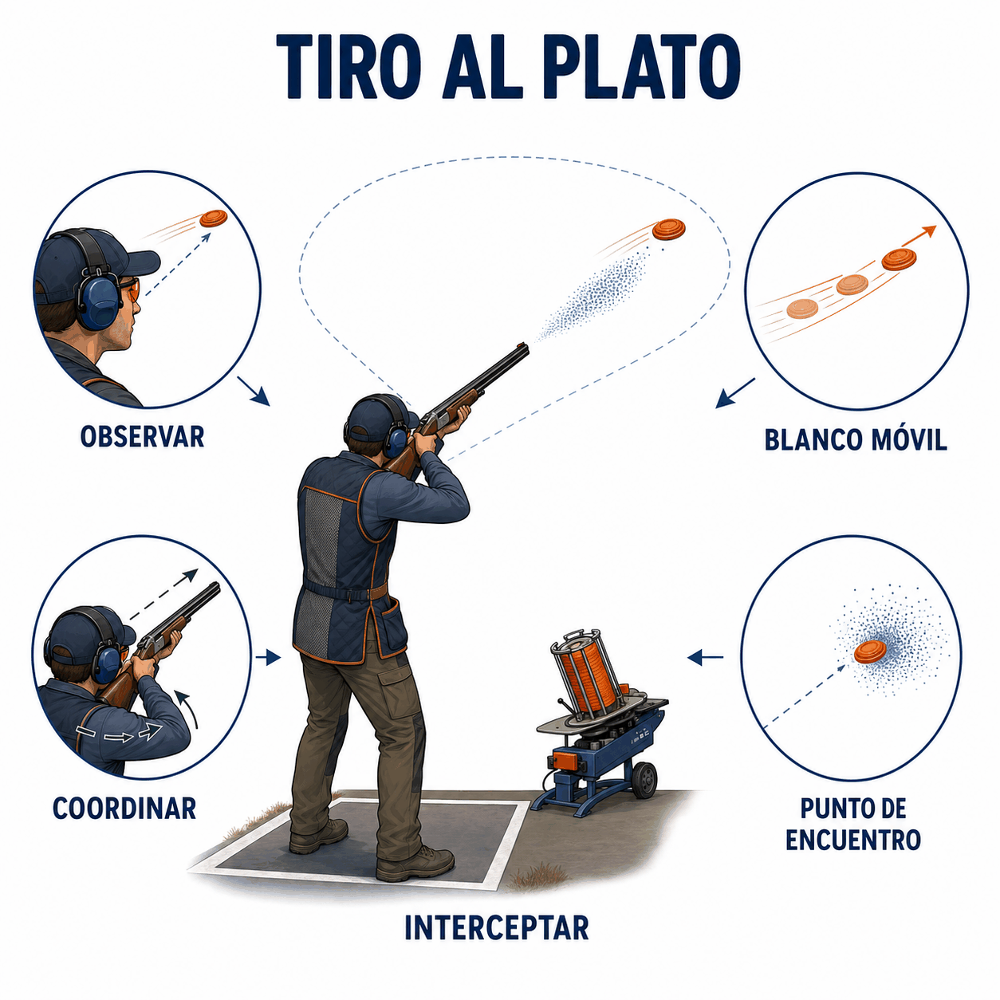
El blanco vuela y el disparo también necesita tiempo. Ver, acompañar y decidir el encuentro forman una sola tarea deportiva.
El tiro al plato reúne varios deportes de escopeta. Una máquina lanza un disco para que el tirador intente romperlo en vuelo. El plato ISSF de referencia mide 110 mm de diámetro, entre 25 y 26 mm de alto y pesa unos 105 g. Se considera acierto cuando, tras un disparo válido, se desprende un fragmento visible.
La dificultad está en que el blanco no espera. Mientras el tirador lo ve, decide y mueve la escopeta, el plato sigue avanzando. También avanzan y se abren los perdigones. Por eso no basta con apuntar al lugar donde está el plato: hay que buscar el punto en el que ambos movimientos se encontrarán.
La experiencia ayuda a coordinar mirada, cuerpo y arma. No hace falta una vista extraordinaria. Los expertos destacan sobre todo por organizar mejor la tarea y mantener un movimiento estable.
1.2
Breve historia
El tiro al plato consiste en acertar a un blanco en movimiento, no en apuntar a una imagen quieta. Para entender cómo se convirtió en un deporte con reglas, veremos ahora sus primeros blancos y máquinas.
¿Cómo se pasó de las antiguas pruebas con aves a un deporte de blancos artificiales, máquinas calibradas y reglas compartidas? Para entenderlo hay que seguir los objetos y también las instituciones.
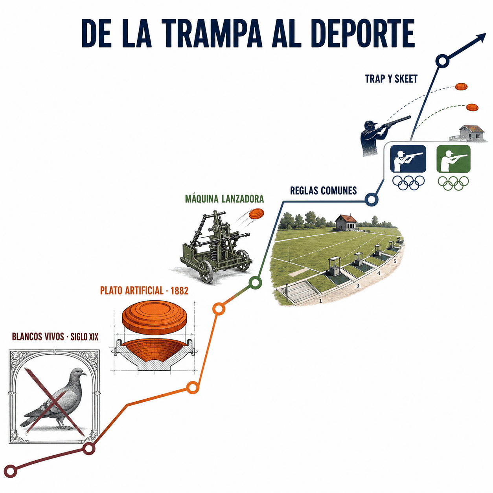
La historia no es solo una línea de progreso técnico. También es el paso desde blancos vivos hacia blancos artificiales, reglas comunes y competiciones comparables.
En el siglo XIX hubo competiciones con aves vivas. De aquella época vienen palabras como «pichón» y trap. La práctica moderna usa blancos artificiales. FITASC dejó de organizar pruebas con animales vivos en 2003.
Antes del plato actual se probaron blancos de vidrio y otros diseños. En 1882, George Ligowsky patentó un disco cóncavo y frágil pensado para girar, volar y romperse. La patente no demuestra que fuera el único inventor, pero sí muestra que ya se estudiaban la forma, la rotación y la rotura.
La gran evolución fue unir el blanco con máquinas repetibles, campos medidos y reglas comunes. La organización que hoy conocemos como ISSF nació en 1907 y FITASC adoptó su nombre actual en 1938. El tiro de escopeta a blancos voladores apareció en el entorno olímpico de 1900, aunque aquellas pruebas no eran iguales al Trap moderno. El deporte actual es el resultado de una evolución técnica y reglamentaria.
1.3
El tiro al plato como deporte organizado
La historia muestra que el plato moderno no es solo un disco: forma parte de un sistema de máquinas, medidas y reglas comunes. A continuación veremos qué instituciones organizan y mantienen ese sistema.
¿Qué función cumplen una federación internacional, la federación española, una territorial y un club? Distinguir esas escalas ayuda a no confundir reglamento, licencia, instalación y actividad cotidiana.
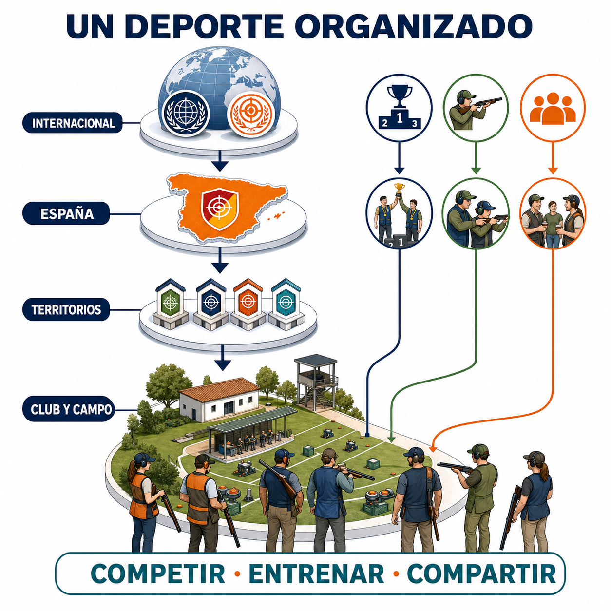
Las reglas internacionales, la organización nacional y la práctica cotidiana del club cumplen funciones distintas. Se conectan, pero no son lo mismo.
El tiro al plato no tiene un único reglamento para todas sus variantes. La ISSF regula las pruebas olímpicas y otras disciplinas internacionales. FITASC mantiene reglas propias para Foso Universal, Sporting y otras modalidades. Antes de consultar una norma hay que saber qué modalidad se está tirando.
En España, la Real Federación Española de Tiro Olímpico publica la normativa de su ámbito. Las federaciones autonómicas organizan la actividad en cada territorio y conectan a clubes y deportistas con la estructura nacional.
El club aplica las normas en la vida diaria: acceso, horarios, supervisión y uso de las canchas. Puede ofrecer formación, entrenamientos, competiciones y tiradas sociales. No son lo mismo. Cambian la documentación, la puntuación y el reglamento, pero la seguridad y las autorizaciones siempre son obligatorias.
1.4
Las principales familias de modalidades
Las federaciones, las territoriales y los clubes tienen funciones distintas, pero juntos organizan este deporte. Con esta estructura clara, podemos conocer las principales modalidades sin confundirlas.
¿Por qué Trap, Skeet, Sporting, Foso Universal o Robot no son nombres equivalentes? Cada familia organiza de otra manera el origen, la incertidumbre y la dirección de los blancos.
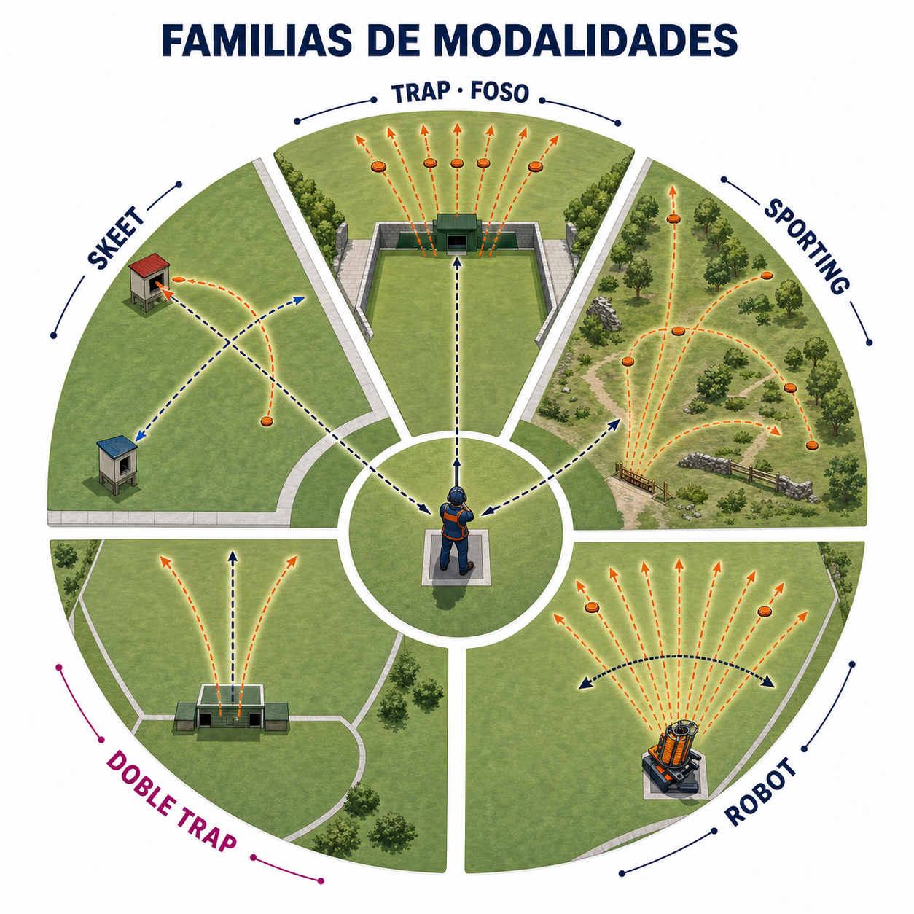
La familia se reconoce por dónde nacen los platos y por la incertidumbre que debe resolver el tirador. Los detalles reglamentarios se estudiarán en el capítulo 11.
En las modalidades de Trap o foso, los platos salen desde delante del tirador y se alejan. El Foso Olímpico usa grupos de máquinas y esquemas ISSF. El Foso Universal trabaja con cinco máquinas y reglas FITASC. Se parecen a primera vista, pero cambian los parámetros y el ritmo.
En Skeet, los platos salen de dos casetas laterales y cruzan trayectorias conocidas. En Sporting y Compak Sporting, varias máquinas presentan vuelos muy distintos: cruces, entradas, salidas y otros recorridos.
El Doble Trap lanza dos blancos a la vez y ya no forma parte del programa olímpico actual. Las máquinas robotizadas pueden seguir un reglamento o una configuración local. Por eso «robot» describe una máquina, no una modalidad universal.
1.5
Por qué resulta difícil
En cada modalidad cambia el lugar de salida del plato y la información que tiene el tirador. Todas exigen calcular el encuentro, y por eso acertar es más difícil de lo que parece.
¿Cómo puede parecer correcto un disparo que llega tarde? La dificultad se entiende al mirar toda la cadena: percepción, decisión, movimiento y vuelo mientras el plato no se detiene.
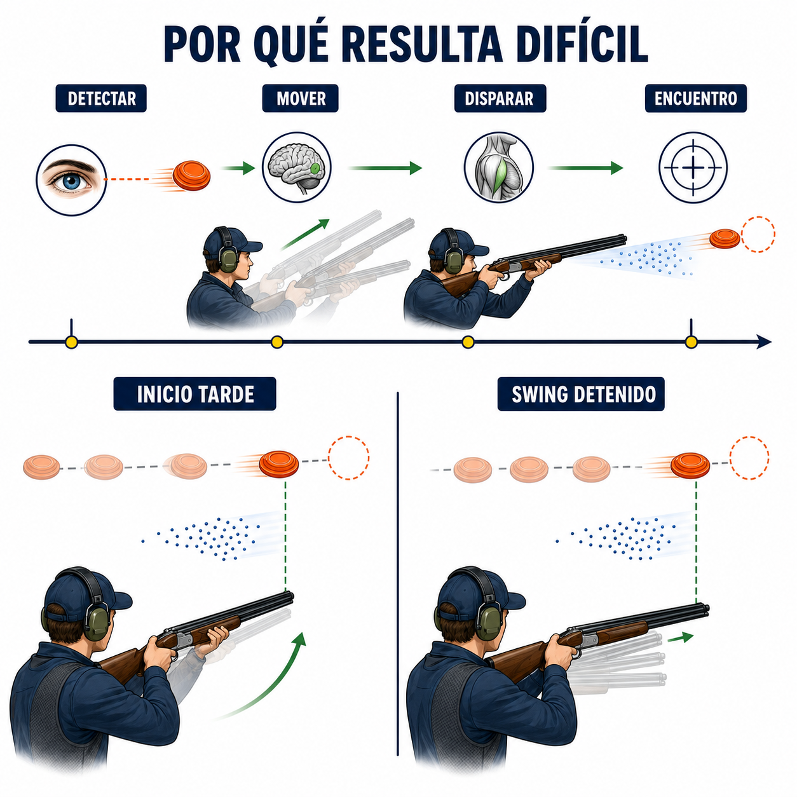
El fallo puede nacer en distintos eslabones de una misma cadena temporal. Dos disparos parecidos desde fuera no tienen por qué compartir causa.
Entre la salida del plato y el impacto ocurren varias cosas: el tirador lo detecta, reconoce su dirección, decide, mueve la escopeta y dispara. Después, los perdigones necesitan tiempo para llegar. Durante toda esa secuencia, el blanco sigue moviéndose.
La idea básica puede resumirse así: adelanto = velocidad del plato × tiempo hasta el encuentro. Es una simplificación, porque el plato pierde velocidad, sube y baja, y los perdigones también frenan y se dispersan. Aun así, explica por qué el disparo debe dirigirse a una posición futura.
Un fallo tampoco deja una marca como una diana. El tirador puede haberse quedado detrás o bajo, haber frenado la escopeta o levantado la cabeza. Antes de corregir hay que descubrir cuál de esos pasos falló.
1.6
La necesidad de observar y repetir
Un fallo puede deberse a la mirada, al tiempo, al movimiento o a la geometría, y dos fallos parecidos pueden necesitar correcciones contrarias. Por eso conviene observar con método y repetir cada ejercicio con una pregunta concreta.
¿Cuándo repetir enseña y cuándo solo consume otro cartucho? La repetición enseña cuando conserva el escenario, formula una hipótesis y cambia una sola variable.
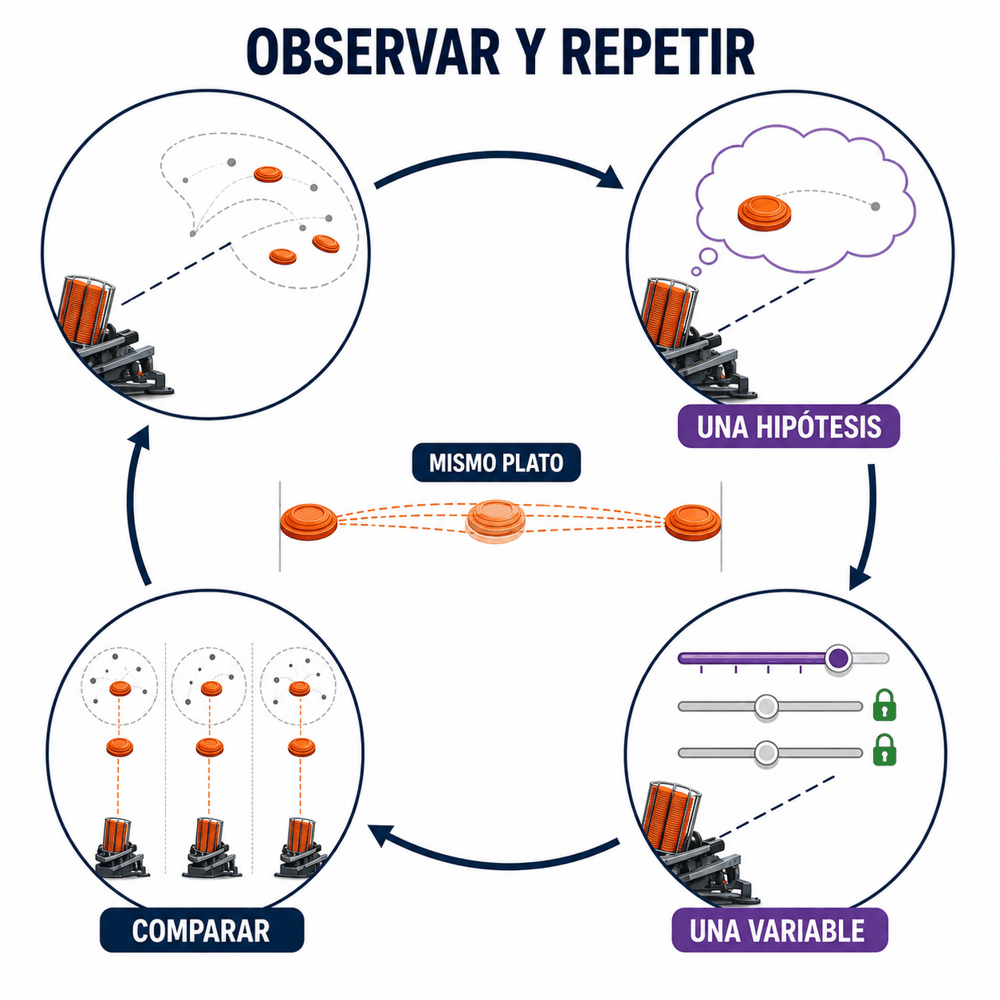
Repetir no es insistir a ciegas. Es conservar el escenario, formular una hipótesis, cambiar una variable y comparar.
En una serie, el siguiente plato puede cambiar de máquina, ángulo, altura o puesto. Eso forma parte del deporte, pero hace difícil saber por qué se ha fallado. La repetición ayuda cuando mantiene el mismo escenario y cambia una sola decisión.
El método es sencillo: observar, formular una hipótesis, repetir y comparar. Por ejemplo, si creemos que el movimiento empezó tarde, repetimos la salida y modificamos solo ese momento. Repetir no es insistir a ciegas.
La repetición de entrenamiento no debe confundirse con un plato nulo de competición. Tampoco crea una receta válida para todos los vuelos. Después de entender una relación, hay que volver a situaciones variables y comprobar si el aprendizaje se mantiene.
1.7
Nacimiento del simulador Plato
Repetir sirve para aprender cuando mantenemos la misma situación y cambiamos una sola variable. La posibilidad de parar, comparar y volver a probar es la base del simulador Plato.
¿Cómo se convierte una corrección breve de cancha en una escena que pueda observarse y discutirse? Plato nace para hacer visible esa traducción, sin sustituir la experiencia real.
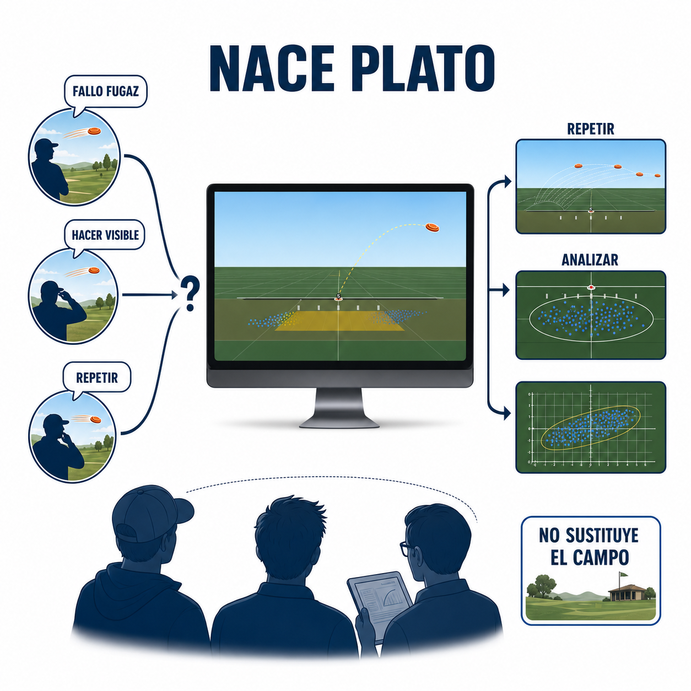
Plato nace al traducir frases de cancha muy breves en relaciones visibles. Así pueden discutirlas un principiante, un tirador y una persona técnica.
Plato nació para convertir correcciones breves, como «vas detrás» o «te quedas bajo», en una escena que pudiera verse con calma. El simulador muestra la trayectoria del plato, el punto de encuentro, el plomeo y la corrección de cada disparo.
La aplicación funciona en una página HTML y presenta la vista desde el ojo del tirador. Incluye Foso Universal, Foso Olímpico y Robot, cinco puestos, cámara lenta, viento, repetición y distintas aperturas de plomeo. Su utilidad está en observar y comparar, no en copiar una distancia de la pantalla y llevarla sin más al campo.
Plato no enseña a manipular un arma ni reproduce peso, retroceso, ruido o presión competitiva. Tampoco concede autorizaciones ni sustituye a un instructor. La práctica real debe hacerse en una instalación autorizada y con supervisión adecuada.
1.8
Objetivos del proyecto
Plato permite observar con calma lo que ocurre en una fracción de segundo. No sustituye lo que debe aprenderse con un arma real y supervisión, así que ahora veremos para qué puede usarse de verdad.
¿Qué debe ayudar a comprender el simulador y qué promesas debe evitar? Sus objetivos forman un ciclo de observación, comparación, decisión y validación responsable.
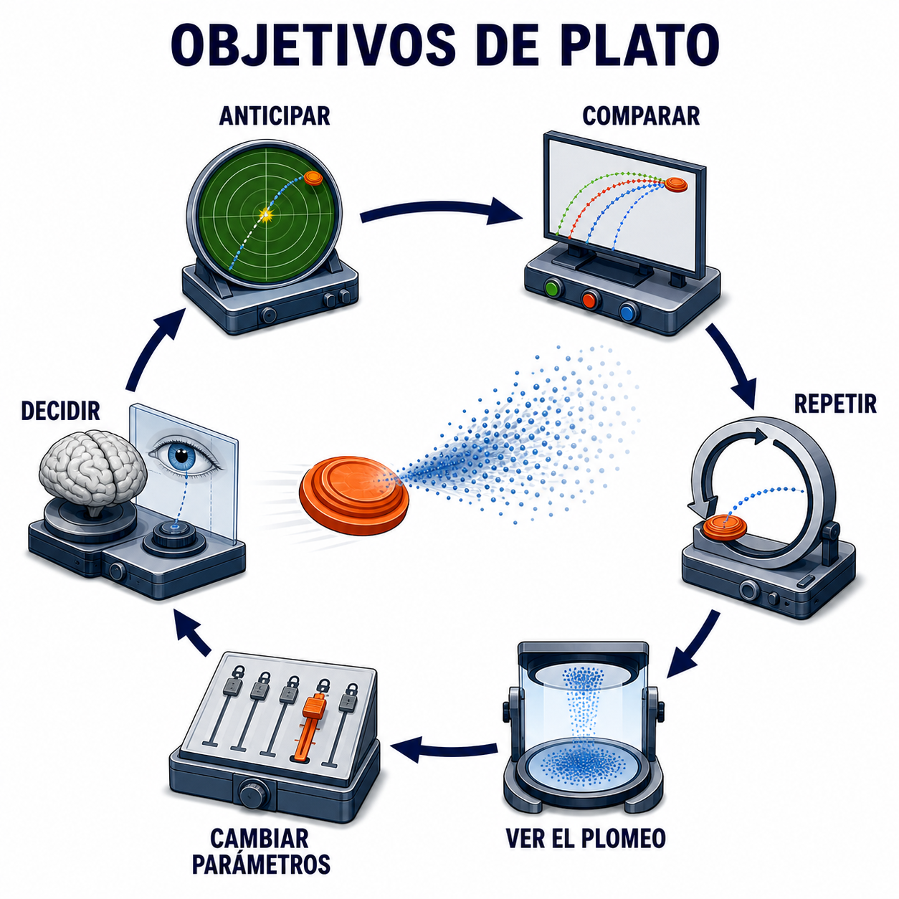
Los objetivos forman un ciclo de investigación. Se observa, se predice, se actúa, se compara y se vuelve al campo con una pregunta concreta.
El primer objetivo es explicar el adelantamiento: orientar el disparo hacia la zona en la que el plato y los perdigones pueden coincidir. Esa zona cambia con la dirección, la velocidad, la distancia y el momento del disparo. No existe un adelanto único para todos los platos.
El simulador también permite comparar trayectorias y repetir una salida sin cambiar el resto de parámetros. Así puede estudiarse por separado el efecto del puesto, el viento, la velocidad o la apertura del plomeo.
La nube de perdigones se representa de forma simplificada. Sirve para comprender dispersión y margen, pero no sustituye una prueba de plomeo con la escopeta y el cartucho reales. El objetivo final es tomar una decisión, observar el resultado y revisar la hipótesis.
1.9
Cómo utilizar este manual
El proyecto muestra relaciones físicas y decisiones de tiro, pero no certifica equipos ni garantiza resultados en la cancha. Saber lo que ofrece nos ayudará a elegir cómo leer este manual.
¿Es necesario leer todo en orden? El libro ofrece recorridos distintos para empezar, priorizar la seguridad, practicar con Plato o revisar el modelo técnico.
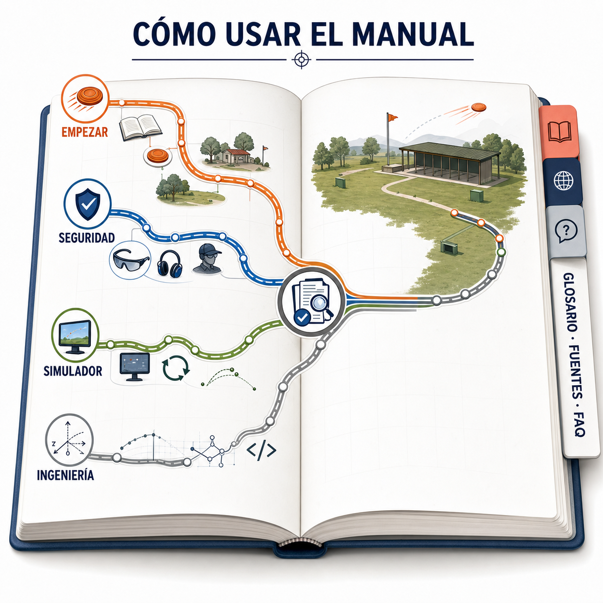
No hace falta leer igual ni en el mismo orden. Todas las rutas comparten seguridad, fuentes fechadas y regreso a la práctica supervisada.
Este manual puede leerse de principio a fin o usarse para resolver una duda concreta. Quien empieza debería continuar por los capítulos de acceso, seguridad, cancha y equipo. Quien ya tira puede ir a los fallos, la geometría o las modalidades.
Para practicar con Plato conviene seguir un ciclo corto: leer una idea, abrir el simulador, cambiar una sola variable y observar el resultado. Después se ocultan las ayudas y se intenta repetir la decisión. Una pregunta clara enseña más que muchos cambios a la vez.
La parte técnica explica unidades, fórmulas y límites del modelo. En la práctica real siempre mandan la ley, el reglamento vigente, las instrucciones del campo y el responsable de seguridad.
Qué hemos aprendido
El plato y el plomeo deben coincidir en el mismo lugar y momento.
Cada modalidad cambia las máquinas, los puestos y las trayectorias.
Observar un fallo es difícil porque el plato no deja una marca como una diana.
Plato permite repetir y comparar, pero no sustituye la formación ni la práctica real.
Lectura experta. Cada representación debe indicar qué parte de la realidad cubre y en qué fuente se apoya. El simulador explica relaciones, pero no certifica una cancha ni un arma.
Acceso responsable, documentación y primeros pasos
Cómo empezar en España
Para empezar en el tiro al plato no hace falta comprar una escopeta. Lo primero es conocer un campo, recibir orientación y entender qué papel tienen el club, la federación y la Guardia Civil. Este capítulo ordena esos pasos para que el principiante sepa a quién preguntar y no gaste dinero antes de tiempo.
Los trámites, precios, calendarios y seguros pueden cambiar. La información se ha revisado el 2 de agosto de 2026, pero siempre conviene confirmar los datos actuales con la Intervención de Armas y Explosivos, la federación territorial y el campo elegido.
2.1
El problema inicial
Ya sabemos qué es el tiro al plato, de dónde viene y cómo puede ayudar Plato. Antes de hablar de técnica, veremos cómo empezar en España con orientación, seguridad y respaldo legal.
Al principio se mezclan palabras como club, licencia, federación y campo. No significan lo mismo y ninguna sustituye por completo a las demás.
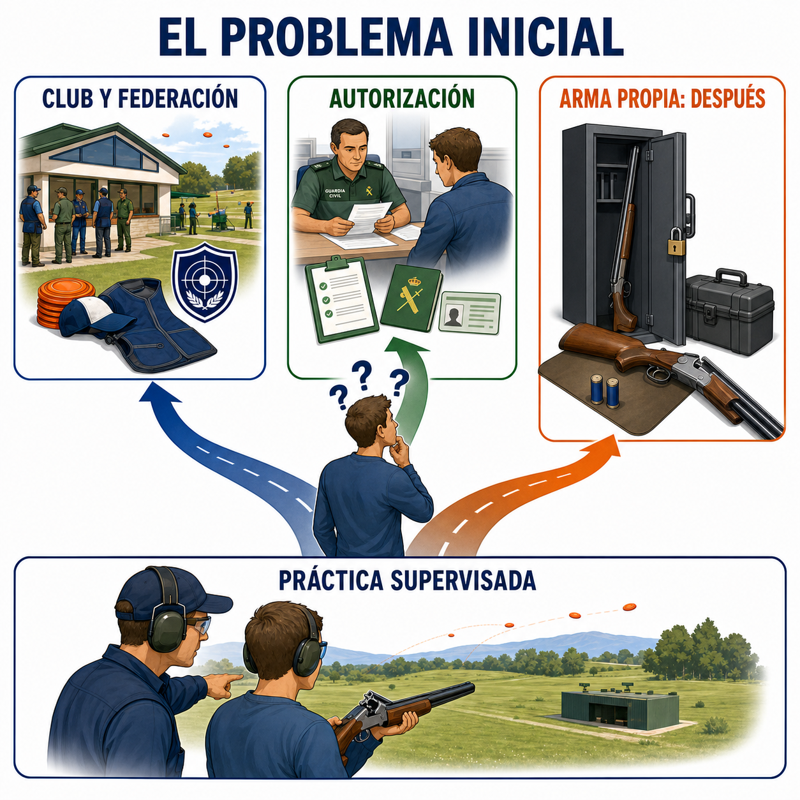
El comienzo se entiende mejor al separar acceso al campo, formación, documentación deportiva y arma propia.
Un club organiza su actividad y decide cómo acceden sus socios o visitantes. La federación tramita la relación deportiva y las competiciones de su ámbito. La Guardia Civil aplica la normativa de armas. Por último, cada campo tiene sus propias normas de acceso, seguridad, seguro y material.
También conviene distinguir entre categoría del arma y tipo de licencia. La categoría describe el arma; la licencia autoriza su tenencia y uso en las condiciones previstas. Para orientarse, estas son las relaciones más conocidas:
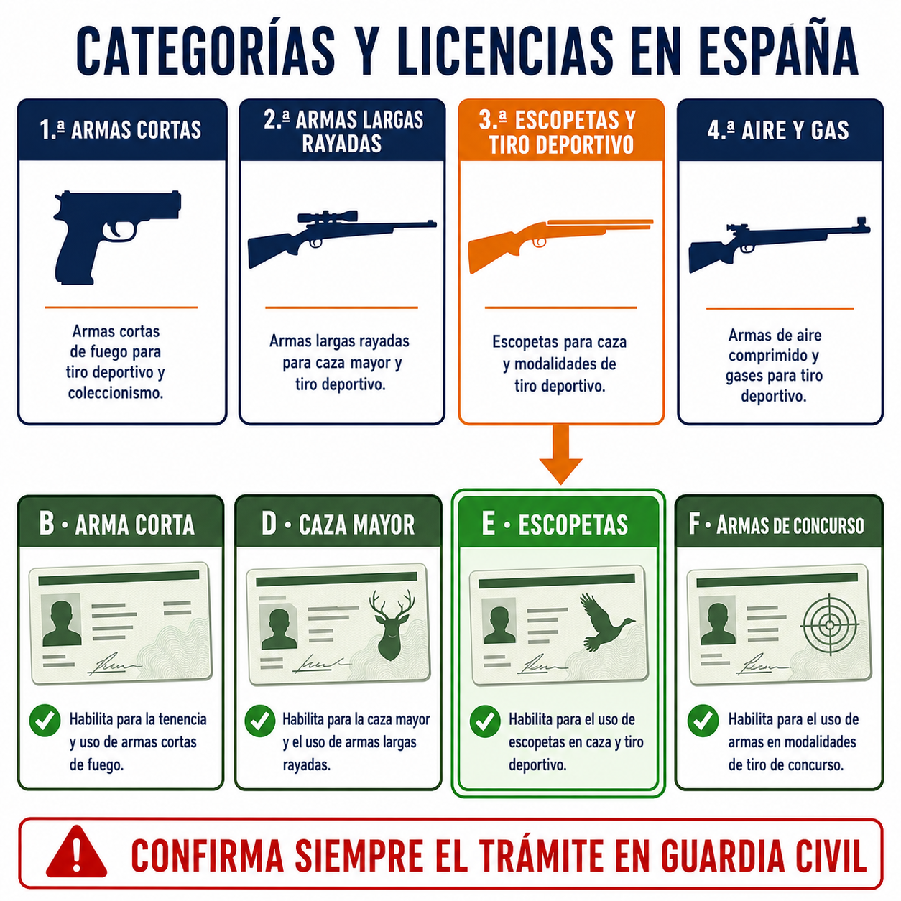
Categoría y licencia son conceptos distintos. Esta orientación visual no sustituye la clasificación que corresponda a cada arma ni la consulta a la Guardia Civil.
1.ª categoría: pistolas y revólveres. La licencia B se concede de forma restrictiva; determinadas armas de concurso pueden documentarse con F.
2.ª categoría: incluye las armas largas rayadas para caza mayor, asociadas normalmente a la licencia D.
3.ª categoría: incluye ciertas armas largas de tiro deportivo, las escopetas y otras armas largas de ánima lisa. Para una escopeta ordinaria de plato, la referencia habitual es la licencia E.
Licencia F: ampara armas consideradas de concurso y está ligada a la habilitación deportiva del tirador. No es el paso automático para cualquier escopeta de plato.
Licencias A y C: corresponden a supuestos profesionales definidos por el Reglamento y no forman parte del recorrido normal de un principiante.
Esta guía es solo una orientación. La clasificación concreta del arma y la licencia necesaria deben confirmarse con la Intervención antes de comprar. Estar federado no documenta una escopeta y tener licencia E tampoco permite entrar sin más en cualquier campo.
2.2
Primer paso recomendado
La primera decisión no debe ser comprar, sino buscar a alguien que pueda orientar y supervisar nuestros primeros pasos. Lo normal es acudir a un club, un campo autorizado o la federación territorial.
La forma más práctica de empezar es contactar con una federación territorial, un club o un campo que trabaje con principiantes.
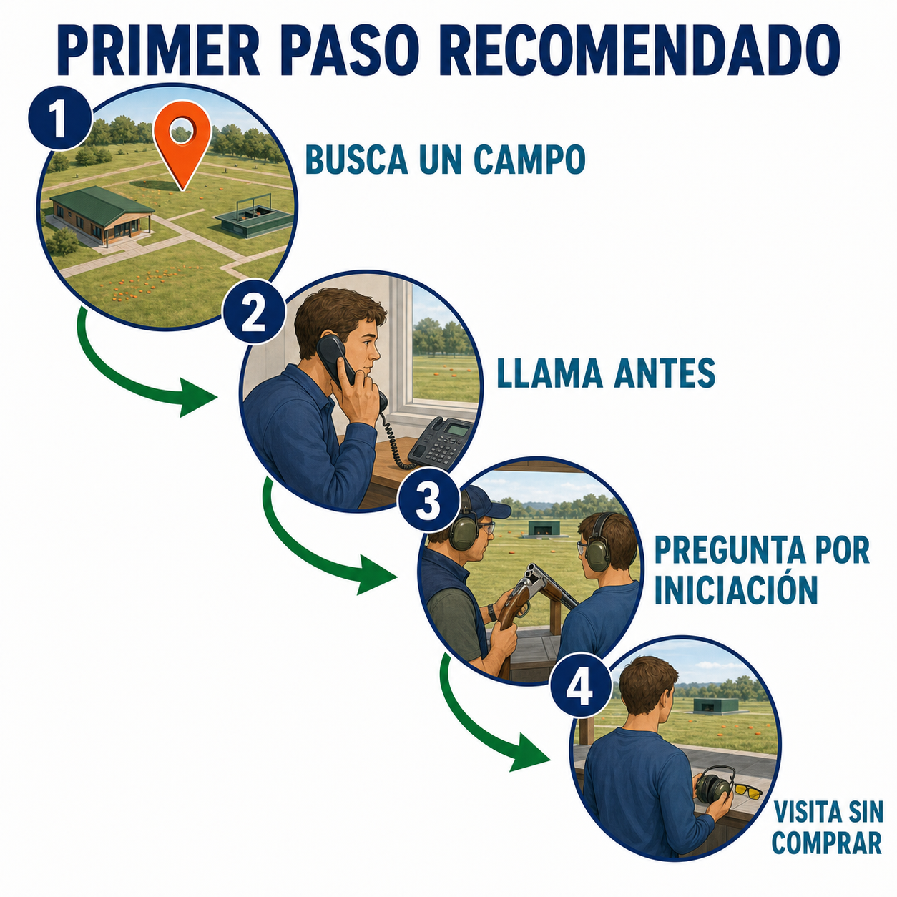
Informarse, recibir orientación, hacer los trámites necesarios y practicar con supervisión evita decisiones prematuras.
Un club no concede licencias de armas, pero sí conoce la actividad diaria: modalidades disponibles, horarios, cursos, acceso de visitantes y material permitido. La RFEDETO publica un directorio de federaciones territoriales que ayuda a localizar clubes e instalaciones. Conviene usar contactos oficiales y comprobar que estén actualizados.
El primer mensaje puede ser muy sencillo: «soy principiante, no tengo escopeta ni licencia de armas y quiero conocer el tiro al plato». Después basta con preguntar:
si se puede visitar el campo antes de disparar;
si hay curso o jornada de iniciación;
qué documentos y seguro se exigen;
quién aporta el arma y la munición;
qué protección debe llevarse y cuánto cuesta la actividad.
El segundo contacto es administrativo. La Intervención de Armas correspondiente al domicilio explica la solicitud de la licencia E, la tasa, los documentos y las pruebas. El campo orienta; la Guardia Civil resuelve.
2.3
Club, federación y Administración
Hablar antes con las personas adecuadas evita riesgos, gastos y falsas expectativas. Para entender sus respuestas, debemos distinguir las funciones del club, la federación y la Administración.
Cada entidad responde a una pregunta distinta: dónde practicar, cómo participar en el deporte y qué permite la normativa de armas.
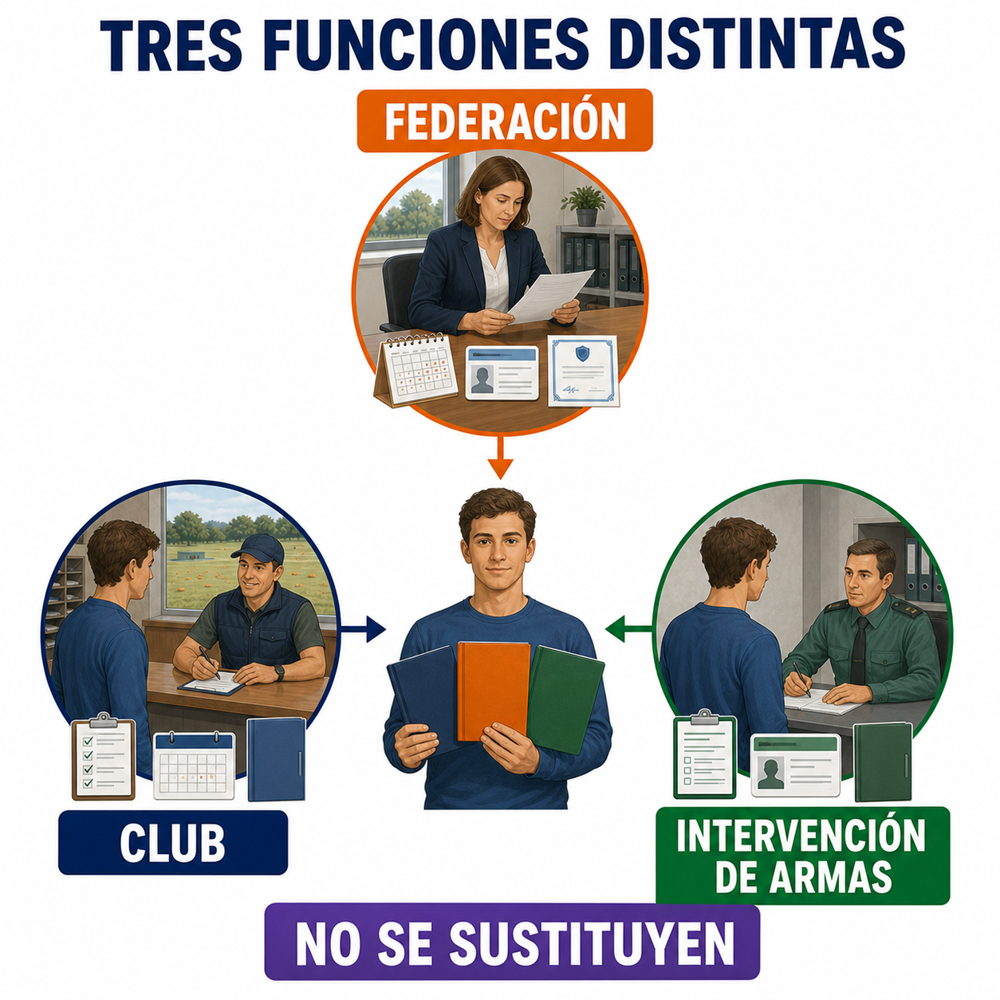
Club, federación e Intervención de Armas colaboran, pero cada uno tiene una responsabilidad diferente.
El club organiza entrenamientos, cuotas, cursos y acceso de socios. La federación territorial tramita licencias deportivas y organiza la actividad de su comunidad. La Intervención de Armas y Explosivos recibe solicitudes, controla la documentación de las armas y aplica el Reglamento. Ni el club ni la federación pueden conceder una licencia E.
Las Intervenciones de Armas están distribuidas por España. No hace falta buscar una oficina al azar: para una licencia E corresponde la del domicilio del solicitante. El sistema oficial de cita previa permite elegir provincia, trámite y sede disponible. La Guardia Civil indica que este servicio funciona en las 52 provincias. El mapa debe entenderse como una red provincial de oficinas, no como una única sede nacional.
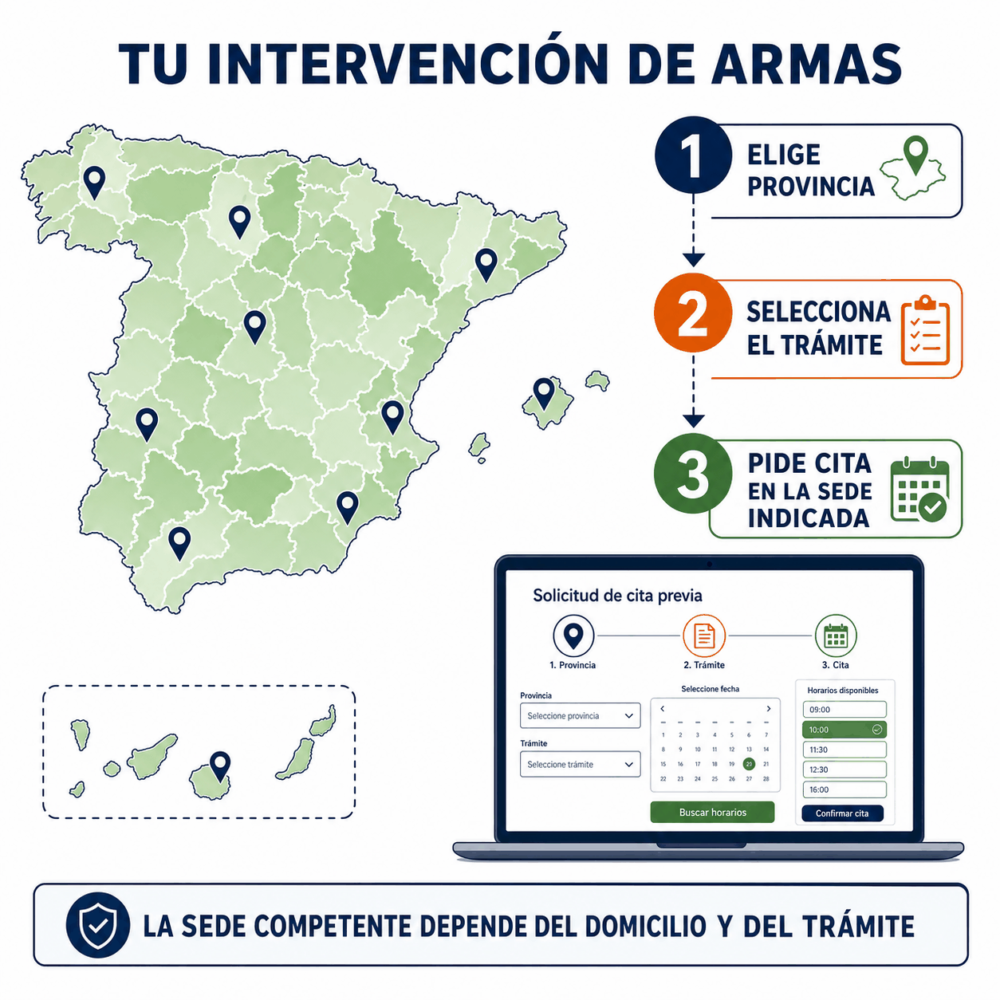
La sede competente depende del domicilio y del trámite. El mapa muestra el proceso de localización, no la posición exacta de cada oficina.
La cita previa ayuda a reducir esperas, aunque la Guardia Civil señala que es voluntaria. Antes de desplazarse conviene comprobar la sede, el horario y la documentación. Si existe una duda sobre qué oficina corresponde, el propio sistema de cita o la Comandancia provincial puede orientarla.
La licencia federativa y su seguro también tienen límites. El seguro deportivo obligatorio cubre determinados riesgos en las condiciones legales y de la póliza, pero no debe suponerse que cualquier tarjeta cubre cualquier actividad o campo. Conviene pedir el certificado, el teléfono de asistencia y las exclusiones.
2.4
Licencia de armas aplicable
El club, la federación y la Administración colaboran, pero cada uno tiene sus propias funciones y autorizaciones. Esta diferencia es importante para entender la licencia de armas de una escopeta de plato.
Para comprar y documentar una escopeta ordinaria de plato, la referencia habitual es la licencia E.
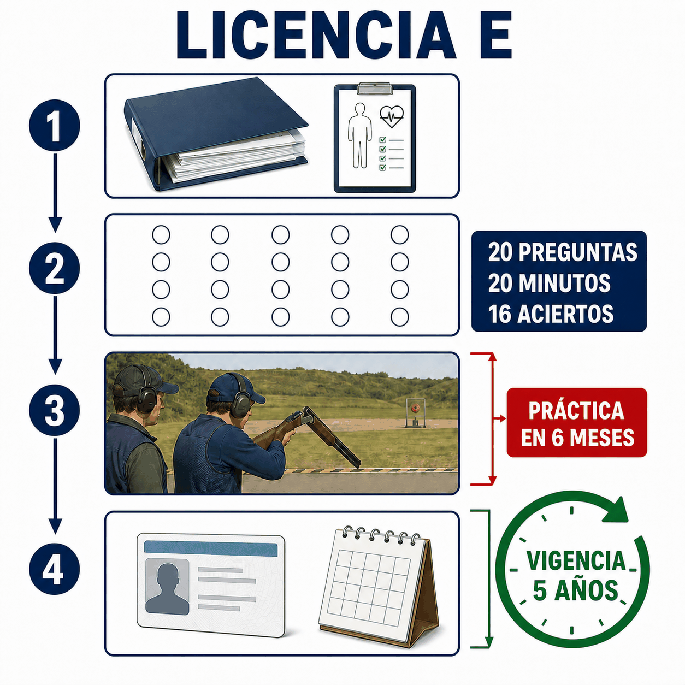
La licencia E exige requisitos personales, una prueba inicial de capacitación y una vigencia regulada.
La licencia E ampara las armas indicadas por el Reglamento, entre ellas las escopetas de la categoría 3.2. Solo puede expedirse una licencia E por persona. Permite documentar hasta seis escopetas o seis armas largas rayadas para tiro deportivo, con un máximo conjunto de doce. Su vigencia ordinaria es de cinco años. A partir de los 67 años necesita el visado previsto a los tres años.
La solicitud se presenta ante la Intervención correspondiente al domicilio, de forma presencial o telemática si se dispone de firma electrónica. Entre los requisitos habituales están la identificación, el certificado psicofísico, la acreditación de dedicación a la caza o al deporte, la tasa y, para la primera expedición, el certificado de capacitación. La lista vigente debe revisarse al iniciar el trámite.
No hay una fecha nacional única para el examen. Cada provincia prepara su calendario. La solicitud da derecho a tres convocatorias. Una vez superada la teoría, existe un plazo de seis meses para aprobar la práctica.
La prueba teórica contiene veinte preguntas y dura veinte minutos. Se necesitan al menos dieciséis aciertos. El programa oficial reúne siete temas y la Guardia Civil publica cuestionarios y respuestas. Lo más útil es estudiar por temas, hacer simulacros cronometrados y repasar los errores.
La aplicación para iPhone y iPad Licencia de Armas España ofrece preguntas por capítulos, simulacros, repaso de fallos y estadísticas. Puede resultar cómoda para practicar. Sin embargo, su ficha indica una versión publicada en 2018 y menciona un temario actualizado en 2020. Debe usarse como apoyo, no como fuente oficial ni como garantía de aprobado. Si existe una diferencia, prevalecen el programa, los cuestionarios y las respuestas publicados por la Guardia Civil.
En la prueba práctica con escopeta se evalúan la carga, el apuntamiento, el disparo y la descarga. Se realizan dos disparos de pie y sin apoyo sobre una diana fija de cincuenta centímetros situada a veinticinco metros. No es una serie de plato: se valora el manejo seguro y el resultado mínimo exigido.
2.5
Licencia federativa
La licencia E es la habitual para adquirir y documentar una escopeta ordinaria de plato, mediante su propio trámite administrativo. La licencia federativa pertenece a la actividad deportiva y tiene una función diferente.
La licencia federativa identifica al deportista dentro del tiro. No autoriza por sí sola la tenencia de una escopeta.
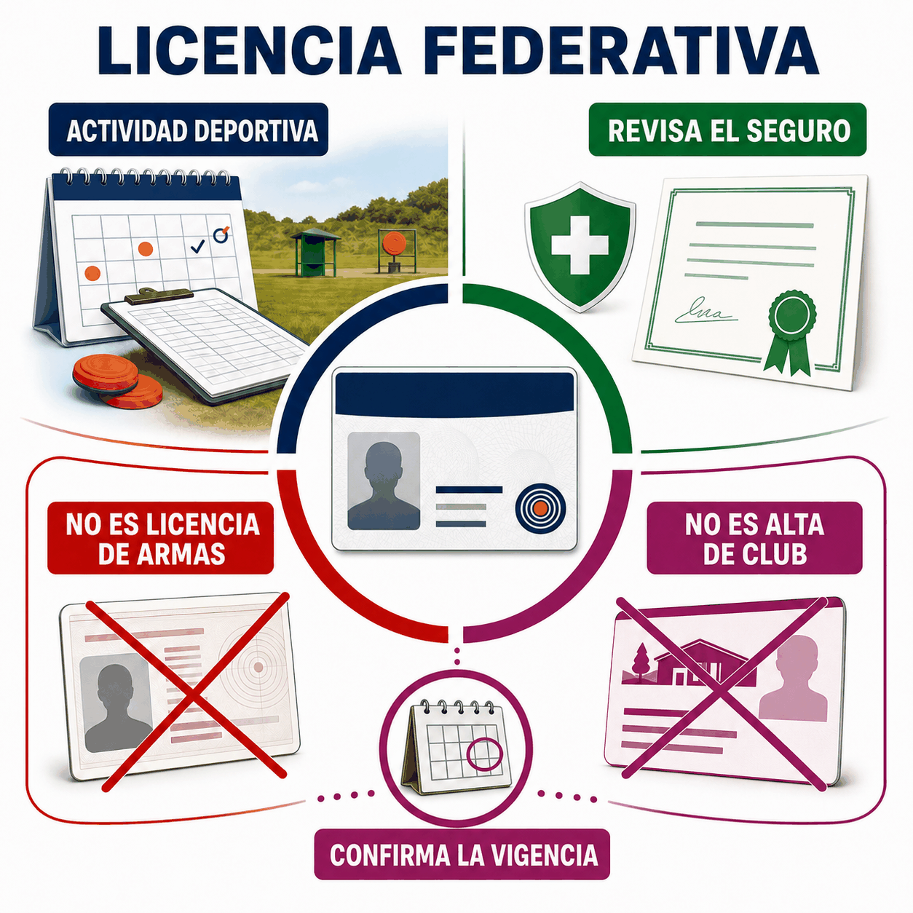
La licencia deportiva conecta al tirador con la federación, pero no sustituye la autorización administrativa del arma.
La licencia federativa acredita la relación del tirador con una federación durante un periodo concreto. Puede servir para entrenamientos, competiciones, servicios federativos y para demostrar dedicación deportiva en determinados trámites. Su alcance depende del territorio y de la modalidad.
Puede tramitarse directamente, mediante un club o por una plataforma federativa. También puede ser territorial o necesitar habilitación para una competición estatal. Por eso hay que comprobar vigencia, ámbito, modalidad y seguro, no solo tener una tarjeta.
Conviene guardar el número de licencia, la federación emisora, las fechas, el club asociado si lo hay, la póliza y el teléfono de asistencia. Una jornada de iniciación anterior al alta puede tener una cobertura específica del organizador; hay que preguntarlo.
2.6
Curso de iniciación
Federarse permite participar en la actividad deportiva y contar con sus coberturas, pero no autoriza por sí solo a adquirir o guardar un arma. Una vez separadas ambas cuestiones, podemos entender el curso de iniciación como formación y no como un simple trámite.
Un buen curso empieza por la seguridad y el manejo. Romper platos viene después.
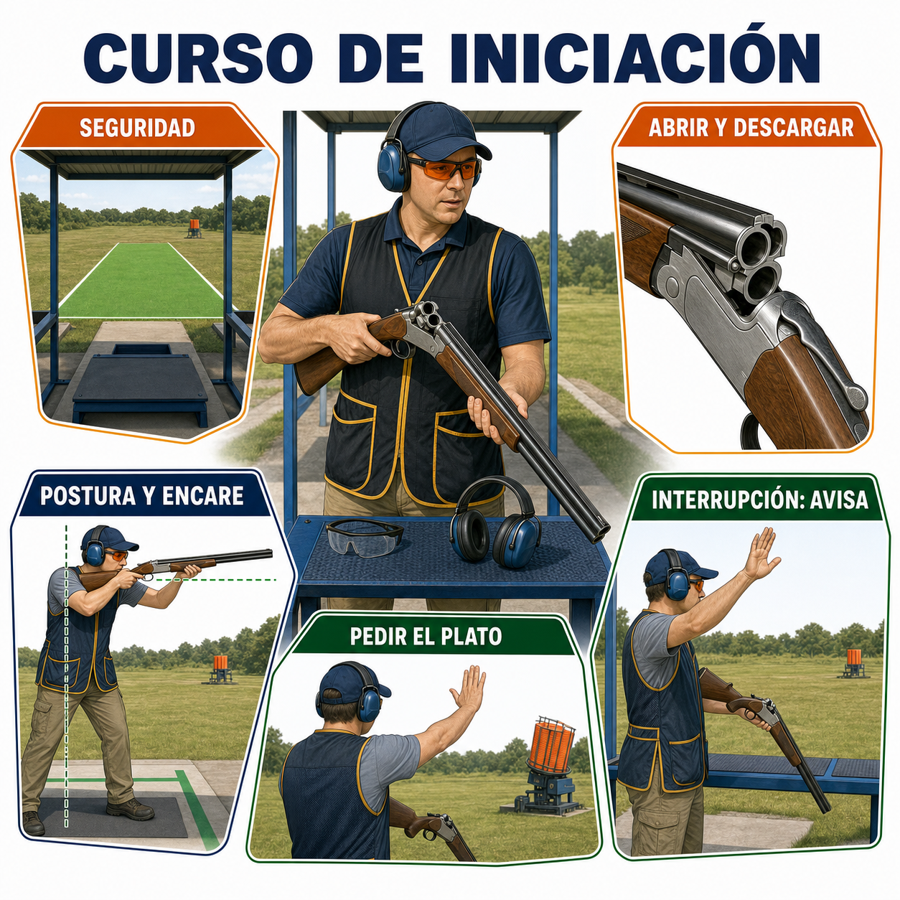
La progresión debe ir de la explicación y el manejo controlado a pocos disparos supervisados.
Hay que distinguir entre la capacitación ligada a la primera licencia E y el curso deportivo de un club o federación. Pueden complementarse, pero un diploma interno no sustituye las pruebas oficiales.
Antes de reservar, conviene pedir por escrito quién imparte el curso, dónde se realiza, cuántos alumnos atiende cada instructor y qué seguro existe. También debe aclararse quién aporta el arma y la munición, cuántos disparos incluye y qué protección se exige.
La primera parte debe enseñar a comprobar el estado del arma, mantener la boca en dirección segura, dejar el dedo fuera del disparador y obedecer cualquier orden de parada. El alumno necesita saber abrir, descargar y entregar el arma antes de trabajar postura, encare o adelanto.
Después pueden llegar la postura equilibrada, la colocación de la culata, la visión del plato y unos pocos lanzamientos sencillos. El progreso se mide primero por conductas seguras y repetibles, no por el número de platos rotos.
2.7
Primera visita a un campo
Un curso responsable da prioridad al estado del arma, las órdenes y la capacidad de detenerse, no al número de aciertos. En la primera visita a un campo veremos cómo estas reglas se aplican entre todos.
La primera visita sirve para conocer el lugar, escuchar las órdenes y confirmar las condiciones antes de disparar.
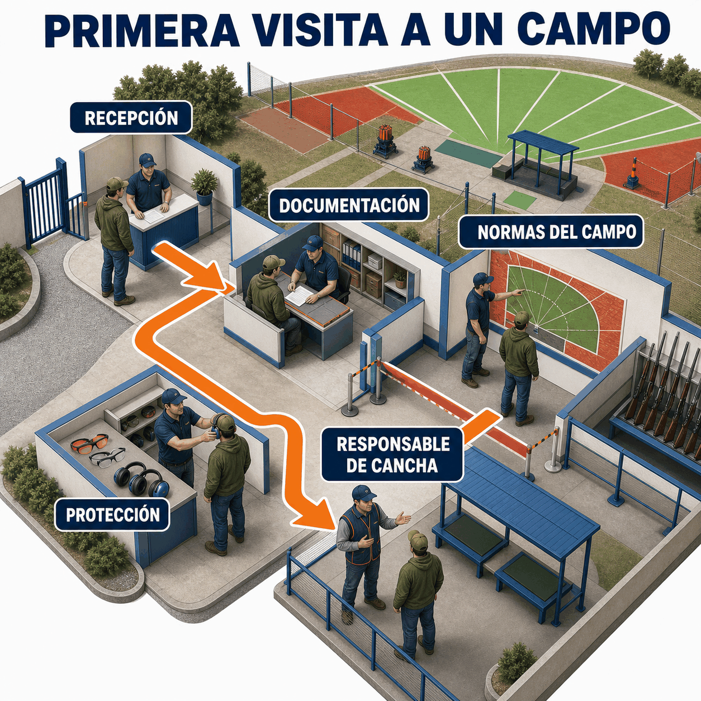
La recepción y la charla de seguridad van antes de acercarse a cualquier puesto de tiro.
Antes de ir hay que confirmar día, hora, persona de contacto, documentación, coste y posibilidad de entrar como observador. Una competición, el mantenimiento o el tiempo pueden cambiar los horarios.
En recepción se siguen las instrucciones del responsable. Pueden pedir identificación, reserva, licencia federativa o, si se lleva arma propia, licencia y guía de pertenencia. La protección ocular y auditiva se coloca antes de entrar en la zona indicada.
Nadie debe tocar un arma ajena ni entrar en una zona restringida por imitar a otros usuarios. También conviene preguntar por los cartuchos admitidos, la recogida de vainas y el tratamiento de residuos. Observar una ronda completa ya es una primera lección. Si algo no está claro, no existe obligación de disparar.
2.8
Ejemplo práctico de recorrido
Es mejor salir de la primera visita sabiendo quién nos orienta, qué condiciones hay y cuál es el siguiente paso que improvisar un disparo. Un ejemplo nos ayudará ahora a ordenar las consultas, la formación y los trámites.
El orden exacto puede variar, pero un recorrido sencillo evita mezclar trámites y compras.
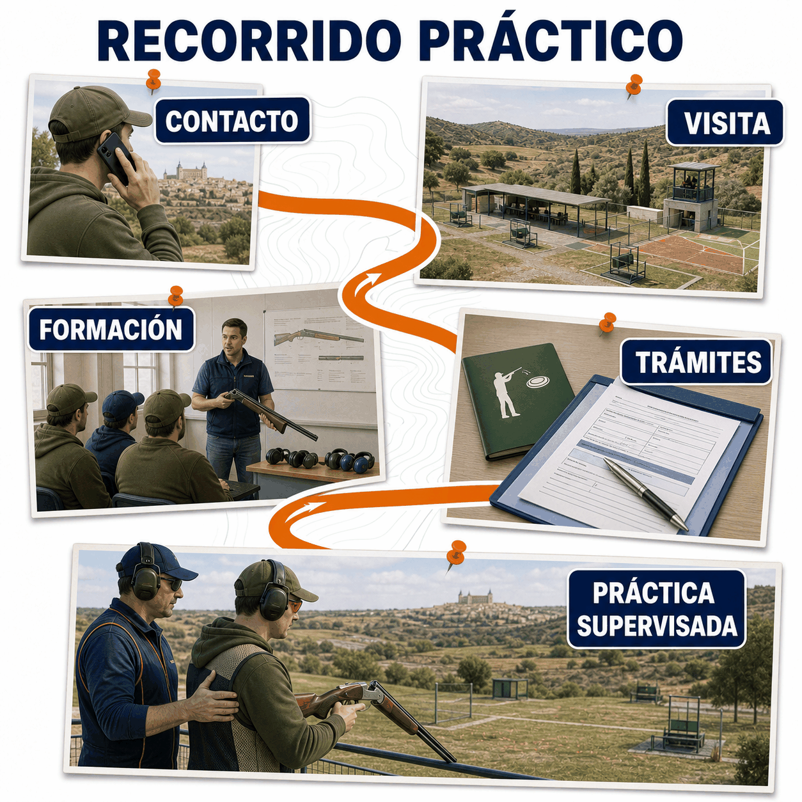
Campo, federación e Intervención forman un recorrido coordinado, no una única gestión.
Localizar un campo o club que reciba principiantes y pedir una visita.
Confirmar acceso, seguro, formación, material y coste.
Consultar a la Intervención de Armas del domicilio sobre la licencia E.
Tramitar la licencia federativa si la actividad la exige.
Realizar la formación y las pruebas que correspondan.
Practicar varias veces con supervisión antes de comprar equipo propio.
Lo importante no es hacerlo deprisa. Lo importante es saber qué entidad confirma cada paso. Horarios, tarifas y admisión pueden cambiar; la licencia de armas siempre depende de la resolución administrativa.
2.9
Qué no debe comprar todavía un principiante
El caso práctico ordena unas gestiones que pueden parecer confusas, aunque los plazos y requisitos cambien según el territorio. También muestra por qué conviene aplazar las compras hasta poder elegir con criterio.
Aplazar algunas compras evita gastar dinero en material que quizá no se adapte al cuerpo, a la modalidad o al campo.
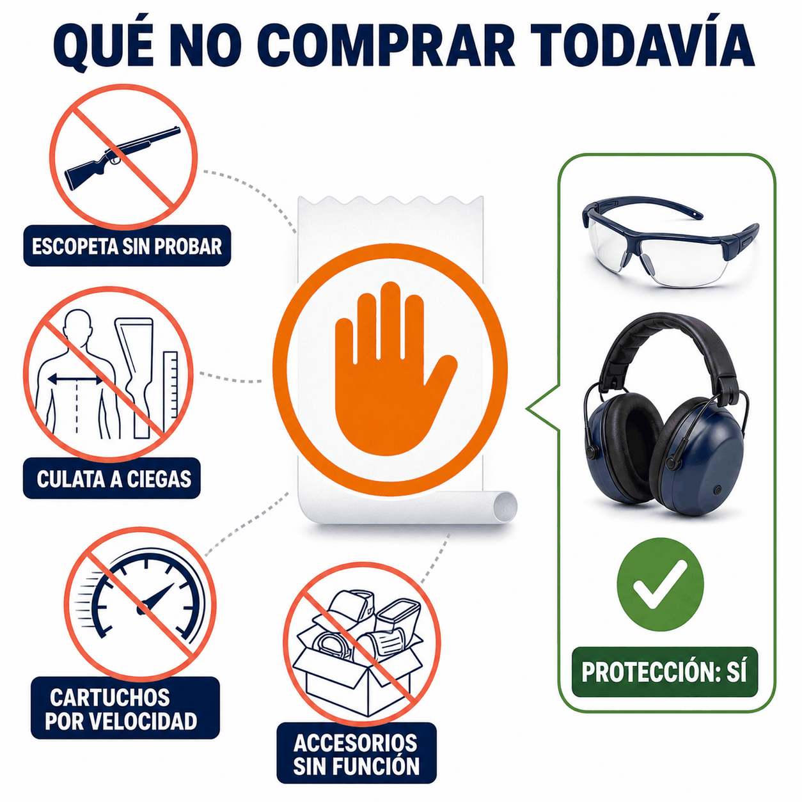
Primero se prueba y se mide con ayuda competente. Después se elige el material necesario.
La primera compra que conviene aplazar es la escopeta. El ajuste de la culata, la longitud, la postura y el ojo director influyen mucho. Un modelo excelente puede sentar mal a una persona concreta.
Tampoco conviene comprar grandes cantidades de cartuchos por precio o velocidad anunciada. El arma determina el calibre y la recámara compatibles. El campo y la modalidad pueden limitar la carga, el tamaño o el material del perdigón. Los chokes también deben ser adecuados para el arma y el uso.
Las modificaciones de culata, cantonera, peso o disparador deben hacerlas personas competentes. Un error de técnica puede parecer un defecto del arma. Por eso es mejor observar varias sesiones antes de modificar nada.
El chaleco de competición, las lentes de colores, el carro y otros accesorios pueden esperar. La excepción razonable es disponer de buena protección ocular y auditiva, confirmada con el instructor o el campo.
2.10
Lista de comprobación para comenzar
Probar, medir y pedir consejo antes de comprar evita acostumbrarse a un equipo inadecuado o a una modalidad que aún no conocemos. Ahora reuniremos estas decisiones en una lista final de preparación.
Antes de una primera práctica deben estar claros el lugar, el responsable, la documentación, el seguro y el material.
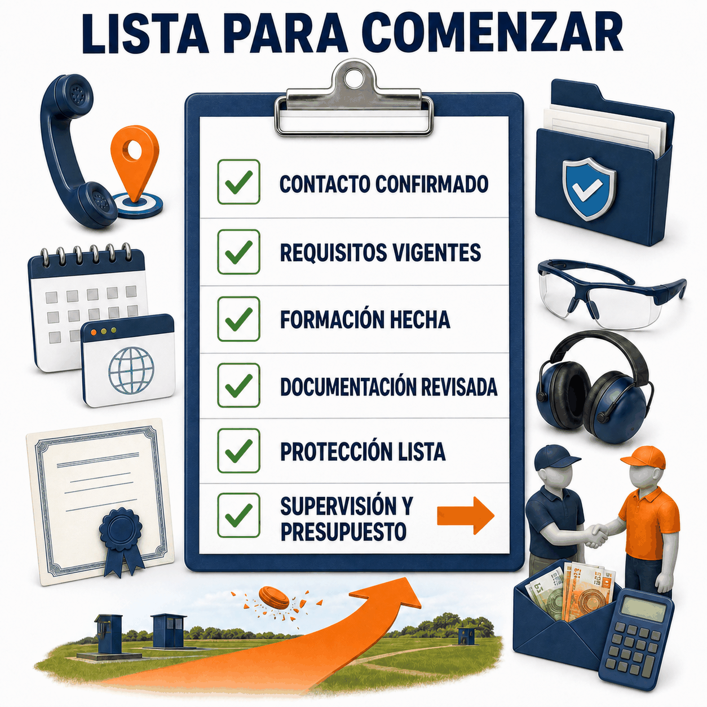
Una última revisión evita llegar al campo con dudas importantes o material innecesario.
Reserva, actividad y persona responsable confirmadas.
Requisitos administrativos consultados para el objetivo real.
Club, licencia federativa y seguro entendidos por separado.
Instructor, arma, munición y supervisión identificados.
Protección ocular y auditiva disponibles antes de entrar en la línea.
Presupuesto realista, sin comprar aún una escopeta a ciegas.
Ante cualquier duda de seguridad, no se manipula ni se dispara.
Para una primera visita suelen bastar ropa cómoda, calzado estable y la protección indicada. No se lleva arma ni munición por iniciativa propia. Los precios de alta, formación, tasa, certificado psicofísico y sesiones deben comprobarse en la fecha de pago.
Capítulo 03
Seguridad antes que técnica
La seguridad no es un trámite. Es la condición necesaria para aprender y compartir una cancha sin poner a nadie en riesgo. La ley exige controlar el arma en todo momento. En el campo, esa obligación se convierte en gestos claros: dirección segura, carga solo en turno, escopeta abierta fuera del disparo y obediencia al responsable.
Saber las reglas de memoria no basta. El ruido, la prisa o un fallo pueden provocar un descuido. Este capítulo ordena una secuencia sencilla que debe practicarse con supervisión.
3.1
Principio fundamental
Empezar bien no consiste en acumular material, sino en saber quién nos supervisa, qué documentos necesitamos y cómo actuar en cada fase. Con estos pasos claros, llegamos a la regla más importante: la seguridad.
¿Qué regla nos protege cuando no sabemos con seguridad si hay un cartucho dentro? Tratar toda arma como si estuviera cargada, mantener el cañón en dirección segura y dejar el dedo fuera del disparador forman una sola disciplina. No son tres consejos sueltos que se puedan cambiar entre sí.
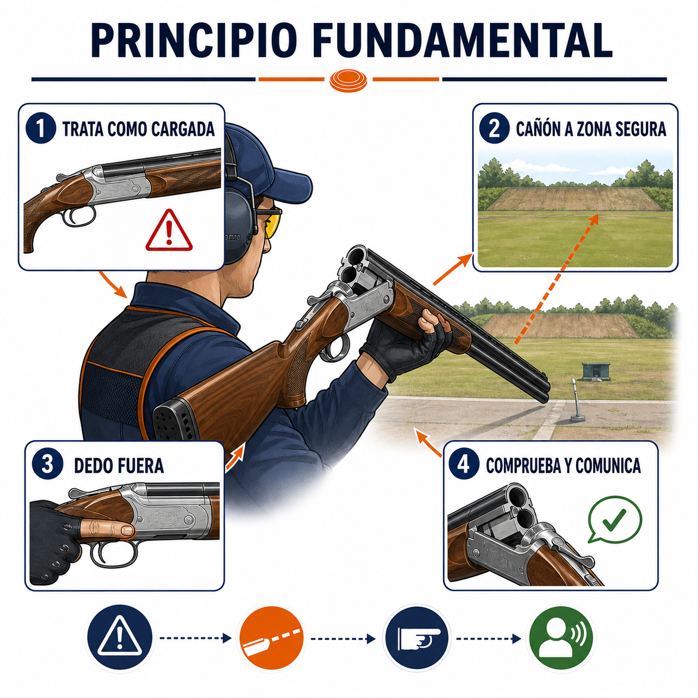
Ver el estado del arma ayuda, pero no basta. Dirección segura, dedo fuera, comprobación y comunicación se mantienen antes, durante y después del disparo.
La primera regla es tratar toda escopeta con el mismo cuidado, aunque creamos que está descargada. La boca debe apuntar siempre hacia una zona segura y el dedo permanece fuera del disparador hasta el momento de tirar. La duda nunca autoriza una manipulación descuidada.
El Reglamento de Armas exige controlar el arma y actuar con diligencia. El seguro mecánico es una ayuda, no una garantía. Cada tirador responde de su escopeta, pero cualquiera que vea un peligro debe avisar al árbitro o responsable.
3.2
Zonas seguras y zonas prohibidas
Tratar siempre un arma como si estuviera cargada nos protege incluso cuando cometemos un descuido. Para aplicar esta regla debemos saber qué direcciones y zonas son seguras.
¿Hacia dónde es seguro orientar el cañón? No basta con decir “hacia delante”. Hay que reconocer la línea de tiro, el sector autorizado de vuelo y caída, las máquinas, la zona de espera y cualquier lugar ocupado por personas o bienes.
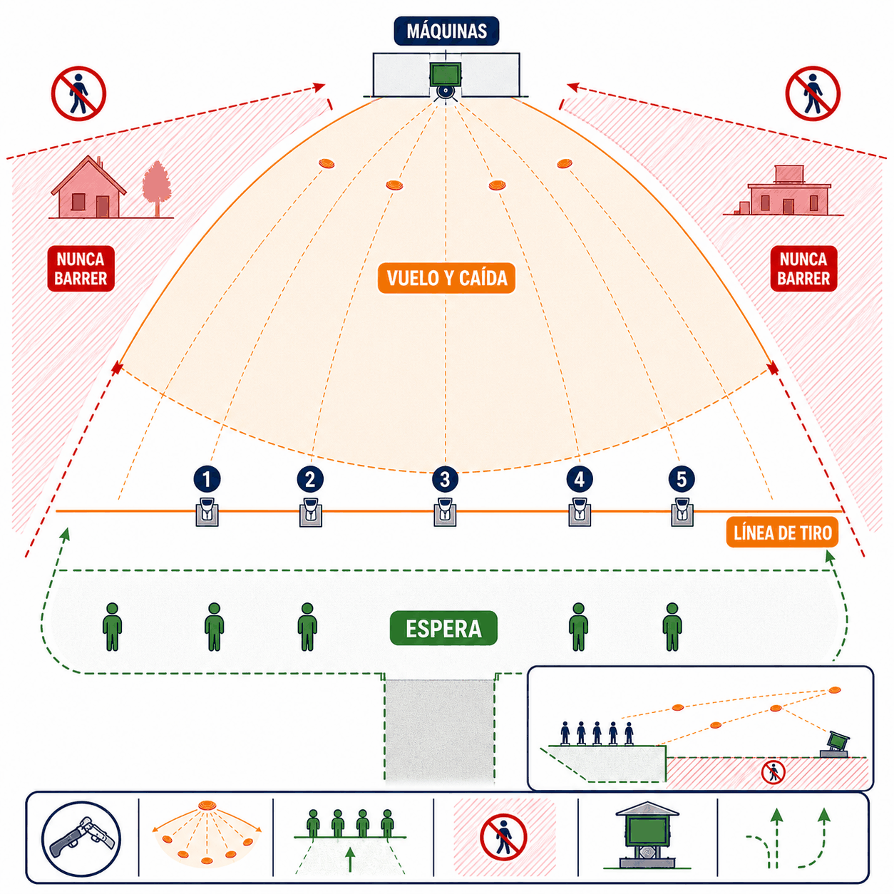
Una cancha organiza el riesgo con límites físicos. Los cinco puestos están en la línea. La espera queda detrás. Máquinas, vuelo y caída ocupan un sector controlado al que nadie entra durante el tiro.
La línea de tiro separa la zona de espera de los puestos y del sector por el que vuelan y caen los platos. Si hay una persona delante de los puestos, las armas permanecen abiertas y descargadas.
Una dirección segura no es solo un lugar que ahora parece vacío. También hay que pensar qué hay detrás y qué superficies podrían desviar un disparo. La señalización y las órdenes del campo tienen prioridad, porque cada instalación es diferente.
3.3
Arma abierta fuera del momento de tiro
La dirección segura depende de la situación de toda la cancha, no de lo que el tirador crea que va a hacer. Por eso el arma debe permanecer abierta salvo durante el momento autorizado de tiro.
¿Por qué una escopeta abierta comunica mejor que decir “está vacía”? Porque permite comprobar su estado a distancia. También dificulta que pueda disparar mientras se espera, se rota o se abandona el puesto.
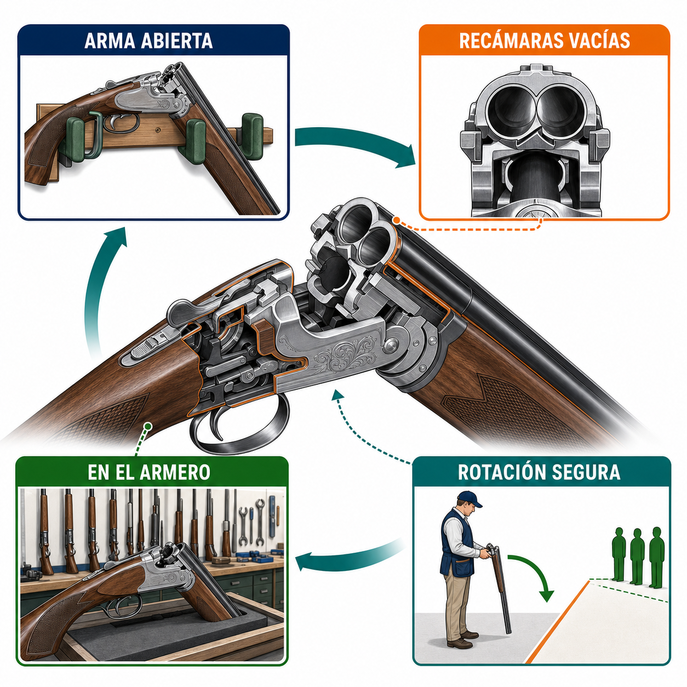
La báscula abierta convierte la descarga en un estado visible. Se ven las dos recámaras y el arma queda inoperativa durante la espera, la revisión y el desplazamiento.
En una escopeta superpuesta, abrir por completo deja las recámaras visibles. Ese estado permite comprobar desde fuera que el arma no puede disparar. Fuera del turno, la escopeta debe estar abierta y descargada.
Se mantiene así al esperar, al rotar y al abandonar el puesto. Solo se cierra dentro del turno y con los cañones orientados hacia la zona de blancos. Para entregarla a otra persona también se abre y se muestran las recámaras.
3.4
Secuencia segura antes de disparar
Una escopeta abierta permite que todo el grupo vea su estado y comparta la misma información de seguridad. Ahora ordenaremos las comprobaciones necesarias antes de cerrarla y disparar.
¿Cuándo deja de ser espera y empieza el tiro? Solo cuando coinciden puesto, turno, línea abierta, zona despejada y autorización para cargar. El cartucho nunca debe adelantarse a esas condiciones.
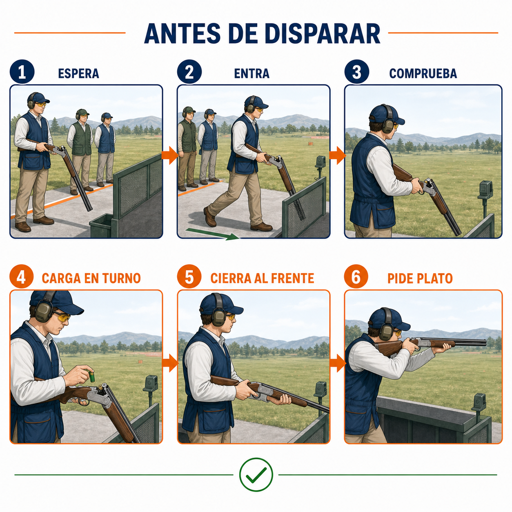
La carga aparece en el cuarto paso, no en el primero. La escopeta se cierra solo dentro del puesto y orientada hacia la zona de blancos.
Antes de entrar al puesto, el arma está abierta y descargada. Se comprueba que corresponde el turno, que el tirador anterior ha salido y que nadie está delante. Ya en el puesto se carga solo la cantidad permitida.
La escopeta se cierra con los cañones hacia la zona de blancos. El dedo sigue fuera del disparador hasta que el arma está encarada y el tiro es inminente. Las órdenes del árbitro tienen prioridad: ante STOP se para y ante UNLOAD se descarga.
3.5
Secuencia segura después de disparar
Antes de empezar deben coincidir el puesto, el turno, la línea abierta y la autorización para cargar. Después del disparo, otra serie de pasos deja el arma de nuevo en un estado que todos pueden comprobar.
¿Cuándo puede el tirador girarse o abandonar el puesto? Después de mantener el arma al frente, abrirla por completo, retirar cartuchos y confirmar que ambas recámaras están vacías.
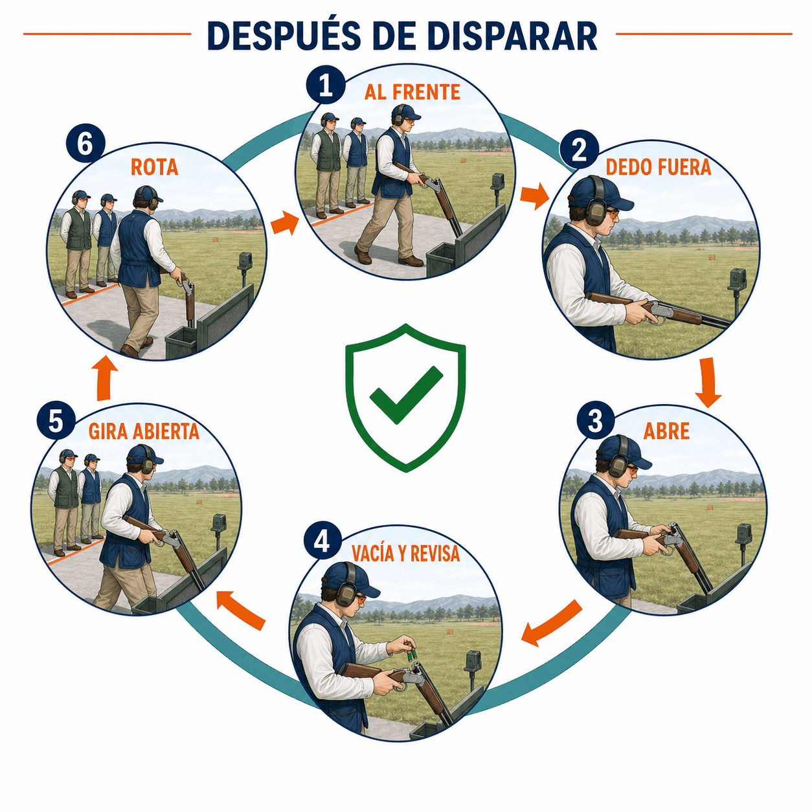
El resultado del plato no cambia el orden. Primero al frente, dedo fuera, apertura y descarga. Solo después se gira y se rota con la acción abierta.
El intento no termina al romper o perder el plato. Termina cuando la escopeta vuelve a estar abierta, descargada y comprobable. Se abre por completo con los cañones al frente.
Al abrir una superpuesta hay que controlar la expulsión de las vainas. Después se recogen o se depositan donde indique el campo. Solo se gira o se cambia de puesto con el arma abierta y vacía.
3.6
Fallo de disparo o encasquillamiento
Abrir, descargar y revisar las recámaras cierra el ciclo sin confiar en suposiciones. Si el arma no responde como debería, hay que seguir el protocolo especial para una interrupción.
¿Qué debe hacer quien aprieta el disparador y no ocurre lo esperado? Quedarse quieto, mantener la boca hacia la zona de vuelo, no abrir ni tocar mecanismos y avisar al árbitro o responsable.
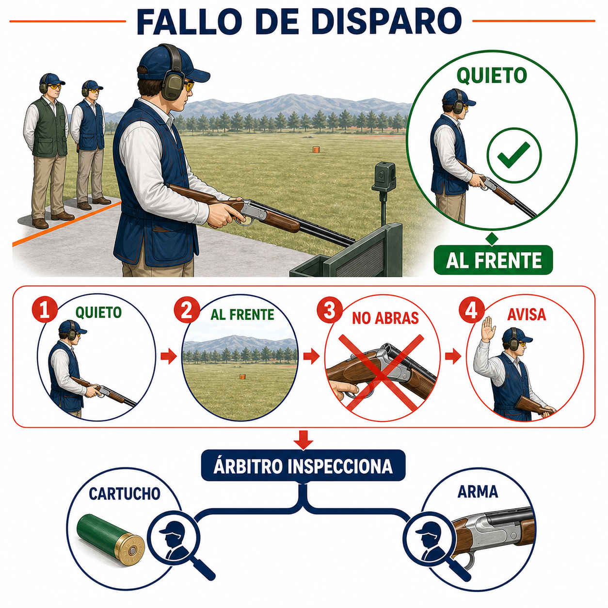
La causa se investiga después de estabilizar la situación. Para el principiante, la respuesta inmediata es una: quieto, al frente, no abrir y avisar.
Un clic, un retroceso extraño o una apertura bloqueada pueden tener causas distintas. La respuesta inicial es la misma: mantener los cañones hacia la zona segura, sacar el dedo y avisar.
No se abre de golpe, no se vuelve a disparar y no se mira por el cañón. El árbitro decide qué ocurre con el plato y el responsable o un armero determina qué hacer con el arma. Si la causa no está clara, la escopeta se retira de la serie.
3.7
Riesgos típicos de los principiantes
Ante un fallo, es más seguro mantener la dirección y esperar instrucciones que buscar la causa bajo presión. Muchos riesgos del principiante aparecen cuando intenta hacer demasiadas cosas a la vez.
¿Por qué una persona que conoce las reglas puede incumplirlas? Porque la atención, las manos y la mirada se saturan. El riesgo aparece en pasos pequeños: preguntar, cerrar, añadir un cartucho o intentar arreglar algo.
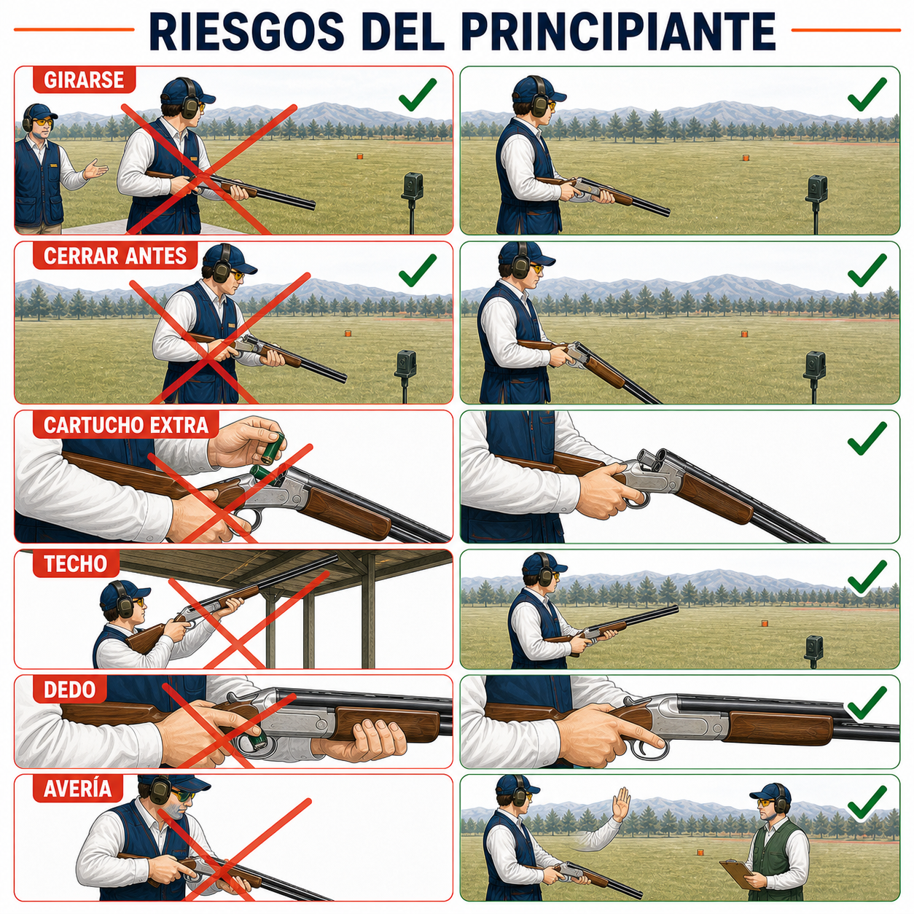
Cada error tiene una barrera concreta. No se corrige con “ten cuidado”, sino con un orden visible: abrir antes de girar, cargar en turno, mirar el sector y pedir ayuda.
Muchos errores aparecen al cambiar de una acción a otra. El principiante puede girarse para hablar, cerrar antes de tiempo o tocar el disparador mientras levanta el arma. La rutina debe ser siempre la misma: cañones al frente, dedo fuera, abrir y comprobar antes de conversar o moverse.
También hay que cargar solo lo permitido y evitar que techo, laterales o personas entren en el recorrido de los cañones. Una sola voz debe dar las órdenes de seguridad; las correcciones técnicas esperan a que el arma esté abierta.
3.8
Protección ocular
Preparar el material, conocer las órdenes y escuchar a una sola persona responsable reduce muchos errores antes de entrar en la línea. La primera protección física frente a fragmentos y partículas son las gafas.
¿Sirven unas gafas coloreadas como protección? Solo si, además de ayudar a ver, son una protección ocular inastillable adecuada. También deben cubrir bien y mantenerse sin daños.
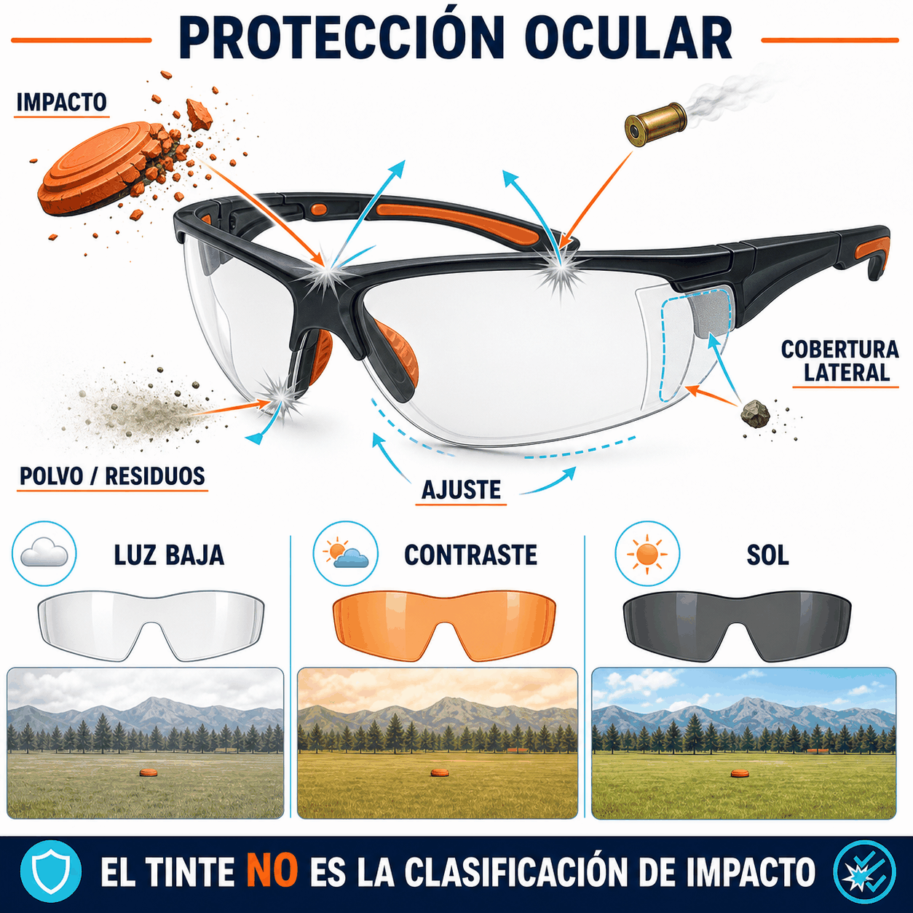
La protección depende de resistencia, cobertura y ajuste. El tinte cambia la percepción del fondo y el contraste, pero no es por sí solo una clasificación de impacto.
En la cancha pueden llegar al ojo fragmentos, polvo o vainas. Por eso se necesitan gafas resistentes a impactos, con buena cobertura y ajuste. Una gafa de sol normal no es una protección de tiro.
El color de la lente puede mejorar el contraste, pero no existe un tono perfecto para todos los fondos. La protección debe permitir visión lateral, no moverse durante el encare y ser compatible con la protección auditiva. Una lente dañada se sustituye.
3.9
Protección auditiva
Las gafas deben proteger bien, ajustarse a la cara y ser cómodas con el resto del equipo; el color de la lente es menos importante. La cancha también produce ruidos muy fuertes, por lo que hace falta una buena protección auditiva.
¿Por qué protegerse antes del primer disparo si una serie dura poco? Porque el ruido de un arma es impulsivo. Puede causar daño inmediato y se suma a cada exposición posterior.
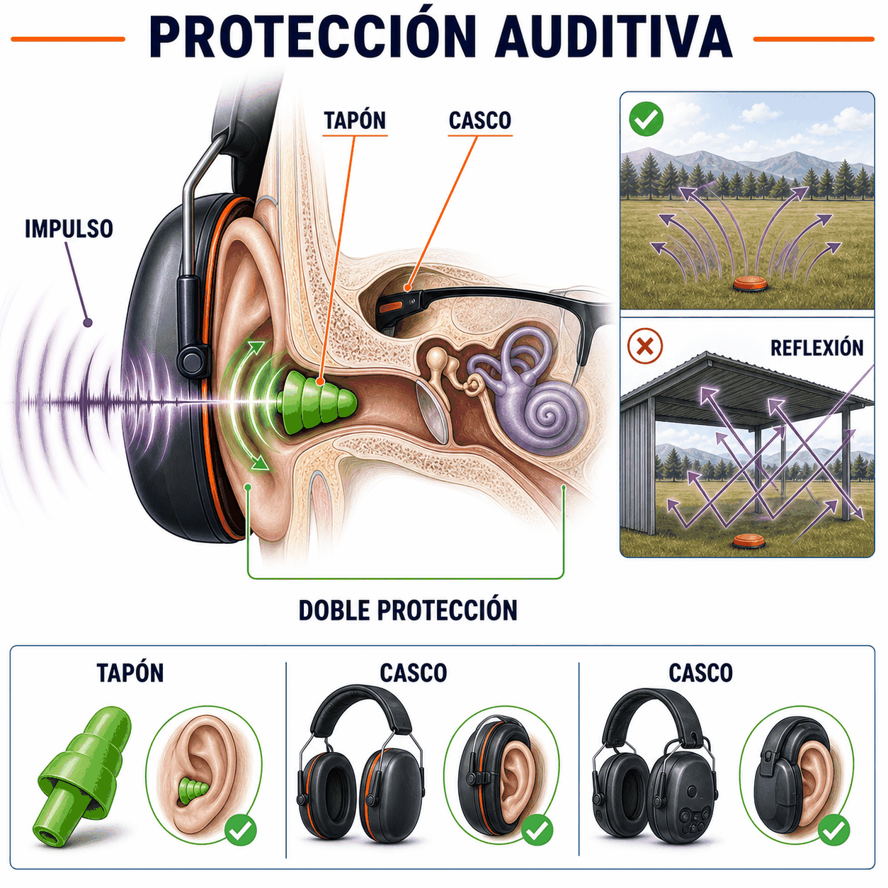
Tapón y casco solo funcionan si ajustan bien. Las cubiertas reflejan parte de la energía acústica, y las patillas gruesas pueden romper el sellado de las orejeras.
El disparo produce un ruido impulsivo capaz de causar daño inmediato. La protección se coloca antes de entrar en la zona activa. No hay que esperar al primer disparo para comprobar si el ruido molesta.
Los tapones dependen de una inserción correcta. Las orejeras pueden perder sellado por las gafas, el pelo o una gorra. Para ruido impulsivo puede recomendarse doble protección. Aun así, el tirador debe seguir oyendo las órdenes del árbitro.
Tapones y orejeras tienen ventajas distintas. El tapón depende mucho de la talla y de cómo se inserta. La orejera es fácil de comprobar a simple vista, pero una patilla gruesa de gafas, el pelo o una gorra pueden abrir el sello. Los sistemas electrónicos dependientes del nivel permiten oír conversación y limitan sonidos fuertes. No deben confundirse con auriculares de consumo sin clasificación como protector. NIOSH recomienda doble protección, con orejera sobre tapón, para ruido impulsivo. También recuerda que el ajuste real puede rendir menos que la cifra del embalaje.
3.10
Seguridad corporal
Una sola exposición puede dañar el oído, y el daño puede acumularse sin que lo notemos al momento. Además de proteger ojos y oídos, debemos colocar bien el cuerpo para tirar con seguridad y controlar el retroceso.
¿Cuándo deja el dolor de ser una molestia técnica y pasa a ser una señal de seguridad? Cuando cambia el encare, el equilibrio, la atención o la capacidad de controlar el arma.
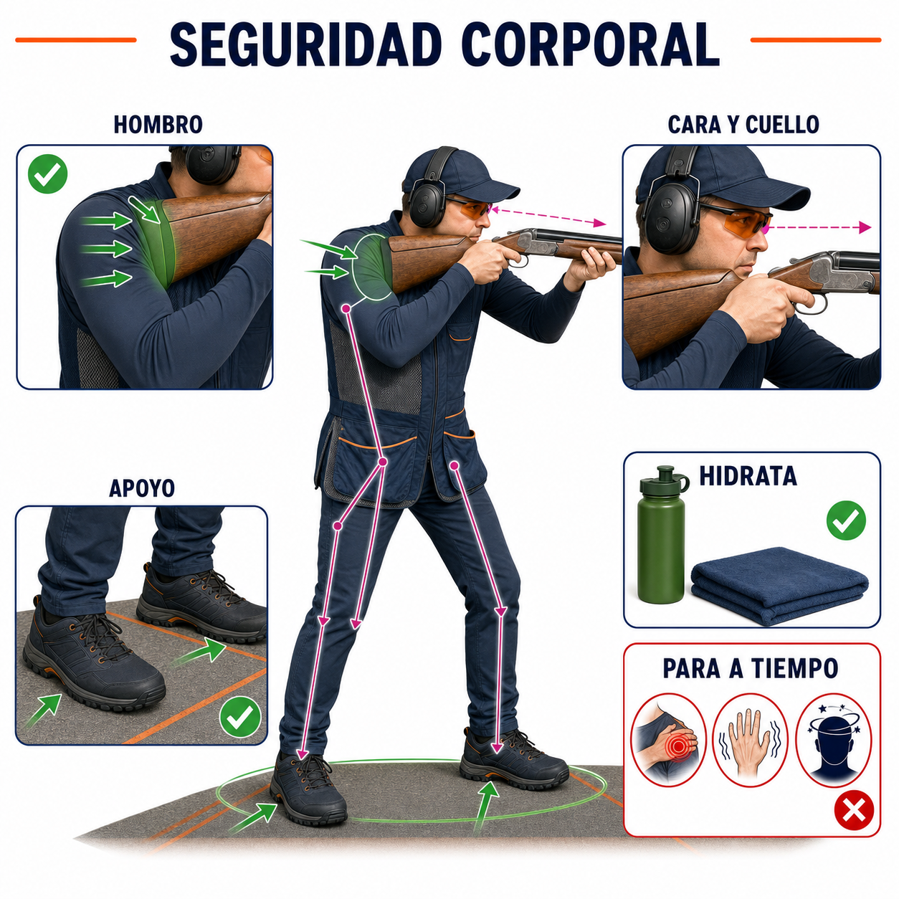
La culata transmite el retroceso al cuerpo. Un apoyo estable y repetible reparte la carga. Dolor, temblor, mareo o pérdida de control son motivos para detener la sesión.
La cantonera debe apoyarse de forma firme y repetible en el hombro. Si la culata obliga a estirar el cuello o golpea la mejilla, puede haber un problema de técnica o de ajuste. Se revisa con un instructor y siempre con el arma abierta y descargada.
Calzado estable, hidratación, ropa adecuada y pausas ayudan a conservar el control. Dolor, mareo, temblor o pérdida de atención son motivos para parar. No existe un número de series que sea seguro para todas las personas.
3.11
Principiantes y supervisión
Una postura estable protege el hombro y la cara, y ayuda a mantener el equilibrio sin pegar la escopeta al cuerpo con rigidez. El principiante debe aprender esta colocación con una persona preparada que lo supervise.
¿Cuándo sabe una persona lo suficiente para entrenar sola? No cuando puede recitar reglas. Lo sabe cuando las ejecuta de forma estable, reconoce sus límites y cumple sin ayuda el procedimiento concreto del club.
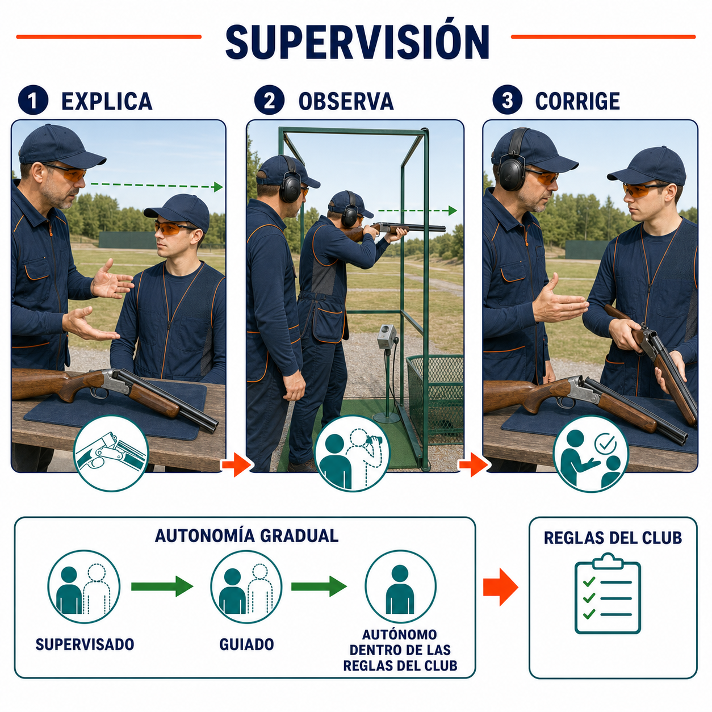
La supervisión no consiste en disparar por el alumno. Explica antes, observa desde una posición segura y corrige después con el arma abierta. La autonomía llega por hechos, no por prisa.
Leer las reglas no basta. En la cancha hay ruido, turnos e imprevistos. Un instructor puede ver si la boca se desvía, si el dedo entra pronto o si el arma se abre mal.
Las correcciones se explican antes de cargar o después, con la escopeta abierta y vacía. No hay una cifra de platos que conceda autonomía. La autonomía llega cuando la secuencia segura se mantiene sin ayuda, también ante una orden de parada o una incidencia.
3.12
Seguridad en el simulador
Una buena supervisión no consiste solo en mirar: simplifica las tareas, controla la munición y detiene la acción cuando aparece una duda. El simulador puede reforzar estas ideas, pero también debe usarse de forma responsable.
¿Puede una pantalla enseñar seguridad real? Puede ordenar conceptos y preguntas. Pero no puede certificar la manipulación, evaluar un arma ni conceder autorización para usarla.
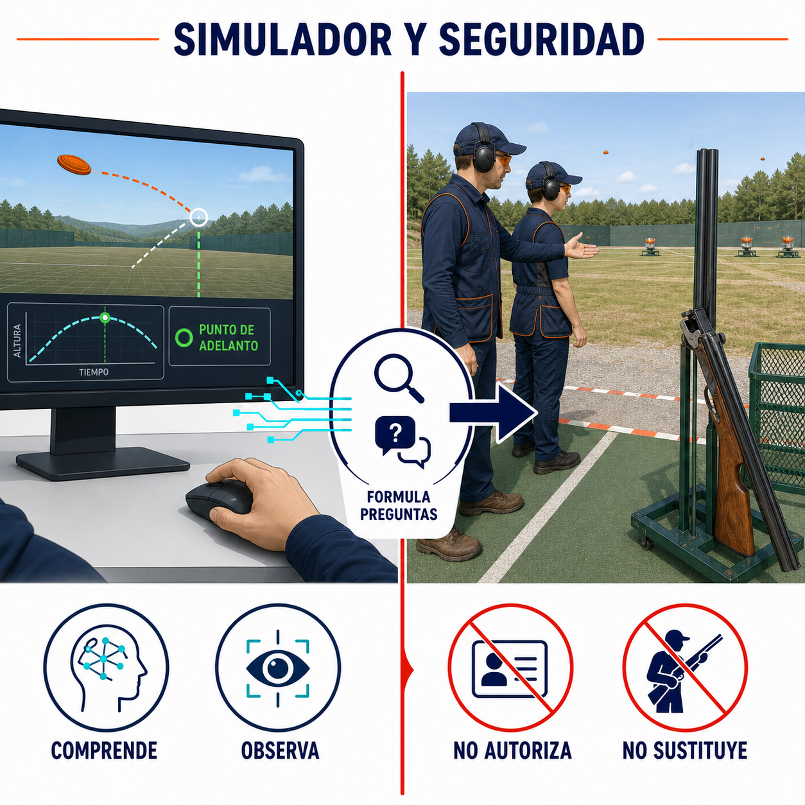
Desde la pantalla se transfieren comprensión, observación y preguntas. La manipulación segura, la autorización y la evaluación pertenecen a la formación y al campo real.
Plato ayuda a entender trayectorias y decisiones. No reproduce peso, cierre, retroceso, ruido, personas alrededor ni órdenes inesperadas. Acertar en el simulador no demuestra que alguien sepa manejar una escopeta.
En España, poseer y usar armas requiere las autorizaciones correspondientes y una instalación permitida. La aplicación no expide licencias ni sustituye las pruebas o la formación presencial. Sirve para llevar mejores preguntas al instructor, no para practicar manipulaciones reales en casa.
Qué hemos aprendido
La boca se mantiene en dirección segura y la escopeta permanece abierta fuera del turno.
Antes de disparar se carga y se cierra al frente. Después se abre, se vacía y solo entonces se gira.
Ante un fallo, se mantiene la posición y se avisa al responsable.
Protección, atención y supervisión son obligatorias. El simulador no sustituye ninguna de ellas.
Lectura experta. La seguridad funciona mediante estados visibles y varias barreras. Si la norma, el arma o el procedimiento local generan una duda, se aclara antes de cargar.
Capítulo 04
Cómo es una cancha y cómo se desarrolla una serie
Una cancha de tiro al plato reúne accesos, puestos, máquinas, zonas de espera y personas con funciones distintas. Entender ese orden ayuda a entrar con calma y a saber cuándo esperar, disparar o cambiar de puesto. Este capítulo explica cómo funciona una serie y qué puede variar según la modalidad o el club. Las medidas y los procedimientos citados corresponden a las fuentes consultadas el 2 de agosto de 2026.
4.1
Vista general de un campo de tiro
La seguridad marca unos límites que estarán presentes en todo el libro y que ninguna técnica puede saltarse. Ahora recorreremos la cancha, conoceremos sus zonas y veremos cómo un grupo completa una serie.
El campo se entiende mejor desde la entrada: recepción, espera, puestos, foso y zona de vuelo. Cada zona tiene una función y unos límites.
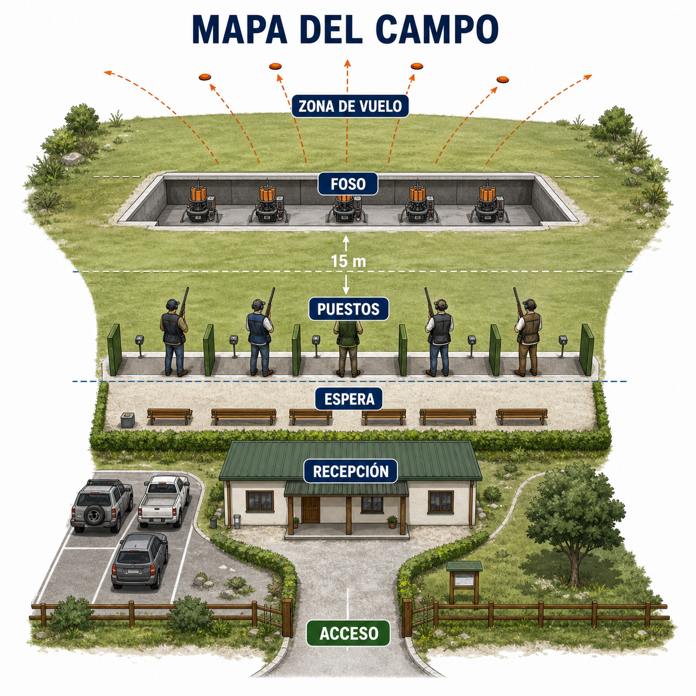
Conviene leer la cancha de atrás hacia delante. La zona pública termina antes de la línea de tiro. A partir de ahí manda un espacio controlado por el responsable de cancha.
La zona pública incluye la entrada y la oficina. Después está la zona de espera, donde se confirma la cancha asignada. La línea de tiro queda reservada a tiradores, árbitro y personal autorizado. Por delante están el foso, la zona de vuelo y la caída de perdigones. No se entra en esas zonas mientras la cancha está en servicio.
El Reglamento de Armas exige que la instalación tenga una zona de seguridad. Los espectadores deben permanecer detrás de los tiradores y las máquinas deben estar protegidas. Cada campo aplica estas reglas mediante su propio plano, señalización y control de accesos.
Los servicios cambian de un club a otro. Puede haber armería, instructor, cafetería o alquiler de armas, pero no son obligatorios. En una visita real mandan la reserva y las indicaciones del personal.
4.2
Varias canchas en una misma instalación
Una cancha incluye zonas para moverse, esperar, disparar y recibir la caída de los platos; no es solo una línea de tiro. Cuando hay varias canchas, sus sectores deben coordinarse y no invadirse.
Un recinto puede tener varias canchas. Cada una tiene su horario, modalidad, grupo y responsable.
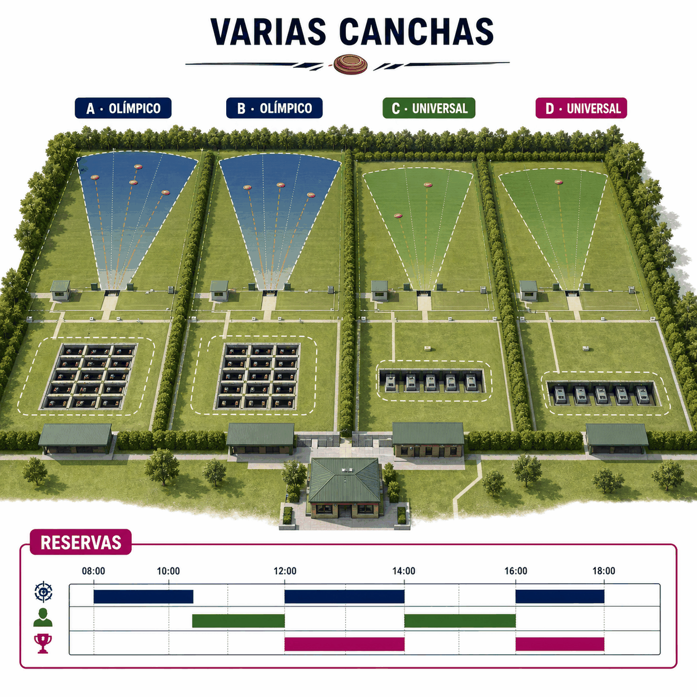
Compartir recinto no significa compartir turno. Identificar cancha y hora evita entrar en el grupo o la modalidad equivocados.
Las canchas suelen identificarse con letras o números. Esa referencia sirve para ordenar reservas, resultados y accesos. También evita que las trayectorias de canchas cercanas interfieran entre sí.
En un mismo recinto pueden convivir varias modalidades. El foso olímpico usa quince máquinas y el universal usa cinco. Ambos tienen cinco puestos, pero sus programas de platos son distintos. Antes de entrar hay que confirmar cancha y modalidad.
Para empezar, conviene tratar cada cancha como una sala independiente: se entra en el lugar, la hora y el grupo asignados. Dos líneas parecidas pueden usar reglas y esquemas distintos.
4.3
Partes de una cancha de foso
En una instalación compartida hay que respetar los límites y las órdenes de cada cancha, aunque alguna parezca parada. En una cancha de foso, la organización se divide en puestos, foso, máquinas y campo de caída.
Cinco puestos forman una línea recta. El foso universal queda quince metros por delante y el sector de vuelo continúa más allá.
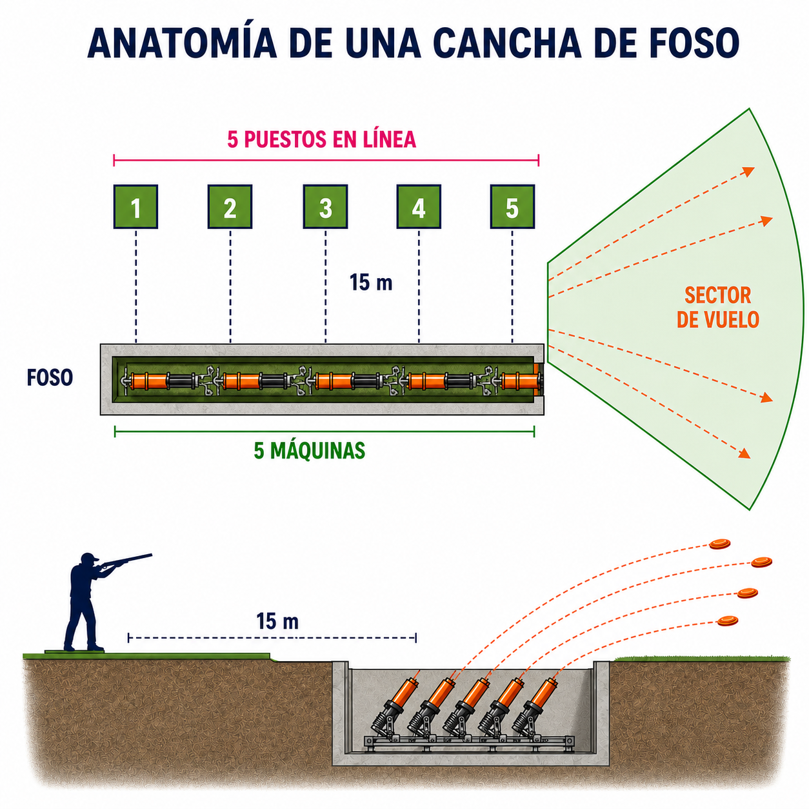
Foso Universal: espera detrás, cinco puestos en línea, quince metros hasta el foso, cinco máquinas alineadas dentro y sector de vuelo al fondo. El Foso Olímpico mantiene cinco puestos, pero emplea quince máquinas agrupadas de tres en tres.
Los cinco puestos se numeran de izquierda a derecha y forman una sola línea. El foso está quince metros por delante de esa línea. La zona de espera queda detrás de los tiradores, nunca entre los puestos y el foso.
En Foso Universal hay cinco máquinas alineadas dentro del foso, una frente a cada parte de la línea de tiro. El foso está protegido y en parte bajo tierra. Los platos salen desde debajo de su cubierta y continúan hacia el campo.
Más allá del foso está el sector de vuelo. No debe confundirse con toda la zona de seguridad del campo. El reglamento limita las trayectorias válidas y el Reglamento de Armas protege un espacio mayor alrededor de la instalación.
En Foso Olímpico también hay cinco puestos en línea, pero el foso contiene quince máquinas: tres por cada puesto. Esta diferencia cambia el origen de los platos y no debe ocultarse en un dibujo genérico.
La misma trayectoria se percibe de forma distinta desde cada puesto. Un plato puede parecer lateral desde el puesto 1 y casi frontal desde el 3. Cambia la posición del tirador, no el vuelo del plato.
La idea básica es fácil de recordar: espera detrás, cinco puestos en línea, foso delante y vuelo más allá. La infografía explica relaciones espaciales, pero no sustituye el plano aprobado de una cancha real.
4.4
Organización del grupo
Conocer cada parte ayuda a entender las distancias, las líneas y las responsabilidades, incluso cuando las máquinas están ocultas bajo el foso. En este espacio también debe organizarse el grupo de tiradores.
Una escuadra habitual reúne hasta seis tiradores. Cinco ocupan los puestos y el sexto espera detrás del primero. Una sola persona debe dirigir la secuencia.
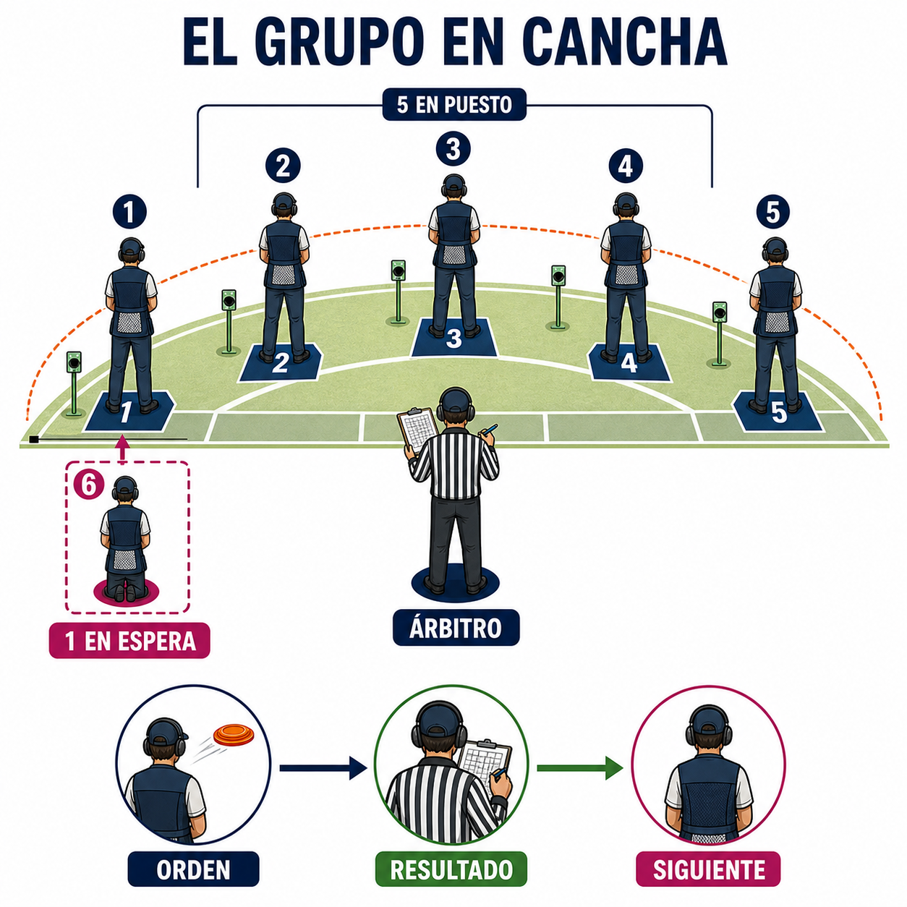
Antes de empezar, cada persona necesita saber tres cosas: su número en la escuadra, su puesto inicial y quién resuelve una incidencia.
La organización más conocida reúne seis personas: cinco en la línea y una en espera. También puede haber grupos más pequeños, sobre todo en enseñanza o entrenamiento.
En competición manda el árbitro. En una práctica manda el responsable designado por el club. Inicia la serie, resuelve dudas y puede detenerla. El monitor enseña, pero varias voces a la vez solo crean confusión.
En algunas competiciones no oficiales, los propios tiradores ayudan con el arbitraje. Es una práctica local, no una norma universal. Una persona puede cantar los ceros y otras dos anotar por separado. El doble registro permite comparar resultados si surge una duda. La organización decide quién cumple esas funciones y cómo se corrige un error.
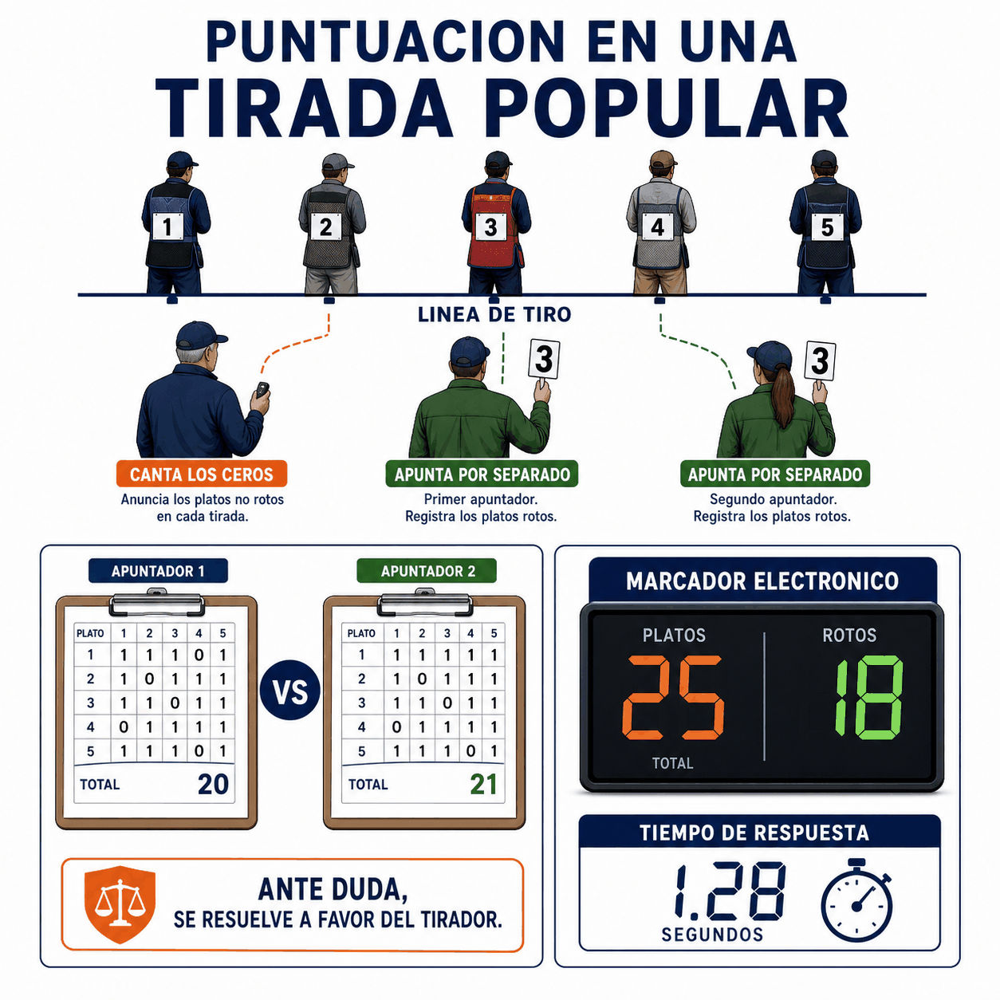
El doble registro ayuda a detectar diferencias. La organización y el reglamento de la tirada determinan cómo se resuelven.
Las canchas mejor equipadas pueden usar paneles electrónicos. Muestran la puntuación y, en algunos casos, el tiempo de disparo. Esa información ayuda al árbitro y al tirador, pero no sustituye una decisión reglamentaria cuando existe una incidencia.
El grupo funciona como una rueda: cinco posiciones activas y una de espera. Cada plato pertenece a un tirador, pero el ritmo depende de todos.
4.5
Rotación entre puestos
El grupo debe mantener un orden: cada persona tiene un turno, un puesto y unas obligaciones que los demás pueden ver. La rotación conserva ese orden mientras cambia el punto de vista del tirador.
La rotación avanza del puesto 1 al 5. Después se vuelve por detrás hasta la espera del puesto 1. No se cruza por delante.
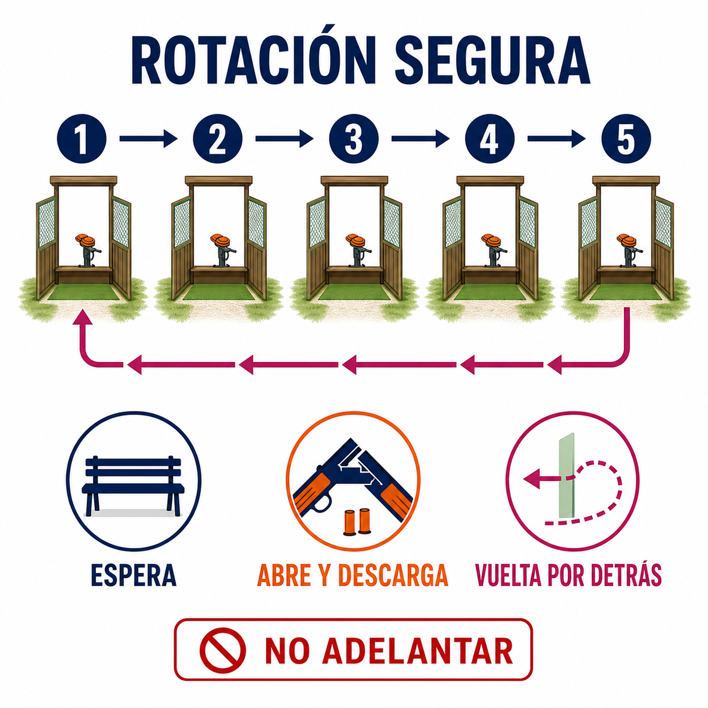
La ruta de vuelta queda detrás de la línea. Antes de moverse hay que atender al resultado anterior, al estado seguro del arma y a la señal del responsable.
La rotación permite tirar desde cinco puntos de vista. Del puesto 1 se pasa al 2 y así hasta el 5. Desde allí se regresa por detrás, sin atravesar puestos activos ni pasar delante del foso.
El tirador espera a que le corresponda avanzar. Al salir del puesto 5 lleva el arma abierta y descargada. Si el responsable ordena un alto, toda la rotación se detiene.
El error habitual es moverse porque el puesto siguiente parece libre. La señal correcta no es “hay sitio”, sino “me corresponde avanzar”.
En una escuadra completa, los tiradores empiezan repartidos entre los puestos. El árbitro y la hoja de resultados fijan el orden. Decir que todos empiezan en el 1 solo sirve para explicar un ejercicio individual.
La rotación correcta acaba siendo automática: esperar, abrir, descargar y moverse por la ruta prevista. La fluidez llega con la práctica.
4.6
Número de platos y disparos
Rotar no es simplemente caminar por la cancha: hay que llevar el arma en estado seguro y respetar el turno en la nueva posición. El número de platos y disparos marca el ritmo y el límite de la serie.
Una serie reglamentaria habitual contiene veinticinco platos. Plato, disparo y cartucho son cantidades distintas.
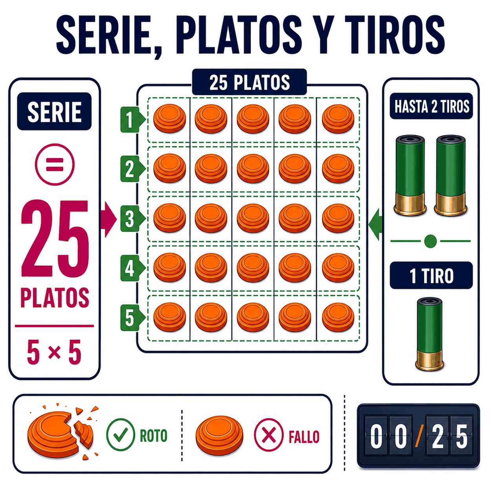
La unidad de puntuación es el plato presentado. Puede resolverse con el primer disparo, con el segundo cuando esté permitido o quedar perdido.
En Trap ISSF y foso universal, una serie consta de 25 blancos. Cada tirador recibe cinco desde cada puesto. La distribución de trayectorias cambia según la modalidad.
En las fases ordinarias se permiten hasta dos disparos contra un plato. Si se rompe con el primero, no hay segundo tiro. En las finales y desempates finales de Trap ISSF solo se permite uno. Por eso 25 platos no significan siempre 25 cartuchos.
Cada plato vale un resultado: alcanzado o perdido. Romperlo al segundo disparo sigue contando como un acierto cuando ese tiro está permitido. El marcador no suma un punto por disparo.
Un entrenamiento puede usar menos platos o repetir una trayectoria. No debe compararse sin explicación con una serie reglamentaria. Para aprender, a veces resulta mejor tirar menos y revisar cada intento.
4.7
Cómo se pide un plato
La serie organiza el consumo de cartuchos, la puntuación y las opciones de segundo disparo según la modalidad. Cada intento empieza cuando el tirador pide el plato y se activa el mecanismo de salida.
La voz activa el sistema de lanzamiento. La llamada debe ser breve y clara.
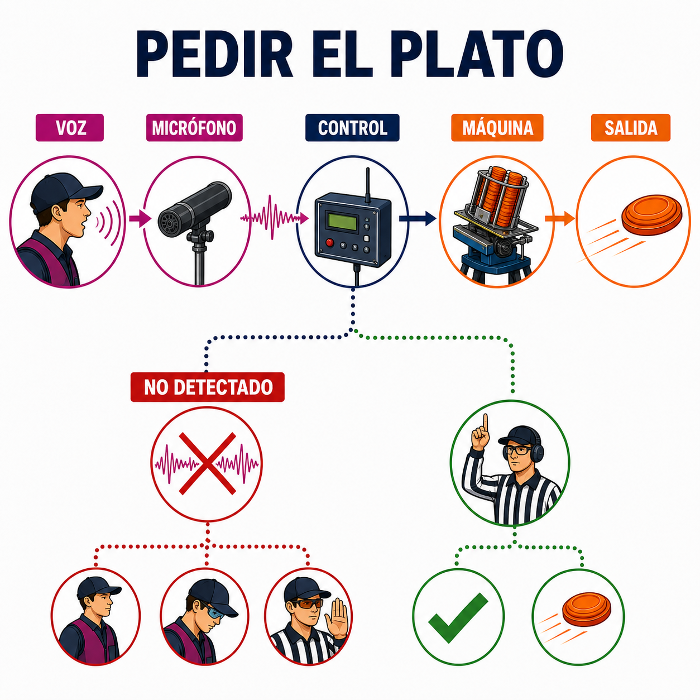
La petición debe ser breve y reconocible. Si el sistema no responde, decide el árbitro o responsable. No decide el tirador por su cuenta.
Cuando le toca, el tirador se prepara y utiliza una llamada que active el sistema: pull, go, «los» u otra admitida por la organización. Lo importante es que sea clara, breve y estable. Conviene mantener una duración, un volumen y un tono parecidos en cada plato.
El lanzamiento puede activarse con pulsador o con micrófonos. El sistema de voz escucha la llamada y ordena la salida del plato. No reconoce una palabra como un asistente de voz: responde al sonido. Por eso una voz concreta puede no activar bien un micrófono aunque otras sí lo hagan.
Si el sistema no detecta una llamada, el tirador mantiene el arma controlada y espera. No llama varias veces seguidas ni decide por su cuenta. Bajo la dirección del árbitro, puede probar una pequeña variación de vocal o de tono para que el micrófono reconozca mejor la llamada. El manual de Canterbury también advierte que algunas voces necesitan un ligero ajuste.
Antes de la primera ronda de cada día, FITASC permite una prueba del arma o fogueo. Se hace un tirador cada vez, en su puesto, siguiendo el orden de la escuadra y solo cuando lo ordena el árbitro. Los cañones apuntan hacia el campo y por encima de la caseta del foso, dentro de la zona segura.
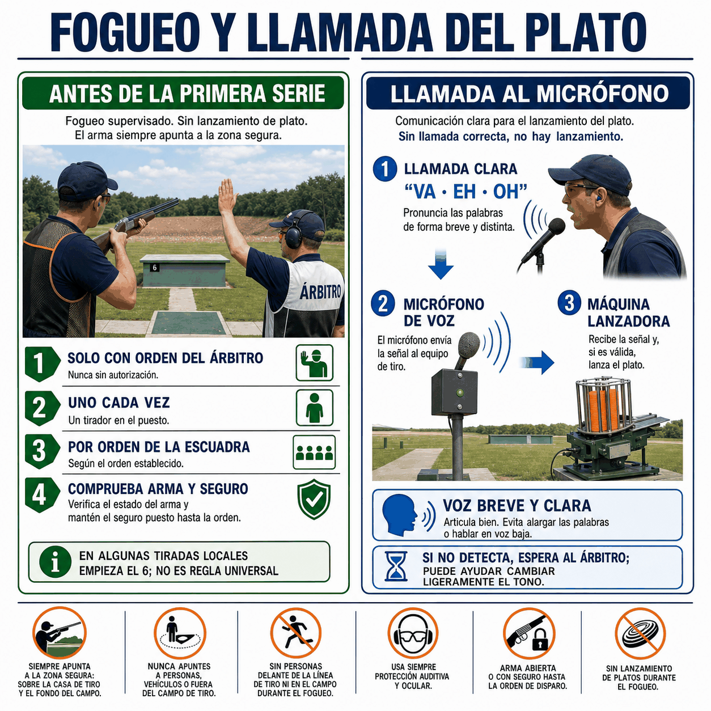
El fogueo se realiza de uno en uno y por orden del árbitro. La llamada debe ser breve y clara; si el micrófono no responde, se espera la indicación del responsable.
Esta prueba evita que el primer disparo puntuable llegue completamente en frío. También permite comprobar la secuencia de encare, seguro y disparo antes de pedir el primer plato. No sustituye la comprobación del estado del arma antes de cada intervención.
En algunos campos existe la costumbre de empezar ese fogueo por el sexto tirador o por quien está en espera. Es una organización local. No debe presentarse como una regla universal: el orden válido es el que indique el árbitro conforme al reglamento y al funcionamiento de la cancha.
El simulador representa la orden, una demora y el vuelo. No reproduce la acústica, el micrófono ni las averías de una cancha real.
4.8
Plato válido, plato roto y plato nulo
Pedir el plato es una orden clara que debe activar la salida en las condiciones previstas. Desde ese momento, el árbitro y el reglamento deciden si el blanco es válido, roto o nulo.
“Roto” puede significar que el plato salió defectuoso o que fue alcanzado. El momento de la rotura cambia la decisión.
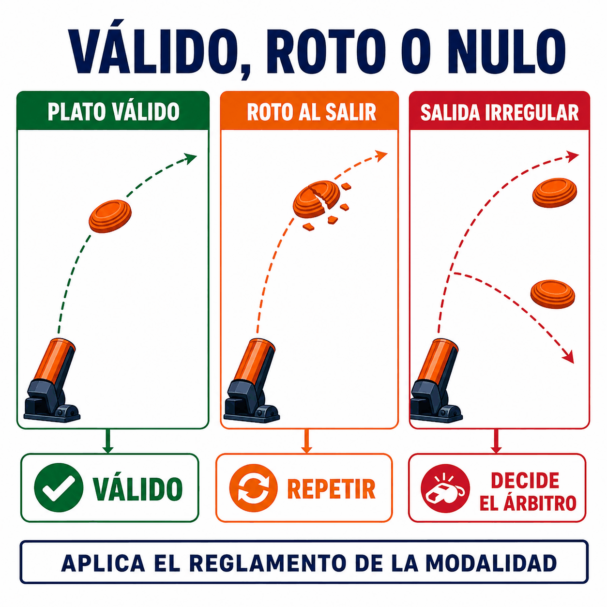
La observación decisiva no es “vi polvo”. Lo importante es el estado del blanco y si se desprendió una pieza visible conforme al reglamento.
Un plato válido sale entero y sigue la trayectoria prevista. Si el disparo desprende un fragmento visible, cuenta como alcanzado. Una nube de polvo sin fragmento no basta. La decisión corresponde al árbitro.
Si el plato ya sale roto, se declara nulo y se repite según la modalidad. En ISSF se usa “no target” y en FITASC, “no bird”. No cuenta como fallo aunque el tirador haya disparado.
También puede anularse por una trayectoria irregular, una salida desde el grupo equivocado o dos platos simultáneos cuando debía salir uno. Las causas exactas cambian entre reglamentos.
Para evitar confusiones conviene decir “alcanzado por el disparo” o “roto al salir”. Si hay una duda, se escucha la decisión y se continúa. La explicación puede esperar a la pausa.
4.9
Repetición deliberada durante el entrenamiento
No todo plato que vemos cuenta, ni toda rotura se apunta al tirador; depende de cómo salió y de lo que ocurrió después. En un entrenamiento se puede repetir un plato con otro objetivo, siempre que se anote como repetición.
Repetir durante un entrenamiento sirve para comparar intentos. Se mantiene todo igual y se cambia una sola cosa.
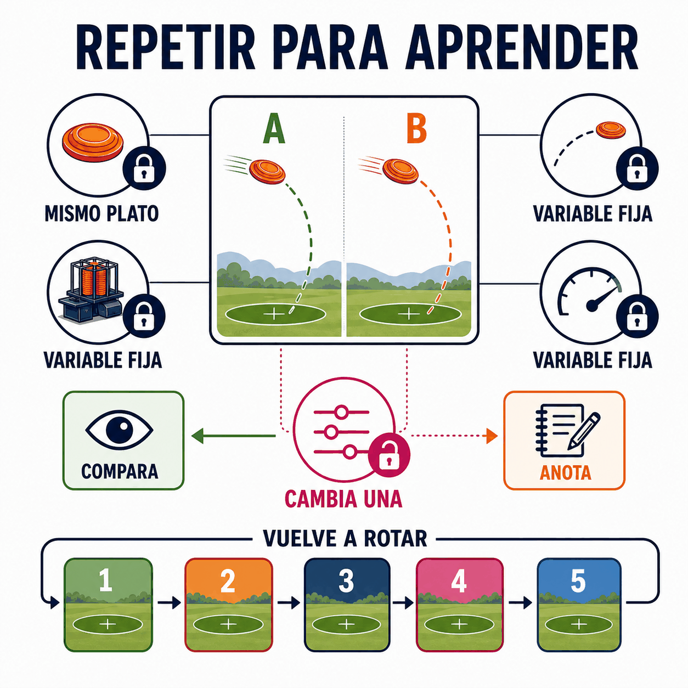
La repetición deliberada sirve cuando responde a una pregunta concreta. Después debe devolver al tirador a la variedad normal de los cinco puestos.
La repetición reglamentaria ocurre cuando el árbitro declara un plato nulo. La repetición de entrenamiento es distinta: monitor y tirador acuerdan volver a ver una trayectoria para estudiar un problema.
Conviene plantear una pregunta sencilla, como “¿empiezo tarde el movimiento?”. Se mantienen puesto, máquina y preparación. Después se cambia una sola decisión. Si se cambia todo a la vez, el resultado enseña poco.
Solo el responsable puede autorizar esta práctica. No se entra al foso, no se toca el lanzador y no se interrumpe otra escuadra.
La función “Repetir plato” del simulador mantiene el blanco anterior sin sumar un plato ni cambiar de puesto. Sirve para comparar percepción y tiempo, pero no reproduce todas las condiciones de una cancha.
4.10
Funcionamiento cotidiano del club
La repetición para aprender mantiene los mismos parámetros y permite comparar decisiones, mientras que la repetición reglamentaria responde a causas concretas. Las dos deben respetar los turnos y la seguridad del club.
Antes de tirar hay que confirmar documentación, pago, turno y cancha. El sistema concreto depende de cada club.
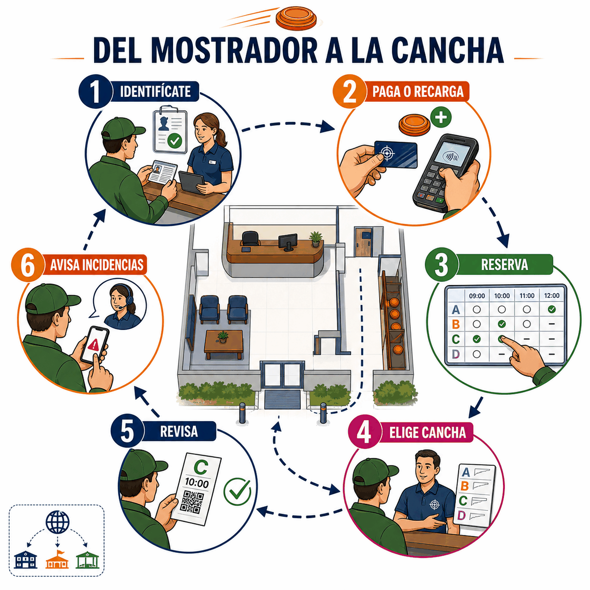
Es un flujo frecuente, no una norma universal. La documentación, el método de pago y la reserva dependen del club, la modalidad y el tipo de usuario.
El club puede pedir identificación, licencia y otra documentación. También comprueba si la persona es socia o visitante, cobra el servicio y asigna un horario. Estas tareas cambian según la instalación.
Algunos clubes usan tarjetas con saldo. Se introducen en un lector y descuentan una serie o los platos lanzados. La tarjeta puede ser personal y no tiene por qué funcionar en otro campo. Si el recinto ofrece varias modalidades, es fácil activar por error una cancha o un programa distintos. Antes de introducir la tarjeta hay que comprobar modalidad, cancha, precio y saldo.
El personal carga platos, revisa micrófonos, mantiene las máquinas y ordena los turnos. Una avería se comunica al responsable. El usuario nunca entra en el foso ni manipula el sistema.
4.11
Comportamiento y convivencia
Las reservas, el mantenimiento, los responsables y las normas internas hacen posible cada serie antes de pedir el primer plato. Todo este trabajo necesita respeto y buena convivencia dentro y fuera de la línea.
La convivencia protege la concentración y la seguridad. Silencio, orden y una autoridad clara mantienen el ritmo de la serie.
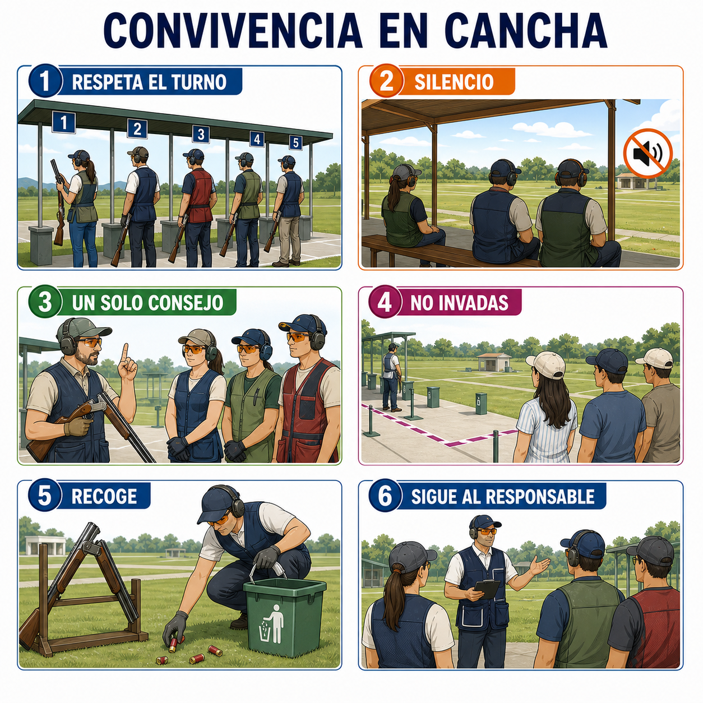
Las reglas locales concretan la convivencia. El principio común es no introducir personas, ruido, movimientos o instrucciones que alteren una acción en curso.
Hablar detrás del puesto, cruzar una delimitación o dar consejos durante la preparación puede distraer al tirador y tapar una orden. La ayuda técnica debe esperar a la pausa.
Con una escopeta superpuesta, conviene abrir el arma de forma controlada. Con los cañones hacia una zona segura, la mano libre puede retener las vainas expulsadas para que no salgan despedidas. Después se depositan con cuidado en el recipiente indicado. No deben arrojarse con fuerza. En canchas con activación acústica, el golpe contra un cubo metálico puede llegar a activar el plato del siguiente tirador. Esta precaución depende del equipo y de las normas locales.
FITASC exige usar los recipientes para vainas cuando estén disponibles. No se recoge material entre tiradores activos ni durante una orden de alto. Los visitantes permanecen fuera de la zona de tiro y todos siguen las indicaciones del responsable.
Durante el aprendizaje conviene escuchar una sola consigna. El monitor corrige la técnica y el árbitro decide el resultado cuando los roles están separados.
Qué hemos aprendido
Una cancha separa acceso, espera, línea de tiro, foso y zona de seguridad. Los cinco puestos están a quince metros del foso. El universal usa cinco máquinas y el olímpico, quince. La escuadra rota en orden y una sexta persona espera detrás del puesto 1.
Una serie habitual tiene 25 platos. Antes de empezar se confirman tarjeta, modalidad, cancha y turno. Durante la serie se respeta al responsable, se pide el plato con claridad y se manipulan arma y vainas con control. El reglamento fija el marco y cada club organiza su aplicación diaria.
Capítulo 05
Escopetas, culatas, chokes, cartuchos y equipo
Elegir equipo para tiro al plato no es comprar la escopeta más cara, el choke más cerrado y el cartucho más rápido. Es hacer que persona, modalidad, arma, munición y campo funcionen juntos. Si una pieza no encaja, el principiante acaba adaptando el cuerpo a la herramienta. Si la pieza se entiende bien, se ve mejor la técnica y el material no tapa el problema.
Este capítulo se revisó el 2 de agosto de 2026. Explica reglas internacionales y documentos disponibles en esa fecha. Aun así, no sustituye el manual del arma, el reglamento de la competición, las normas del club ni el trabajo de un armero cualificado.
5.1
Tipos principales de escopeta
Ya sabemos cómo se organiza la cancha, cómo rota el grupo y qué ocurre desde que se pide el plato hasta que termina la acción. Ahora conoceremos el equipo, siempre unido al entorno y a la persona que lo utiliza.
Para empezar conviene separar dos ideas que a menudo se mezclan. Una es el mecanismo, es decir, cómo abre, carga y dispara el arma. Puede ser basculante de dos cañones superpuestos, basculante de cañones paralelos o semiautomática de un cañón. La otra idea es el uso y el ajuste: caza, sporting, trap u otra disciplina. Una superpuesta puede ser de caza o de competición. También hay semiautomáticas hechas para platos. Por eso la forma exterior no basta para saber si un arma le sirve a una persona.
La superpuesta deja ver las recámaras al abrirse. La recámara es el alojamiento donde entra el cartucho. Además, permite usar dos cañones y dos chokes distintos, sin depósito. La semiautomática recarga después de cada disparo por gases o por inercia, y puede hacer que el retroceso se note menos. A cambio, obliga a revisar recámara, cajón de mecanismos y depósito. La paralela coloca los dos tubos en horizontal y sigue muy presente en la caza y en la armería tradicional. FITASC admite en Foso Universal todas salvo las de corredera, incluidas las semiautomáticas, si su expulsión no molesta. Esa regla recuerda que “habitual” y “permitida” no significan lo mismo.
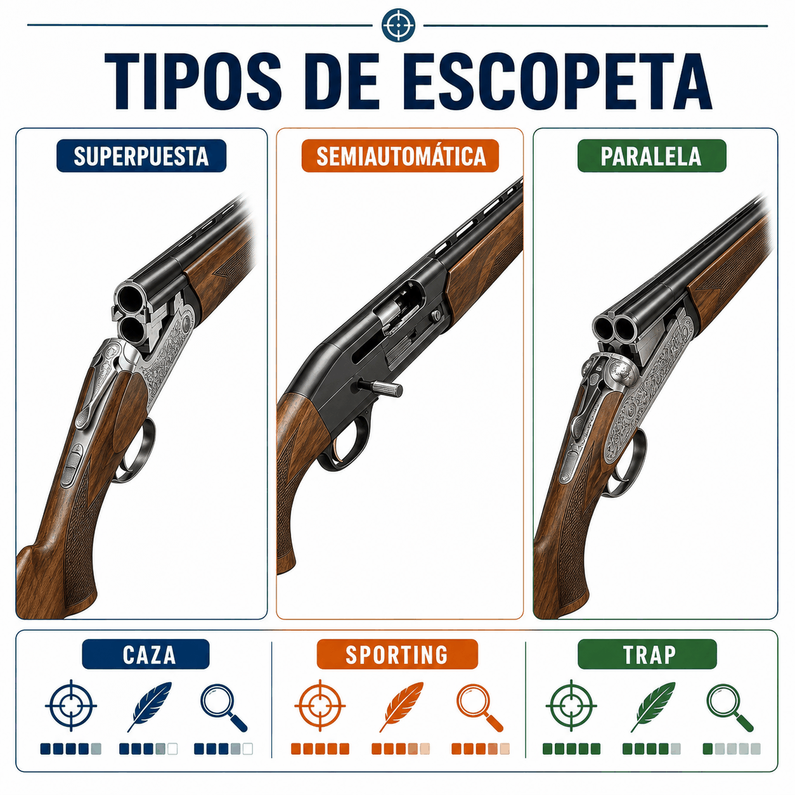
Tres mecanismos, seis preguntas: visibilidad del estado, segundo disparo, expulsión, equilibrio, ajuste y reglas de la modalidad.
En la práctica, la elección empieza por el uso. Trap busca estabilidad, un encare repetible y una imagen pensada para platos que se alejan. Sporting obliga a resolver salidas, alturas y direcciones variadas. Una escopeta ligera de campo puede ser cómoda al caminar y rápida al moverla. Pero, si todo lo demás es igual, menos peso también aumenta la velocidad del retroceso libre. Una de competición suele añadir peso, cierres preparados para mucho uso, opciones de equilibrio y culatas más especializadas. Son tendencias de diseño, no garantías de que una escopeta concreta encaje.
Antes de comparar modelos hay que fijar una base mínima: calibre y recámara compatibles con la disciplina, funcionamiento conocido, revisión hecha y práctica segura de apertura y descarga. Solo después tiene sentido comparar sensaciones. Un arma que rompe más platos en cinco intentos puede haber tenido trayectorias fáciles. Un arma que permite veinte encares iguales da una pista más útil para aprender.
5.2
Escopeta superpuesta
No existe una sola escopeta de plato: cada mecanismo cambia la carga, el equilibrio y la forma de hacer el segundo disparo. Empezaremos por la superpuesta, porque permite ver con claridad el estado de sus dos cañones.
En una superpuesta, los dos cañones van uno sobre otro y basculan sobre la báscula, que es la pieza central del arma. Al mover la llave de apertura, los cañones giran. Entonces se ven las dos recámaras y se puede meter o sacar un cartucho en cada una. Esa lectura rápida explica parte de su uso en cancha: abierta y vacía muestra su estado al tirador, al árbitro y a los compañeros. Aun así, hay que comprobarla siempre y mantener la dirección segura.
Los dos disparos pueden usar cañones con chokes distintos. El choke es el estrechamiento de la boca del cañón o un tubo que hace esa función. Un selector, si existe, decide qué cañón dispara primero. La configuración exacta está en el manual. Al abrir, los extractores levantan las vainas para retirarlas a mano. Los expulsores automáticos pueden lanzarlas si se han disparado. Algunos modelos dejan desactivar o cambiar esa función, pero no hay que darlo por hecho. La ventaja práctica es controlar dos cartuchos y dos recámaras. El coste es recibir el retroceso sin el ciclo de una semiautomática y cuidar engrase y desgaste de las piezas basculantes.
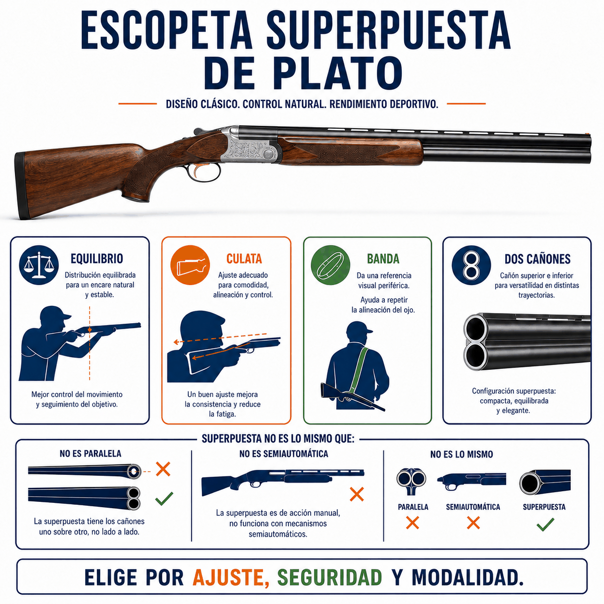
La acción basculante hace visible la secuencia: dos recámaras, dos cañones y un estado abierto que los demás pueden reconocer.
Para un principiante, “dos cañones” no significa siempre “dos gatillos”. Muchas superpuestas modernas tienen un solo gatillo y un mecanismo que pasa al segundo cañón. Algunas de competición llevan grupos de disparo desmontables. Aun así, el llamado cassette no es una pieza universal ni aparece en todas. Tampoco debe sacarse en la cancha como rutina. Cualquier desmontaje se hace según el manual, con el arma descargada y en un lugar adecuado.
Al probar una superpuesta conviene mirar más que la apertura. Hay que ver si la llave se acciona sin perder control, si el guardamanos calienta o resbala, si los expulsores mandan las vainas donde deben y si el selector se entiende sin duda. Una acción nueva puede ir firme. Pero una dureza repentina, un cierre incompleto o marcas raras piden revisión, no más fuerza.
5.3
Escopeta semiautomática
La superpuesta tiene dos cañones y se abre de una forma muy visible, algo habitual en muchas modalidades de plato. Al compararla con la semiautomática veremos la diferencia entre una preferencia deportiva y un funcionamiento mecánico.
Una semiautomática dispara una vez cada vez que se aprieta el gatillo. Usa parte de la energía del disparo para sacar la vaina, expulsarla, montar el mecanismo y meter el siguiente cartucho. No es automática: no sigue disparando si se mantiene apretado el gatillo. Los sistemas más comunes funcionan por gases o por inercia. En los dos casos hay que comprobar varias zonas: recámara, ventana del cajón, elevador y depósito tubular.
Su atractivo principal es práctico. El ciclo del arma y, en algunos modelos, los sistemas de amortiguación pueden repartir la fuerza de otra manera y reducir el retroceso percibido. SAAMI advierte que la acción, el ajuste y la forma de sujetar el arma influyen en esa sensación, aunque el impulso físico siga ahí. También hay una posible molestia para los demás: la vaina sale de lado. FITASC acepta semiautomáticas en Universal si la expulsión no perturba a otros tiradores y exige recoger los casquillos al abandonar el puesto.
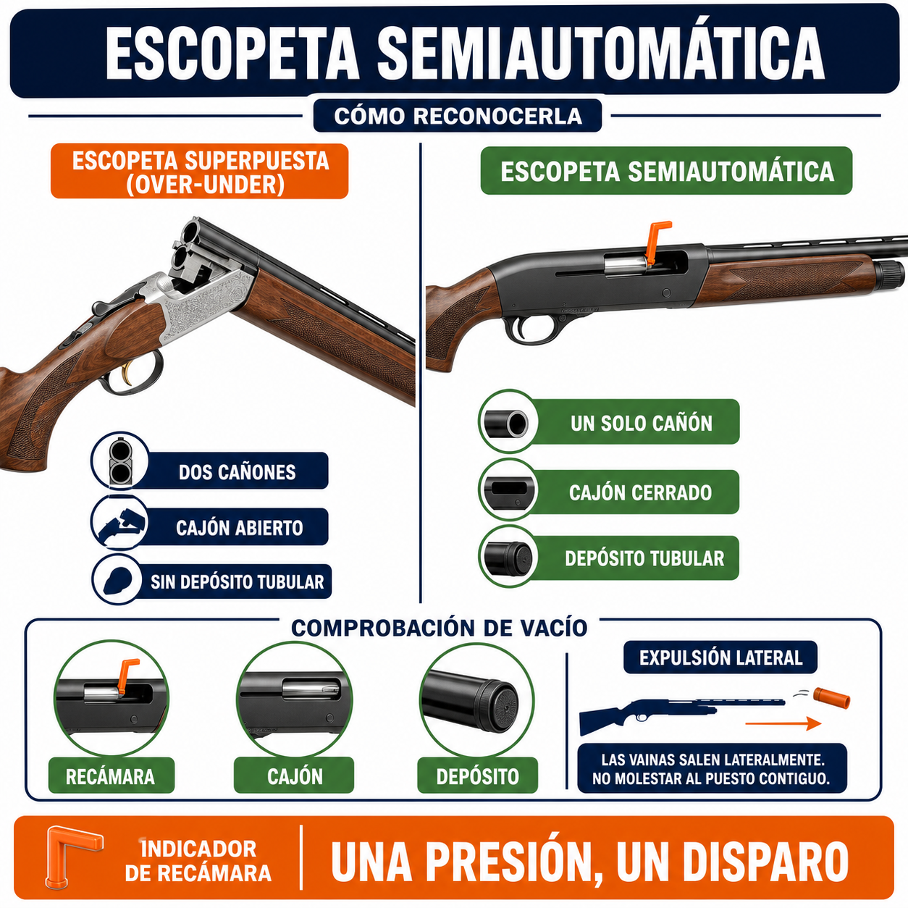
La comprobación de vacío requiere recorrer tres zonas: recámara, cajón de mecanismos y depósito; la ventana abierta por sí sola no cuenta toda la historia.
Decir que en España una semiautomática “lleva tres cartuchos” necesita contexto. Algunas normas de caza limitan el depósito a dos cartuchos. Con uno en la recámara, eso permite tres disparos sin recargar. El Reglamento de Armas tiene además límites generales distintos para armas largas semiautomáticas. En una cancha manda la disciplina y solo se cargan los cartuchos permitidos cuando toca. No debe convertirse una regla de caza en una capacidad deportiva universal.
La elección entre gases e inercia tampoco se decide con una frase hecha. El sistema por gases toma parte de esos gases y los lleva a un pistón. Suele exigir limpiar y revisar esa zona. El sistema inercial aprovecha el movimiento relativo de masas y tiene otro mantenimiento y otra sensibilidad al montaje. La compatibilidad con cargas ligeras y la descarga se comprueban en el manual del modelo y con munición autorizada. Nunca se introducen cartuchos para probar fuera del puesto.
5.4
Escopeta paralela
La semiautomática facilita parte de la recarga, pero obliga a conocer el depósito, la recámara, el cierre y la expulsión. La paralela añade otra referencia histórica y visual a esta comparación básica.
La paralela es una escopeta basculante con dos cañones colocados en horizontal. Como la superpuesta, se abre, muestra las recámaras y permite dos disparos. Cambia, sin embargo, la imagen delante del ojo, la anchura del conjunto y el reparto entre manos, báscula y peso. Puede tener uno o dos gatillos, extractores o expulsores, y chokes fijos o intercambiables según la época y el modelo.
Se asocia a la caza y a la armería tradicional por historia, no porque esté superada. Purdey sigue fabricando paralelas basadas en una acción desarrollada en el siglo XIX, y Beretta mantiene manuales específicos para su serie 480. En muchas disciplinas modernas de plato se ven menos que las superpuestas, pero FITASC Universal permite su mecanismo. Puede haber menos por oferta comercial, ergonomía, culatas y bandas más especializadas o costumbre competitiva. No hay una regla técnica que impida romper un plato solo porque los cañones estén uno al lado del otro.
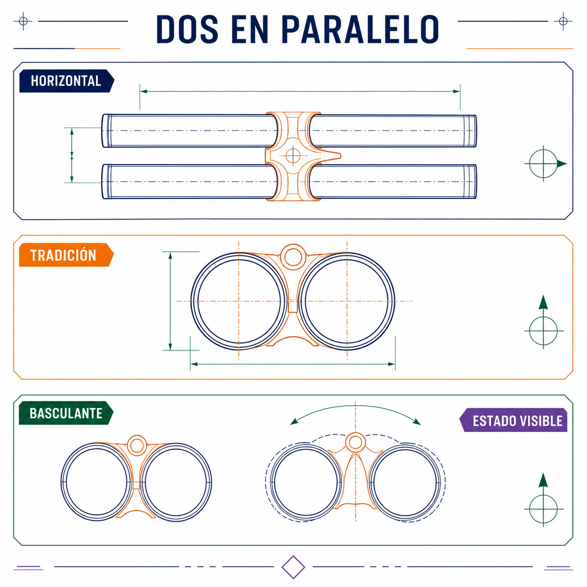
La disposición lateral cambia la silueta y el reparto de masas, pero conserva la lectura segura de una acción basculante abierta.
Una paralela antigua pide más cuidado, y no por su estilo. Antes de usar munición moderna deben revisarse marcajes de calibre y recámara, cierres, soldaduras, ánimas, chokes y prueba de banco. “Antigua” no significa insegura. “Bonita” tampoco significa apta. La compatibilidad la fija la identificación del arma y el dictamen profesional, no una foto ni un recuerdo familiar.
En el encare, el principiante puede notar más anchura cerca de la boca y una empuñadura distinta, sobre todo con culatas rectas o inglesas. No debe intentar centrar cada cañón por separado. El ojo se alinea con el plano para el que fue diseñada el arma, y el plomeo conjunto se comprueba en papel. Si los dos cañones centran de forma incompatible, la solución es técnica. No es cambiar la puntería entre disparos.
El doble gatillo, si existe, permite escoger directamente qué cañón dispara primero. Un solo gatillo puede llevar selector o una secuencia fija. Esa diferencia obliga a conocer el modelo, pero no cambia la regla básica: toda comprobación se hace con la acción abierta, las recámaras visibles y siguiendo el manual.
5.5
Escopetas de caza y escopetas de plato
La paralela mantiene su utilidad y su tradición, aunque hoy no sea la más común en todas las canchas. Más importante que la posición de los cañones es distinguir una escopeta de caza de otra preparada para plato.
“De caza” y “de plato” indican prioridades de diseño, no fronteras cerradas. En caza puede importar caminar durante horas, reaccionar ante una ocasión irregular y llevar un arma más ligera. En una cancha se repiten decenas o centenares de disparos. El arma se monta casi igual una y otra vez, y se valora que conserve equilibrio, cierre y comodidad durante sesiones intensas. Esta diferencia ayuda a entender por qué una escopeta de competición suele ser más pesada, regulable y costosa. Pero no demuestra que una de campo no pueda servir para empezar.
El peso muestra bien el compromiso. Con la misma munición, más masa reduce la velocidad y la energía del retroceso libre. SAAMI recuerda, sin embargo, que el retroceso que se siente también depende de la acción, la cantonera, la longitud, la caída, la inclinación de la cantonera —llamada pitch— y la forma de apoyar. Más masa estabiliza el movimiento y puede suavizar la sesión. También puede cansar brazos pequeños y hacer menos ágil el cambio de dirección. Menos masa facilita llevar y arrancar el arma, pero aumenta los errores de control y transmite un impulso distinto.
Campo y cancha ponderan de forma distinta peso, durabilidad, ajuste, estabilidad y volumen de disparos.
La culata también cambia la tarea. La culata es la parte que apoya en hombro, cara y mano. Browning explica que el ojo actúa como mira trasera. También explica que una culata más recta, con menor caída, se usa en armas de trap y skeet para blancos que suelen subir. Una escopeta de plato puede añadir lomo regulable, banda elevada, pesos y cañones largos. Una sporting busca estabilidad sin perder capacidad para blancos variados. Ninguna geometría compensa un encare doloroso o poco repetible.
El coste debe mirarse durante toda la vida del equipo. Una opción barata que no admite repuestos, ajuste o servicio puede salir cara. Una plataforma de competición sobrada puede ser innecesaria para quien todavía no sabe qué modalidad prefiere. Al presupuesto hay que sumar revisión, maletín, chokes, herramientas y posibles cambios de culata. Probar material del club permite esperar hasta tener criterios propios.
5.6
Trap y sporting
El peso, la culata, los cañones y el equilibrio dependen del uso previsto; una marca conocida no garantiza que el arma se adapte al tirador. Incluso dentro del plato, Trap y Sporting tienen necesidades diferentes.
Una escopeta de trap se prepara para una familia bastante concreta de platos. Salen por delante, se alejan y muchas veces suben. Una sporting debe resolver blancos que entran, salen, cruzan, caen, ruedan o cambian mucho de distancia. De ahí salen tendencias distintas. Trap favorece estabilidad, culata más alta y punto de impacto elevado. Sporting busca una imagen más neutra y un cambio controlado entre trayectorias distintas. Son optimizaciones, no prohibiciones de uso cruzado.
Los catálogos muestran esas diferencias sin dar una receta única. Trap suele buscar más estabilidad; sporting, más facilidad para cambiar de trayectoria. La longitud de los cañones influye, pero no clasifica por sí sola el arma. También cuentan la culata, la banda, el peso y su reparto.
Trap concentra la preparación en platos que se alejan; sporting amplía direcciones y distancias, y cambia el compromiso entre estabilidad y agilidad.
También cambia el reglamento. FITASC Foso Universal permite hasta 28 g de plomo y define cinco máquinas y esquemas. Los reglamentos de Sporting organizan presentaciones variadas. ISSF controla en sus pruebas una carga nominal máxima de 24 g con tolerancia de control. Para elegir cartucho, choke y orden de cañones hay que leer la edición vigente de la modalidad. No basta aplicar “trap igual a 24 g” a todo lo que tenga un foso.
Quien alterna disciplinas puede usar una sola escopeta y cambiar configuración, usar juegos de cañones o tener armas dedicadas. Cada opción cuesta aprendizaje. Si cambian altura de ojo, peso o velocidad de swing, también cambia la referencia corporal. Para un principiante suele ser más útil mantener una configuración durante varias sesiones y anotar qué limitación aparece antes de añadir otra variable.
5.7
Partes de una escopeta
Trap exige movimientos y formas de presentar el arma diferentes de Sporting, así que el equipo debe elegirse según la modalidad. Antes de hacer ajustes, conviene conocer las partes de la escopeta.
Aprender las partes no es memorizar un dibujo. Sirve para comunicar una incidencia sin tocar lo que no se entiende. De atrás hacia delante aparecen la cantonera, la culata, el lomo o carrillera y la empuñadura. Después vienen la báscula o cajón, la llave de apertura, el seguro, el selector si existe, el guardamonte y el gatillo. Delante están el guardamanos, las recámaras, los cañones, la banda o solista, el punto de mira, la boca y los chokes. En una semiautomática se añaden cierre, ventana de expulsión, elevador, depósito y mandos de liberación.
La recámara aloja el cartucho. No es lo mismo que el cañón. El extractor levanta la vaina y el expulsor puede lanzarla. La báscula une cierre y mecanismos de disparo en una basculante. Algunos modelos de competición tienen grupo de disparo desmontable, pero llamar cassette a toda escopeta lleva a error. Los chokes son la constricción fija o el tubo intercambiable de la boca. La banda es el plano superior que guía la visión periférica, no una mira telescópica.
El vocabulario sigue la función: apoyar, cerrar, disparar, contener, guiar la mirada y controlar el plomeo.
Los nombres cambian entre España, América y las traducciones de cada fabricante: carrillera o lomo, banda o solista, báscula o receptor. Lo importante es unir cada palabra con la pieza real del manual. Durante una avería basta decir “la acción no abre” o “la vaina permanece en la recámara”. No hace falta diagnosticar un expulsor roto. Ese diagnóstico corresponde al responsable o al armero.
También hay partes que se parecen pero no hacen lo mismo. La cantonera transmite el apoyo al hombro. El talón y la punta son sus extremos. El guardamanos sirve para sujetar y completa el cierre del conjunto basculante. El guardamonte protege el gatillo. La boca es el extremo del cañón y nunca un asa. Nombrarlas bien ayuda a dar instrucciones de seguridad breves y claras.
Una ficha personal con foto y términos del fabricante evita pasar nombres equivocados de un arma a otra. También permite señalar una anomalía al responsable sin inventar palabras ni manipular el arma para enseñarla.
5.8
La culata y el cuerpo
Conocer los nombres de los cañones, la báscula, el disparador, el seguro, la delantera y la culata permite seguir instrucciones claras. La culata es la pieza que relaciona de forma directa el arma con el cuerpo.
La culata coloca el hombro, la cara y, sobre todo, el ojo. Como la escopeta no suele tener alza trasera, el ojo cumple esa función. Por eso importan la longitud, la caída, la desviación lateral y el ángulo de la cantonera. Dos personas de la misma estatura pueden necesitar medidas distintas.
La longitud va del gatillo a la cantonera. Si sobra, dificulta el encare; si falta, comprime la postura. La caída regula la altura del ojo, la desviación lo centra de lado y el ángulo de la cantonera reparte el apoyo. Ninguna medida debe ajustarse por separado.
Una culata ajustada distribuye el apoyo y coloca el ojo de forma repetible; no obliga al cuerpo a perseguir la banda.
El dolor en hombro o pómulo no es parte del aprendizaje. Puede indicar mal apoyo, una culata inadecuada, tensión o exceso de series. Si persiste, hay que parar y revisar la causa.
La mano dominante no basta para elegir el lado ni el ajuste de la culata. También importan el hombro de apoyo y el ojo director. La prueba sencilla del ojo director se explica en 6.10, Mirar el cañón en vez del plato. Si el ojo director y el hombro de tiro no coinciden, un instructor debe valorar la postura y las posibles ayudas visuales antes de modificar el arma.
El ojo que mantiene el objeto centrado al guiñar el otro es el ojo director. La cabeza y las manos deben permanecer quietas durante toda la prueba.Si un tirador diestro tiene como director el ojo izquierdo, un instructor puede colocar un pequeño oclusor en la lente izquierda, justo sobre la línea con la que ese ojo ve el punto de mira. Así se reduce su interferencia y puede ser posible mantener ambos ojos abiertos.
En algunos campos existe una práctica para comprobar desde delante si el ojo, la banda y el punto de mira quedan alineados. Es una maniobra intrínsecamente peligrosa porque una persona se sitúa delante de las bocas. Nunca debe improvisarse ni realizarse entre tiradores. Solo puede dirigirla un instructor competente o la persona responsable de la instalación, con la escopeta abierta y completamente descargada, las recámaras comprobadas física y visualmente y toda la munición retirada de la zona. Siempre deben preferirse alternativas más seguras que no coloquen a nadie delante de los cañones. Esta observación puede revelar una desalineación, pero no sustituye varios encares ni una prueba de plomeo.
Esta comprobación frontal existe como práctica de campo, pero implica que alguien esté delante de las bocas. No se improvisa: solo la dirige una persona competente, con el arma abierta y totalmente descargada, recámaras verificadas y sin munición; siempre se prefieren alternativas más seguras.
La ropa de invierno cambia la longitud efectiva y el apoyo. Por eso el ajuste debe comprobarse en las condiciones habituales, sin perseguir diferencias mínimas cada semana.
5.9
Lomo elevable
Una culata adecuada coloca siempre de forma parecida el ojo, el hombro y las manos; una inadecuada obliga a corregir cada encare. El lomo elevable cambia la altura del ojo respecto a la banda.
El lomo elevable mueve la carrillera en altura y, normalmente, hacia los lados. Sirve para colocar el ojo de forma cómoda y repetible respecto a la banda. Al subirlo suele elevarse el punto de impacto; al desplazarlo, se centra el ojo sin torcer la cabeza.
Ver más banda puede ayudar a mantener a la vista un plato que sube, en vez de taparlo con el cañón. Pero el lomo no «levanta los perdigones» por sí solo. Cambia la relación entre ojo y arma, y el tirador reorienta el conjunto. Una banda regulable sí puede cambiar mecánicamente el punto de impacto en algunos modelos. Culata y banda pueden dar resultados parecidos en la plancha por caminos geométricos distintos.
La culata se apoya en el hombro, la mejilla descansa sobre el lomo y el ojo queda alineado por encima con la solista. Subir, centrar y comprobar modifica esa relación y debe validarse con un patrón real.
No debe moverse el lomo después de cada fallo. Un tiro bajo también puede venir de levantar la cabeza, parar el arma o leer mal la trayectoria. Se parte de una posición anotada, se hacen cambios pequeños y se comprueba el punto de impacto.
Con el arma descargada y sin disparar, en la cancha se usa a veces una referencia sencilla: colocar dos monedas de un euro, una sobre otra, en la parte trasera de la banda. Si al encarar todavía se ve el punto de mira por encima, hay una ganancia visible. Es solo una comprobación orientativa; no sustituye el ajuste profesional ni la plancha de plomeo. Una configuración alta permite ver más plato y apuntar algo por debajo. Esa imagen puede exigir adaptación al volver a una escopeta de caza, con la que muchos tiradores cubren más la pieza.
Las dos monedas ofrecen una referencia visual sencilla. La ganancia real y el punto de impacto se confirman en una plancha de plomeo.
Los postes deben quedar firmes y dentro de los límites del manual. La posición inicial se marca para poder recuperarla. Tras cada cambio se hacen encares descargados y se comprueba que nada se mueve.
5.10
Culatas totalmente regulables
Elevar el lomo puede cambiar el lugar donde impacta el patrón respecto a lo que vemos al apuntar, pero hay que medirlo y probarlo. Las culatas con más ajustes ofrecen más posibilidades, aunque también hacen más fácil perder una referencia estable.
Una culata totalmente regulable permite ajustar más cosas que el lomo. Puede cambiar longitud de tiro, altura y lateralidad de carrillera, rotación, pitch, salida y posición de cantonera. Algunos sistemas añaden amortiguación y pesos de equilibrado. Su promesa razonable no es acertar por sí sola. Es permitir que personas distintas coloquen ojo, cara y hombro sin tallar una culata nueva en cada prueba.
Hay tres caminos. Un fabricante puede integrar torretas y pesos en madera, como B-Fast. También puede ofrecer una estructura modular, como las opciones TSK citadas por Beretta. O un culatero puede medir, cortar, añadir mecanismos o fabricar a medida. Browning documenta lomo, cantonera y longitud regulables en modelos de trap. Una patente española describe una culata multirregulable para adaptación personalizada. Eso prueba que hay desarrollo local, aunque una patente no demuestra disponibilidad, calidad ni idoneidad de un producto concreto.
Regular no es moverlo todo: se establece una referencia, se cambia una dimensión y se verifica encare, apoyo y plomeo.
Una culata de madera a medida y una estructura metálica regulable resuelven problemas de forma distinta. La primera puede repartir el contacto de manera continua y dar menos tentación de cambiar. La segunda facilita probar, repetir medidas o adaptarse a ropa y cambios corporales. También cambian estética, peso y rigidez. La decisión debe incluir cómo se conservarán los ajustes durante transporte y uso.
El peso añadido atrás desplaza el equilibrio. También puede cambiar la velocidad con la que el arma arranca o se detiene. Por eso un ajuste cómodo para el cuerpo aún debe probarse en movimiento. Una culata que coloca bien el ojo puede cambiar la sensación de swing si modifica mucho el reparto de masas.
Topes, escalas y tornillos deben permitir volver a una referencia. Sin registro, la regulación se convierte en una cadena de sensaciones imposibles de comparar.
5.11
Banda o solista
Tener más ajustes no significa que la escopeta quede mejor: cada cambio debe tener un motivo, una medida y una forma de volver atrás. La banda o solista permite al ojo ver parte de esa relación geométrica.
La banda o solista es la superficie larga situada sobre los cañones. Da un plano visual, reduce reflejos cuando está bien acabada y sostiene el punto de mira. Puede ser plana, escalonada, elevada, ventilada o regulable. Su aspecto influye en lo que percibe el tirador. Pero en tiro al plato la atención principal sigue en el blanco. La banda y el punto se notan de forma periférica para mantener la alineación.
Mirar fijo el punto de mira convierte una tarea de interceptar un plato en una puntería estática. El plato pierde nitidez, el swing se vuelve pensado y suele pararse. Pero ignorar por completo la banda tampoco arregla un encare irregular. Durante la preparación se puede comprobar que ojo, banda y puntos están alineados. Cuando sale el plato, la mirada va al objetivo y el arma acompaña desde la visión periférica.
La banda organiza la referencia periférica; el plato conserva el foco visual. Altura aparente y punto de impacto no son la misma variable.
Una banda elevada puede permitir una postura más erguida y dejar más espacio bajo el blanco. Una regulable puede cambiar el punto de impacto en modelos diseñados para eso. Beretta documenta un mecanismo frontal y trasero B-Fast. Krieghoff explica que bajar su banda respecto al cañón eleva el punto de impacto en modelos concretos. Por tanto, no vale la regla intuitiva “subir banda siempre sube tiro”. Depende del pivote y del manual.
El punto intermedio, si existe, sirve sobre todo para comprobar que el ojo no está descentrado. No crea una línea de alza como en un rifle. Si las dos bolitas parecen separarse al montar, la causa puede estar en la altura de la cara o en la inclinación del arma. Esa comprobación se hace antes de pedir el plato. Durante el vuelo, intentar recomponer una figura geométrica quita atención al movimiento.
La anchura, el acabado mate y la ventilación cambian el contraste y la sensación de calor. No sustituyen una culata que coloque bien el ojo. Una banda que parece cómoda en el armero debe probarse con la luz y la postura reales de la cancha.
5.12
Chokes
La solista ayuda a colocar el ojo respecto al arma, aunque durante el tiro la mirada debe seguir en el plato. El choke no cambia esa dirección, sino la forma y la densidad del plomeo que veremos ahora.
El choke es un estrechamiento en la boca del cañón. Puede ser fijo o intercambiable. No añade puntería ni potencia: cambia cómo se abre la nube de perdigones. En general, más constricción conserva más densidad a distancia; una apertura mayor ensancha antes el patrón.
Muchas escopetas especializadas de trap, sobre todo modelos y configuraciones tradicionales, llevan chokes fijos. Otras escopetas modernas de trap usan tubos intercambiables. No debe suponerse una configuración por el nombre de la disciplina: hay que consultar el marcaje del cañón y el manual del modelo. Un choke fijo solo debe ser modificado por un armero cualificado.
Los nombres Cylinder, Modified o Full son familias, no medidas universales. Las estrellas y muescas deben consultarse en la tabla del fabricante. Un tubo que encaja puede no admitir el material o la carga elegidos. Nunca se dispara un cañón roscado sin choke instalado.
Distancia y constricción cambian apertura y densidad; el patrón real pertenece a la combinación arma, choke y cartucho.
Una superpuesta puede usar distinta apertura en cada cañón. Suele abrirse más el primero y cerrarse el segundo porque el blanco se aleja, aunque no sirve para todas las modalidades. Un patrón ancho no corrige un gran error. La combinación real se conoce plomeando ambos cañones.
El tubo debe estar limpio, sin golpes y bien asentado. Se revisa con el arma descargada. Si se afloja, sobresale o presenta daños, se deja de usar hasta que lo revise una persona competente.
Los chokes extendidos se identifican mejor, pero siguen siendo piezas sometidas a presión. Su marca no garantiza la compatibilidad.
5.13
Cartuchos
El choke no mueve el centro del disparo: cambia la distribución de los perdigones a medida que aumenta la distancia. Esa distribución también depende del cartucho utilizado.
Un cartucho de escopeta reúne vaina, culote, pistón, pólvora, taco y perdigones. En la caja hay que comprobar calibre, longitud, carga, tamaño y material del perdigón. También hay que leer cualquier indicación de velocidad y uso. Calibre 12 no basta. La longitud de la recámara marcada en el cañón limita qué vaina disparada se admite. El manual de Browning advierte que usar una longitud mayor que la recámara puede elevar peligrosamente la presión.
Los gramos indican masa de perdigón, no pólvora ni “potencia” total. ISSF controla una carga nominal máxima de 24,0 g con tolerancia de ensayo de 0,5 g y diámetro máximo según sus reglas. FITASC Universal 2025 admite hasta 28 g de plomo con tolerancia del 2 % y perdigón regular de hasta 2,5 mm más tolerancia. RIO comercializa en calibre 12 opciones de 24 y 28 g. Estas cifras pertenecen a productos y disciplinas concretas. El club puede imponer materiales o límites adicionales.
Leer la caja significa relacionar recámara, carga, perdigón, taco, velocidad declarada y reglamento; ningún número trabaja solo.
Una carga de 28 g contiene más masa de perdigones que una de 24 g del mismo tamaño y material. Pero el número exacto exige medir diámetro, densidad y variación de fabricación. Más masa o más velocidad tiende a aumentar el impulso y el retroceso libre. SAAMI incluye también taco y gases en el cálculo. La velocidad anunciada depende de un método de medida. No garantiza que dos cartuchos den igual tiempo de vuelo, plomeo o sensación en una escopeta concreta.
El lote y la conservación importan. Vainas deformadas, humedad, corrosión o cartuchos de origen dudoso se apartan siguiendo las indicaciones del fabricante y del campo. No se mezclan calibres en el bolsillo. Un cartucho menor puede entrar de forma peligrosa en un cañón mayor y quedar como obstrucción. La inspección se hace antes de cargar. No se intenta reparar ni recargar munición durante la serie.
La caja original conserva lote y especificaciones. Esa información hace falta si aparece una anomalía o se comparan resultados de plomeo. Separar lotes evita culpar al choke o a la técnica de una variación de cartuchería.
5.14
Equipamiento personal
La carga, el tamaño del perdigón y la velocidad inicial influyen en el número de proyectiles, el retroceso, la dispersión y la energía que conservan. El equipo personal completa la preparación y protege al tirador.
El equipo personal empieza por dos protecciones, no por el chaleco: oído y ojos. La guía ISSF 2026 exige protección auditiva adecuada cerca de la línea y gafas resistentes para atletas, árbitros y oficiales. FITASC Universal exige oído y ojos en su evento. Las lentes de color pueden mejorar el contraste bajo cierta luz. Pero no sustituyen la resistencia al impacto, el buen ajuste, la visión lateral ni una montura que no se mueva al encarar.
El ruido de un arma es impulsivo. Puede causar daño acumulado o inmediato. NIOSH recomienda doble protección, tapón y casco, para ruido de armas en sus guías ocupacionales. En un campo abierto concreto, la elección debe considerar medición, frecuencia, ajuste y normas. Unas gafas gruesas pueden romper el sellado del casco. Los protectores electrónicos facilitan la conversación en algunos contextos. Pero ISSF prohíbe a atletas y entrenadores dispositivos con amplificación o recepción sonora en el campo de competición, salvo excepciones autorizadas.
Protección primero; después, prendas que ordenan cartuchos, permiten montar sin enganches y sostienen una postura estable.
El chaleco da una superficie regular en el hombro y bolsillos accesibles. No debe llevar cartuchos sueltos mezclados con objetos. Un paño ayuda a secar manos o quitar humedad exterior, pero no autoriza a limpiar un arma cargada. Gorra y lentes ayudan con la luz. El calzado estable evita resbalones. La ropa debe permitir girar el tronco y montar sin pliegues duros. Los guantes pueden mejorar agarre o abrigo si mantienen el tacto y no estorban en guardamonte y mandos.
La bolsa completa lleva lo necesario para estar ordenado, no un taller portátil: documentación, protección de repuesto, lentes en funda, paño, agua y la herramienta de choke del arma. Medicación, calor y fatiga pueden afectar al control y a la atención. El equipo no los corrige. Si unas lentes se empañan o un protector impide oír al árbitro, se sale de la secuencia y se resuelve antes de seguir.
Todo elemento debe colocarse sin invadir el puesto vecino ni obligar a dejar el arma apoyada de forma improvisada. El orden del chaleco también debe mantenerse igual entre series.
5.15
Mantenimiento básico
Las gafas, la protección auditiva, el calzado y la ropa deben funcionar juntos, no ser simples accesorios. Para que todo siga siendo seguro, hay que revisar, limpiar y mantener tanto el arma como el equipo.
El mantenimiento empieza antes de limpiar: arma descargada, munición fuera de la zona, dirección segura y manual abierto en el modelo correcto. Se revisan cañones y recámaras sin mirar desde la boca. También se comprueban estado y apriete de chokes, cierre, guardamanos y daños visibles. Si hay obstrucción, deformación, grieta, pieza floja o funcionamiento raro, no se prueba “a ver si dispara”. Se retira y se consulta a un armero.
Después de una jornada, una superpuesta suele necesitar desmontaje al nivel autorizado, limpieza de ánimas y recámaras, retirada de restos de plástico o plomo, secado y una película moderada de protección. Las superficies basculantes reciben la grasa indicada por el fabricante. Los chokes se sacan con el arma descargada. Se limpian rosca y alojamiento, se lubrican un poco y se reinstalan con su herramienta. Beretta advierte que limpiar o disparar un cañón roscado sin tubo puede ensuciar, dañar u obstruir la rosca.
El ciclo termina donde empezó: verificación de vacío, limpieza proporcionada, ausencia de obstrucciones y custodia segura.
Más aceite no significa más cuidado. Puede atrapar suciedad, pasar a la madera o a los mecanismos y alterar el funcionamiento. Una semiautomática añade mantenimiento de cierre, depósito y sistema de gases o inercia según el manual. No se aplican instrucciones de una acción a otra. Antes de montar, se confirma que no queda ningún parche en el ánima. Las reparaciones y ajustes internos corresponden al fabricante, al servicio autorizado o al armero.
La inspección final no consiste solo en que el metal brille. Se comprueba que el ánima esté libre, que las superficies queden secas donde el manual no pide lubricación y que no falte ninguna pieza ni herramienta. Madera, polímeros y acabados reciben productos compatibles. Un disolvente adecuado para depósitos del cañón puede dañar barnices, adhesivos o cantoneras. El arma se guarda cuando su humedad está estabilizada. Nunca se deja mojada dentro de una funda cerrada. Antes de la siguiente salida se repite una comprobación funcional descargada, porque transporte y almacenamiento también pueden aflojar piezas o mostrar corrosión.
Mapa de cierre del capítulo. Mantener bien exige reconocer primero lo que se inspecciona. Vuelve a 5.7, Partes de una escopeta, para localizar cañones, báscula, cierre, guardamanos y piezas esenciales. La revisión de 5.8, La culata y el cuerpo, y de los ajustes de 5.9 y 5.10 recuerda que limpiar no autoriza a cambiar medidas ni sustituye un ajuste profesional. Por último, 5.12, Chokes, y 5.13, Cartuchos, conectan constricción, combinación real arma-munición y distancia de plomeo. El mantenimiento conserva esa combinación en condiciones seguras, pero solo una prueba en plancha permite comprobar su patrón.
Qué hemos aprendido
La escopeta es un sistema, no una categoría de prestigio. El mecanismo marca cómo se carga, se descarga y demuestra su estado. La especialización trap o sporting cambia las prioridades de equilibrio, culata, banda y plomeo. La elección correcta empieza con una prueba supervisada, no con el catálogo.
El ojo actúa como referencia trasera: culata y lomo deben colocarlo siempre igual y sin dolor.
Banda, lomo y punto de impacto se relacionan, pero no son lo mismo ni siguen una regla universal.
Choke y cartucho producen un patrón propio de esa combinación; solo el plomeo real muestra centro, densidad y variación.
Gafas y protección auditiva forman parte de tirar, y el mantenimiento termina con custodia legal y segura.
Lectura experta. El simulador puede aislar ganancia de solista, velocidad y dispersión para enseñar relaciones de causa y efecto. No reproduce retroceso percibido, momento de inercia, deformación de la nube, ciclo mecánico ni fitting. Esa frontera debe verse clara cuando el lector lleva una observación digital a un arma real.
Capítulo 06
Por qué un principiante falla el plato
Un fallo no tiene una sola causa. El plomeo, es decir, la nube de perdigones, puede llegar tarde, bajo o fuera de la trayectoria. El ojo puede dejar de seguir el plato. La cabeza puede cambiar la alineación. El arma puede frenarse aunque el tirador crea que la sigue moviendo. Desde el puesto, varias causas se sienten casi igual: el plato sigue entero y queda poca información para saber qué pasó.
Este capítulo transforma doce frases habituales de la cancha en preguntas que se pueden observar. No pretende diagnosticar a distancia ni sustituir al instructor. Separa lo que apoyan estudios y manuales, lo que depende de la modalidad o de cada persona, y los comentarios personales marcados como tales. La meta no es acumular correcciones. La meta es elegir una sola hipótesis y comprobarla con seguridad.
6.1
La primera intuición engaña
La escopeta, la culata, el choke, el cartucho y la protección forman un conjunto que debe ajustarse y mantenerse bien. Después de conocer el equipo, podemos estudiar por qué un disparo falla aunque desde fuera parezca correcto.
La primera duda aparece enseguida: si el punto de mira parece alineado con el plato, ¿por qué no se rompe? Porque esa imagen es del presente. El encuentro con el plomeo ocurrirá un instante después.
La alineación aparente no detiene la escena. Desde que se reconoce el plato hasta que llega el plomeo, el blanco sigue avanzando. Para acertar deben coincidir el lugar y el momento.
La intuición inicial viene de tareas donde el resultado parece inmediato. Señalamos un icono en una pantalla, tocamos una pelota quieta o apuntamos a una marca fija. En esos casos, la posición que vemos sigue sirviendo cuando termina la acción. El plato es distinto. Es un blanco móvil y no espera a que el tirador termine de mirar, decidir y mover. Cuando los perdigones llegan a la distancia del blanco, el plato ya no está donde estaba al empezar.
Esto no quiere decir que el tirador tenga que calcular una fórmula mientras sale el plato. Quiere decir que debe imaginar visualmente dónde se producirá el encuentro. La investigación sobre intercepción visuomotora, que estudia cómo el cuerpo intercepta objetos en movimiento, describe justo eso: acciones que buscan coincidir con un objeto móvil aunque haya retrasos en la vista y en el movimiento. El sistema nervioso usa información reciente y predicción. Si uno reacciona solo al lugar actual, llega tarde cuando el blanco va rápido.
Además hay dos tiempos que no conviene mezclar. Uno es de la persona: detectar, reconocer y organizar el movimiento. Otro es del disparo: salir del cañón y recorrer la distancia. El segundo no desaparece porque el cartucho sea rápido. Los calculadores balísticos llaman time of flight, tiempo de vuelo, al tiempo que tarda el proyectil en llegar. También definen el adelanto como la corrección necesaria para un blanco que se mueve. En una escopeta real, la nube de perdigones y su pérdida de velocidad complican el detalle, pero la idea básica sigue igual: durante ese intervalo, el plato avanza.
Ejemplo: un plato cruza de izquierda a derecha. El principiante lo encuentra con la vista, lleva el cañón hasta su borde y dispara justo cuando ambos parecen superpuestos. Si el centro del plomeo cruza después la línea de vuelo, puede encontrar la estela, no el plato. Una corrección útil no es decirle sin más que “vea más hueco”. Puede ser empezar antes el movimiento, mantener una separación aprendida con el instructor o continuar el swing, es decir, el movimiento de acompañamiento, durante el disparo.
6.2
Los retrasos se suman
Apuntar al lugar donde vemos el plato no tiene en cuenta que el blanco se mueve y que el tirador necesita tiempo para responder. Para entender este retraso, separaremos todos los tiempos que se van sumando.
No hay un único retraso llamado “reacción”. La secuencia incluye detectar, decidir, moverse, accionar, disparar y esperar a que los perdigones vuelen. Mientras tanto, el plato sigue su camino.
Los pasos no duran lo mismo ni se reducen a una cifra válida para todos. La cadena sirve para recordar que el blanco cambia de posición durante todos ellos.
El ojo no entrega una trayectoria completa en cuanto aparece una mancha naranja. Primero hay que separar el plato del fondo. Después hay que leer su dirección y su velocidad aparente, y decidir cómo iniciar el movimiento. Luego el cuerpo acelera un objeto con peso, la mano completa la acción prevista y el disparo sale del arma. Por último, los perdigones recorren la distancia. Llamar a todo esto “velocidad de reacción” tapa dónde puede estar el problema.
La investigación experimental sobre intercepción muestra que las correcciones guiadas por la vista llegan con latencia, es decir, con retraso. Un estudio de 2026 encontró aproximadamente 114 milisegundos para responder a saltos de posición en dos tareas manuales sobre pantalla. Ese valor no debe llevarse directamente a una escopeta: las personas, el movimiento, el entorno y la tarea eran distintos. Sí confirma una idea más prudente y sólida: la información visual nueva no cambia la acción de forma instantánea.
Tampoco hay que imaginar esos pasos como una fila rígida que nunca se solapa. La mirada puede seguir actualizando la trayectoria mientras el arma se mueve. El tirador puede corregir durante el swing. La experiencia ayuda a anticipar regularidades. Las revisiones de control visuomotor describen una mezcla de predicción y ajuste en marcha. Por eso un experto no tiene solo “reflejos más rápidos”: lee antes la información importante y mueve el arma con más estabilidad.
Ejemplo: dos tiradores fallan detrás el mismo cruce. El primero detectó tarde el plato porque miraba demasiado cerca de la máquina. El segundo lo vio a tiempo, lo pasó, pero frenó al apretar el disparador. El resultado puede parecer parecido, pero la corrección no lo es. Al primero le ayuda revisar la zona de mirada. Al segundo, mantener la continuidad. Pedir a ambos “más adelanto” puede esconder la causa y añadir tensión.
Para un principiante, la cadena debe servir como entrevista práctica. ¿Cuándo apareció nítido el plato? ¿El movimiento arrancó fluido o con prisa? ¿La separación seguía creciendo al disparar? ¿El cañón continuó después? No hace falta contestarlo todo durante la serie. Basta con que instructor y alumno elijan un paso observable y lo comparen en varias repeticiones parecidas.
6.3
Quedarse detrás
Ver el plato, decidir, mover el arma y esperar la llegada de los perdigones lleva tiempo, mientras el blanco sigue avanzando. El resultado más común es que el patrón quede detrás.
“Vas detrás” indica por dónde pasa el centro del disparo respecto al plato. No demuestra por sí solo por qué pasó. Separar resultado y causa evita aplicar la misma receta a fallos distintos.
En un cruce lateral, la relación detrás-delante se entiende con facilidad. Empezar tarde o parar el swing pueden ser causas, pero no son diagnósticos automáticos.
En la cancha, quedarse detrás significa que el plomeo útil cruza la zona por la que el plato ya ha pasado. El caso más claro es un cruce lateral: el blanco se mueve hacia un lado y la nube queda en su estela. En una salida casi frontal, la frase se entiende peor, porque el error puede verse como altura y profundidad. Siempre hay que interpretar “detrás” respecto a la trayectoria real, no respecto al borde de la pantalla ni al horizonte.
Se oye a menudo que este es el fallo más habitual del principiante. La afirmación encaja con la experiencia de muchos instructores, pero no hemos encontrado un registro de población que permita darle una prevalencia universal. Sí hay evidencia concreta de que los tiradores de mayor nivel muestran movimientos de arma más estables y una mirada final más temprana y duradera que los subélite. Ese resultado apoya trabajar estabilidad visual y movimiento del arma. No permite afirmar que cada plato entero quedó detrás.
Se puede llegar al mismo resultado por varios caminos. El tirador puede detectar tarde, empezar desde una espera poco adecuada, acelerar de golpe, intentar medir el hueco mirando el cañón o detener el arma al disparar. También puede leer mal la velocidad o la distancia. Cuanto más rápido y lateral parece el plato, o cuanto mayor es el tiempo de vuelo, más se nota la separación necesaria. Pero “añadir hueco” sin ordenar el movimiento puede producir un fallo por delante en el siguiente intento.
Ejemplo: un plato cruza de derecha a izquierda. El alumno consigue pasar el borde delantero, duda para comprobar la separación y aprieta cuando el arma ya ha perdido velocidad angular. La imagen mental antes del disparo era correcta, pero el encuentro no. Durante la duda, el blanco avanzó y el cañón frenó. La indicación útil puede ser “mantén la mirada en el plato y atraviesa el disparo”, no necesariamente “apunta un metro más”.
El análisis debe apoyarse en patrones, no en un solo resultado. Si varios cruces parecidos fallan detrás y la grabación o el instructor ven una parada, aparece una hipótesis fuerte. Si unos quedan delante y otros detrás, conviene revisar encare, mirada y ritmo antes de fijar una cifra de adelanto. Los fragmentos también engañan: romper la parte trasera puede sugerir un centro retrasado, pero la distribución irregular del plomeo impide convertir cada rotura en una medida exacta.
6.4
Quedarse bajo
Quedarse detrás describe dónde ha caído el disparo, pero puede deberse a un inicio tardío, una parada o poco adelanto. Si el disparo queda bajo, debemos estudiar por separado el eje vertical.
En un plato que sube, “bajo” puede describir dónde pasa el plomeo. No identifica automáticamente si la causa fue la vista, el cuerpo, el arma o el tiempo.
La salida ascendente mezcla altura y tiempo. Una nube baja puede venir de leer poca subida, de una alineación variable o de una parada durante el ascenso.
Quedarse bajo significa que el centro útil del plomeo pasa por debajo del plato en el encuentro. La definición parece sencilla, pero desde el puesto no siempre se percibe bien. Un plato que se aleja y sube cambia de tamaño aparente, pasa por fondos distintos y puede parecer que sube menos cuando empieza a perder velocidad vertical. El tirador debe acompañar esa subida sin olvidar el movimiento lateral ni tapar por completo la referencia.
Una causa posible es leer la salida como más plana de lo que es. Otra es detener la subida del arma al disparar. También puede cambiar la relación entre ojo y banda. La banda es la parte superior de los cañones que el ojo usa como referencia. Si la cara pierde su contacto repetible, o si la culata coloca el ojo a otra altura, la dirección que el tirador cree dar no coincide con la orientación real. Los manuales de fabricante confirman que la altura y el desplazamiento del lomo se usan para alinear de forma constante el ojo dominante con el plano de la banda.
Eso no convierte el ajuste de la culata en una cura inmediata. Browning, por ejemplo, documenta escopetas de trap cuyo punto de impacto queda por encima del punto de puntería para mantener visible el plato. También documenta modelos con banda o lomo regulables. Son datos de armas concretas, no una recomendación universal. El punto de impacto debe comprobarse con una prueba de plomeo. Cualquier modificación debe hacerse con el arma descargada, procedimiento seguro y ayuda competente.
Ejemplo: el alumno rompe platos laterales, pero pasa repetidamente bajo una salida central muy vertical. Antes de subir el lomo, el instructor observa varios intentos. Ve que la cara se separa al final y que el cañón deja de subir cuando llega el disparo. El equipo todavía no era la variable principal. Se trabaja una monta cómoda, seguimiento visual y continuidad. Después, si la tendencia sigue con un encare repetible, se comprueba el punto de impacto del conjunto arma-tirador.
También hay que evitar corregir de más. Tras oír “bajo”, el principiante puede levantar de golpe los cañones y perder el plato, o colocar la cabeza en una postura forzada. Una corrección útil tiene escala pequeña y una observación asociada: mantener el plato visible, conservar la cara en el mismo lugar y terminar el movimiento por encima de la línea anterior. Si aparece dolor, la prueba se detiene. No se normaliza una postura incómoda para lograr un acierto aislado.
6.5
Tapar el plato
Un disparo bajo puede deberse a una mala lectura de la trayectoria, al encare o a la relación entre el ojo y la culata. Corregirlo tapando el plato puede crear además un problema de visibilidad.
Adelantar no siempre exige perder el blanco detrás de los cañones. “Taparlo” describe una imagen concreta. Depende de la trayectoria, de la técnica y de la relación entre ojo, culata y banda.
El adelanto es una relación de tiempo. La oclusión, es decir, tapar el plato con el arma, es una relación visual. Confundirlas puede hacer que el tirador mida con el cañón o pierda la referencia para el segundo disparo.
Desde la mirada del tirador, tapar el plato significa que una parte del arma se pone entre el ojo y el blanco hasta ocultarlo. Puede ocurrir en una salida ascendente cuando la línea del cañón pasa por encima de la imagen del plato. También puede ocurrir con un método de tiro que cruza de forma deliberada su trayectoria. La dificultad empieza cuando el tirador se queda sin información visual. Ya no lee bien dirección, velocidad aparente ni continuidad.
No hay que confundir “poner el cañón por delante” con “mirar el cañón”. En tiro de escopeta, el arma puede ir adelantada en la visión periférica mientras la atención central sigue en el plato. La NSCA diferencia la conexión visual con el blanco de la comprobación consciente del hueco. Cuando el tirador mira la referencia cercana para medir, el seguimiento visual se corta y el movimiento puede frenarse.
La imagen también depende del equipo. La altura del ojo sobre la banda y el punto de impacto de la escopeta determinan cuánto cañón se ve y dónde queda el centro del patrón respecto a la referencia aparente. Algunos modelos de trap están diseñados o regulados para disparar por encima del punto de puntería y facilitar que el plato siga visible. Es un dato de fabricante para configuraciones concretas. No significa que todo principiante deba elevar la culata ni que exista una proporción ideal para todos.
Ejemplo: en una salida central, el alumno sube el cañón hasta que el plato desaparece y dispara de memoria. Si falla, levanta la cabeza para recuperarlo y el segundo intento nace con otra alineación. Antes de tocar el arma, el instructor comprueba el encare, el punto de impacto y el método elegido. Puede enseñar una referencia que conserve visión o confirmar que la configuración necesita evaluación profesional. La corrección se verifica con plomeo, no por sensación.
6.6
Levantar la cabeza
A veces se tapa el plato por una colocación demasiado plana del ojo y el arma, no porque sea una técnica recomendable para todos. Si levantamos la cabeza de la culata para volver a verlo, también cambia la dirección del disparo.
La necesidad de comprobar si se ha acertado puede separar la cara de la culata en el peor momento. El gesto cambia la alineación del ojo y también corta la continuidad visual del disparo.
El ojo funciona como referencia posterior del sistema. Si cambia de altura durante la ejecución, cambia la imagen de la banda y puede cambiar la dirección real del patrón.
Levantar la cabeza rompe la posición del ojo respecto a la banda. En una escopeta sin alza posterior, el ojo hace de referencia trasera. Si la cara se separa de la culata, el tirador deja de mirar desde el punto para el que estaba ajustada el arma.
El gesto puede empezar antes del disparo por miedo a tapar el plato. Puede aparecer en el mismo instante por anticipación. O puede llegar después, por la prisa de comprobar si se ha roto. Las tres variantes se parecen desde fuera, pero afectan a fases distintas. La última engaña mucho: el tirador cree que ya ha terminado, aunque el seguimiento posterior conserva la orientación y, si hay segundo disparo, la referencia visual para corregir.
La investigación de Causer y colaboradores no estudió expresamente “levantar la cabeza”. Sí encontró que, en trap, skeet y doble trap, una mirada final más temprana y más duradera se asociaba con mayor nivel y con ensayos acertados. La conclusión razonable es favorecer una conexión visual estable. No es afirmar que toda mirada larga garantice el acierto. El movimiento del arma, la trayectoria y el patrón siguen influyendo.
Ejemplo: el primer disparo no rompe el plato. El alumno levanta la cara para verlo por encima de los cañones, vuelve a apoyarla con prisa y hace el segundo tiro desde otra altura. Aunque “apunte” al mismo lugar, la relación ojo-banda ha cambiado dos veces. El instructor puede pedirle que termine el movimiento manteniendo un contacto cómodo y que deje que el resultado llegue a la vista, en vez de buscarlo con la cabeza.
“Mantener la cara” tampoco significa aplastarla contra la culata ni aguantar dolor. La presión suficiente es la que da contacto estable sin tensión excesiva. Si el encare correcto obliga a una postura incómoda, el problema puede ser de ajuste, no de voluntad. Un buen diagnóstico separa hábito, anticipación y geometría del arma antes de repetir series con la misma molestia.
6.7
Encare poco constante
Levantar la cabeza rompe una referencia que debe mantenerse estable mientras movemos el arma y disparamos. Un encare distinto en cada intento crea esa misma duda incluso antes de pedir el plato.
Cuando la culata, la cara y el cuerpo se colocan de forma distinta en cada intento, los resultados parecen aleatorios aunque el plato sea casi el mismo.
La repetibilidad no exige cuerpos idénticos ni una postura universal. Exige que la solución elegida para esa persona coloque ojo, hombro y arma de forma parecida cada vez.
Encarar es colocar de nuevo pies, cuerpo, hombro, culata, mejilla, manos y mirada. Si la cantonera o la cara cambian de sitio, la dirección del arma cambia antes de iniciar el swing. El tirador puede culpar al adelanto cuando, en realidad, parte de una referencia distinta en cada intento.
Ser constante no significa copiar una postura de foto. La anatomía, la lateralidad, la movilidad y la modalidad cambian la solución. El manual CPSA y los documentos de fabricante presentan el ajuste de culata como una forma de alinear el ojo con la banda de manera repetible. La función del instructor es encontrar una configuración segura y cómoda para esa persona, no obligarla a ocupar unos ángulos universales.
Los pies importan porque orientan el rango de movimiento, pero no explican todo. Una base incómoda puede hacer que el tronco llegue al límite durante un cruce y que el arma se frene. Un hombro elevado puede cambiar el contacto de la cantonera. Una mejilla que cae tarde puede cambiar la imagen justo antes del disparo. Por eso la evaluación recorre la cadena desde el suelo hasta el ojo y observa varias repeticiones.
Ejemplo: al repetir una salida, el alumno alterna fallos altos y bajos sin patrón claro. El instructor deja de corregir adelanto y mira solo la monta. Comprueba que, en algunos intentos, el talón de la cantonera queda fuera del bolsillo del hombro y la cabeza se inclina para encontrar la banda. Al estabilizar un encare cómodo, los fallos se dispersan menos. Solo entonces tiene sentido trabajar el punto de encuentro.
El trabajo fuera de una serie real puede ayudar, pero debe mantener la cultura de seguridad. La CPSA describe ejercicios de monta y de comprobación de alineación. Cualquier práctica con un arma debe hacerse completamente descargada, en una zona autorizada y según las reglas del club, preferiblemente con supervisión al empezar. El simulador, por su parte, no reproduce peso, contacto ni anatomía. Solo puede enseñar la consecuencia geométrica de mover el ojo, no entrenar el encare físico.
6.8
Gatillazo y anticipación del retroceso
Sin un encare que podamos repetir, cualquier cambio de adelanto se mezcla con movimientos del ojo, el hombro y la culata. Además, el miedo al retroceso puede alterar el gesto justo antes de disparar.
El retroceso físico ocurre después de iniciarse el disparo. El gatillazo aparece cuando el cuerpo se prepara demasiado pronto y cambia la orientación antes de que el plomeo haya salido.
La clave está en separar dos momentos: una respuesta anticipada, que puede mover el arma antes, y el retroceso real, que empieza con el disparo. La causa concreta requiere observación.
En el uso coloquial, un gatillazo puede incluir tensión brusca de la mano, cierre de los ojos, contracción del hombro o tirón que desvía el arma. No todos esos gestos aparecen juntos ni tienen una sola causa. La expectativa del ruido y del impacto, un ajuste incómodo, una carga que se siente desagradable, la presión por acertar o la fatiga pueden influir. Presentarlo solo como “miedo” culpabiliza y dificulta el diagnóstico.
La física del retroceso sí está bien definida: la masa y la velocidad de la carga y de los gases generan un empuje en sentido opuesto, que se transmite al arma y al tirador. SAAMI publica fórmulas de retroceso libre para comparar configuraciones con supuestos declarados. Un estudio experimental con armas deportivas midió impulsos muy breves y fuerzas que cambiaban según munición y arma. Esos datos demuestran que el estímulo físico existe. No predicen por sí solos cuánto malestar sentirá una persona.
La anticipación es otra cosa. Si la mano aprieta, el hombro empuja o los ojos se cierran antes de que el disparo se complete, la línea puede desviarse. La investigación sobre dinámica de retroceso en tiradores entrenados reconoce efectos anticipatorios como el flinch, o sacudida previa. Sus resultados no deben aplicarse sin más a principiantes de plato: las armas, las tareas y los niveles de experiencia son distintos.
Ejemplo: el alumno acompaña bien varios platos y, justo antes de accionar, encoge el hombro y baja el cañón. Después describe un golpe desagradable en la cara. Repetir más cartuchos para “acostumbrarse” puede reforzar la expectativa. La respuesta prudente es parar la serie, revisar encare, ajuste, carga permitida y protección auditiva con el instructor y, si procede, con un armero. No se improvisan pruebas con cartuchos manipulados ni se hacen ejercicios no autorizados.
El profesor debe observar la cronología: qué cambia antes, durante y después. Una grabación autorizada puede ayudar a distinguir tensión previa de movimiento producido por el retroceso. Si el gesto aparece al final de una sesión, la fatiga es una hipótesis. Si aparece desde el primer disparo, conviene revisar comodidad, ruido y experiencia. Ninguna infografía diagnostica dolor ni una lesión.
6.9
Detener el swing
El gatillazo demuestra que una reacción anticipada del cuerpo puede estropear una puntería correcta. Detener el swing también rompe el movimiento en el momento más importante.
El disparo no es el final del movimiento. Es un instante dentro de él. Si el cañón pierde velocidad antes del encuentro, un plato cruzado sigue avanzando y deja el plomeo en su estela.
Antes, durante y después forman una sola curva de movimiento. La parada quita velocidad angular al arma mientras el plato mantiene la suya.
El swing es el movimiento con el que el cuerpo y el arma acompañan la trayectoria aparente. En un cruce, el cañón necesita tomar dirección y velocidad angular, mantener la relación elegida con el plato y conservarla durante el disparo. Apretar el disparador no debería actuar como una orden de freno. Cuando ocurre, la imagen que el tirador recuerda puede ser correcta un instante antes, pero ya no representa dónde estará el plomeo.
Decir que parar “equivale a disparar detrás” es una simplificación útil para cruces laterales, no una ley para todas las salidas. Si el blanco sube o se aleja, el error puede mezclarse con bajo y profundidad. Tampoco toda nube retrasada prueba una parada: empezar tarde o calcular poco punto de encuentro produce un resultado parecido. La causa debe verse en el movimiento.
La investigación de Causer y colaboradores aporta una referencia objetiva: los tiradores élite de trap, skeet y doble trap mostraron un movimiento del cañón más lento y estable que los subélite, junto con diferencias de mirada. “Más lento” no significa perezoso ni que exista una única velocidad buena. Describe menor agitación en el perfil medido. La enseñanza razonable es buscar fluidez y estabilidad, no perseguir el plato con correcciones bruscas.
Ejemplo: el alumno pasa un plato de izquierda a derecha, siente que la separación basta y, al disparar, endurece las manos. El cañón queda casi inmóvil mientras el plato sigue. En el siguiente intento recibe una sola consigna: terminar el arco en una referencia segura más allá del punto de disparo, sin cambiar la zona de mirada ni exagerar el adelanto. El instructor confirma desde fuera si la continuidad mejora de verdad.
El seguimiento posterior cumple dos funciones. Mecánicamente, evita que la intención de frenar aparezca antes de tiempo. Visualmente, mantiene información sobre el plato para un posible segundo disparo y para entender el resultado. No consiste en hacer un gesto largo y teatral después del acierto. Es la consecuencia natural de una acción que no se corta por la expectativa del ruido o de la rotura.
6.10
Mirar el cañón en vez del plato
La escopeta debe seguir moviéndose durante el disparo para no terminar apuntando a un lugar pasado. El movimiento pierde fluidez cuando dejamos de mirar el plato y buscamos el cañón.
El punto de mira informa desde la periferia. El plato necesita la atención visual que permite leer dirección y velocidad. Aquí se diagnostica el error de llevar el foco al arma. La preparación positiva de la mirada antes de la salida se desarrolla en 8.11, Zona de mirada.
Cuando el cañón ocupa el foco central, el plato pierde nitidez y continuidad. Con la atención en el blanco, el arma puede quedar como referencia periférica. Cada caso debe valorar también la dominancia ocular.
La visión central aporta el detalle necesario para seguir el plato. La visión periférica cubre más campo y mantiene una referencia del arma. Durante el vuelo, la atención principal debe permanecer en el plato.
El error aparece cuando el tirador intenta medir el adelanto como una distancia fija. Mira el punto, comprueba el hueco y vuelve al plato. En ese cambio pierde información y puede frenar el arma. Es mejor mantener el blanco nítido y notar el cañón de forma periférica.
Los estudios con tiradores relacionan una mirada final más estable con mejores resultados y con un arma menos agitada. No indican un punto exacto válido para todas las modalidades, pero sí apoyan que la mirada puede entrenarse.
Antes de corregir la mirada conviene conocer el ojo director. Hay una prueba orientativa muy sencilla. Se forma un triángulo pequeño con las manos y, con los dos ojos abiertos, se centra dentro un objeto lejano. Sin mover las manos, se cierra un ojo y después el otro. El ojo con el que el objeto permanece centrado suele ser el director. La prueba debe repetirse; no es un diagnóstico clínico.
Si una persona diestra tiene como director el ojo izquierdo, existe dominancia cruzada. Puede ver dos referencias del cañón o dejar que el ojo contrario mande al apuntar. Un instructor puede estudiar varias soluciones: cambiar de hombro, ajustar la técnica o colocar un pequeño parche translúcido u oclusor en la lente del ojo no alineado con el arma. El parche tapa la referencia del punto de mira, pero conserva parte de la visión periférica. No debe colocarse por ensayo y error: requiere supervisión y debe respetar el reglamento de la modalidad.
6.11
Demasiada información
Mirar el cañón nos quita información sobre el plato y suele volver rígido un movimiento que debería ser continuo. Recibir demasiadas instrucciones a la vez puede causar el mismo bloqueo.
Pensar no es el enemigo. El problema aparece cuando una persona intenta aplicar a la vez demasiadas reglas nuevas en una habilidad que todavía necesita mucha memoria de trabajo.
Ángulo, velocidad, cuerpo, cartucho y resultado pueden importar. Pero no tienen que ocupar a la vez el foco consciente. Una consigna bien elegida ordena el intento.
Al empezar, casi todo pide atención: pies, hombro, cara, mirada, plato, adelanto, gatillo, ruido y resultado. La memoria de trabajo mantiene activa una cantidad limitada de información mientras se organiza el movimiento. Si el profesor añade instrucciones explícitas sin orden, el alumno puede intentar recitarlas durante una acción que dura muy poco. El gesto se vuelve tardío, cortado y difícil de evaluar.
La investigación sobre aprendizaje motor confirma que aplicar varias instrucciones puede depender de la capacidad de memoria de trabajo, sobre todo en aprendices. Otros estudios comparan un foco interno, dirigido a partes del cuerpo, con un foco externo, dirigido al efecto del movimiento. A menudo el foco externo mejora aprendizaje y rendimiento, aunque no es una regla absoluta para toda habilidad ni para toda fase. A veces una corrección corporal es necesaria; la cuestión es cuándo y cuántas.
Reducir la carga no significa enseñar por intuición ni ocultar la técnica. El principiante necesita una explicación clara fuera de la acción y una consigna breve dentro. Puede entender que la cara establece la alineación, pero al pedir el plato atender solo a “ver su borde delantero”. En otra tanda se trabaja “terminar el swing”. La complejidad sigue en el programa de aprendizaje, no amontonada en un único intento.
Ejemplo: antes de una salida, tres acompañantes dicen a la vez “abre más los pies”, “echa la cara”, “mira lejos”, “adelanta” y “no pares”. El alumno intenta comprobar cada orden y detecta tarde. El responsable debe recuperar una sola voz, elegir la prioridad y dejar el resto para después. Si el encare es seguro, la consigna podría ser solo mantener el plato nítido. Luego se conversa sobre lo observado.
Elegir una sola variable también evita cambiar equipo de forma compulsiva. Ángulo, velocidad del cartucho, choke y altura de culata pueden explicar diferencias, pero meterlos en la primera corrección impide saber qué produjo el cambio. El simulador ayuda cuando mantiene el escenario y modifica una sola variable. Perjudica si se convierte en un panel donde el alumno cambia todo después de cada fallo.
6.12
Fatiga y exceso de series
Una sola corrección que podamos comprobar enseña más que muchas órdenes al mismo tiempo. El cansancio aumenta la confusión, por lo que hacer más series no siempre significa entrenar mejor.
La sesión deja de enseñar cuando cuesta mantener la atención, el encare o el control. En ese punto, la persona empieza a repetir una versión peor del gesto.
No existe un número universal de series. La decisión se apoya en señales: pérdida de concentración, contacto variable, movimiento menos controlado, dolor o necesidad de forzar la postura.
La fatiga del principiante no aparece solo como cansancio general. Puede reducir la presión estable de la culata, retrasar el inicio del movimiento, aumentar la tensión de las manos o hacer que la mirada abandone antes el plato. También puede aparecer fatiga mental: cuesta mantener una rutina, se multiplican las correcciones impulsivas y cada fallo pesa más que el anterior. Esas señales reducen el valor de seguir acumulando intentos.
No hay evidencia suficiente para recomendar a todo principiante un máximo idéntico de series. La carga adecuada depende de arma, cartucho, ajuste, modalidad, pausas, condición y experiencia.
El retroceso es un estímulo repetido que se puede medir. Los ensayos con armas deportivas muestran que munición, masa del arma, forma de la culata y sistemas de reducción cambian las fuerzas transmitidas. Sin embargo, la percepción y el efecto sobre cada cuerpo no se deducen de una fórmula. Dolor en hombro o cara no debe asumirse como un peaje necesario de adaptación. Es una señal para parar y revisar técnica, ajuste y carga con personal cualificado.
La evidencia cercana sobre fatiga en tiro debe tratarse con cuidado. Un estudio en biatletas expertos aumentó la carga física y observó cambios en los tiempos, pero no una caída de precisión en su protocolo. No es tiro al plato ni población principiante, así que no demuestra que una serie adicional empeore un porcentaje concreto. Sí recuerda que fatiga, ritmo y rendimiento no mantienen una relación simple, y que la experiencia permite compensaciones.
Ejemplo: las dos primeras tandas muestran un encare repetible. En la siguiente, la cantonera baja, el alumno levanta la cabeza y empieza a anticipar. Aunque quiera terminar una caja, la sesión ya está entrenando variabilidad y malestar. Parar, hidratarse, registrar qué cambió y volver otro día protege el cuerpo y el aprendizaje.
Qué hemos aprendido
El fallo nace de la relación entre la trayectoria, el plomeo y las acciones del tirador. “Detrás” o “bajo” describen el resultado, pero no explican por sí solos la causa.
Mirada, encare y swing deben observarse en varias repeticiones antes de cambiar el punto de encuentro o el equipo.
Una sola consigna da información más útil que cinco correcciones a la vez.
Dolor, pérdida de control y fatiga creciente son motivos para parar, no pruebas de compromiso deportivo.
Lectura experta. Un diagnóstico fiable necesitaría sincronizar trayectoria del plato, movimiento del arma, conducta visual, instante del disparo y distribución del patrón. El simulador puede separar relaciones geométricas y repetir escenarios; no observa el cuerpo real ni identifica por sí solo la causa de un fallo.
Capítulo 07
Aprendizaje paso a paso y Shu-Ha-Ri
Aprender tiro al plato no consiste en encontrar una frase secreta para romper el siguiente plato. Al principio hay muchas tareas nuevas al mismo tiempo: actuar con seguridad, colocar el cuerpo, repetir el encare, ver el plato, mover el arma y entender un resultado que desaparece en el aire. Encare significa llevar la escopeta al hombro y apoyar la cara de forma repetible. La progresión empieza cuando reducimos esa carga y cada intento tiene una pregunta clara.
Este capítulo usa Shu-Ha-Ri como hilo de enseñanza. Es una idea de artes tradicionales japonesas. Primero se sigue una forma enseñada, después se analiza y se adapta, y al final se actúa con autonomía sin olvidar las bases. No es una teoría científica del aprendizaje motor, es decir, del aprendizaje del movimiento. Tampoco es una clasificación federativa. Es un mapa para ordenar la práctica. Aquí se contrasta con investigación experimental, experiencia de cancha y las posibilidades reales del simulador Plato.
7.1
Aprender como en otros deportes
Los fallos se entienden mejor cuando los separamos en mirada, tiempo, movimiento, encare y cansancio. Ahora veremos cómo corregirlos sin intentar cambiar todo a la vez.
Una habilidad rápida se construye despacio. Primero se organiza un gesto reconocible. Luego se repite con información útil. Solo después se pide velocidad, variedad y autonomía.
Repetir sirve cuando hay una intención y llega información. Con el tiempo, algunas partes del gesto piden menos atención y dejan sitio para leer el plato.
En tenis, natación o música, hacer un gesto deprisa antes de poder repetirlo suele tapar el error. En el plato pasa lo mismo, con una dificultad añadida: la acción real dura poco y el blanco no deja una marca para estudiarla después. Por eso la técnica inicial no busca parecer de competición. Busca una secuencia que el alumno y el profesor puedan reconocer: misma preparación, encare cómodo, mirada disponible y movimiento continuo.
Repetir no es copiar sin pensar. Cada intento muestra la diferencia entre lo esperado y lo ocurrido. La investigación sobre aprendizaje motor indica que hay mejoras rápidas y otras más lentas. No dice cuántos platos necesita una persona, pero recuerda que el progreso no avanza siempre al mismo ritmo.
La expresión “memoria muscular” es un atajo. El músculo no aprende por separado: intervienen el sistema nervioso, la percepción y la planificación. Con la práctica, algunas partes del gesto piden menos atención y dejan más capacidad para leer el plato.
La corrección ayuda cuando señala algo observable. El instructor puede ver si la cabeza sube o el cañón se para. Una frase como «termina el arco hacia esa referencia» suele ser más útil que una lista de movimientos. La seguridad y el dolor, en cambio, se corrigen de inmediato.
En cinco repeticiones sencillas, el objetivo puede ser mantener la cara y terminar el movimiento, no romper cinco platos. El profesor observa una sola variable. La velocidad llega cuando el gesto ya es estable.
7.2
Primera etapa: Shu
Como en otros deportes, un gesto complejo se aprende por pasos antes de introducir cambios y decisiones propias. La primera etapa, Shu, se centra en aprender una forma básica común.
En Shu, el principiante conserva una forma sencilla indicada por una sola voz cualificada. No obedece a ciegas. Reduce decisiones para aprender seguridad, referencias y ritmo sin saturarse.
Shu convierte una acción abrumadora en una secuencia estable. La forma exacta la decide el instructor según la persona, la modalidad y las normas del campo.
La Japan Karate Association describe Shu como proteger o seguir fielmente las enseñanzas y los fundamentos. En el plato, esto no significa que exista una postura universal que sirva para todos los cuerpos. Significa aceptar durante un tiempo una rutina coherente, enseñada por un instructor que pueda verla completa. Cambiar de consejo después de cada fallo impide saber qué se está aprendiendo.
La rutina empieza antes de pedir el plato. Los pies se colocan de forma parecida para la salida acordada. La posición debe dar estabilidad y permitir girar sin bloquearse. El arma se encara de manera repetible. Hombro, mejilla y manos deben permitir control sin dolor. La culata, la anatomía y la modalidad cambian el ajuste.
Cuando la posición está preparada, manda la mirada. El alumno necesita encontrar el plato y mantenerlo disponible, mientras la referencia del arma queda en la visión lateral. Los trabajos de Causer con tiradores de escopeta relacionan el nivel y el éxito con diferencias medibles en la mirada final y en la estabilidad del arma. No dan un punto exacto de mirada para todos los platos. Sí apoyan que la visión se entrena y no debe dejarse al azar.
El movimiento se mantiene durante el disparo. “Sujetar firme sin rigidez” nombra un equilibrio sencillo: contacto suficiente para controlar el arma, sin convertir brazos y manos en un freno. El principiante todavía no necesita resolver todos los métodos de adelantamiento. Adelantamiento o adelanto es apuntar al punto donde el plato y el disparo se encontrarán, no al lugar exacto donde se ve el plato en ese instante. Al principio basta reconocer una relación básica entre plato, cañón y continuidad, y repetirla en pocos intentos atentos.
Un caso de cancha: el alumno recibe cinco instrucciones antes de cada salida y cada intento parece distinto. En Shu, el profesor reduce la tarea a una preparación constante y una consigna, por ejemplo “plato nítido y termina el movimiento”. Tras la tanda, se habla del encare. Durante el vuelo no se intenta recitar pies, hombro, cara, manos, ojos y gatillo.
Seguir una forma no elimina las preguntas. Las coloca en el momento adecuado. El profesor explica qué se busca y evita que el alumno cambie a la vez arma, cartucho y postura. La seguridad y las reglas del campo están siempre por encima del ejercicio.
El encare en seco puede practicarse en casa para ganar soltura. Se elige un punto fijo y se ensaya llevar la culata a la cara y al hombro con un movimiento suave. Después pueden hacerse recorridos lentos a izquierda y derecha, sin accionar el disparador. Solo se practica tras comprobar personalmente que el arma está vacía, sin munición en la habitación, en un entorno seguro y cuando la legislación y las normas locales lo permiten. Al principio conviene aprender la rutina con un instructor.
La práctica doméstica solo tiene sentido cuando puede garantizarse un entorno sin munición, un arma verificada vacía y una dirección segura.7.3
Qué debe conseguir el principiante
Shu reduce las decisiones para repetir con seguridad el encare y el movimiento sin cambiar cada detalle. En esta etapa conviene marcar objetivos claros para el principiante.
El primer progreso serio no es una puntuación alta. Es practicar con seguridad, sin dolor y de forma repetible. También es ver el plato, reconocer un fallo y volver a intentarlo con una decisión concreta.
Los primeros logros forman una base. El acierto cuenta dentro de ella, pero no compensa un manejo inseguro, dolor o un gesto imposible de repetir.
La seguridad debe ir primero porque ordena todo lo demás. “Automática” no significa inconsciente ni infalible. Significa que abrir el arma cuando toca, mantener una dirección segura y atender al responsable no exigen una decisión nueva cada vez. Esa soltura solo se adquiere con formación presencial y bajo las reglas concretas del campo. Una pantalla no puede certificarla.
El segundo criterio es la ausencia de dolor. Un contacto firme puede sentirse nuevo, pero el dolor en hombro, cara, cuello o mano no demuestra una adaptación correcta. Puede indicar un encare variable, una culata inadecuada, tensión, carga, fatiga o una mezcla de varias cosas. La causa requiere observación de instructor, armero o profesional sanitario cuando proceda. Seguir disparando para “endurecerse” puede fijar la anticipación y empeorar el control.
Después viene la repetibilidad. Si el ojo queda a una altura distinta en cada encare, también cambian la imagen de la banda y la orientación del disparo. La meta inicial no es inmovilizar el cuerpo. Es reducir variaciones grandes y reconocer una posición cómoda. Ayuda un pequeño ritual: preparar los pies, respirar, fijar la zona de mirada, encarar y pedir. El profesor comprueba desde fuera si lo que el alumno siente igual realmente se parece.
Ver el plato durante el disparo es otro hito. El principiante que busca continuamente el punto de mira pierde información sobre dirección y velocidad. En el estudio de Causer, Bennett y colaboradores, tiradores élite y subélite mostraron diferencias en la conducta de mirada y el movimiento del arma. En otro ensayo, un entrenamiento específico de mirada mejoró medidas de rendimiento en deportistas internacionales de skeet. Son resultados de grupos concretos, no una receta ocular universal. Aun así, justifican entrenar la atención visual.
Los primeros adelantamientos conscientes no tienen que expresarse en metros. Basta distinguir “posición actual” de “punto de encuentro” y reconocer si el centro del disparo quedó retrasado, adelantado, alto o bajo. Comprender un fallo tampoco significa autodiagnosticarlo. El alumno formula una hipótesis y la contrasta con el instructor en varios intentos comparables.
La confianza básica nace de ese control, no de acertar por casualidad. Un plato roto con un encare distinto y una mirada perdida enseña menos que un fallo hecho según la consigna. Cuando la persona puede repetir la preparación, describir qué vio y aceptar una corrección sin reconstruir toda su técnica, está preparada para aumentar poco a poco la variedad.
7.4
Segunda etapa: Ha
Al principio, el progreso se mide por acciones que podemos repetir y por entender lo que hacemos, no solo por romper platos. Cuando esa base es firme, la etapa Ha introduce cambios con un objetivo.
Ha empieza cuando la forma básica aguanta pequeños cambios. El tirador compara alternativas, entiende por qué funcionan y adapta la solución sin desmontar todo el gesto.
La variación entra poco a poco. Cada cambio plantea una pregunta y se compara con una base conocida antes de mezclarse con otros.
En la explicación institucional japonesa, Ha es romper o separarse para pensar y elaborar por uno mismo. En el plato no significa dejar al profesor ni cambiar de técnica por capricho. Significa que el alumno ya puede mantener fundamentos mientras explora una diferencia: un cruce más lateral, otra altura, un punto de espera distinto o el intervalo que lleva al segundo disparo.
La práctica constante y la variable producen efectos distintos. El experimento clásico de Shea y Morgan encontró que una secuencia bloqueada facilitaba el rendimiento durante la adquisición. Práctica bloqueada significa repetir la misma tarea varias veces seguidas. En cambio, la práctica aleatoria, que mezcla tareas, podía favorecer retención y transferencia. Trabajos posteriores muestran que el efecto depende de la tarea y no siempre aparece igual en contextos aplicados. La conclusión prudente es gradual: repetir una salida ayuda a construir una referencia; mezclar salidas después comprueba si esa referencia puede adaptarse.
Ha también cambia la pregunta sobre el adelanto. En vez de buscar una distancia que sirva para todo, el tirador compara relaciones: ¿qué ocurre cuando aumenta el componente lateral?, ¿cuándo conviene iniciar desde otra espera?, ¿por qué el segundo disparo exige leer de nuevo? El instructor puede plantear dos bloques con una sola diferencia, y después intercalarlos. Así se evita que la mejora venga solo de anticipar una secuencia fija.
El segundo disparo merece una tarea propia. El plato está más lejos, ha cambiado su velocidad vertical y el tirador acaba de recibir ruido y retroceso. Si la cabeza se levanta para comprobar el resultado, la continuidad se pierde. En vez de “disparar dos veces más rápido”, Ha busca conservar visión y organización: primer intento, lectura del plato restante, corrección y segundo movimiento, siempre dentro de la seguridad y las reglas de la modalidad.
Los patrones de fallo aparecen al registrar series comparables. Tres fallos retrasados en cruces de derecha a izquierda son una pista. Uno solo no es un diagnóstico. Si alternan alto y bajo en todas las salidas, quizá convenga revisar encare antes que trayectoria. La variación sirve para distinguir causas solo cuando se sabe qué cambió.
Ejemplo: primero se repite un plato medio desde el puesto 3 hasta obtener una imagen estable. Luego se cambia solo el punto de espera, manteniendo salida y demás condiciones. Finalmente se mezclan dos salidas sin anunciar su orden. Si el rendimiento cae al mezclarlas, no es un fracaso. Revela que la solución todavía dependía de preparar de antemano la respuesta.
7.5
Tercera etapa: Ri
Ha permite comparar distintas soluciones sin perder la referencia que ayuda a entender cada cambio. La autonomía de Ri llega después de hacer muchas comparaciones de forma consciente.
Ri no es disparar sin base. Es resolver una situación nueva con rapidez porque los fundamentos ya están integrados. También es saber volver a ellos cuando el resultado empeora.
La autonomía experta sigue siendo un bucle de información. El estilo personal organiza decisiones rápidas, pero conserva seguridad, observación y capacidad de corrección.
La JKA describe Ri como separarse para establecer una creación propia. Aplicado al plato, el tirador ya no necesita decirse toda la secuencia ante cada salida. Lee dirección y velocidad aparente, elige una respuesta compatible con su técnica y la ejecuta. Esa fluidez puede sentirse intuitiva, pero se construye sobre miles de comparaciones entre percepción, movimiento y resultado.
El nivel experto no elimina la atención. Cambia dónde se usa. En el estudio de Causer y colaboradores, los tiradores élite presentaron una mirada final más temprana y prolongada y un arma más estable que los subélite. Eso no significa que todos tengan el mismo estilo visible. Significa que la experiencia puede organizar de otra manera la recogida de información y el control del arma.
La adaptación aparece cuando cambian la cancha, el fondo, la luz, el puesto o la modalidad. Una referencia aprendida en una salida cómoda puede fallar ante un plato más lateral. Ri no busca una regla nueva para cada caso. Reconoce relaciones: más componente transversal, menos tiempo útil, otra zona de espera, otro ritmo. El tirador conserva una técnica propia, pero sabe qué parte puede modificar y qué fundamentos no negocia.
La preparación competitiva añade presión, puntuación y consecuencias. Un experto puede sufrir sobrecontrol si intenta dirigir conscientemente cada fragmento de una habilidad automatizada. A la vez, la investigación de 2026 sobre secuencias motoras advierte que automatización no significa ausencia completa de demanda atencional, incluso tras mucha práctica. Por eso Ri no se describe como “mente vacía”, sino como atención selectiva y flexible.
Corregirse durante una serie exige prudencia. Tras un fallo, el tirador decide si fue variación normal, una lectura clara o un patrón que empieza a repetirse. Cambiar culata, técnica y punto de espera por un solo plato puede crear más ruido. Una corrección pequeña y verificable, por ejemplo recuperar la zona de mirada, protege la continuidad. Si el problema sigue, se registra para trabajarlo fuera de la competición.
Ejemplo: en una cancha nueva, los primeros cruces parecen más rápidos sobre un fondo oscuro. El tirador autónomo no multiplica el adelanto solo por sensación. Observa un intento, recupera su preparación y ajusta una referencia temporal o visual. Si no puede identificar la causa, vuelve a una rutina básica. Regresar a Shu no es retroceder. Es usar los fundamentos como herramienta de diagnóstico.
7.6
Por qué «tira por intuición» no sirve al principio
Ri no significa improvisar, sino tomar decisiones propias sobre una técnica que ya se entiende y se ha probado. Por eso suele ser demasiado pronto pedir a un principiante que tire solo por intuición.
La intuición experta es conocimiento comprimido. Pedírsela a quien aún no tiene referencias es mostrarle el resultado final sin enseñarle qué información lo produjo.
El experto reconoce y ejecuta sin contar todos los pasos. Para enseñar, debe abrir esa caja y convertir una sensación en señales que se puedan observar y practicar.
Cuando un tirador experimentado dice “no pienses, tira”, puede estar contando con sinceridad lo que él siente. Ya no calcula conscientemente la posición de los pies ni formula el punto de encuentro en metros. Su sistema perceptivo-motor reconoce regularidades y produce una respuesta. El error está en suponer que el principiante tiene esas mismas regularidades solo por escuchar la frase.
Una habilidad practicada contiene pasos que el experto ha dejado de notar. El trabajo de Karni mostró que la experiencia produce cambios específicos y progresivos. El estudio reciente de Dahm encontró que incluso secuencias muy practicadas podían conservar demandas de atención. Juntos, estos resultados invitan a evitar dos extremos: creer que todo debe controlarse con palabras para siempre o afirmar que el aprendizaje empieza cuando se abandona toda explicación.
Describir una sensación tampoco equivale a enseñar una técnica. “El plato va lento”, “solo míralo” o “déjalo salir” pueden ser claves excelentes para alguien que comparte la misma base. Para un novato son frases ambiguas. Una instrucción enseñable identifica qué observar, qué hacer y cómo evaluar: “mantén nítido el plato y deja que el cañón continúe hasta esta referencia segura; yo observaré si se para”.
Copiar solo el resultado visible puede engañar. Dos expertos parecen moverse con libertad, pero sus culatas, anatomías, puntos de espera y métodos no son idénticos. El principiante que imita la velocidad externa sin entender la organización suele llegar tarde, tensarse o perder el plato. Lo mismo ocurre con el equipo: copiar la altura de culata de otra persona no copia la posición de su ojo.
La enseñanza debe traducir la pericia sin sobrecargar. Fuera de la ejecución se explica el modelo completo. Dentro se usa una consigna corta. La investigación de Wulf y colegas encontró ventajas del feedback con foco en el efecto del movimiento en tareas deportivas. Feedback significa información de retorno sobre lo que acaba de pasar. Pero eso no autoriza a prohibir cualquier indicación corporal. En una fase inicial, una corrección explícita de seguridad o encare puede ser indispensable. La calidad está en elegir la información adecuada para ese intento.
Ejemplo: un acompañante dice “yo miro al fondo y sale solo”. El instructor descompone la frase: zona de mirada antes de pedir, adquisición periférica, atención sobre el plato y continuidad del arma. Ahora el alumno puede practicar una parte y recibir evidencia. Con el tiempo, esa secuencia quizá vuelva a comprimirse en la sensación “sale solo”, pero ya no es magia prestada.
7.7
Repetir el mismo plato
La intuición útil nace de experiencias bien recordadas, no de trabajar sin método. Repetir el mismo plato ayuda a construirla mediante comparaciones fáciles de reconocer.
Repetir una salida deja fija una parte del problema. Así se comparan altura, adelanto y continuidad. Después hay que quitar esa ayuda y probar la solución entre platos variados.
Mismo plato, una hipótesis y una sola modificación. La secuencia termina con transferencia a una serie variada, porque repetir no es memorizar una respuesta aislada.
En una serie normal, un fallo puede ir seguido de una salida diferente. Cambian ángulo, altura y velocidad aparente antes de que el alumno haya entendido la primera. Repetir de forma deliberada una trayectoria reduce ese ruido. No debe confundirse con repetir un plato nulo por reglamento. Es un ejercicio de entrenamiento autorizado y organizado por el responsable de la instalación.
El primer bloque sirve para encontrar una imagen. El alumno observa dónde aparece el plato, cómo sube y qué separación se forma antes del disparo. El instructor no cambia a la vez encare, punto de espera y adelanto. Si el plomeo queda bajo de manera repetida y el encare se conserva, se prueba una corrección vertical. Si el arma se para, se trabaja continuidad antes de añadir distancia.
La repetición permite comparar primer y segundo disparo. En el segundo, el plato ha avanzado y la situación ya no es la misma, aunque la salida inicial sí lo sea. Conviene registrar por separado dónde se pierde la mirada, si se levanta la cabeza y qué corrección se intenta. Dos impactos no son dos copias. Forman una pequeña secuencia de percepción y decisión.
La práctica bloqueada suele mejorar deprisa el rendimiento dentro del bloque, pero ese progreso puede depender de saber qué viene. Shea y Morgan mostraron la paradoja clásica: mayor dificultad durante práctica aleatoria, pero ventajas posteriores de retención o transferencia. Un estudio de 2023 reprodujo señales de interferencia contextual en adaptación implícita, aunque no toda tarea aplicada responde igual. Por eso el ejercicio tiene dos fases necesarias: estabilizar y variar.
Plato aplica esta idea de forma comprobable. El botón “Repetir plato” clona el último objetivo, conserva puesto y trayectoria y lo marca para que no sume a la tirada ni cambie de estación. Esto permite comparar intentos sin consumir otro escenario. El plomeo mantiene variación propia, así que repetir el blanco no convierte el resultado en determinista. Esa diferencia recuerda que una nube de perdigones no es un disco macizo.
Ejemplo: se repite seis veces un cruce. Los dos primeros intentos establecen la referencia. Los dos siguientes cambian solo el adelantamiento. Los últimos se hacen sin ayuda visual. Después se piden cinco platos variados. Si la corrección solo funciona en el cruce memorizado, todavía no se ha transferido. El registro debe decir qué cambió, no solo cuántos se rompieron.
7.8
Pocas series y mucha calidad
Una repetición controlada mantiene la misma salida y cambia una sola decisión, por lo que separa el aprendizaje del azar. En vez de fijar muchas series, conviene parar cuando bajan la atención y la calidad.
No existe una cifra universal de series para aprender bien. La dosis útil termina cuando la atención, el encare, la comodidad o el control ya no sostienen la tarea prevista.
La sesión se regula por señales, no por orgullo ni por la munición que queda. Las pausas separan bloques y ayudan a decidir si el siguiente todavía enseñará algo.
La carga depende de la supervisión, el arma, el cartucho, el ajuste, las pausas, la condición física y la respuesta de cada persona. La regla general más defendible es funcional: continuar mientras la ejecución siga siendo segura, cómoda y atenta.
Una sesión de calidad se divide en bloques con objetivo. Antes de empezar se elige una variable. Durante el bloque se evita rediseñar toda la técnica. Al terminar se descansa y se registra una frase. El número de repeticiones no se decide para vaciar una caja, sino para recoger evidencia suficiente sin estropear el gesto. Si después de varios intentos ya no se distingue qué se está practicando, otro disparo añade volumen, no necesariamente aprendizaje.
La fatiga física puede perjudicar algo más que el resultado inmediato. Branscheidt y colaboradores indujeron fatiga muscular y observaron deterioro del aprendizaje motor que persistía en días posteriores. Era una tarea experimental distinta, así que no permite calcular un máximo de platos. Sí desaconseja tratar la fatiga como un entorno neutro en el que basta con esforzarse más.
Las pausas tampoco son una fórmula mágica. Un estudio de práctica distribuida encontró ventajas frente a práctica masiva en una secuencia motora. Práctica distribuida significa repartir el trabajo con descansos; práctica masiva significa acumularlo con poco descanso. Otros protocolos han producido resultados más matizados. La decisión práctica es usar descansos para recuperar atención y evaluar calidad, no prometer que una duración concreta consolidará cualquier gesto. Entre sesiones, el sueño y el tiempo también participan en la estabilización de memorias motoras, pero los hallazgos cambian según la tarea.
El criterio de parada debe acordarse antes. Dolor, inflamación, pérdida de dirección segura, encare cada vez diferente, dificultad para mantener una consigna o frustración que lleva a disparar sin observar son señales suficientes. No se entrena a través del dolor para producir “memoria muscular”. Se detiene la sesión, se revisa el ajuste y, si el síntoma persiste, se busca una valoración apropiada.
Ejemplo: un alumno planea dos series. Tras la primera registra que la cara se mantiene y el plato permanece visible. A mitad de la segunda empieza a recolocar la cantonera tras cada intento y nota molestia. El plan no obliga a terminar. Se cierra la sesión con tres notas: qué salida trabajó, qué señal apareció y qué debe revisar el instructor. Esa información vale más que una puntuación obtenida con una ejecución deteriorada.
7.9
Evolución de los resultados
Entrenar con calidad exige atención, un objetivo y una pausa para entender qué ocurrió en cada intento. Los resultados deben observarse con paciencia, porque el progreso nunca es una subida continua.
Una serie de 25 platos es una observación pequeña, no una identidad deportiva. El progreso se ve mejor en tendencias, procesos repetibles y transferencia que en un salto aislado de puntuación.
Los puntos suben y bajan alrededor de una tendencia. Los escalones 5–6, 15–20 y 23–25 proceden de una observación personal, pero no forman un calendario ni una garantía.
En las primeras series puede haber muy pocos aciertos. Eso no demuestra falta de capacidad. La persona todavía reparte atención entre seguridad, encare, visión y movimiento. Cuando una o dos piezas se ordenan, la puntuación puede subir con rapidez. Más tarde aparece una meseta, porque los errores restantes son menos evidentes y la consistencia exige repetir la solución en más trayectorias y bajo más presión.
Tampoco 23–25 garantiza ganar una competición. Un resultado alto en una serie de 25 expresa una ejecución muy exigente, pero clasificaciones, número total de blancos, desempates y finales dependen del reglamento y de la prueba. La ISSF cambió formatos en 2026 y volvió a introducir shoot-offs para determinados empates de clasificación. El manual no debe convertir una frase de campo en una regla competitiva permanente.
Estadísticamente, una sola serie contiene mucha incertidumbre. Si se representa cada plato como acierto o fallo con una probabilidad estable, el resultado sigue una distribución binomial. Es una simplificación, porque los platos no son idénticos ni independientes. Distribución binomial significa un modelo para contar aciertos y fallos en un número fijo de intentos. NIST recomienda intervalos adecuados para proporciones pequeñas en vez de confiar ciegamente en una estimación puntual. En lenguaje sencillo: 18 hoy y 16 mañana pueden venir del mismo nivel de fondo.
Para leer la evolución conviene registrar al menos modalidad, cancha, puesto inicial, puntuación y un criterio de proceso. Una media móvil de varias series suaviza parte del ruido. Separar tipos de salida revela más que un total. También interesa la retención: ¿la mejora continúa después de unos días?, y la transferencia: ¿aparece en otra cancha o solo en el plato repetido?
Ejemplo: una persona pasa de 8 a 15 en una sesión de salidas suaves y vuelve a 10 en una cancha más exigente. No ha “perdido cinco platos” como si fueran una propiedad. Cambió la muestra y quizá la dificultad. La decisión útil es comparar categorías, conservar el registro y preguntar qué patrón se mantiene. La confianza se construye con tendencia y comprensión, no protegiendo una mejor marca aislada.
7.10
Papel del profesor
Los periodos sin mejora y los retrocesos temporales son parte del aprendizaje, y una sola puntuación no basta para entenderlos. El profesor ayuda a leer estas señales y a elegir el siguiente ejercicio.
El profesor convierte sensaciones privadas en observaciones compartidas. Protege la progresión y decide qué corrección merece la atención ahora y cuál debe esperar.
El alumno aporta sensación, el profesor observa el proceso y el resultado aporta una señal incompleta. La intervención útil cruza las tres fuentes y prioriza una variable.
El tirador no puede verse de perfil mientras sigue el plato. Puede sentir que la cabeza permaneció quieta cuando en realidad se levantó. También puede recordar una separación correcta justo antes de que el cañón se detuviera. El profesor observa esa cronología desde fuera: postura, encare, inicio, continuidad y reacción posterior. Su valor no está en acumular frases, sino en relacionar una señal con una tarea verificable.
La primera responsabilidad es la seguridad. Una manipulación incorrecta, dolor o pérdida de control se corrigen de inmediato, aunque no fueran el objetivo de la tanda. Después se prioriza el aprendizaje. Si el alumno falla detrás, levanta la cabeza y cambia los pies, el profesor no necesita corregir las tres cosas durante el siguiente vuelo. Elige la variable que más limita la tarea y deja las demás para después.
La retroalimentación puede referirse al resultado, es decir, dónde quedó el disparo. También puede referirse al proceso, es decir, qué hizo el movimiento. Ambas son útiles si responden a la pregunta actual. El estudio de Wulf en tareas deportivas encontró ventajas de indicaciones centradas en el efecto. El experimento clásico de Winstein y Schmidt mostró que reducir la frecuencia del conocimiento de resultados podía perjudicar la práctica inmediata y mejorar la retención. No son recetas universales, pero advierten contra comentar cada detalle después de cada intento.
Un profesor competente retira ayuda poco a poco. Al principio puede demostrar, colocar referencias y dar feedback frecuente. Más tarde pregunta primero al alumno qué vio, espera varias repeticiones o solo interviene cuando el error supera un margen acordado. Así comprueba si la persona aprende a detectar y corregir sin depender de una voz constante.
También elige ejercicios. Repetir un plato es apropiado para aislar una relación. Variar salidas comprueba transferencia. Ocultar una ayuda visual comprueba autonomía. La dificultad se adapta al nivel. Una serie demasiado fácil puede producir puntuación sin información. Una demasiado difícil genera fallos que no se distinguen entre sí. La enseñanza se mueve entre ambos extremos.
Ejemplo: el alumno recibe de acompañantes tres diagnósticos contradictorios. El profesor detiene la conversación, pregunta qué vio, observa dos intentos sin intervenir y selecciona “mantén el plato nítido”. Después compara vídeo autorizado o resultado. Una vez estable la mirada, revisa el encare. La secuencia enseña además una norma social: durante la tanda hay una sola voz responsable.
7.11
Uso del simulador en cada etapa
Un buen profesor convierte sensaciones poco claras en observaciones seguras, concretas y fáciles de comprobar. El simulador puede apoyar este trabajo de forma distinta en Shu, Ha y Ri.
Plato permite ver, repetir y variar una parte del problema perceptivo. Cada etapa usa esas ventajas de una forma distinta, sin confundir ratón y pantalla con arma, cuerpo y cancha.
Shu observa y repite; Ha cambia una variable; Ri resuelve escenarios menos previsibles. Todas las rutas terminan en validación supervisada en el campo.
En Shu, el simulador sirve para entender el vocabulario antes de añadir retroceso, ruido y presión del turno. La cámara lenta parte en 0,35× y puede llevarse a 1,00×. La trayectoria naranja, el área amarilla de adelanto y el patrón azul pueden mostrarse u ocultarse. El alumno pide un plato, observa dónde está y dónde se calcula el encuentro, y usa “Repetir plato” para conservar la salida. No se busca entrenar manipulación segura: Plato no tiene peso, cañón real ni personas alrededor.
Una rutina Shu puede usar tres pasadas. Primero, cámara lenta con trayectoria y ayuda de adelanto. Segundo, mismo plato con trayectoria pero sin el área amarilla. Tercero, ayudas ocultas y una comparación posterior. El código conserva hasta dos correcciones de disparo y las separa en ejes relativos al plato. Eso permite hablar de retrasado, adelantado, alto o bajo sin convertir el acierto en la única señal.
En Ha se aprovechan los controles. Se mantiene el último objetivo y se cambia una sola variable: velocidad de cartucho, apertura del primer o segundo plomeo, ganancia de solista, viento o puesto. Después se comparan modalidades y esquemas. Hay que documentar la hipótesis: “si aumento el tiempo de vuelo, espero mayor adelanto”, por ejemplo. Mover varios deslizadores hasta acertar solo enseña a encontrar una combinación de pantalla.
En Ri, el usuario puede trabajar a 1,00×, ocultar ayudas, alternar esquemas y usar Robot para resolver salidas menos previsibles. Esto entrena lectura y decisión dentro del modelo, no técnica competitiva completa. La mano mueve un ratón sin masa ni retroceso; la vista observa un plano con campo y escala limitados. Un buen resultado virtual no autoriza a acelerar la progresión real ni demuestra seguridad.
La investigación sobre entornos virtuales muestra posibilidades de transferencia, pero también resultados específicos y límites. Un ensayo de tenis de mesa encontró mejoras reales tras práctica virtual. Otro trabajo sobre entrenamiento visual no específico en voleibol mejoró medidas cognitivas, pero fue menos eficaz para las destrezas deportivas concretas que la práctica contextual. Plato debe formular hipótesis de percepción y geometría, no prometer transferencia automática.
El ciclo correcto termina en cancha. El usuario lleva una sola pregunta al profesor, la prueba bajo normas reales y vuelve al simulador con la observación. Así Shu-Ha-Ri no se convierte en tres niveles de un videojuego. Es una forma de decidir cuánta ayuda mostrar, cuánta variación introducir y cuándo comprobar que el aprendizaje vive fuera de la pantalla.
Qué hemos aprendido
Shu-Ha-Ri es una metáfora útil para ordenar guía, variación y autonomía; no una escala científica ni federativa.
El principiante progresa primero en seguridad, comodidad, repetición fiable, visión y comprensión del fallo.
La repetición construye una referencia. Cambiar la situación y retirar la ayuda permite comprobar si lo aprendido se recuerda y sirve en otros casos.
Una puntuación aislada no define el nivel, y los escalones del comentario personal son experiencia, no pronóstico.
El profesor observa y dosifica; Plato hace visible una hipótesis; la cancha supervisada confirma si puede transferirse.
Lectura experta. El capítulo separa rendimiento inmediato, retención y transferencia. Propone progresar desde práctica controlada hacia variabilidad funcional, reducir poco a poco la retroalimentación y registrar procesos además de resultados. También declara siempre la distancia entre evidencia de laboratorio, experiencia de campo y comportamiento del simulador.
Capítulo 08
La geometría del adelantamiento, explicada para tiradores
El adelantamiento no es una distancia fija. El plato sigue volando mientras los perdigones viajan. Por eso el arma debe orientarse hacia la zona donde ambos coincidirán. La pregunta útil no es solo «¿cuánto hueco dejo?», sino «¿qué trayectoria veo y dónde se producirá el encuentro?».
No hace falta calcular en el puesto. Basta con leer posición, dirección y tiempo; mover sin cortar el gesto; y comprobar una sola idea con un instructor.
8.1
La regla principal
El aprendizaje por etapas aporta un método que el simulador permite practicar: observar, repetir, cambiar con criterio y tomar decisiones propias. Con esta base podemos estudiar el centro visual del problema: la geometría del adelantamiento.
La escopeta no puede enviar los perdigones al pasado. Si el blanco se mueve, apuntar al sitio donde está cuando decides tirar suele dejar la nube detrás. Hay que orientar el tiro hacia una zona futura de encuentro.
Mientras el plomeo recorre la línea azul, el plato avanza por la trayectoria naranja. Solo la solución inferior hace coincidir el lugar y el momento.
Imaginemos una fotografía tomada justo al pedir el plato. En ella se ven el tirador, el blanco y una línea que une el ojo con el plato. Esa foto sirve para saber dónde está el blanco ahora. Pero no dice dónde estará cuando llegue el disparo. El plato sigue moviéndose mientras lo vemos, movemos el arma, apretamos el gatillo y vuelan los perdigones. Por eso poner el punto de mira sobre la imagen presente no para la escena.
Esa corrección se llama adelantamiento o forward allowance. No siempre significa dejar un hueco grande por delante. En una salida casi frontal, el plato parece moverse poco hacia los lados. La corrección importante puede estar en la altura. En un plato cruzado de costado, la separación se ve mejor. En una diagonal, se mezclan dos partes: la horizontal y la vertical. La regla principal tiene que ver con el tiempo y con el espacio. Su aspecto cambia según desde dónde miramos.
La investigación sobre intercepción visuomotora estudia acciones en las que el cuerpo debe coincidir con un objeto que se mueve. «Visuomotora» significa que intervienen la vista y el movimiento. Aunque hay retrasos al ver, decidir y mover, el cuerpo aprende patrones. No resuelve cada tiro con una fórmula consciente. Predice y corrige durante el gesto. Por eso repetir un plato parecido enseña más que buscar una cifra universal. También por eso una imagen correcta puede llegar tarde si el swing, es decir, el movimiento seguido del arma, se frena.
En el simulador Plato, la ayuda amarilla muestra una orientación recomendada. La nube azul muestra el plomeo estimado, es decir, la zona donde irían los perdigones. El código calcula primero una intercepción aproximada y después ajusta el ángulo con la misma física simplificada que usa para diagnosticar el impacto. Esa ayuda no es una receta para la cancha. La pantalla no reproduce el peso del arma, el encare, el retraso humano ni toda la balística. Pero sí permite ocultar la pista, repetir el mismo vuelo y comprobar la relación entre posición actual y posición futura.
8.2
Qué es el punto de encuentro
La regla principal es llevar el plomeo hasta la posición futura del blanco, no disparar donde estaba antes. Esa posición futura se llama punto de encuentro.
El punto de encuentro no es el sitio al que mira el tirador cuando aparece el plato. Es la zona en tres dimensiones donde el blanco y una parte útil del plomeo pueden estar al mismo tiempo.
La posición y la dirección ayudan a calcular el lugar futuro. La línea del disparo solo sirve si llega a esa zona en el mismo instante.
Conviene construir la idea por pasos. Primero miramos dónde está ahora el plato. Después deducimos hacia dónde va. Puede ir a la izquierda, a la derecha, subir, bajar y alejarse al mismo tiempo. Luego pensamos cuánto seguirá viajando antes de que lo alcance el disparo. De ahí sale el lugar futuro posible. Al final se orienta el arma para que el centro útil de la nube pase por esa zona.
La palabra «punto» simplifica mucho. El plato tiene tamaño. La nube contiene muchos perdigones. Y los dos ocupan volumen durante un pequeño intervalo. En la cancha se busca una ventana de coincidencia, no una intersección matemática sin tamaño. Además, no cualquier roce rompe el plato. Importan la densidad de perdigones, la energía que queda, la orientación del plato y el reparto real del patrón. Aquí usamos el centro de ambos movimientos para explicar la geometría, no para prometer seguridad absoluta.
Desde el ojo, la profundidad se aplana. Dos posiciones separadas varios metros pueden parecer cercanas en una pantalla o contra el cielo. Por eso la separación que vemos no equivale directamente a la distancia real. Un hueco visual parecido puede representar metros distintos según lo lejos que esté el blanco. La referencia útil se aprende con una presentación concreta: velocidad aparente, línea, tamaño y momento elegido para disparar.
El punto de encuentro también cambia mientras se mueve el arma. Si el tirador tarda más, el plato ya está en otro lugar y los perdigones deben recorrer otra distancia. Si dispara antes, la ventana está más cerca. Si espera, puede estar más lejos, más alta o ya bajando. El simulador recalcula la recomendación en cada instante. Busca la menor distancia entre el centro del disparo y el blanco móvil. Así se ve que la solución no es una marca fija en el paisaje.
8.3
Variables que cambian el adelantamiento
El punto de encuentro depende del lugar y del momento, así que no existe una marca fija válida para todos los platos. Las condiciones de salida y disparo explican por qué cambia el adelanto.
El adelantamiento cambia con el plato, la perspectiva, el disparo y la ejecución. Para saber qué produjo el resultado, conviene modificar una sola variable cada vez.
Las variables del plato, del disparo y del tirador se juntan en el tiempo y la posición del encuentro. Ninguna cifra aislada sirve para todos los casos.
La primera familia pertenece al plato. Su velocidad marca cuánto avanza en un intervalo de tiempo. Pero la dirección decide cuánto de ese avance vemos de lado. Un blanco rápido que se aleja casi de frente puede pedir poca corrección lateral visible. Otro más lento, pero totalmente cruzado, puede mostrar más separación. La altura y la curva añaden una parte vertical. Un plato que sube no está a la misma altura cuando llega la nube.
La segunda familia pertenece a la perspectiva. La distancia y el ángulo convierten metros reales en movimiento visual. Si cambiamos de puesto, una misma salida puede parecer más frontal o más cruzada. Al alejarse, el plato parece más pequeño y su velocidad dentro del campo visual cambia. Por eso dos salidas parecidas no siempre piden el mismo movimiento.
La tercera familia pertenece al disparo. Una velocidad inicial nominal mayor tiende a reducir el tiempo de vuelo. «Nominal» significa la velocidad indicada como referencia. Pero los perdigones pierden velocidad y no vuelan como un solo proyectil. Cartucho, tamaño de perdigón, choke, cañón y condiciones modifican el patrón real. El choke es el estrechamiento de la boca del cañón que cambia la apertura del plomeo. Plato toma una velocidad efectiva del control de cartucho y aplica una resistencia simplificada. Sirve para comparar casos dentro del simulador, no para convertir el panel en una tabla comercial.
La cuarta familia pertenece a la ejecución. Ver tarde el plato, arrancar con brusquedad, separar la cara de la culata o frenar al apretar el gatillo cambia la orientación real. Puede ocurrir aunque el tirador conozca el hueco teórico. El «tiempo de reacción» tampoco es una cifra fija que se sume al adelanto después de disparar. Ocurre antes de que salgan los perdigones y se mezcla con ver, decidir y mover. La técnica organiza ese tiempo. No lo elimina.
El punto de espera también puede colocarse más alto o más bajo según el puesto. «Más alto» describe la orientación inicial de la escopeta; no significa que el tirador esté subido a una plataforma. Para comparar, repite el último plato y cambia solo el cartucho, el puesto o esa orientación. La conclusión debe expresar una relación concreta, no una regla universal.
8.4
Plato frontal
La velocidad, la dirección, la distancia y el tiempo de vuelo actúan juntas; cambiar una modifica la solución aunque el plato parezca parecido. Empezaremos con un plato frontal para observar mejor la profundidad y la altura.
Un plato que se aleja casi de frente engaña porque parece moverse poco hacia los lados. La profundidad domina la escena. La altura y el tamaño aparente dan las pistas más útiles.
Que no haya un gran cruce lateral no elimina el encuentro. El plato se aleja, cambia de altura y puede quedar oculto si se tapa con los cañones.
En un cruce lateral, el ojo ve una estela clara. En un frontal, gran parte del movimiento va hacia el fondo. El plato parece hacerse más pequeño y avanzar menos por la pantalla, aunque recorra distancia real. El principiante puede leer esa imagen como un blanco casi quieto y llevar el centro del plomeo a su posición actual. La corrección no suele verse como un gran hueco horizontal. Se ve más como lectura de la línea que sube o baja y como elección del momento.
Al comienzo del vuelo, muchos platos de foso suben. Si el arma tiene un punto de impacto plano y el tirador coloca el cañón justo sobre el blanco, puede taparlo cuando más necesita ver su altura. El punto de impacto es el centro donde pega el patrón respecto al punto de mira. Debe comprobarse en una plancha de plomeo. El encare, que es la forma de colocar la escopeta en la cara y el hombro, debe revisarlo una persona competente.
La gravedad termina reduciendo la parte vertical del movimiento y, si el vuelo sigue, empieza el descenso. Desde el ojo puede parecer que el plato «se para» cerca de la cumbre. No tiene por qué detenerse en el espacio. Simplemente sube cada vez menos mientras continúa alejándose. Si el tirador persigue solo la velocidad vertical, suele disparar tarde. La lectura completa mantiene profundidad, tamaño y dirección.
Una referencia práctica es mantener visible el borde delantero o superior, según la técnica indicada, y conservar el movimiento durante el disparo. Esto no debe convertirse en mirar la banda para comprobar la figura. El cañón queda como información periférica. En el simulador, una salida central permite comparar la posición naranja, la recomendación amarilla y el centro azul. Así no se confunde la poca parte lateral con ausencia de corrección.
8.5
Plato cruzado
En un plato frontal puede parecer que hay poco cruce, aunque cambien rápido su altura y su distancia. En un plato cruzado se ve mejor el movimiento lateral que solemos relacionar con el adelanto.
El cruce muestra el adelantamiento de forma más fácil de ver. El plato atraviesa el campo visual. La línea del disparo debe llegar a una posición lateral futura sin que el arma se detenga.
Dos cruces pueden pedir separaciones aparentes distintas. Importan la velocidad transversal, la distancia, el momento de disparo y la continuidad del arma.
Cuando el blanco cruza de izquierda a derecha, o al contrario, gran parte de su velocidad se ve de lado. Se ve avanzar con claridad. Por eso es fácil entender que disparar a su centro actual deja la nube en la estela. Esa claridad hace que el cruce sea una buena presentación para aprender el concepto. Pero no lo convierte en una tarea sencilla. El tirador debe coger la línea, acompasar arma y plato, crear la separación adecuada y continuar el gesto.
«Cercano» y «lejano» no hablan solo del tamaño. A mayor distancia, los perdigones necesitan más tiempo y el plato puede avanzar más antes del encuentro. Aun así, la separación angular que ve el ojo depende también de la velocidad transversal y de la perspectiva. No se puede deducir que un blanco lejano deba verse siempre con más hueco. Por eso medir en longitudes de cañón, centímetros de pantalla o árboles del fondo da referencias frágiles fuera de un caso muy concreto.
El punto de disparo debe dejar espacio para leer el plato y completar un movimiento cómodo. Si se espera demasiado, aumenta la distancia y puede entrar la prisa. Si se dispara antes de reconocer línea y velocidad, el adelanto es una suposición. La CPSA coloca la zona de rotura dentro de una secuencia: punto de mirada, espera y adquisición. No la presenta como una marca separada del resto del gesto.
La continuidad es clave porque apretar el gatillo no detiene el blanco. Si el arma se frena en ese instante, la orientación que parecía correcta puede perderse. El estudio de Causer y colaboradores encontró movimientos de cañón más estables en tiradores élite que en subélite y en intentos acertados. Pero no da una velocidad única. «Continuar» significa mantener el gesto organizado, no pegar un tirón después del disparo.
8.6
Plato diagonal
El cruce muestra con claridad que disparar al lugar actual del blanco suele dejar el patrón detrás. En una trayectoria diagonal hay que unir ese adelanto lateral con una corrección vertical.
La diagonal obliga a leer dos cambios a la vez. El plato se mueve hacia un lado y también cambia de altura. Corregir solo una parte deja el plomeo detrás, bajo o ambas cosas.
La flecha diagonal puede leerse como dos partes coordinadas. Separar el diagnóstico ayuda, pero el movimiento final debe ser continuo.
Un plato diagonal se aleja mientras cruza y sube o baja. El ojo ve una pendiente. Pero esa pendiente en pantalla no es la inclinación real del vuelo. Depende del puesto, de la profundidad y de la proyección. Si el tirador trata el blanco como un cruce horizontal, puede dejar suficiente separación lateral y aun así quedarse bajo. Si atiende solo a la subida, puede llegar a la altura cuando el plato ya se ha ido de lado.
La frase «detrás y bajo» se oye mucho en la enseñanza. No existe un censo que permita decir que siempre les pasa a los principiantes. Pero sí es una hipótesis razonable cuando se juntan tres cosas: detección tardía, tendencia a apuntar al sitio actual y trayectoria ascendente. Debe confirmarse mirando varios intentos parecidos. Un solo plato entero no muestra por dónde pasó la parte más densa del patrón.
Las referencias visuales pueden simplificar sin falsear. En vez de pensar «derecha más arriba más lejos», el alumno identifica la línea del borde delantero y mueve por esa pendiente hacia una zona futura. Después se analizan los ejes por separado. ¿La nube quedó retrasada respecto al sentido del vuelo? ¿Quedó por debajo? ¿Se salió de lado respecto a la línea? El simulador ofrece ventanas de corrección que separan adelanto, lateralidad y altura.
El cuerpo también debe poder recorrer esa diagonal. Una postura orientada solo al inicio puede quedarse sin giro al final. Una espera demasiado alta puede ocultar la salida. Estas decisiones pertenecen al instructor y a la modalidad. La geometría indica hacia dónde debe evolucionar la orientación. No sustituye el ajuste del cuerpo, la seguridad ni la evaluación individual.
8.7
Plato ascendente
En una diagonal no basta con decir delante, porque la solución cambia a la vez en dos ejes durante el vuelo. Un plato ascendente permite estudiar con más detalle el movimiento vertical.
El plato ascendente pide seguir leyendo la altura mientras se aleja. Cerca de la cumbre puede parecer lento. Pero la profundidad sigue cambiando y el encuentro no espera.
La gravedad reduce la subida hasta la cumbre. El ajuste del arma cambia la relación entre punto de mira y centro del patrón, no la trayectoria del plato.
Al salir, el plato tiene una componente vertical positiva. Esto significa que una parte de su movimiento va hacia arriba. La gravedad y la aerodinámica van cambiando ese movimiento hasta que alcanza una zona alta y después baja. El simulador reproduce el arco con una gravedad reducida para sugerir sustentación, sin modelar toda la aerodinámica de un disco. Esta decisión es pedagógica. Permite comparar alturas, pero no convierte la curva dibujada en una medición de un plato real.
Desde el puesto, la subida se mezcla con el alejamiento. Cuando la velocidad vertical baja, el plato puede dar la sensación de quedarse suspendido. Esperar a esa imagen aumenta la distancia del segundo disparo y puede cambiar la densidad del patrón. Conviene elegir una zona de rotura en la que todavía haya tiempo para ver la línea y mover con control, según la modalidad y el instructor.
La visibilidad importa. En una escopeta cuyo centro de patrón coincide con el punto de mira, el tirador puede sentir que necesita cubrir un blanco que sube. Algunos modelos de trap tienen un punto de impacto por encima de la línea de mira para mantener visible el plato. Browning documenta ese propósito en la Citori Plus. No se debe aplicar su ajuste a otra arma sin comprobarlo. El centro se comprueba plomeando, con un encare repetible y siguiendo el manual.
Subir el lomo puede elevar el ojo y cambiar dónde se orienta el arma respecto a la imagen. Pero no corrige una cabeza que se levanta, una monta variable o un swing detenido. Tampoco debe ajustarse entre intentos por intuición. Primero hay que distinguir si el patrón está realmente bajo de forma repetida o si cambia la ejecución. Solo después un armero o instructor competente decide si hay un problema de adaptación o de punto de impacto.
8.8
Cinco trayectorias comparadas
Un plato que sube obliga a calcular una altura futura sin dejar de verlo ni taparlo con el arma. Al comparar varias trayectorias desde la misma referencia, veremos qué partes de la solución se mantienen y cuáles cambian.
Los cruces laterales extremos suelen exigir más adelanto visible. Cada salida combina dirección, altura, profundidad y momento de disparo de forma distinta.
Cada carril distingue posición actual, trayectoria naranja y encuentro verde. Las longitudes sirven para comparar. No son una escala universal de cancha.
El primer plato sale rápido hacia la izquierda. Domina el cruce lateral y el encuentro se desplaza en ese sentido. El segundo también va a la izquierda, pero en diagonal: exige conservar a la vez pendiente y separación.
El tercero es central y casi vertical. Importan más la altura y la pérdida de tamaño aparente. El cuarto presenta un cruce medio hacia la derecha. El quinto abre mucho más: cuanto mayor es la componente lateral que ve el tirador, más avanza el plato durante el vuelo de los perdigones y mayor suele ser el adelanto. El valor exacto sigue dependiendo de distancia, velocidad y puesto.
Estas descripciones no asignan metros. Una máquina distinta, otro puesto u otra distancia cambian la proyección. Incluso en una disciplina reglada, el tirador no conoce de antemano una única salida. El sector permite variación. Los reglamentos FITASC muestran que las trayectorias se definen con esquemas, ángulos, alturas y distancias. También muestran que una ronda puede reunir presentaciones distintas. La lámina ordena familias visuales. No sustituye el esquema oficial.
Para cada trayectoria basta con preguntar: ¿dónde aparece?, ¿hacia dónde avanza?, ¿qué parte del movimiento domina y dónde quiero romperla? Después se ensaya una sola familia. Repetir la misma salida permite unir sensación y resultado; cambiar de puesto muestra cómo cambia el cruce aparente.
8.9
Métodos visuales de adelantamiento
La comparación confirma que no hay una distancia de adelanto válida para todos los casos, porque depende de la dirección y del tiempo. Los métodos visuales ofrecen distintas formas de crear esa separación durante el swing.
Hay varias formas coherentes de construir el adelantamiento. Todas comparten foco en el plato y continuidad. Cambia dónde está el cañón al coger el blanco y cómo se crea la separación.
Pasar, mantener e interceptar pueden llegar a una geometría válida por caminos distintos. Mezclar sus fases rompe el ritmo y la referencia.
En el método de pasar el plato, llamado a menudo swing through, los cañones empiezan detrás. Luego igualan la línea, atraviesan el blanco y disparan cuando aparece la separación. Su ventaja para aprender es que permite sentir el movimiento relativo. Su dificultad es que un tirador con prisa puede acelerar de golpe o frenar justo cuando reconoce el hueco.
En el adelanto mantenido, los cañones se colocan por delante y conservan la separación mientras acompañan. Reduce el recorrido de cruce sobre el blanco y puede dar una imagen estable. Pero exige juzgar pronto la distancia visual. Si el alumno mira el cañón para medirla, pierde información del plato. La separación se controla con la visión periférica, manteniendo la atención en el objetivo.
El método que la CPSA llama propio adquiere y acompaña el blanco para reconocer velocidad y línea. Después tira hacia delante antes de disparar. En la conversación de cancha suele llamarse pull away. Otras enseñanzas usan intercepción o insertion: el arma entra delante en una posición prevista y ajusta desde ahí. Los nombres cambian entre escuelas. Lo importante es que profesor y alumno hablen de la misma secuencia.
Ningún método elimina la necesidad de continuar. Tampoco existe uno óptimo para todas las personas, disciplinas y presentaciones. El manual CPSA recomienda su método especialmente al principiante de sporting. Pero este capítulo también trata el foso y no convierte esa recomendación en ley universal. Un instructor puede elegir otra progresión según modalidad, encare y trayectoria.
Mezclar técnicas dentro del mismo intento crea contradicciones. Por ejemplo: empezar delante como en adelanto mantenido, esperar al plato, dejarlo pasar y después intentar atravesarlo obliga a rehacer el ritmo. Durante una etapa de aprendizaje conviene seguir un método hasta poder explicar sus fases y repetirlo. Más adelante, un tirador experto puede adaptar la solución sin perder continuidad.
8.10
Punto de espera
Cada método organiza de forma distinta la aproximación, el adelanto y la continuación del movimiento, pero todos buscan el mismo encuentro físico. El punto de espera marca dónde comienza ese recorrido.
El punto de espera es la orientación inicial de una escopeta superpuesta antes de la salida. Se describe en primera persona: desde mi ojo, alineado detrás de la banda superior y el punto delantero, miro hacia el señuelo S.
Desde mi ojo hacia el señuelo S: guarda neutra sobre S; como referencia de entrenamiento del autor, puestos 1-2 ligeramente arriba a la izquierda y puestos 3-5 ligeramente arriba a la derecha. Son orientaciones de la superpuesta, no posiciones físicas del tirador ni una regla universal.
La referencia concreta aportada por el autor para entrenar es esta: en los puestos 1 y 2, orientar la superpuesta ligeramente por encima y a la izquierda del señuelo S; en los puestos 3, 4 y 5, ligeramente por encima y a la derecha. Describe una aproximación de entrenamiento basada en su experiencia. No sustituye la indicación de un instructor ni sirve como regla universal para cualquier tirador, modalidad o cancha.
La guarda neutra coloca la orientación inicial sobre el señuelo S. Desde ahí, la escopeta tiene una ruta directa para entrar en la trayectoria que aparezca y facilita mantener la continuidad si hace falta un segundo disparo. No elimina la necesidad de detectar el plato, leer su dirección y adaptar el movimiento.
Una guarda más alta puede acortar el primer movimiento cuando la salida coincide con la previsión. También introduce un riesgo: los cañones pueden cruzar la línea de vuelo. Si el primer tiro falla, quizá haya que volver a encontrar el plato y reconstruir el apunte. Para entonces estará más lejos y puede haber empezado a descender. El problema aumenta en quien está acostumbrado a una banda plana y cubre el plato con la superpuesta, porque puede perderlo de vista justo cuando necesita preparar el segundo tiro.
Tampoco conviene orientar el arma tan lejos que obligue a volver sobre el blanco o a mantener tensión. El punto adecuado depende del puesto, la modalidad, la salida posible, el método, la postura y la adaptación de la superpuesta. En foso es un compromiso que debe permitir responder a izquierda, centro y derecha sin adivinar una máquina concreta.
Zona de mirada, punto de espera y zona de rotura no son lo mismo. Los ojos esperan detectar; los cañones parten de una orientación; y el disparo se completa más adelante. Si el alumno fija la vista en el punto de mira, pierde información del fondo y del plato.
La postura se organiza hacia la zona de rotura para conservar recorrido corporal a ambos lados. Un instructor debe adaptar esta decisión a la movilidad y lateralidad del tirador. La boca permanece siempre dentro de la zona autorizada.
Plato incluye una posición de guardia y reajusta el encare al pedir o repetir. Es una referencia de interfaz, no una prescripción para la cancha. Su utilidad consiste en comparar, desde el ojo virtual, cómo cambia el recorrido inicial entre la guarda neutra y una guarda algo más alta.
8.11
Zona de mirada
Un buen punto de espera evita movimientos innecesarios sin adelantarse tanto que impida leer la salida. La zona de mirada completa la preparación y marca dónde buscar primero el plato.
Los ojos esperan en una zona donde el plato puede detectarse pronto y con buen fondo. La visión periférica avisa de la salida. Después, la atención pasa al objetivo para leer línea y velocidad. Así se construye una rutina previa de adquisición que evita volver al foco cercano estudiado en 6.10.
La mirada no se fija en la máquina ni en el punto de mira. Espera con amplitud, detecta y estrecha la atención sobre el plato. La dominancia requiere evaluación individual.
Mirar directamente la máquina concentra la atención en una zona cercana y pequeña. La salida puede aparecer como un destello que cruza el campo visual antes de reconocerse. El manual CPSA propone mirar por delante de la trampa o hacia el primer lugar donde el blanco sea claramente visible. En trap, con el arma premontada, esta separación también ayuda a no fijarse en los cañones.
«Mirar al fondo» no significa desenfocar a propósito hasta perder el plato. Antes de la salida se mantiene un campo amplio y una atención receptiva. Cuando aparece movimiento, la periferia ayuda a detectarlo. Después la mirada se dirige al blanco y recoge dirección y velocidad. El arma queda como referencia periférica. Si el tirador alterna el foco entre plato y punto de mira para medir el hueco, la información visual llega a trozos.
La evidencia específica en escopeta es prudente, pero útil. Causer y colaboradores registraron mirada y cinemática en 48 tiradores de trap, skeet y doble trap. Cinemática significa cómo se mueve el arma. Los tiradores élite mostraron un inicio más temprano y una mayor duración relativa de la mirada final. El patrón también distinguió intentos acertados y fallidos. El estudio apoya la estabilidad visual y del arma. No fija una coordenada universal de mirada ni demuestra que un principiante deba copiar una duración concreta.
Mantener ambos ojos abiertos suele ampliar la información binocular y periférica, pero solo «cuando sea adecuado». Binocular significa que participan los dos ojos. La dominancia puede estar en el ojo situado sobre la banda, ser cruzada, central o incompleta. La CPSA explica que una imagen fantasma puede llevar al tirador a mirar el punto de mira y detener el arma. Cerrar un ojo, ocluir, cambiar de hombro o modificar el ajuste son decisiones individuales. Se evalúan varias veces con un instructor y, si hay dudas visuales, con un profesional sanitario.
8.12
Relación entre culata y geometría
La mirada necesita espacio para encontrar y reconocer el blanco antes de guiar el arma; mirar el cañón reduce esa información. La relación entre la culata y el ojo puede facilitar o dificultar esta visión.
En una escopeta superpuesta, el ojo actúa como referencia trasera al quedar alineado detrás de la banda superior y del punto delantero. Se apunta a lo largo de esa banda; nunca se mira a través de la culata.
En una superpuesta, el ojo queda detrás de la banda superior y orienta con el punto delantero. La culata coloca el ojo; no es un elemento a través del cual se mire. El resultado se comprueba con encare repetible y plomeo real.
Una superpuesta de plato no se apunta como un rifle. Al encararla de forma constante, el ojo queda como referencia trasera detrás de la banda superior y el punto delantero. La orientación se construye mirando a lo largo de la parte alta de la banda hacia ese punto, con la atención principal en el plato. Nunca se mira a través de la culata: la culata solo coloca la cara y, con ella, el ojo. Si el ojo queda bajo, alto o desplazado, cambia la dirección presentada aunque el punto delantero parezca cercano al plato.
Subir un lomo ajustable eleva la mejilla y normalmente también el ojo respecto a la banda superior. En los modelos superpuestos documentados por Browning, el lomo permite variar altura y cast para alinear el ojo con el plano de la banda. Cast es el desplazamiento lateral de la culata. La Citori Plus ofrece además una banda regulable que cambia el punto de impacto. Estos mecanismos no deben generalizarse: cada superpuesta tiene su propio recorrido y procedimiento, y se ajusta descargada según su manual.
Una escopeta que dispara alto coloca más parte del patrón sobre el punto de mira y puede mantener visible un plato ascendente. Una configuración más plana centra el patrón cerca de la línea señalada. Expresiones como 50/50 o 70/30 describen una distribución observada a una distancia y con un método de plomeo. No son una propiedad exacta que permanezca igual con cualquier cartucho, choke, encare o distancia.
La técnica y la mecánica se confunden con facilidad. Si la cara se despega en el primer disparo, el ojo cambia y el segundo sale desde otra geometría. Elevar el lomo no corrige ese hábito. Si varios patrones repetidos con cuidado muestran un centro estable fuera de la referencia, entonces hay base para revisar la adaptación. El orden es comprobar encare, medir patrón, cambiar poco y volver a medir con ayuda competente.
Plato representa la ganancia de solista como una elevación balística del disparo sin cambiar el ancho visual de la banda. Es una abstracción declarada. Permite observar cómo un centro más alto cambia la referencia amarilla, pero no reproduce anatomía, convergencia de cañones ni el mecanismo concreto de una culata.
8.13
Primer y segundo disparo
La culata no cambia la trayectoria del plato, pero sí relaciona lo que ve el ojo con el centro del patrón. Esta relación es especialmente importante al comparar el primer y el segundo disparo.
En una superpuesta, ambos disparos se orientan desde el ojo por la banda superior y el punto delantero. El segundo no repite el primero: el plato está más lejos y en otra fase de su vuelo.
Desde el ojo, la referencia sigue la banda superior y el punto delantero de la superpuesta. Entre los tiros cambian distancia, altura y patrón; mantener cara, mirada y movimiento ayuda a construir la segunda solución sin mirar a través de la culata ni volver a buscar el plato.
Tras un primer fallo, el plato continúa. La distancia adicional alarga el recorrido del plomeo; el blanco puede estar cerca de la cumbre o haber empezado a bajar. El tirador mantiene el ojo detrás de la banda superior de la superpuesta y orienta por el punto delantero, pero actualiza el encuentro. Repetir exactamente el primer apunte no garantiza el segundo.
La nube también puede ser distinta. Muchas superpuestas de plato combinan un primer cañón más abierto con un segundo más cerrado para conservar densidad a mayor distancia. Es una configuración frecuente, no una regla universal: depende del arma, la modalidad y el reglamento. Un choke más cerrado no corrige la dirección; cambia la distribución. Cartucho, cañón y choke deben comprobarse en plancha. Los dos controles de Plato son una comparación pedagógica, no una prueba de la superpuesta real.
El problema más visible aparece cuando el tirador levanta la cabeza para comprobar el resultado o pierde el plato detrás de los cañones. Al volver, el ojo ya no ocupa la misma referencia detrás de la banda superior. Mantener la mejilla en contacto, la atención en el blanco y la superpuesta en movimiento conserva información para corregir. No significa disparar dos veces de forma automática: las reglas, el estado del blanco y la seguridad determinan cuándo procede.
La corrección debe basarse en la evidencia disponible. Si el primer tiro levantó un fragmento visible de la parte trasera, podría sugerir un encuentro retrasado. Pero una rotura parcial no es un instrumento preciso. Si no hubo señal, el tirador no debe inventar una gran compensación. Un instructor puede observar continuidad, altura de cabeza y dirección. En el simulador, las dos ventanas congelan por separado el centro del patrón y sus componentes de error.
Esta última unidad reúne el capítulo. La regla sigue siendo coincidencia en tiempo y espacio, pero cada instante construye un punto de encuentro nuevo. La comparación de cinco platos enseña que no existe un único hueco. La secuencia mirada, espera, aparición y seguimiento permite llegar a ese encuentro con orden. El segundo disparo demuestra por qué la geometría debe mantenerse viva hasta que termina la acción.
Qué hemos aprendido
El adelantamiento es una coincidencia futura entre plato y plomeo. No es una distancia fija.
Dirección, velocidad, altura, distancia, cartucho, perspectiva y movimiento del arma cambian la solución.
Frontales, cruces, diagonales y ascendentes reparten de forma distinta la parte lateral, la vertical y la profundidad.
Método visual, punto de espera y zona de mirada forman una sola secuencia. Deben aprenderse con una voz docente coherente.
Culata y punto de impacto cambian la geometría del arma. Solo se ajustan después de comprobar encare y patrón.
El segundo disparo exige actualizar la lectura sin levantar la cabeza ni perder la continuidad.
Lectura experta. Una validación rigurosa debe resolver el encuentro en tres dimensiones. Después debe proyectar la solución desde el ojo y declarar las simplificaciones del blanco y de la nube. Comparar solo posiciones 2D puede producir una ayuda visual convincente, pero físicamente equivocada.
Capítulo 09 · Interludio técnico opcional
La versión de ingeniería: el modelo físico
Un simulador no copia toda la realidad. Plato calcula el movimiento del plato y de los perdigones en tres dimensiones, con metros y segundos, pero simplifica la aerodinámica, el cartucho y el plomeo.
Este capítulo explica esas decisiones y las compara con reglamentos y estudios técnicos. Las cifras de la pantalla pertenecen al modelo: no certifican un arma, un cartucho ni una cancha.
9.1
Alcance del modelo
Esta explicación geométrica permite distinguir la posición actual, el punto de encuentro, la altura y el adelanto en los dos tiros. Ahora convertiremos estas relaciones en un modelo matemático claro y que se pueda revisar.
La primera pregunta no es si la imagen parece real. Lo importante es saber qué conclusiones permite sacar el modelo. Plato representa de forma útil las distancias y el paso del tiempo. No reproduce toda la física del aire ni certifica un arma, un cartucho o una cancha.
El modelo tiene tres fronteras: calcula encuentros tridimensionales, aproxima el vuelo y el plomeo, y deja fuera la manipulación, el retroceso, la anatomía y una aerodinámica completa.
Plato calcula dos movimientos principales. El primero es el del disco. Este parte de una posición de salida y recibe una velocidad hacia un lado, hacia arriba y hacia el fondo. Después cae con una aceleración reducida y puede desviarse por el viento lateral. El segundo movimiento es el disparo. Parte del ojo virtual y se abre en 306 direcciones de perdigón. Los perdigones pierden velocidad con la distancia y caen ligeramente. El programa sigue cada uno de ellos mientras el plato se mueve. Para decidir si hay impacto, comprueba si pasa lo bastante cerca y si conserva suficiente energía.
El programa usa unidades físicas conocidas. La posición se expresa en metros, el tiempo en segundos, la velocidad del cartucho en metros por segundo y la energía en julios. También utiliza ángulos y un valor de viento. Sin embargo, usar una unidad real no significa que el valor haya sido calibrado con pruebas de campo. El plato utiliza solo el 42 % de la gravedad para imitar de forma visual el efecto de sustentación. El perdigón parte al 78 % del valor elegido. El arrastre, la masa, la caída y la energía necesaria para romper son valores de diseño. Se pueden revisar en el código, pero no proceden de una prueba completa del conjunto formado por arma, cartucho y plato.
Los estudios completos sobre el vuelo de un disco tienen en cuenta su posición, inclinación, velocidad, giro, sustentación y resistencia del aire. Plato no resuelve todo ese sistema. Tampoco representa el taco del cartucho, la presión en la recámara, la deformación de cada perdigón, los choques entre perdigones, la densidad del aire, la temperatura ni la orientación física del disco. El giro que se ve en pantalla ayuda a reconocer el plato, pero no cambia su vuelo. La pantalla sí ofrece datos numéricos: ángulo, altura a 10 m, alcance, tiempo de vuelo, adelanto y energía del contacto. Otros elementos, como las elipses de color y los fragmentos, son ayudas visuales.
Ejemplo: al aumentar la velocidad del cartucho, la ayuda amarilla suele acercarse al plato porque el tiempo de viaje disminuye. Esa comparación es válida dentro del modelo. No permite concluir que dos cartuchos comerciales concretos se comportarán exactamente así, porque la cifra nominal se mide bajo un protocolo y la nube real desacelera de otra manera. El uso correcto es formular una hipótesis cualitativa y contrastarla después con documentación y plomeo real.
9.2
Sistema de coordenadas
Un modelo es útil cuando explica qué representa, qué simplifica y qué no puede comprobar por sí solo. Para poder revisarlo, primero debemos fijar un sistema común de coordenadas.
Para calcular el vuelo hace falta una referencia fija; para explicar el error hace falta otra centrada en el plato. Plato usa x para el lateral, y para la altura y z para la profundidad.
Para analizar el encuentro, el centro del plato se toma como origen. La profundidad es la separación longitudinal: negativa hacia el tirador, cero en el plano del plato y positiva hacia el fondo.
La referencia básica es el ojo virtual del tirador. Su posición inicial es (0, 1.7, 0): cero lateral, 1,7 m de altura y cero de profundidad. El origen horizontal y profundo coincide, por tanto, con el puesto central y el plano del ojo; el suelo está en y = 0. El frente del foso está en z = 15 m y la salida visible del plato en y = 0.16 m. La máquina se dibuja por debajo y ligeramente detrás de esa boca.
Ese marco fijo sirve para mover todos los objetos por la cancha. Al estudiar un disparo, se traslada el origen al centro del plato: Δx = xPerdigón − xPlato, Δy = yPerdigón − yPlato y Δz = zPerdigón − zPlato. Así, Δz < 0 sitúa el plomeo más cerca del tirador, Δz = 0 lo coloca en el mismo plano de profundidad y Δz > 0 indica que ha pasado más lejos. Compartir profundidad no basta para romper el plato: también deben coincidir lateral y altura dentro del volumen de impacto.
El eje x positivo apunta a la derecha del tirador; un ángulo horizontal positivo produce velocidad hacia ese lado. El eje y positivo asciende. El eje z positivo se aleja del ojo. En Universal, los puestos se separan 2,5 m y la salida visible permanece en el centro; en Olímpica, los puestos se separan 3,15 m y la referencia de salida se alinea con el puesto activo. Al cambiar de puesto, el código modifica eye.x, no teletransporta toda la cancha.
La mira se define con dos ángulos. El yaw indica el giro a izquierda o derecha. El pitch indica si la mira sube o baja. El programa convierte esos ángulos en un vector unitario, es decir, una dirección cuya longitud es uno. También puede hacer la operación inversa y recuperar los ángulos. Después, la cámara lleva los puntos de la escena 3D a la pantalla 2D. Para ello usa un campo de visión vertical de 48 grados. El zoom solo cambia esta forma de mostrar la escena. No acorta el foso, no acelera el plato y no cambia el punto de encuentro.
Ejemplo: desde el puesto 1, el ojo tiene una x negativa respecto al centro. Un plato que sale por el centro ya no se ve con la misma dirección que desde el puesto 3. La trayectoria física puede ser idéntica y, sin embargo, su ángulo aparente cambia. Esa es una razón geométrica para practicar puestos sin atribuir toda diferencia a la máquina.
9.3
Tiempo de simulación
Unos ejes bien definidos permiten situar al tirador, las máquinas, el plato, el viento y el disparo sin depender de cómo se vean en pantalla. Después usaremos esos ejes para definir el paso del tiempo en la simulación.
No todos los fotogramas duran exactamente lo mismo. Por eso, el programa mide el tiempo real entre una imagen y la siguiente. Limita los intervalos demasiado grandes y aplica después el factor de cámara lenta antes de avanzar la física.
Cada repintado aporta un tiempo real; Plato deriva de él el tiempo físico escalado y conserva el tiempo real para la duración de trazas y análisis.
El navegador entrega a requestAnimationFrame una marca temporal de alta resolución. Plato guarda la anterior, resta ambas y divide por mil para obtener segundos. Ese intervalo, llamado aquí realDt, se recorta entre 0 y 0,05 s. Así, una pausa breve del navegador no hace que el plato salte de golpe varios metros al volver. Después se calcula simDt = realDt × slow. Con el valor inicial 0,35, un segundo de reloj avanza 0,35 s de vuelo.
La posición no se calcula sumando un pequeño desplazamiento en cada fotograma. El reloj interno sim.t avanza con simDt. Las funciones de trayectoria vuelven a calcular la posición a partir del tiempo transcurrido desde la salida. Así, la parábola principal depende menos del número de imágenes que muestre el ordenador. Los fragmentos y la duración de las ayudas visuales se actualizan de otra forma, con realDt. Por eso, una corrección puede permanecer visible durante varios segundos reales aunque el vuelo esté a cámara lenta.
La cámara lenta admite factores de 0,15 a 1,00. No existe un botón de pausa física: el valor mínimo sigue avanzando. «Reset» vuelve al estado de espera y limpia ronda, disparos y fragmentos; «Repetir plato» reinicia el reloj con una copia del último objetivo. El retardo de salida, configurable entre 0 y 0,35 s, ocupa una fase propia en la que el blanco todavía no es visible y el disparo está bloqueado.
El rendimiento del navegador puede afectar la suavidad y la respuesta. La documentación web señala que requestAnimationFrame suele seguir la frecuencia de la pantalla y normalmente se pausa en pestañas ocultas. Plato usa correctamente el tiempo recibido, por lo que una pantalla rápida no acelera automáticamente la física. Sin embargo, el recorte a 50 ms descarta parte del tiempo tras una carga intensa: mejora la continuidad visual, pero hace que el reloj simulado se retrase respecto al real.
9.4
Lanzamiento del plato
Separar el tiempo físico de la velocidad de reproducción evita que la cámara lenta cambie el resultado en vez de mostrarlo más despacio. Con un reloj estable podemos calcular el lanzamiento del plato.
Cada tabla no guarda una velocidad inicial elegida sin más. Guarda el ángulo, la altura a 10 m y el alcance. Con esos datos, el programa calcula las velocidades horizontal y vertical necesarias para que la parábola cumpla las dos medidas.
Dos restricciones verticales determinan la parábola; el ángulo horizontal reparte la velocidad sobre los ejes lateral y profundo.
Todo plato visible comienza en una boca situada a 15 m del ojo y 0,16 m sobre el suelo del modelo. La tabla activa aporta un ángulo horizontal, una altura medida diez metros después de la salida y una distancia de caída. La función solveClayLaunch trata la altura como una parábola respecto a la distancia horizontal recorrida y calcula su pendiente y curvatura para satisfacer exactamente los puntos de control. De ahí obtiene velocidad horizontal, velocidad vertical y tiempo aproximado de vuelo.
El ángulo horizontal convierte esa rapidez en dos componentes: vx = sin(ángulo) × vh y vz = cos(ángulo) × vh. La componente vertical ya procede de la pendiente resuelta. La velocidad mostrada por el distintivo normativo es el módulo de las tres componentes convertido a km/h multiplicando por 3,6. En Universal se elige al azar una de cinco filas del esquema; en Olímpica, una de las tres máquinas asociadas al puesto.
FITASC publica diez esquemas y define, entre otras medidas, cinco máquinas, 15 m desde puestos al foso, control de altura a 10 m y tolerancia de alcance. ISSF publica diez tablas de Trap para quince máquinas. La revisión documentada transcribe esas filas oficiales sin retocarlas para hacer el ejercicio más fácil o más vistoso. El distintivo «cumple tabla oficial» significa que la parábola reconstruye la fila seleccionada dentro de la tolerancia programada; no significa que una federación haya homologado la aplicación ni que el navegador haya medido una cancha real.
Robot utiliza otra selección. Una máquina toma filas de secuencias circular, pseudoaleatoria o ponderada. El control «Fuerza» multiplica el alcance. «Altura» suma 0,085 m a la altura a 10 m por cada grado del control. «Lateral» multiplica el ángulo. Al final se aplican unos límites para evitar valores extremos que puedan causar errores en el cálculo. La máquina dibujada se coloca detrás de la boca y sigue la dirección del lanzamiento. Así se evita un quiebro visual.
9.5
Movimiento del plato
La lanzadora da al plato una posición, una dirección y una velocidad inicial según el esquema elegido. Desde ese momento, el plato debe moverse de forma continua bajo las fuerzas del modelo.
Durante el vuelo, Plato mantiene constantes la velocidad lateral y la velocidad hacia el fondo, salvo cuando actúa el viento. La altura sigue una curva creada con una gravedad reducida. El programa no calcula la resistencia del aire sobre el disco ni los cambios de su inclinación.
La trayectoria implementada suma movimiento uniforme, caída parabólica y una desviación lateral cuadrática por viento; el modelo aerodinámico completo queda fuera.
Una vez visible, la posición del plato se obtiene directamente del tiempo de vuelo. En profundidad, z = z0 + vz·t. En altura, y = y0 + vy·t − ½·9,81·0,42·t². En lateral, se añade al movimiento inicial una aceleración proporcional al control de viento: x = x0 + vx·t + ½·viento·0,28·t². La velocidad instantánea deriva esas expresiones: la componente vertical disminuye linealmente y la lateral cambia con el tiempo si hay viento.
El plato no pierde velocidad en su avance hacia el fondo. El programa tampoco calcula una fuerza de resistencia contraria al movimiento. No calcula una sustentación que dependa del ángulo del disco ni fuerzas que cambien su orientación. La investigación del DLR muestra que un modelo aerodinámico completo puede incluir la posición, la velocidad, la inclinación, el giro, la gravedad, la densidad del aire, la sustentación y la resistencia. Plato sustituye todo ese sistema por una gravedad efectiva constante. El factor 0,42 consigue que el disco parezca mantenerse más tiempo en el aire, pero no es un coeficiente que sirva para todos los casos reales.
La rotación que se percibe en el dibujo del disco tampoco es una variable física. La elipse se pinta con una forma y color constantes; el pequeño giro de ciertas ayudas depende del ángulo de lanzamiento para mejorar lectura. No existe una velocidad angular del plato que afecte a la estabilidad. Por eso el modelo no puede estudiar cómo un disco inclinado se levanta, cae de canto o cambia su resistencia.
El vuelo termina cuando el centro alcanza y = 0,12 m, sale de una ventana visual útil o supera 120 m de profundidad. Al tocar suelo se genera una rotura visual y, si no era repetición, se avanza la ronda como fallo. La trayectoria naranja se recorta en el suelo para no sugerir posiciones subterráneas. Ese final es una regla de interfaz, no una simulación de rebote o fragmentación material.
9.6
Representación del disparo
El plato sube y se aleja mientras la gravedad simplificada cambia su velocidad vertical y su trayectoria. El disparo necesita un cálculo parecido para poder encontrarlo.
El disparo comienza en un momento y una dirección concretos. No viaja como un rayo ni como una sola bala. Plato crea un eje central y una nube de perdigones. Cada perdigón puede tener su propia apertura, velocidad y pequeño retraso.
El punto rojo fija la dirección visual; la ganancia puede elevar el eje físico y 306 trayectorias discretas forman la nube evaluada.
La función fire solo actúa cuando hay un plato visible, quedan disparos y la jugada no ha terminado. Toma el tiempo actual y convierte los ángulos yaw y pitch de la mira en una dirección. Después añade la ganancia vertical de la solista. El disparo parte del ojo virtual, no de una boca de cañón con una longitud definida. Esta decisión evita tener que calcular el paralaje, es decir, la diferencia de posición entre el ojo y el cañón. Todas las líneas de tiro salen de eye.
La velocidad efectiva se fija como 0,78 × velocidad del cartucho. Con el control inicial de 400 m/s, el cálculo usa 312 m/s antes de introducir diferencias entre perdigones. El eje central sirve para hallar la aproximación más cercana al plato y para dibujar el centro probable. Alrededor se crean 306 direcciones. Solo una de cada tres se conserva para el efecto visual, pero todas participan en la detección del impacto. La imagen, por tanto, es una muestra de una nube calculada más numerosa.
Cada perdigón avanza según su dirección, su factor de velocidad y un retraso corto. La distancia recorrida utiliza una pérdida de velocidad exponencial, es decir, una pérdida que sigue una curva. En vertical se resta la caída completa por gravedad, ½·9,81·t², desde el momento en que ese perdigón empieza a moverse. En esto se diferencia del plato. El factor 0,42 solo modifica la gravedad efectiva del disco para imitar visualmente su sustentación, sin calcular toda su aerodinámica. Los estudios actuales de balística exterior siguen cientos de perdigones y calculan las fuerzas del aire y su separación. Esto confirma que una nube representa mejor el disparo que una sola bala. Sin embargo, no demuestra por sí mismo que los coeficientes de Plato sean exactos.
El instante importa porque el objetivo continúa moviéndose mientras la nube viaja. Para evaluar un perdigón, el código consulta el plato en tiempo de disparo + tiempo del perdigón. Así evita el error de comparar toda la nube con una fotografía congelada. La búsqueda dura como máximo 0,42 s, suficiente para las distancias previstas por el diseño, pero no garantiza resultados para disparos extremos fuera de esa ventana.
9.7
Plomeo
Calcular la trayectoria de cada perdigón permite separar la dirección central, la dispersión, la caída y el tiempo de llegada. El conjunto de todas esas trayectorias forma el plomeo que vemos.
El plomeo de Plato es una nube 3D. Dentro de un mismo disparo siempre se calcula de la misma forma, pero cambia al realizar un disparo nuevo. Su radio aumenta con la distancia y con la apertura. No pretende copiar el patrón exacto de una escopeta real concreta.
El cono define dónde pueden viajar los perdigones; el patrón observado en el encuentro es irregular y conserva una pequeña longitud temporal.
El radio se calcula en metros como 0,22 + apertura×0,0045 + distancia×(0,0035 + apertura×0,00003). La apertura vale inicialmente 30 para el primer tiro y 20 para el segundo. Un valor menor produce un radio menor y recibe una etiqueta de choke más cerrado. El radio se convierte en un ángulo mediante atan(radio/distancia); ese ángulo delimita el cono dentro del cual se reparten las direcciones.
La distribución no es uniforme ni depende solo del azar. El primer perdigón ocupa el eje central. Los demás usan el ángulo áureo y un radio relacionado con la raíz de su número de orden. Así se crea primero una cobertura regular. Después se añaden ondulaciones, pequeños grupos y variaciones controladas por la semilla del disparo. La semilla es el número inicial que permite generar el patrón. El control «variación de plomeo» decide cuánto se aparta la nube de la plantilla regular. Los perdigones de la zona exterior pueden viajar algo más despacio y salir con un retraso de fracciones de milisegundo. Con ello se forma una cuerda simplificada: la nube tiene cierta longitud y no es un plano totalmente fino.
Los ensayos publicados señalan dos precauciones. Los patrones reales no tienen por qué seguir una distribución gaussiana, también conocida como curva de campana. Además, el choke y la distancia cambian mucho el área y la densidad del plomeo. Un modelo 3D más completo puede estudiar con mayor detalle la deformación, el contacto y las fuerzas que separan los perdigones. Plato no cuenta los impactos dentro de un círculo reglamentario ni representa el material de cada perdigón. La masa fija de 0,083 g, las 306 muestras y la forma de la nube son decisiones propias del programa.
En pantalla, la elipse azul es una estimación proyectada del radio, no un panel de papel. Tras disparar, el panel de corrección lleva cada perdigón a un plano perpendicular al eje del tiro y usa dos ejes: dirección de movimiento del plato y altura. Esa vista permite distinguir centro, dispersión y perdigón que rompió. No demuestra que un hueco dibujado vaya a repetirse con un cartucho real.
9.8
Chokes en el modelo
El plomeo es una nube tridimensional con zonas más y menos densas, no un círculo uniforme que garantice el impacto. Los chokes cambian su apertura y deben aplicarse por separado a cada disparo.
En la pantalla, el choke no se representa como una pieza del arma. Es un control que cambia la apertura y, por tanto, el radio del cono de perdigones. Las etiquetas Full, 3/4, 1/2 y 1/4 sirven como orientación educativa dentro de una escala de 0 a 100.
Un valor menor estrecha el cono matemático; la distancia lo vuelve a abrir. La etiqueta orienta, pero no equivale a una constricción medida en un arma.
Los controles «Plomeo tiro 1» y «Plomeo tiro 2» recorren valores entre 0 y 100 en pasos de cinco. El código muestra Full hasta 20, 3/4 hasta 35, 1/2 hasta 55, 1/4 hasta 75 y «abierto» por encima. El valor entra directamente en la fórmula del radio. Por tanto, 20 y 30 no son milímetros de constricción ni porcentajes de perdigones dentro de un círculo; son parámetros internos sin unidad.
Con los valores iniciales, el primer disparo usa 30, etiquetado 3/4, y el segundo 20, Full. Esto reproduce una idea común de disponer un patrón más cerrado para un segundo tiro generalmente más lejano. Sin embargo, el simulador no conoce el selector de cañón, la longitud del choke, el ánima, el taco ni el cartucho. Tampoco comprueba si una combinación concreta produce realmente el orden esperado.
La investigación computacional y experimental confirma la relación general que interesa enseñar: el choke influye en la dispersión y su efecto debe leerse junto con la distancia. Pero también muestra que el patrón emerge de interacciones más complejas y varía entre disparos. Los manuales de fabricante exigen comprobar el punto de impacto mediante plomeo real. Por ello, el control puede comparar «más abierto» y «más cerrado» dentro de Plato, pero no elegir un tubo para una competición ni diagnosticar un cañón.
Al primer disparo fallado, el contador avanza y el dibujo vivo pasa a usar el segundo control. Si el plato se rompe, no hay segundo tiro. Al repetir el plato, vuelve a comenzar con el primer control. El cambio se asocia al número de disparo y no al tiempo, la distancia o una orden manual. Esto lo hace predecible para ejercicios de una variable.
9.9
Velocidad del cartucho
El choke cambia la apertura del patrón, por lo que un mismo error puede ser pequeño o decisivo según la distancia y el cañón. La velocidad del cartucho determina además cuánto tarda la nube y con qué energía llega al blanco.
El control muestra una velocidad de referencia entre 360 y 430 m/s. Sin embargo, el modelo inicia la nube al 78 % de ese valor y después reduce su velocidad siguiendo una curva exponencial. Por eso, leer solo la cifra de la pantalla puede llevar a una conclusión equivocada.
Ejemplo cuantitativo del modelo con 400 m/s seleccionados: la tabla sigue el centro de la nube hasta 40 m. Son resultados de las fórmulas de Plato, no medidas certificadas de un cartucho comercial.
Si el usuario selecciona V, Plato usa v0 = 0,78V para el perdigón central. Cada dirección periférica puede multiplicarla por un factor entre 0,88 y 1,02 según variación. La pérdida con distancia sigue v(s) = v0·e−0,014s. Integrar esa ley produce la distancia recorrida s(t) = ln(1 + 0,014v0t)/0,014; invertirla permite hallar el tiempo para una distancia.
Por ejemplo, 400 m/s en la interfaz comienza como 312 m/s en el eje antes de aplicar la dispersión. Esto es una decisión explícita del programa. No debe ocultarse bajo frases como «cartucho de 400 m/s». SAAMI define métodos y condiciones para medir velocidades de cartuchos, y explica que una nube puede activar instrumentos de manera distinta según se detecte su parte delantera o la zona densa. El valor de fabricante pertenece a ese protocolo; la velocidad de Plato pertenece a su fórmula. Compararlos exige conocer distancia al sensor, cañón de prueba, temperatura y criterio de detección, datos que la interfaz no solicita.
Una velocidad mayor reduce el tiempo calculado hasta una misma distancia. Como el plato sigue avanzando durante ese tiempo, el punto de encuentro suele quedar más cerca de su posición actual. También reduce la caída temporal, porque el término vertical depende de t². Aun así, la dirección, el arrastre y la búsqueda numérica interactúan: no conviene convertir la diferencia en una regla fija de centímetros sin fijar todo el escenario.
Las unidades internas son m/s. Cuando el código muestra la velocidad inicial del plato en km/h, multiplica m/s por 3,6; para convertir en sentido contrario se divide por 3,6. NIST publica el factor equivalente de 0,2777778. Esta conversión es exacta en el modelo; lo que permanece aproximado es el valor físico al que se aplica.
9.10
Ganancia de solista o ajuste de altura
Una velocidad inicial mayor reduce el tiempo de vuelo, pero no elimina el frenado del aire ni hace eficaz cualquier distancia. La ganancia de solista crea por otra parte una diferencia vertical entre la mira y el centro real del disparo.
Plato distingue entre el punto rojo que ve el usuario y la dirección real del centro del disparo. La ganancia puede elevar esa dirección hasta 0,96 grados. No mueve la cámara ni hace más ancha la banda de la escopeta.
La referencia roja permanece donde se apunta; el eje azul sube un ángulo programado. Es una metáfora de punto de impacto, no un fitting virtual.
El control recorre del 0 al 100 %. El código lo convierte linealmente entre 0 y 0,96 grados. Al disparar, la dirección se calcula con pitch de mira + ganancia. Por eso un usuario puede mantener el punto rojo sobre una referencia mientras el centro físico, dibujado en azul claro, viaja algo por encima. Los botones «Plana» y «Alta» fijan 0 y 65 %, respectivamente.
La ayuda de adelanto realiza la operación inversa. Primero encuentra una dirección física que acerca el centro del disparo al plato; después resta la ganancia al pitch recomendado para decir dónde colocar la mira. Así se conserva la diferencia entre apuntar y punto de impacto. La cámara y el arma virtual no giran por separado en profundidad, y la banda no cambia de anchura ni perspectiva.
En una escopeta real, elevar el lomo modifica la relación entre ojo y plano de la banda; una banda regulable puede modificar el punto de impacto mediante su ángulo. Los fabricantes indican que la comprobación se hace plomeando y que los ajustes dependen del modelo. Plato reúne esos fenómenos bajo un único ángulo vertical. No representa cast, caída, longitud, inclinación de cantonera, presión de la cara ni repetibilidad del encare.
Ejemplo: un plato ascendente queda oculto cuando la referencia se coloca directamente sobre él. Con ganancia, el centro del plomeo puede pasar por encima del punto rojo y permitir mantener el disco visible. Esto explica una relación geométrica. No justifica elevar una culata real por ensayo y error: primero se comprueba técnica, ajuste, seguridad y patrón con ayuda competente.
9.11
Viento
La ganancia desplaza el impacto respecto al punto que vemos, pero no ensancha la banda ni el patrón. El viento añade un efecto exterior sobre el plato y los perdigones.
El control de viento hace que el plato se desvíe hacia un lado. No representa todo el movimiento real del aire. Tampoco actúa sobre los perdigones. Aunque el control se muestre en m/s, el resultado no es una predicción meteorológica.
El viento programado curva lateralmente el plato con el tiempo; la nube conserva su propia trayectoria. La asimetría debe permanecer visible al interpretar el resultado.
El deslizador admite valores entre −4 y +4 m/s. En la ecuación lateral aparece como ½·viento·0,28·t²; por tanto, la aceleración efectiva es 0,28·viento m/s². El signo elige el lado y la desviación crece con el cuadrado del tiempo. Un plato temprano apenas se separa; uno que lleva más vuelo acumula más desplazamiento. El signo es el convenio del eje x del programa, no una notación meteorológica de procedencia. Además, el valor permanece constante en toda la escena: no hay ráfagas, gradiente con la altura ni zonas protegidas por el foso.
El nombre del control sugiere una velocidad del aire. Sin embargo, la fórmula convierte ese valor directamente en aceleración mediante un coeficiente fijo. No utiliza la masa, el área, la densidad del aire, la resistencia ni la orientación del disco. Un modelo aerodinámico real calcula las fuerzas según el aire que recibe el plato. Esas fuerzas pueden cambiar la sustentación, la resistencia y la inclinación. Plato ofrece un cambio sencillo y fácil de ver para poder comparar situaciones.
Los perdigones no reciben viento. Sus posiciones solo dependen de dirección, distancia con arrastre y caída vertical reducida. En consecuencia, activar viento modifica dónde estará el blanco, mientras la nube sigue la misma física que en aire quieto. Esa separación exagera la claridad del ejercicio y puede sobrerrepresentar el cambio de adelanto. El distintivo avisa «validación base sin viento» porque las comprobaciones de altura y alcance parten del lanzamiento original.
Ejemplo: con un plato que viaja hacia la derecha, un viento positivo aumenta su componente lateral según el convenio del código. La ayuda amarilla se recalcula con la velocidad instantánea modificada. Si el usuario dispara usando una referencia aprendida sin viento, puede quedar retrasado o fuera de línea. La lección válida es que un cambio en el vuelo obliga a cambiar la solución. La cantidad exacta no debe trasladarse a una cancha real.
9.12
Detección del impacto
El viento actúa durante tiempos de vuelo distintos, así que su efecto indica una tendencia y no una corrección válida para todos los casos. Para decidir el resultado debemos comprobar si alguna trayectoria llega a tocar el plato.
El programa no da un acierto solo porque dos dibujos se superpongan en la pantalla. Compara cada uno de los 306 perdigones con el plato mientras ambos se mueven. El perdigón debe pasar dentro del radio simplificado de 5,5 cm y conservar suficiente energía.
La evaluación recorre el tiempo: contacto dentro de 5,5 cm y energía de al menos 0,55 J producen rotura; un contacto más débil se informa aparte.
Para cada dirección, pelletHitTarget estudia el tiempo desde cero hasta 0,42 s. En cada intervalo compara el movimiento del perdigón con el del plato y busca el momento en que están más cerca. Así no necesita que ambos coincidan exactamente en uno de los instantes revisados. El programa guarda la distancia más pequeña. Si baja de 0,055 m, calcula la energía en el momento estimado del contacto.
La energía se calcula con E = ½mv², usando masa fija de 0,000083 kg y velocidad residual del modelo. Si el contacto alcanza al menos 0,55 J, el perdigón rompe. Si entra en el radio con menos energía, queda registrado como «toque flojo». Si ninguno de los 306 perdigones cumple, el disparo falla aunque la elipse azul parezca cubrir el plato. Esto introduce huecos y evita tratar la nube como un disco sólido.
El radio de 5,5 cm coincide con el radio geométrico de un plato estándar de 11 cm de diámetro, pero el volumen sigue simplificado como una esfera alrededor de su centro. No se modelan el espesor fino del disco, su orientación instantánea, la zona concreta alcanzada, la cantidad mínima de impactos ni la resistencia material. ISSF considera alcanzado un plato cuando se desprende al menos un fragmento visible; la regla deportiva no prescribe el umbral energético interno de Plato.
Hay posibles falsos positivos y negativos visuales. La proyección 2D puede superponer dos objetos separados en profundidad; la elipse dibujada es una estimación y solo muestra un tercio de los perdigones. A la inversa, un perdigón no visible puede ser el que rompe. El texto de resultado identifica su índice y energía, pero el número no debe interpretarse como una medición de laboratorio.
9.13
Aleatoriedad
La detección continua evita perder impactos que ocurren entre dos imágenes y relaciona la rotura con la distancia y la energía. Incluso con la misma puntería, la variación del patrón puede dar resultados diferentes.
Plato utiliza el azar de tres formas. El sorteo de máquinas no se puede repetir de forma exacta. Las secuencias de Robot sí pueden repetirse si conservan el mismo estado. La nube de perdigones se mantiene estable dentro de un disparo, pero recibe una semilla nueva en el siguiente. La semilla es el número inicial usado para generar el patrón.
«Repetir» congela el objetivo, no todo el experimento: la trayectoria se conserva, mientras el plomeo vuelve a sortear su semilla.
En Universal y Olímpica, Math.random() selecciona una fila permitida. El estándar ECMAScript exige que devuelva un número entre 0 y 1 con una distribución aproximadamente uniforme, pero deja la estrategia al motor y no ofrece control de semilla. Por ello, una nueva sesión no puede reconstruir la misma secuencia de máquinas a partir de un identificador guardado. Esa aleatoriedad informática elige escenarios y puntos del patrón; no demuestra que reproduzca la variabilidad mecánica de una máquina real, la deformación de los perdigones o los errores humanos.
Robot usa su propio generador de números, iniciado con 24681357. Se llama generador congruencial lineal y obtiene cada número nuevo mediante multiplicaciones y sumas con enteros de 32 bits. Las secuencias «random» usan ese número para elegir una fila. La variante ponderada da más posibilidades a los ángulos absolutos de 40 grados o a las alturas de 4,4 m. La variante circular avanza por orden. Si todo el estado inicial fuera igual, se podría repetir la secuencia de Robot. Sin embargo, el botón Reset no devuelve la semilla ni el índice al valor inicial. Reiniciar la ronda no reinicia la serie de Robot.
El plomeo recibe una semilla entera creada con Math.random() cada vez que se dispara. A partir de esa semilla, una función que siempre da el mismo resultado genera pequeñas variaciones y agrupamientos. Todos los cálculos del mismo disparo utilizan la misma nube. Esto es necesario para que el impacto y el panel de corrección no se contradigan. Un disparo posterior genera otra semilla, incluso cuando se repite exactamente el plato.
La copia almacenada por «Repetir plato» conserva puesto, máquina, posición y velocidad inicial, por lo que el objetivo repite su trayectoria bajo los parámetros actuales. No congela viento, velocidad del cartucho, choke, ganancia ni semilla del plomeo. Si el usuario modifica esos controles, la repetición se convierte en un experimento deliberado; si no los modifica, sigue existiendo variación del patrón. Es repetición exacta del blanco y aproximada del disparo.
9.14
Parámetros de cada modalidad
Una variación controlada evita que el plomeo sea siempre idéntico, mientras una semilla repetible permite estudiar el mismo caso. Después, cada modalidad añade sus propios límites y tablas de lanzamiento.
Una modalidad no es solo un cambio de aspecto. Es un conjunto de datos y límites. Esta sección explica qué tablas, máquinas, medidas y tolerancias utiliza cada modalidad. El funcionamiento del selector de la pantalla se explica después en 10.6, Selección de modalidad.
Las tres modalidades comparten el integrador, pero cambian el origen de los datos y la forma de seleccionar cada salida.
Universal contiene diez esquemas de cinco filas. Cada fila guarda máquina, ángulo, altura a 10 m y alcance entre 60 y 75 m. El programa sortea cualquiera de las cinco máquinas, dibuja cinco lanzadoras separadas 1,1 m y mantiene la salida visible en el señuelo central. Los puestos se separan 2,5 m. Estas elecciones reflejan la estructura FITASC, incluida la tolerancia de alcance de 5 m usada en la verificación.
Olímpica contiene diez tablas de quince filas, transcritas de la segunda impresión del Rule Book ISSF 2026. Cada puesto se asocia a tres máquinas y el sorteo solo elige dentro de ese grupo. La distancia objetivo es 76 m con tolerancia de ±1 m; las alturas y los ángulos proceden de cada fila oficial. Se dibujan quince máquinas y cinco señuelos, con 3,15 m entre puestos. La comparación automática protege la igualdad fila a fila, aunque la aerodinámica y la representación visual sigan siendo simplificaciones del simulador.
Robot ofrece cinco conjuntos de una sola máquina. ABT CPSA 2026 y Trap1 FITASC 2025 conservan sus límites reglados por separado: 70 ±1 m para ABT y 50 ±2 m para Trap1, además de sus sectores y alturas. Feria circular, popular extremo y pseudoaleatorio son modelos expresamente no normativos. Fuerza, altura y lateralidad permiten modificar cualquiera de ellos; en un perfil reglado la banda cambia de «Dentro de límites» a «Fuera de límites» cuando la configuración deja de cumplirlos.
Todos los modos comparten la velocidad del cartucho, dos aperturas, la variación, el viento, la solista, la cámara lenta, el retardo y un máximo de dos disparos en la ronda ordinaria. La carga en gramos no forma parte del estado físico. El programa no diferencia 24 g de 28 g ni cambia el número de perdigones. También rota siempre por cinco puestos y cuenta 25 platos. Estas coincidencias son decisiones del simulador. No deben ocultar excepciones del reglamento, como las finales de Trap con un solo disparo. Aquí se revisa el contenido de cada configuración. En 10.6 se explica qué conserva, reinicia o muestra la pantalla cuando el usuario cambia de modalidad.
9.15
Validación del modelo
Los parámetros oficiales pertenecen a esquemas y fechas concretos, y no deben mezclarse con perfiles de enseñanza o tiradas populares. Para validar el modelo hay que comprobar esas tablas y las reglas físicas que el programa debe respetar siempre.
Plato dispone de dos comprobaciones internas. Son útiles, pero tienen límites. La primera compara los esquemas y la geometría del lanzamiento. La segunda revisa, con resultados que se pueden repetir, la colisión, la energía, los chokes, la semilla interna, la cámara lenta, la ganancia de solista y la guía amarilla. Ninguna sustituye una prueba experimental externa.
Las auditorías actuales cubren datos reglamentarios y contratos internos del modelo. Ganar confianza externa exige mediciones independientes sin confundirlas con homologación.
scripts/verify-schemes.js extrae las tablas de app.html. Después las compara fila por fila con dos tablas independientes de referencia: 50 filas de los diez esquemas Universal y 150 filas de las diez tablas ISSF. A continuación, repite el cálculo de la parábola y comprueba la altura y el alcance. En la ejecución del 2 de agosto de 2026 superó los 200 lanzamientos. Mostró velocidades del modelo entre 68,0 y 115,8 km/h y errores numéricos máximos del orden de 10−14 m. También comprueba la información y los límites declarados de ABT CPSA y Trap1 FITASC.
scripts/verify-ballistics.js extrae de app.html las funciones y los valores balísticos. Después ejecuta casos que siempre deben dar el mismo resultado. Comprueba los impactos en el centro y en el borde físico del plato. También confirma que un caso situado un milímetro fuera sea rechazado. Revisa el contacto sin energía suficiente, la energía que queda, el alcance efectivo y la caída. Compara los chokes del tiro 1 y del tiro 2, tanto en el radio como en las trayectorias. Comprueba que una nube se repita con la misma semilla y cambie con otra. También verifica que el estado físico sea el mismo a 0,35× y a 1,00× cuando se compara el mismo tiempo simulado. Por último, revisa la elevación por ganancia de solista, la guía amarilla y la relación entre cada tiro y sus marcadores congelados.
Los dos scripts realizan comprobaciones internas. verify-schemes.js puede encontrar datos mal copiados, información incorrecta o ecuaciones que no coinciden con las tablas reglamentarias independientes. verify-ballistics.js puede detectar si un cambio rompe las reglas físicas definidas en el código. Superar estas pruebas no demuestra que los coeficientes reproduzcan una cancha real. Tampoco comprueba por sí solo toda la interacción de la pantalla, todos los navegadores, el diseño adaptable o la accesibilidad.
La validación externa requeriría datos medidos fuera del propio programa: trayectorias con cámaras calibradas, cronografía bajo protocolo, patrones de papel y discrepancias registradas por versión. La literatura del DLR ofrece un ejemplo de estimación 3D del vuelo y comparación con impacto observado. Reglamentos ISSF y FITASC aportan restricciones, no validan todos los coeficientes. Ninguna batería de software convertiría por sí sola Plato en homologador.
9.16
Fórmulas explicadas
Las pruebas automáticas comprueban que el programa es coherente y coincide con casos documentados, pero no certifican una cancha ni un cartucho real. Las fórmulas finales permiten revisar las relaciones que producen estos resultados.
Las fórmulas de Plato responden a una secuencia sencilla. Primero se fija una posición y una velocidad. Después se deja avanzar el tiempo. Por último, se busca el encuentro y se comprueba si algún perdigón pasa lo bastante cerca y conserva suficiente energía.
La cadena se lee de arriba abajo: mover el plato, calcular el vuelo del perdigón, estimar el encuentro y comprobar distancia y energía. El ejemplo final aplica las fórmulas a un objetivo situado a 20 m.
Para el plato, la idea base es posición = posición inicial + velocidad·tiempo + ½·aceleración·tiempo². En z no hay aceleración; en y la aceleración es −9,81×0,42; en x aparece viento×0,28. Las componentes iniciales salen de la rapidez horizontal y del ángulo: seno reparte hacia un lado y coseno hacia delante. La altura a 10 m y el punto de caída fijan la parábola antes de esa descomposición.
Para un perdigón, la distancia no es v·t porque se introduce arrastre. Con k = 0,014 m⁻¹, s(t)=ln(1+kv0t)/k y t(s)=(eks−1)/(kv0). Su posición suma al ojo el vector de dirección multiplicado por esa distancia y resta ½·9,81·t² en altura, usando la gravedad completa durante el tiempo local de vuelo de la partícula. La velocidad residual es v=v0e−ks y la energía E=½mv². El coeficiente 0,42 de la fórmula anterior pertenece al plato y no interviene en esta caída.
La primera estimación del punto de encuentro toma la posición actual del plato y su velocidad en ese momento. Calcula cuánto tardaría en llegar el centro del disparo. Después adelanta el plato durante ese tiempo y repite el cálculo cinco veces. A continuación, recommendedAimAt ajusta los ángulos yaw y pitch. Busca la menor distancia mediante cambios angulares cada vez más pequeños. No resuelve una única ecuación exacta para el disco y la nube. Parte de una primera estimación matemática y la mejora mediante una búsqueda numérica que sigue las reglas del modelo.
La distancia instantánea entre un perdigón y el centro del plato es d = √((xp−xc)²+(yp−yc)²+(zp−zc)²). El integrador avanza en intervalos de 0,0007 s, pero la colisión no se decide únicamente en sus extremos: dentro de cada intervalo se calcula analíticamente el instante de máximo acercamiento relativo. Hay contacto si esa distancia mínima es menor o igual que 0,055 m, radio físico aproximado del plato modelado, y solo hay rotura si además la energía relativa alcanza 0,55 J. Las conversiones mantienen el SI: los controles usan m, s, m/s, m/s², kg y J; la visualización convierte la velocidad del plato a km/h con el factor 3,6 y los ángulos entre radianes y grados con π/180.
Ejemplo completo: una fila aporta 30 grados, 2 m a diez metros y 70 m de alcance. La solución obtiene velocidades, el reloj coloca el plato, el cartucho de 400 se transforma en 312 m/s efectivos, la ayuda estima el punto futuro, la ganancia separa mira y eje, y 306 perdigones buscan contacto. Cada flecha de esa cadena corresponde a código; la fidelidad absoluta de sus constantes requiere datos externos.
Qué hemos aprendido
El modelo es útil porque comparte coordenadas, unidades y tiempo. El lanzamiento respeta la tabla, la nube calcula cada perdigón y el impacto compara posición y energía. Aun así, faltan mediciones externas para ajustar sus valores.
La geometría trabaja en tres dimensiones y la cámara solo proyecta el resultado.
La cámara lenta escala el vuelo, mientras la duración visual del análisis sigue tiempo real.
Choke, cartucho, solista y viento son controles pedagógicos con correspondencia limitada.
Repetir conserva el plato, pero no congela la semilla del plomeo ni los controles modificados.
Dos revisiones internas comprueban los esquemas, la geometría y las reglas balísticas que deben dar siempre el mismo resultado. La validación mediante pruebas externas sigue siendo un trabajo futuro.
Lectura experta. La prioridad técnica no es añadir más decimales. Lo importante es poder reconstruir y revisar cada resultado. Para ello hay que separar los datos reglamentarios, los valores elegidos para el diseño y las medidas reales. También conviene ampliar las pruebas de propiedades y colisión, registrar las semillas y comparar el modelo con trayectorias, medidas de velocidad y patrones reales.
Capítulo 10
Cómo funciona exactamente el simulador
Plato permite detener y revisar una acción que en la cancha ocurre muy deprisa. La secuencia es sencilla: configurar, pedir, seguir, disparar y analizar.
Los controles sirven para comparar una variable cada vez. La aplicación no sustituye la cancha ni enseña manipulación segura, retroceso, encare corporal o presión competitiva.
10.1
Acceso y requisitos
El modelo físico permite calcular la trayectoria, el tiempo de vuelo, la dispersión, la energía y el contacto, siempre dentro de los límites indicados. Ahora dejaremos las ecuaciones y aprenderemos a usar la pantalla que muestra estos cálculos.
Para abrir Plato hace falta muy poco. En este apartado se explica qué necesita el navegador y qué significa que toda la aplicación esté dentro de un solo archivo web.
Dos rutas conducen al mismo simulador: la publicación web y una copia local servida por HTTP. El ratón y una pantalla amplia ofrecen la experiencia para la que se diseñaron los controles.
La forma más sencilla de usar Plato es abrir la aplicación publicada en GitHub Pages. No hay que instalar ningún programa ni crear una cuenta. El navegador descarga app.html, interpreta su HTML, CSS y JavaScript, y dibuja la escena en una zona llamada canvas. La aplicación no consulta un servidor para calcular cada plato. Los estados, las trayectorias, los disparos y los gráficos se calculan en el propio navegador. Por eso, el entorno más cómodo es un ordenador de sobremesa o portátil actual con JavaScript activado.
El diseño responde a distintos anchos, pero eso no equivale a una experiencia móvil completa. Por debajo de 1040 píxeles la barra y los controles se reorganizan, y por debajo de 560 píxeles pasan a una columna. Sin embargo, el gesto principal está escrito para ratón: mover apunta, el botón derecho pide el plato y el izquierdo dispara. No hay manejadores específicos de eventos táctiles. En un teléfono puede abrirse la página y pulsarse los botones visibles, pero el seguimiento fino del plato no debe prometerse como equivalente al de un ratón.
La aplicación también puede ejecutarse desde una copia del repositorio. Como todo vive en un único archivo, abrir app.html directamente puede funcionar en navegadores modernos. Aun así, un servidor local sencillo reproduce mejor el contexto de una web: desde la carpeta del proyecto puede usarse, por ejemplo, python3 -m http.server 8000 y visitar http://localhost:8000/app.html. Una vez descargados los archivos, esa ruta local no necesita conexión para la física o el dibujo. Los enlaces externos al proyecto y a las fuentes, naturalmente, sí necesitan red.
No existe en el código una lista cerrada de navegadores certificados ni una resolución mínima homologada. La recomendación responsable es probar un navegador actualizado con soporte de Canvas 2D, eventos de ratón y requestAnimationFrame, y disponer de suficiente ancho para leer a la vez la escena, los siete indicadores y los parámetros. Si el plato resulta pequeño, el control «Zoom visual» amplía la proyección sin modificar distancias ni física.
10.2
Pantalla principal
Plato puede abrirse en la web o ejecutarse de forma local con un navegador moderno, sin instalar un servidor especial. La pantalla principal reúne la escena, el estado, las ayudas y los controles.
La pantalla reúne la cancha, la mira, varias ayudas y los datos del disparo. Este apartado explica cómo distinguir cada zona sin confundirlas.
La pantalla se organiza en cuatro capas: acción, estado, escena y parámetros. Cada color tiene una función concreta y no debe leerse como decoración.
La franja superior concentra las acciones inmediatas. A la izquierda están «Pedir plato», «Repetir plato», «Disparar», «Reset» y los dos botones de puesto. Junto a ellos, «Plana» y «Alta» son accesos rápidos a dos valores de ganancia de solista. Después aparecen siete indicadores: estado, tirada, puesto, plato, adelanto, encare y resultado. Finalmente, tres casillas permiten mostrar u ocultar la ayuda de adelanto, el plomeo y la trayectoria.
El centro es la vista desde el ojo del tirador, situado por el modelo a 1,70 m de altura. El suelo cuadriculado y el horizonte permanecen fijos; el ratón mueve la dirección de la escopeta. Delante están los cinco puestos, el borde del foso y el señuelo marcado con «S». Si el suelo translúcido está activo también se ven las máquinas. Cuando se pide un plato aparece su disco naranja. Una línea naranja discontinua muestra el vuelo previsto. El área amarilla señala el punto ideal de adelanto. El área azul rodea el centro probable del plomeo en el lugar al que se está apuntando.
El punto rojo es la mira. Con ganancia de solista puede aparecer, por encima, un punto azul claro unido por una línea: es la dirección física del centro del disparo después de aplicar la elevación, no una segunda mira. Tras disparar, el verde señala un perdigón que rompe el plato; el panel inferior izquierdo conserva la corrección de los tiros 1 y 2. La leyenda inferior derecha recuerda esta gramática visual.
La franja inferior reúne los ajustes que se mantienen entre intentos. Allí se eligen modalidad, esquema, puesto, guardia, zoom, escala temporal, retardo y velocidad del cartucho. También aparecen las dos aperturas de plomeo, la variación, la duración del análisis, el viento, la ganancia, los tres controles de Robot y el botón «Generar cuaderno», que produce un PDF imprimible de la tirada completa con los ajustes que haya en ese momento, con portada, índice, una ficha por plato y una página final con el aviso de uso y la licencia. La barra superior informa sobre el intento actual. La barra inferior define las condiciones del experimento. El distintivo situado en el centro muestra la máquina, el ángulo, la velocidad del modelo, la altura a 10 m, el alcance y el tiempo de vuelo. Su estado puede ser «Cumple tabla oficial», «Dentro de límites», «Fuera de límites» o «Modelo no normativo».
Captura real de la versión documentada. La escena ocupa el centro; acciones e indicadores quedan arriba y los parámetros del laboratorio, abajo.10.3
Acción de pedir plato
La interfaz separa lo que ocurre en el campo, los controles que lo cambian y la revisión del resultado. La primera acción es pedir un plato.
Entre la petición y la aparición del plato ocurren varios pasos. El programa comprueba el turno, elige la salida, aplica el retardo y solo entonces muestra el vuelo.
Pedir plato inicia una máquina de estados: valida el turno, fija puesto y trayectoria, aplica el retardo y solo entonces abre la fase de seguimiento.
Se puede pedir un plato de tres maneras: con el botón «Pedir plato», con el botón derecho sobre la escena o pulsando Intro. El código impide una nueva petición mientras hay un plato en retardo o seguimiento, mientras queda pendiente el cambio de puesto o después de consumir los 25 platos. Esa protección evita superponer objetivos o alterar una corrección que aún pertenece al intento anterior.
En la primera petición de una tirada se bloquea el puesto inicial elegido. La aplicación actualiza la posición del ojo, devuelve la mira a la guardia seleccionada y consulta el esquema activo. En Universal elige al azar una de las cinco filas del esquema. En Olímpica toma al azar una de las tres máquinas asociadas al puesto. En Robot utiliza la secuencia circular, pseudoaleatoria o ponderada de la configuración elegida. Después convierte el ángulo, la altura a 10 m y el alcance en una velocidad inicial tridimensional.
El estado cambia de «Esperando» a «Retardo». El valor «Retardo salida», entre 0 y 0,35 s y con 0,03 s por defecto, representa la espera del sistema de llamada o lanzadora. No incorpora el tiempo humano de reconocer y mover: ese tiempo empieza cuando el usuario ve el plato. Al agotarse el retardo, el estado pasa a «Seguimiento» y la función de vuelo comienza a devolver posiciones visibles.
Pedir también limpia disparos, ráfagas y fragmentos de la escena anterior, aunque conserva brevemente las correcciones congeladas hasta que el intento las sustituye. Reinicia el contador de disparos a cero, el resultado a un guion y muestra durante 360 ms el rótulo «PLATO». El plato seleccionado queda guardado como último objetivo para que «Repetir plato» pueda reconstruirlo después.
Esta secuencia es informática. El botón, el clic derecho e Intro no representan voces reglamentarias ni un sistema acústico homologado. El retardo es una variable de observación, no la respuesta medida de una máquina real.
10.4
Acción de disparar
La petición inicia el pequeño retraso de salida y elige una trayectoria, pero no mueve el punto de mira. Al disparar, la posición elegida por el usuario se convierte en una nube de perdigones.
Al pulsar para disparar, la aplicación crea una nube de perdigones, sigue su recorrido y calcula el resultado. Este apartado explica esa secuencia.
Cada disparo aplica el choke correspondiente, propaga una nube de 306 direcciones y evalúa contacto y energía antes de declarar rotura, toque flojo o fallo.
El usuario dispara con el botón «Disparar», el botón izquierdo sobre la escena o la barra espaciadora. La acción solo se acepta cuando existe un objetivo visible y en seguimiento. No se puede disparar durante el retardo, después de que el plato haya terminado, mientras está cayendo tras dos fallos ni después de consumir los dos cartuchos disponibles.
En el primer tiro se usa «Plomeo tiro 1» y en el segundo, «Plomeo tiro 2». Los valores iniciales equivalen a etiquetas 3/4 y Full, aunque el deslizador interno es una escala pedagógica de apertura entre 0 y 100. La velocidad indicada del cartucho se multiplica por 0,78 para obtener la velocidad efectiva usada por el modelo. La ganancia de solista se suma al ángulo vertical físico sin mover la mira roja.
El simulador crea 306 direcciones de perdigón. Utiliza el ángulo áureo para evitar que se formen anillos demasiado regulares. El control «Variación plomeo» añade pequeños huecos, grupos, retrasos y diferencias de velocidad. Cada perdigón pierde velocidad siguiendo una curva exponencial y cae con la aceleración completa de la gravedad. En cada intervalo, el programa busca el momento en que el perdigón y el plato están más cerca. Así evita que un perdigón rápido atraviese el plato entre dos comprobaciones sin ser detectado. El contacto usa un radio de 0,055 m. Además, para romper el plato hace falta suficiente energía durante una ventana máxima de 0,42 s.
El contacto geométrico no basta: el perdigón debe conservar al menos 0,55 J según el umbral interno. Si lo cumple, el plato se rompe, aparecen fragmentos y el resultado indica centro o borde, número de perdigón y energía. Si toca sin energía suficiente, se muestra «toque flojo». Si no hay contacto, queda registrado el fallo del tiro 1 o 2. Tras un primer fallo todavía se puede seguir el mismo plato; después del segundo, el estado pasa a caída hasta que termina.
El resultado pertenece al programa y no sustituye al árbitro. El modelo no decide platos irregulares, salidas tardías, fallos de cartucho, interrupciones del arma ni repeticiones autorizadas. Solo evalúa dos disparos, contacto geométrico y energía mínima.
10.5
Movimiento de la escopeta
Cada clic izquierdo usa un cañón y guarda sus propios parámetros, su patrón y su resultado. El ratón mueve el encare para colocar el disparo, mientras la escena permanece fija.
El ratón mueve el punto rojo y representa la dirección de la escopeta. Sin embargo, este movimiento no enseña por sí solo el gesto completo que realiza el cuerpo en una cancha.
El ratón gobierna dos ángulos de apunte dentro de una vista fija. El cuerpo real añade pies, tronco, hombros, encare, peso y retroceso que la pantalla no reproduce.
Dentro del canvas, la posición del ratón se convierte en dos ángulos desde el ojo: giro lateral y elevación. El punto rojo se dibuja exactamente en esa dirección. Al llevar el cursor hacia la derecha aumenta el giro; al subirlo aumenta el ángulo vertical. La aplicación oculta el cursor nativo para que no existan dos referencias visuales compitiendo.
El punto de vista no gira libremente con la mira. El horizonte, el foso y el terreno mantienen su proyección desde el puesto; solo cambia la línea de apunte. Esta decisión permite comparar la mira contra un fondo estable. También se puede afinar con las teclas de dirección, que cambian los ángulos a una velocidad interna de 1,45 radianes por segundo mientras se mantienen pulsadas.
El código contiene una sensibilidad de 0,0019 radianes por píxel para el caso de bloqueo de puntero, pero la interfaz no solicita ese bloqueo. En el uso normal se toma la posición absoluta del cursor dentro del lienzo. Los límites visibles son los bordes del canvas: la proyección de la mira se recorta para permanecer entre cero y el ancho o alto disponible. No hay un deslizador de sensibilidad expuesto al usuario.
El ratón entrena lectura visual y decisión, no memoria muscular. En la cancha intervienen el peso, los pies, el tronco, el encare, el ruido y el retroceso. Mover bien el ratón puede demostrar que se entiende el encuentro, pero no que el gesto con una escopeta sea seguro o repetible.
Guardia y zoom ayudan a separar dos problemas. «Guardia» cambia la dirección inicial a la que vuelve la mira; «Zoom visual» cambia la escala proyectada, no acerca físicamente el ojo ni el objetivo. Si se aumenta el zoom, un pequeño movimiento angular ocupa más píxeles y puede parecer más sensible aunque la trayectoria del plato no haya cambiado. Para comparar dos seguimientos, conserva ambos valores y describe el error en el panel, no por la distancia aparente recorrida por el cursor.
10.6
Selección de modalidad
Mover la mira no desplaza todo el campo, sino que cambia la dirección de la escopeta desde el ojo del tirador. La modalidad elegida decide qué máquinas y esquemas pueden lanzar el plato.
Al elegir Universal, Olímpica o Robot cambian las máquinas y la forma de seleccionar las salidas. El usuario también debe comprobar los ajustes que permanecen activos. Las tablas y los límites físicos de cada opción se explican en 9.14, Parámetros de cada modalidad.
Las tres modalidades comparten tirador, vuelo y plomeo, pero cambian la disposición de las máquinas, la selección de las salidas y el significado de las configuraciones.
El selector contiene exactamente tres modalidades: Universal, Olímpica y Robot. No hay Skeet, Doble Trap, Compak Sporting ni Recorridos como opciones ocultas. Cambiar de modalidad reconstruye el selector de esquemas y cambia la geometría visible de máquinas y señuelos. Si la aplicación está esperando, también limpia la revisión anterior y devuelve la mira a la guardia.
Universal ofrece diez esquemas con cinco máquinas. Cada fila define número de máquina, ángulo horizontal, altura a 10 m y distancia de caída; al pedir, una fila se sortea. Olímpica ofrece diez tablas oficiales de quince máquinas, agrupadas de tres en tres delante de cada puesto. Solo una de las tres asociadas al puesto activo entra en el sorteo y el alcance objetivo es 76 m.
Robot ofrece cinco configuraciones preparadas, también llamadas presets: «ABT CPSA 2026», «Trap1 FITASC 2025», «Robot feria circular», «Robot popular extremo» y «Robot pseudoaleatorio». Todas usan una única máquina. Las dos primeras siguen por separado unos límites reglados y seleccionan salidas dentro de sus sectores. Las otras tres representan modelos populares no normativos. Sus secuencias pueden ser circulares, ponderadas o pseudoaleatorias. La banda informa de si una configuración reglada continúa dentro de sus límites después de mover los controles.
La configuración elegida no cambia automáticamente todos los controles del laboratorio. La velocidad del cartucho, los chokes, la variación del plomeo, el viento, la cámara lenta, el retardo y la ganancia permanecen como estaban. Los controles «Robot fuerza», «Robot altura» y «Robot lateral» solo actúan en la modalidad Robot, aunque sigan visibles en las otras dos. Para comparar modalidades de forma rigurosa también hay que anotar y restaurar estos parámetros comunes.
Los nombres de modalidad describen conjuntos implementados, no una competición completa. La ronda de Plato mantiene 25 objetivos y dos cartuchos como marco común, pero no modela tiempos de serie, turnos de una escuadra, órdenes arbitrales, averías, penalizaciones ni todas las condiciones de una prueba FITASC o ISSF. Lo confirmado por el verificador es la coherencia de las filas con las alturas y alcances codificados. La conformidad deportiva de una cancha requiere la norma vigente, medición e intervención de los responsables competentes. Esta sección se ocupa del recorrido de uso y de los estados visibles; no vuelve a justificar las cifras reglamentarias desarrolladas en 9.14.
La captura real muestra la organización Olímpica: quince máquinas bajo el foso y el señuelo activo alineado con el puesto seleccionado.10.7
Puestos de tiro
Universal, Olímpico y Robot usan el mismo motor, pero tienen tablas, límites y referencias normativas diferentes. El puesto de tiro cambia el punto de vista desde el que observamos el campo.
El mismo esquema puede parecer distinto desde los puestos 1, 3 y 5. La razón es que cambia la posición del ojo respecto al foso y, con ella, el ángulo aparente del plato.
El puesto desplaza el ojo respecto al foso. La trayectoria permanece en coordenadas de cancha, pero cambian el cruce aparente, la referencia de salida y el movimiento de mira.
El puesto puede elegirse con un deslizador de 1 a 5 o con los botones «Puesto -» y «Puesto +». Antes de iniciar la tirada, el número seleccionado se convierte en puesto inicial. Al pedir el primer plato, la posición queda bloqueada y la ronda avanza automáticamente después de cada objetivo contado. Si se empieza en el 3, la secuencia es 3, 4, 5, 1, 2 y vuelve a continuar hasta completar 25.
Cambiar de puesto desplaza lateralmente el ojo. Universal y Robot usan una separación interna de 2,5 m; Olímpica usa 3,15 m. El ojo no se mueve hacia delante ni cambia de altura. Desde esa nueva posición se recalculan las direcciones hacia la guardia, el plato, el punto de encuentro y la nube. Por eso un vuelo que en el centro parece casi frontal puede adquirir componente lateral desde un extremo.
En Universal y Robot, el señuelo de salida permanece en el centro del foso. En Olímpica hay cinco señuelos y el activo se alinea con el puesto. Las quince máquinas se agrupan de tres en tres; la selección del plato se limita al grupo que corresponde al tirador. Esta relación entre puesto, señuelo y grupo es una diferencia funcional, no solo un cambio de decoración.
Los botones laterales cambian el puesto y ejecutan además un reset completo. El deslizador solo puede alterar el puesto efectivo mientras la tirada no está bloqueada. «Repetir plato» es la excepción: recupera el puesto guardado con la salida y no avanza la rotación. Esa es la herramienta adecuada para comparar referencias sin que la geometría cambie a mitad del ejercicio.
Una ronda de 25 produce cinco pasos por cada uno de los cinco puestos, pero el simulador no coordina a otros tiradores. La rotación es un contador individual. Como ejemplo, si se empieza en el puesto 4, los cinco primeros objetivos corresponden a 4, 5, 1, 2 y 3; el sexto vuelve al 4. Esta regla confirmada ayuda a prever la perspectiva siguiente, aunque no describe por sí sola el orden de intervención de una escuadra real.
10.8
Velocidad del plato
La rotación por los cinco puestos cambia el ángulo de visión sin mover de forma arbitraria el terreno ni el señuelo. Desde cualquier puesto, la velocidad del plato sigue siendo una variable fundamental.
No existe un control llamado «Velocidad del plato». En Universal y Olímpica, la velocidad se calcula a partir de la altura y el alcance de cada salida. En Robot puede modificarse de forma indirecta.
La velocidad del plato nace de altura y alcance del esquema. No se introduce directamente en Universal u Olímpica; en Robot se modifica indirectamente con la fuerza.
Plato no ofrece un control general llamado «Velocidad del plato». En Universal y Olímpica, el usuario elige modalidad y esquema; después el código toma altura a 10 m y distancia de caída de una fila. Una función resuelve la parábola que satisface ambas condiciones con gravedad reducida y obtiene las componentes horizontal y vertical. La velocidad inicial mostrada en el distintivo es el resultado de ese cálculo.
Esto es importante porque el número visible no es un dato independiente. No se puede mantener fijo mientras se cambia todo lo demás. Dos filas pueden tener un alcance parecido y alturas diferentes. Por tanto, pueden necesitar velocidades iniciales distintas. El verificador de esta versión comprobó 200 lanzamientos de Universal y Olímpica. Obtuvo velocidades del modelo entre 68,0 y 115,8 km/h. Los errores numéricos de altura y alcance fueron prácticamente nulos después de comparar las filas con tablas reglamentarias independientes.
En Robot sí existe una vía indirecta. «Robot fuerza» multiplica la distancia de caída nominal entre el 70 % y el 135 %, limitada después al intervalo de 45 a 120 m. Como la solución balística debe alcanzar esa nueva distancia, cambia la velocidad inicial. «Robot altura» también puede modificarla al variar la condición de altura a 10 m. El distintivo superior permite observar el resultado en km/h.
Una salida más rápida recorre más espacio durante el mismo tiempo de reacción y suele exigir una lectura y un movimiento más exigentes. Sin embargo, el adelanto no depende solo de km/h: importan ángulo respecto al ojo, distancia actual, componente vertical, cartucho y momento del disparo. La pantalla muestra velocidad inicial del modelo, no una medición radar ni la velocidad angular percibida.
Por eso «más rápido» puede no parecerlo desde todos los puestos. Un plato que se aleja casi por el eje visual puede tener mucha velocidad lineal y desplazarse pocos píxeles lateralmente; uno más lento y muy cruzado puede barrer la pantalla con rapidez. Para el principiante, la cifra del distintivo responde «con qué velocidad sale el modelo»; el movimiento aparente responde «con qué velocidad cambia su dirección desde mi ojo». Son magnitudes relacionadas, pero no intercambiables.
10.9
Velocidad del cartucho
La velocidad del plato cambia el tiempo disponible y el adelanto necesario, siempre dentro del perfil elegido. La velocidad del cartucho actúa en la otra parte de ese cálculo de tiempos.
El control del cartucho puede moverse de 360 a 430 m/s. Al hacerlo cambia el tiempo que tarda la nube en llegar. El apartado también explica qué parte de ese comportamiento está simplificada.
El valor introducido se transforma en una velocidad efectiva del 78 %. Un viaje más corto en el tiempo desplaza el punto de encuentro, pero no describe por sí solo un cartucho comercial.
El deslizador «Cartucho» acepta valores entre 360 y 430 m/s en pasos de 5, con 400 m/s por defecto. Ese número se presenta como velocidad inicial de referencia. El motor no lanza los perdigones exactamente a esa cifra: la multiplica por 0,78, de modo que el valor por defecto produce una velocidad efectiva inicial de 312 m/s para el cálculo.
Desde ahí se aplica una pérdida exponencial con la distancia. El tiempo necesario para llegar a un plano se calcula con el mismo modelo y alimenta tanto la solución amarilla de adelanto como la evaluación de cada perdigón. Si se aumenta la velocidad configurada, el tiempo de viaje se reduce y el blanco recorre menos distancia antes del encuentro. El punto ideal puede acercarse al plato, aunque la diferencia visual depende mucho del ángulo y la distancia.
El control no elige carga de 24 o 28 g, diámetro de perdigón, taco, pólvora, presión o lote. La nube conserva siempre 306 partículas simuladas y una masa fija por perdigón. Por tanto, usar 400 m/s no significa haber reproducido un producto que anuncia 400 m/s. Es una comparación de una variable del modelo dentro de un sistema que mantiene las demás decisiones constantes.
Para verlo sin confusión conviene repetir exactamente el mismo plato. El usuario puede disparar una vez con 360 m/s, esperar a que termine, modificar solo el cartucho y repetir con 430 m/s. Debe observar la región amarilla y el tiempo de llegada, no esperar necesariamente una gran diferencia de tamaño en la nube, porque la apertura está gobernada por otro control.
Un ejemplo numérico aclara la escala interna: 360 m/s se convierten en 280,8 m/s efectivos, 400 en 312 m/s y 430 en 335,4 m/s antes de aplicar la pérdida con la distancia. No significa que el perdigón mantenga esas velocidades hasta el plato. La comparación aislada pregunta cuánto cambia el tiempo de viaje dentro de esta ley de arrastre; no permite deducir presión, retroceso, penetración o adecuación de una munición real.
10.10
Chokes
El cartucho determina cuánto tarda el plomeo y qué energía conserva al llegar, no solo su velocidad de salida. Los chokes regulan la apertura de la nube en cada tiro.
Plato permite elegir una apertura para el primer tiro y otra para el segundo. Un patrón más abierto cubre más espacio, pero no garantiza el acierto porque también reparte más los perdigones.
A la misma distancia, 3/4 cubre una zona mayor y Full concentra más el patrón. Ningún choke corrige un error de dirección.
Los controles se llaman «Plomeo tiro 1» y «Plomeo tiro 2», porque lo que el usuario ve es el patrón resultante. Cada uno recorre una escala interna de 0 a 100. La interfaz traduce los intervalos a etiquetas: hasta 20, Full; hasta 35, 3/4; hasta 55, 1/2; hasta 75, 1/4; y por encima, abierto. Los valores iniciales son 30 y 20, es decir, 3/4 para el primero y Full para el segundo.
El radio del patrón se calcula con un término fijo, otro ligado al valor de apertura y otro que crece con la distancia. Un valor alto produce un cono más ancho; uno bajo, más estrecho. La nube azul en vivo adopta el control que corresponde al próximo cartucho. Después del primer disparo fallado, la visualización pasa automáticamente al segundo choke.
La simulación conserva 306 perdigones en ambos casos. Abrir reparte esas direcciones sobre un cono mayor y puede crear más huecos en una región concreta. Cerrar concentra, pero exige colocar el centro con mayor precisión. El resultado no se decide comparando el plato con un círculo macizo: se propagan perdigones individuales y solo una intersección con energía suficiente rompe.
La etiqueta es una equivalencia didáctica, no la medición reglamentaria de un choke real. Plato no conoce el diámetro del ánima, la constricción en milímetros, el cartucho, el taco, la deformación concreta ni la distribución medida sobre una plancha. Su utilidad es mostrar la compensación entre cobertura y densidad, especialmente entre un primer tiro cercano y un segundo más lejano.
Los límites de etiqueta también merecen atención: un valor 20 todavía se muestra como Full y 21 ya entra en 3/4; 35 sigue siendo 3/4 y 36 pasa a 1/2. Es un escalonado de interfaz sobre una fórmula continua, no un salto físico repentino. Si dos pruebas usan 20 y 21, el texto cambia más que la geometría. El experto debe registrar el valor numérico; el principiante puede usar la etiqueta para orientarse sin convertirla en una clasificación absoluta.
10.11
Ganancia de solista
Elegir chokes distintos para el primer y el segundo tiro permite comparar densidades diferentes a distintas distancias. La ganancia de solista desplaza en vertical el centro real del disparo respecto a la mira.
La mira puede quedar por debajo del centro real del disparo. Esta separación intenta mostrar de forma sencilla el efecto de la ganancia de solista sobre el punto de impacto.
La ganancia no ensancha la solista. Mantiene la referencia roja y eleva el centro físico azul del disparo hasta el máximo modelado de 0,96°.
El control «Ganancia solista» va de 0 a 100 % en pasos de 5. Internamente ese porcentaje se convierte en un ángulo entre 0 y 0,96°. El botón «Plana» lo lleva a cero; el botón «Alta» lo fija en 65 %, equivalente a unos 0,62°. Son accesos rápidos, no dos tipos de arma completos.
La mira roja sigue indicando dónde coloca el usuario la referencia. Cuando hay ganancia, el motor suma el ángulo al cabeceo físico del disparo. En pantalla aparece un punto azul claro algo más alto y una línea tenue entre ambos. La solución amarilla compensa esa elevación: para que el centro físico llegue al punto de encuentro, la referencia visual recomendada puede quedar algo más baja.
En un plato ascendente, esta separación permite entender por qué una configuración que impacta alto puede mantener el objetivo más visible sobre la banda. Pero el simulador no dibuja una culata ajustable ni calcula la anatomía del tirador. El control reúne en una sola ganancia el efecto pedagógico de una relación ojo, banda y punto de impacto; no diagnostica cuánto debe moverse una carrillera real.
La comparación correcta conserva plato, puesto, cartucho y movimiento. Con ganancia cero, alinea la mira con la ayuda y observa dónde queda el centro azul. Repite con el 65 % y mira cómo la ayuda visual pide otra referencia para producir un encuentro semejante. Si se cambia también la guardia o el zoom, se mezclan causas perceptivas distintas.
Como orden de magnitud, el acceso «Alta» aplica 0,624°. A 20 m, una separación angular constante de ese tamaño equivale aproximadamente a 22 cm en vertical; el máximo de 0,96° ronda 34 cm, usando la tangente y sin añadir otras correcciones. Es una lectura geométrica del modelo, no una tabla de punto de impacto real. Sirve para entender por qué una diferencia angular pequeña puede hacerse visible con la distancia.
«Ganancia de solista» es, además, el nombre elegido por la interfaz; no debe tratarse como una magnitud normalizada universal. Para comunicar una prueba conviene registrar el porcentaje y el ángulo equivalente, junto con distancia y trayectoria, en vez de decir solamente «alta».
10.12
Viento
La ganancia explica por qué el punto rojo y el centro real del disparo pueden no coincidir, aunque el vuelo del plato no cambie. El control de viento permite añadir un efecto ambiental conocido.
El viento de Plato desvía el plato hacia un lado. No modifica toda la escena ni empuja los perdigones. Este apartado aclara qué cambia y qué permanece igual.
El viento lateral curva el vuelo del plato en sentidos opuestos. En la implementación actual no empuja la nube de perdigones.
El deslizador «Viento» va de −4 a +4 m/s en pasos de 0,2, con cero por defecto. No existe una casilla separada de activación: el valor cero lo desactiva. El signo determina hacia qué lado del eje lateral se aplica la aceleración. Conviene comprobar en la propia pantalla hacia qué lado mueve el plato cada signo. La izquierda y la derecha que ve el tirador también dependen del puesto y del ángulo del vuelo.
El código añade al eje lateral del plato un término proporcional a la mitad del tiempo al cuadrado. También actualiza su velocidad lateral de forma coherente con esa aceleración. La desviación crece durante el vuelo: al principio puede parecer pequeña y después separar claramente la trayectoria naranja de la versión sin viento. La ayuda amarilla se recalcula usando la posición y velocidad modificadas.
El viento no actúa sobre los perdigones. Su posición depende de la dirección del disparo, la pérdida de velocidad y la caída vertical. No reciben un movimiento lateral causado por el aire. Tampoco existen ráfagas, turbulencias, cambios de orientación del disco ni variaciones con el tiempo. Por tanto, el control sirve para entender que un objetivo que se desvía obliga a actualizar el punto de encuentro. No representa toda la balística en la atmósfera.
Cuando el valor es distinto de cero, el distintivo superior añade «validación base sin viento». La advertencia recuerda que la comprobación normativa se refiere a la trayectoria base calculada desde altura y alcance, no al vuelo perturbado que se está observando. Un caso puede mostrar «cumple normativa» para su lanzamiento base y, al mismo tiempo, estar siendo deformado por un viento experimental.
La propia fórmula permite dimensionar la simplificación. Con +4 m/s en el control y dos segundos de vuelo, la desviación añadida es 2,24 m; con −4 toma el signo contrario. Duplicar el tiempo cuadruplica esa parte del desplazamiento. El resultado enseña acumulación y dirección, pero no afirma que un viento real de 4 m/s desplace cualquier plato exactamente esa cantidad: faltan orientación, sustentación, giro, ráfagas y aerodinámica específica.
Por esa dependencia temporal, comparar dos capturas tomadas en instantes distintos engaña. La observación válida parte de la misma repetición, espera el mismo momento del vuelo y modifica únicamente el signo o la intensidad.
10.13
Cámara lenta
Cambiar el viento permite comparar su efecto sin tocar las demás variables, pero no ofrece una corrección exacta para una cancha real. La cámara lenta ayuda a observarlo sin cambiar la física del cálculo.
La cámara lenta reduce la velocidad del vuelo para que sea más fácil observarlo. Algunas ayudas siguen usando el tiempo real. Conviene entender esta diferencia para no acostumbrarse a un ritmo que no existe en la cancha.
La cámara lenta multiplica el tiempo de simulación, pero conserva la física relativa del encuentro. Los elementos de análisis se desvanecen según tiempo real.
El control «Cámara lenta» recorre de 0,15x a 1,00x en pasos de 0,05. El valor inicial es 0,35x. Mientras sea menor que 1,00 aparece una nota en la parte inferior de la escena que recuerda que el análisis está ralentizado. Al llegar a 1,00x, la nota se oculta y el reloj físico avanza al ritmo del tiempo transcurrido entre cuadros.
El bucle de animación usa requestAnimationFrame. En cada cuadro mide el tiempo real, lo limita a 0,05 s para evitar saltos grandes y lo multiplica por la escala antes de actualizar el plato y la mira mediante teclado. A 0,35x, un segundo real aporta 0,35 s al vuelo. La trayectoria, la gravedad, el viento y el punto de encuentro utilizan ese mismo tiempo escalado, así que sus relaciones internas no se desincronizan.
La duración de las ayudas visuales utiliza otro reloj. Los disparos, las ráfagas, los fragmentos y las correcciones desaparecen según el tiempo real. El control «Análisis» decide cuánto tiempo permanecen visibles. Gracias a esta separación, se puede ralentizar el vuelo sin convertir una corrección de 4,8 s en una espera de casi catorce segundos. Por tanto, la cámara lenta y la duración del análisis son dos controles distintos.
Pedagógicamente, 0,15x o 0,35x sirve para distinguir el plato naranja, la ayuda amarilla y el plomeo azul, y para ver que el encuentro ocurre después del disparo. No es una velocidad de entrenamiento definitiva. Cuando se comprende la secuencia, hay que subir progresivamente a 1,00x; de otro modo se puede acertar moviendo tarde gracias a un tiempo de decisión que no existe en la cancha.
Un vuelo de 2 s de tiempo simulado tarda unos 5,7 s reales a 0,35x y unos 13,3 s a 0,15x. Esa cuenta ayuda a no confundir la duración observada con la que figura en el distintivo. Si «Análisis» está en 4,8 s, sus marcas duran 4,8 s del reloj real, no 4,8 s simulados. El principiante puede así estudiar el encuentro; el experto puede reconocer dos bases temporales deliberadamente distintas.
10.14
Robot y parámetros extremos
Reducir la velocidad de reproducción muestra más despacio un proceso que mantiene sus tiempos físicos; a 1× vuelve el ritmo normal del modelo. El modo Robot usa esa misma física con parámetros reglados o extremos.
Robot construye sus platos a partir de una sola máquina y varios perfiles. Después de probar valores extremos, es importante saber cómo volver a una configuración moderada y comprensible.
Tres transformaciones se aplican a una fila del preset: fuerza sobre alcance, altura sobre elevación y lateral sobre ángulo. Los límites internos evitan valores ilimitados.
Robot usa una sola lanzadora virtual y cinco perfiles. «ABT CPSA 2026» genera de forma continua salidas dentro de ±30°, 1,5-3,5 m de altura a 10 m y 70 ±1 m. «Trap1 FITASC 2025» trabaja dentro de ±22°, 1,7-2,7 m y 50 ±2 m. «Feria circular» recorre nueve filas; «popular extremo» pondera las salidas más laterales o altas; y «pseudoaleatorio» sortea siete casos. Los dos primeros representan límites reglados; los tres últimos son modelos populares.
«Robot fuerza» multiplica el alcance nominal entre 70 y 135 %. El resultado se limita a 45–120 m. «Robot altura» añade 0,085 m a la altura a 10 m por cada grado del control, desde −12° hasta +18°, y después limita la condición a 0,8–5,8 m. «Robot lateral» multiplica el ángulo de la fila entre 50 y 140 %, con un límite final de −62° a +62°.
No existe un cuarto control de «irregularidad». La variedad depende de la configuración elegida y del sistema que ordena la secuencia. La semilla interna de Robot comienza en 24681357. A partir de ella, un generador matemático calcula los números siguientes. Un reset no devuelve la semilla a su valor inicial. Por tanto, reiniciar limpia la ronda y la escena, pero no garantiza que la serie pseudoaleatoria vuelva a empezar exactamente igual.
Los extremos son útiles para romper referencias cómodas: un plato puede salir muy lateral y bajo, o casi vertical y alto. Deben leerse como ejercicios experimentales. Para restaurar una base reglada, selecciona ABT CPSA o Trap1 FITASC y coloca fuerza, altura y lateral en 100 %, 0° y 100 %, con viento cero. La banda debe indicar «Dentro de límites»; si un control saca la configuración del intervalo, mostrará «Fuera de límites».
La «irregularidad» del manifiesto no corresponde a un control independiente y no debe inventarse. En esta versión se observa como diversidad entre filas y como orden de selección. «Popular extremo» aumenta la probabilidad de ciertas filas, mientras «feria circular» las recorre; ninguno añade ruido continuo a una trayectoria ya lanzada. Fuerza, altura y lateral se aplican antes de resolver el vuelo, y el viento actúa después durante la animación.
Captura real: el distintivo «No normativo» separa el ejercicio popular extremo de las tablas Universal y Olímpica verificadas.10.15
Repetición
Robot permite comparar perfiles reconocidos con configuraciones populares que no siguen una norma, y los identifica con claridad. La función Repetir mantiene exactamente la misma salida para probar otra decisión.
«Repetir plato» conserva la salida y el puesto. Entre intentos se pueden cambiar algunos controles. «Reset» realiza una limpieza distinta. Aquí se explica con precisión qué guarda y qué borra cada acción.
Repetir recupera la salida y el puesto sin sumar plato. Los controles del laboratorio pueden cambiarse entre repeticiones para aislar una causa.
Después de una petición normal, la aplicación guarda una copia del objetivo: posición de salida, vector de velocidad, máquina, puesto, modalidad, etiqueta de Robot, altura y alcance. «Repetir plato» clona esa copia, restaura su puesto y vuelve a iniciar el vuelo con el rótulo «REPETIR». No incrementa el contador de la ronda ni el número de rotos y no prepara el siguiente puesto.
La expresión «exactamente el mismo plato» se refiere a la geometría inicial guardada. El retardo visible se toma del valor actual, porque startTarget() lo vuelve a asignar. Viento, cámara lenta, cartucho, chokes, variación, ganancia y duración de análisis también se consultan durante la nueva ejecución. Esto permite mantener la salida y cambiar deliberadamente una variable, pero implica que la repetición deja de ser idéntica si se modifican esos controles.
Los perdigones tampoco repiten el mismo patrón microscópico: cada disparo crea una semilla aleatoria nueva. Puede conservarse el cono y la variación, pero los huecos concretos cambian. Esa diferencia es útil para recordar que el plomeo no es una placa sólida, aunque impide atribuir un único resultado a la geometría de la mira sin observar varias repeticiones.
«Reset» cumple otra función. Devuelve la aplicación a espera, borra objetivo, disparos, fragmentos y correcciones, pone ronda y rotos a cero, desbloquea el puesto y lleva la mira a la guardia. Conserva los valores de los controles, el último plato guardado y la semilla de Robot. Por ello no es un botón universal de «valores de fábrica».
Una comparación razonable necesita más de dos resultados. Realiza tres repeticiones sin cambiar nada para observar la variación natural del plomeo. Después realiza otras tres cambiando una sola variable. Anota si el resultado fue centro, borde o fallo, junto con la corrección horizontal y vertical. Si solo se compara un acierto con un fallo, el azar de las 306 direcciones puede hacer creer que una variable fue la causa. Repetir mantiene la trayectoria. Realizar varios intentos ayuda a separar ese efecto de los cambios naturales del patrón.
Antes de pulsar «Reset», registra también modalidad, esquema y puesto. Aunque el último objetivo siga disponible, una nueva tirada con controles heredados no equivale a la configuración inicial del capítulo. Reiniciar el contador y restaurar el experimento son operaciones distintas.
10.16
Lectura de resultados
Una repetición no cuenta como plato oficial ni cambia al tirador de puesto, porque mantiene la misma geometría para el ensayo. Después, los paneles de resultados muestran correcciones fáciles de leer.
Saber si el plato se ha roto no basta para mejorar. El panel permite ver si el disparo quedó alto, bajo, adelantado o retrasado, y convertir ese resultado en una corrección para el intento siguiente.
El diagnóstico se expresa en ejes ligados al vuelo: adelanto a lo largo de la trayectoria y altura en vertical. Centro, borde y energía completan la lectura.
El indicador «Resultado» ofrece el resumen inmediato. Una rotura informa si el centro del plomeo quedó en zona de centro o borde, qué perdigón de los 306 produjo el contacto y con cuánta energía. Un contacto inferior a 0,55 J se etiqueta «toque flojo». Un fallo indica tiro 1/2; tras agotar ambos, avisa que el plato seguirá cayendo.
La escena conserva más información. El disco naranja muestra la posición del plato en el momento importante. La mira roja señala dónde se disparó. El punto azul claro representa el centro físico del disparo y el verde marca el impacto que rompe. Los contornos azul y amarillo comparan el plomeo real con el ideal. Los números 1 y 2 permiten distinguir los intentos cuando ambos permanecen visibles.
El panel inferior muestra por separado cada tiro. Coloca los perdigones sobre un plano perpendicular a la dirección del disparo, como si se mirara la nube de frente. El eje horizontal muestra el error a lo largo del movimiento del plato. El eje vertical muestra el error de altura. Si el centro queda por detrás, la instrucción es «adelanta». Si queda por delante, indica «retrasa». Si queda por encima aparece «baja» y, si queda por debajo, «sube». Cuando el error está cerca del límite aceptado por el programa se muestra «adelanto ok» o «altura ok».
No debe confundirse «derecha» en la pantalla con «adelantado». En un plato que viaja a la izquierda, avanzar y retrasar ocupan lados visuales opuestos a un plato que viaja a la derecha. La corrección usa ejes relativos a la velocidad del objetivo. También conviene distinguir centro de plomeo y perdigón que rompe: una rotura de borde puede coexistir con un centro mal colocado.
Ejemplo: si el panel coloca el centro 0,18 m detrás y 0,03 m alto, la desviación horizontal supera 0,12 m y la vertical queda dentro de 0,08 m. La instrucción útil es adelantar, no bajar y adelantar a la vez. Si aun así un perdigón de borde rompe, el resultado es válido para esa simulación, pero el diagnóstico sigue revelando un centro retrasado. Separar desenlace y calidad de colocación evita aprender de una rotura afortunada.
Una captura solo demostraría esta lectura si conservara simultáneamente el tiro numerado, los marcadores y la miniatura de corrección con contenido. Una escena ya terminada o un panel vacío no acredita dónde quedó el disparo. En ausencia de una captura actual que reúna esas condiciones, esta unidad se apoya en el comportamiento confirmado por app.html y en la lámina didáctica, que explica el sistema sin fingir que registra una ejecución real.
10.17
Escenarios guiados
La corrección indica el error de adelanto y altura respecto al centro del patrón, por separado para el primer y el segundo tiro. Los escenarios guiados usan esta información para practicar una sola variable.
Los controles pueden organizarse en ocho ejercicios que aumentan poco a poco la dificultad. La repetición permite comparar los resultados de una forma bastante estable.
Los escenarios forman una escalera: primero dirección y altura; después cartucho y choke; al final aleatoriedad, extremos y viento.
La aplicación no contiene un asistente que cargue «Escenario 1» mediante un botón. Los escenarios guiados se construyen con modalidades, esquemas, repetición y controles. La receta debe entenderse como protocolo editorial compatible con la versión revisada, no como una función automática escondida.
Para un primer plato casi frontal, usa Universal, puesto 3, cámara 0,25x y pide hasta obtener un ángulo cercano a cero; repite ese plato. Para un cruce medio, conserva el esquema y busca unos 20–30°. Para un cruce fuerte, usa una fila cercana a 40–45°. En los tres casos mantén viento cero y cartucho 400 m/s. Observa primero con ayuda amarilla y repite después sin ella.
Para un ascendente, selecciona una salida con altura a 10 m próxima a 3,0–3,5 m y compara «Plana» con «Alta». Para cartuchos, repite un lateral y alterna 360 y 430 m/s sin tocar choke. Para chokes, usa el mismo plato y cartucho, y alterna Full y abierto en el primer tiro; evalúa varias nubes porque el patrón cambia entre disparos.
El escenario Robot extremo comienza en «ABT CPSA 2026» con 100/0/100 y avanza al preset popular extremo antes de aumentar controles. El de viento usa una repetición con 0, −4 y +4 m/s. No hay un control directo de velocidad del plato, así que no debe pedirse al principiante «poner 90 km/h»; se observa la velocidad de modelo resultante en el distintivo.
En todos los ejercicios la secuencia es la misma: fijar una pregunta, pedir o encontrar una salida, repetir, cambiar una variable, leer el panel y restaurar. «Reset» reinicia la tirada, pero no restaura los deslizadores. Por eso conviene anotar la configuración base: puesto 3, guardia neutra, zoom 1,00x, cámara 0,35x, retardo 0,03 s, cartucho 400 m/s, viento 0 y ganancia 0.
Cada escenario necesita un criterio para saber cuándo se ha comprendido. En el frontal hay que reconocer la altura sin perseguir píxeles. En los cruces hay que distinguir retrasado de adelantado. En el ascendente hay que explicar la separación entre la mira y el centro físico. En el ejercicio de cartucho se relacionan velocidad y tiempo. En el de choke se distinguen cobertura y densidad. En Robot hay que saber restaurar la base y, en viento, reconocer el signo de la desviación. Completar una receta sin poder explicar esa relación no significa dominarla.
10.18
Ayuda integrada
Un escenario guiado debe plantear una pregunta, fijar los controles y comparar resultados, no buscar una puntuación por azar. La ayuda integrada explica cada elemento de forma breve, pero no sustituye este manual.
La aplicación ofrece explicaciones breves sobre los controles y un panel de ayuda más completo. También incluye enlaces al manual, a la documentación técnica y a otros recursos.
La ayuda tiene dos niveles: títulos emergentes sobre cada control y un panel interno. Manual y documentación se abren en pestañas nuevas.
Cada botón, indicador, selector y deslizador principal tiene un atributo title. Al mantener el puntero encima, el navegador muestra una explicación breve: qué hace el control, qué rango representa o cómo debe interpretarse el dato. Es una ayuda contextual, adecuada para recordar una función, pero no reemplaza el capítulo porque no muestra relaciones entre varios controles.
El enlace «Ayuda rápida» abre un panel superpuesto dentro de la misma página mediante el fragmento #ayuda. Sus bloques explican modalidades, velocidad y trayectoria, cartucho y plomeo, adelanto, elementos en pantalla y una secuencia básica de uso. Se cierra con «Cerrar», que vuelve al fragmento vacío. El panel no pausa explícitamente la animación; conviene abrirlo cuando el simulador está esperando.
«Manual» abre index.html en una pestaña nueva. «Documentación técnica» abre el mismo archivo en el ancla #ingenieria. También se enlazan la página del proyecto y el panel de licencia MIT. Los enlaces que salen a otra pestaña usan target="_blank" y rel="noopener"; «Ayuda rápida» y «Licencia MIT» permanecen en la pestaña actual.
La página pública funciona en escritorio y su CSS reorganiza controles en pantallas estrechas. La ayuda puede leerse en móvil porque el panel permite desplazamiento, pero la aplicación no implementa gestos táctiles para apuntar y disparar con la misma ergonomía. La documentación debe decir «accesible para consulta» antes que prometer entrenamiento móvil equivalente.
Los textos emergentes usan el atributo title del navegador. Suelen aparecer cuando el ratón permanece quieto. No son una ayuda permanente y pueden mostrarse de otra forma con el teclado, un lector de pantalla o una pantalla táctil. Cuando una duda afecta a un resultado, hay que preferir el panel visible y este manual. La costumbre de «probar hasta que parezca funcionar» no sustituye la descripción confirmada en el código.
En una copia local, «Manual» y «Documentación técnica» resuelven rutas relativas al mismo directorio. En GitHub Pages apuntan a la publicación del proyecto. Abrir una pestaña nueva conserva el estado del simulador en la pestaña original, pero no sincroniza cambios entre ambas. La ayuda rápida, en cambio, es una capa del propio app.html: no descarga otra aplicación ni crea una sesión separada.
10.19
Capturas explicadas
La ayuda breve permite seguir con el ejercicio y enlaza una explicación más amplia cuando hace falta. Las capturas comentadas muestran una sesión completa sin depender de la animación en directo.
Una captura real puede demostrar cómo se ve una función en una versión concreta. Para que no resulte engañosa, debe indicar qué muestra, cuándo se tomó y qué limitaciones tiene.
Una captura documentada debe nombrar el control, explicar qué modifica, dirigir la mirada, proponer una prueba y declarar su límite.
Una captura útil no intenta explicarlo todo a la vez. Debe indicar qué versión muestra y numerar la zona que se quiere destacar. También debe nombrar el parámetro, explicar qué modifica, señalar qué se debe observar, proponer un ejercicio y declarar una limitación. Si falta esta información, la imagen solo sirve como recuerdo visual. Si la pantalla cambia, incluso puede convertirse en una instrucción incorrecta.
En la captura general, la llamada 1 corresponde a acciones; la 2, a indicadores; la 3, a ayudas sobre la escena; la 4, al panel de corrección; la 5, a la leyenda; y la 6, a parámetros. El flujo se lee de arriba abajo y vuelve al diagnóstico: configurar, pedir, seguir, disparar, analizar y repetir. El orden evita mover controles sin saber qué pregunta se está investigando.
La captura de vuelo prueba que el plato naranja, la línea discontinua, la zona amarilla y la nube azul pueden coexistir. La Olímpica muestra quince máquinas y cinco señuelos. La de Robot extremo aporta la etiqueta «No normativo». No se incluye como prueba del primer disparo una imagen cuya escena ya terminó y cuyo panel está vacío: ese estado no acredita ni el tiro ni su corrección. Cada imagen conservada respalda una afirmación que realmente puede verse.
Las capturas no prueban por sí solas la física. Un círculo puede estar bien dibujado y mal calculado. Por eso se contrastan con app.html y con verify-schemes.js. Tampoco deben usarse imágenes anteriores cuya disposición de paneles ya no coincide con el código revisado. En este capítulo se priorizan los PNG de docs/screenshots que corresponden a la interfaz actual.
Mapa de controles. Arriba se actúa y se lee el estado; abajo se define el experimento. Ejercicio: localiza qué controles cambian el plato y cuáles cambian el disparo. Límite: la captura no muestra estados posteriores.Flujo de vuelo. El objetivo ya está en seguimiento y las tres ayudas están visibles. Ejercicio: ocúltalas una por una. Límite: una imagen fija no comunica la cadencia.Escenario Olímpico. Observa agrupación de máquinas y señuelo activo. Ejercicio: cambia de puesto antes de iniciar. Límite: la disposición visual no sustituye el reglamento ISSF.Escenario extremo. El distintivo separa entrenamiento popular y referencia reglada. Ejercicio: vuelve a ABT CPSA 100/0/100. Límite: el estado confirma parámetros del modelo, no una homologación externa.
Qué hemos aprendido
La secuencia es configurar, pedir, seguir, disparar, leer y repetir. Modalidad, puesto, viento y Robot cambian la geometría; cartucho, chokes y ganancia cambian el disparo; cámara lenta y ayudas cambian la observación.
Trabaja una sola variable, conserva la salida con «Repetir plato» y lleva a la cancha una pregunta concreta para el instructor.
Capítulo 11
Universal, Olímpico, Robot y otras modalidades
Cambiar de modalidad cambia el problema. Varían la salida, las trayectorias, la carga permitida, el ritmo y el fondo. Este capítulo separa reglamento, capacidad de la máquina, representación del simulador y experiencia de campo.
Las referencias normativas proceden de ISSF 2026 y de los reglamentos FITASC vigentes consultados. Una configuración del simulador puede respetar sus límites, pero no homologa una instalación. En competición decide el personal autorizado.
11.1
Por qué no todas las modalidades se sienten igual
Ya conocemos la pantalla, los controles y la lectura de resultados, sin confundir la guía, el plomeo y el impacto. Ahora podemos comparar Universal, Olímpico y Robot para entender sus diferencias.
Una técnica que funciona en Universal puede dar peores resultados en Olímpico o con una máquina oscilante. La razón es que cambian la salida, las trayectorias, el ritmo y la forma de ver el plato.
Tres arquitecturas producen tres problemas visuales: cinco salidas desde una referencia central, quince máquinas agrupadas por puesto y una sola máquina cuyo movimiento puede ser reglado o libre.
La primera diferencia se encuentra bajo el suelo. Foso Universal utiliza cinco máquinas en línea y una referencia de salida sobre la máquina central. Foso Olímpico emplea quince máquinas, repartidas en cinco grupos de tres, uno frente a cada puesto. Trap1, una modalidad FITASC útil para entender parte de lo que en los clubes se llama robot, usa una sola máquina que cambia continuamente dirección y elevación dentro de límites definidos. El tirador no ve esa mecánica, pero sí nota dónde aparece el plato y cuánto tarda su mirada en adquirirlo.
La segunda diferencia es normativa. En Universal, los diez esquemas oficiales combinan ángulos, alturas medidas a diez metros y alcances entre 60 y 75 m. En Olímpico, las diez tablas ISSF coordinan quince trayectorias y fijan 76 m con tolerancia de un metro. La munición tampoco se confunde: FITASC admite en Universal hasta 28 g de perdigón, mientras ISSF limita sus pruebas a 24,0 g con 0,5 g de tolerancia. Son máximos reglamentarios, no recomendaciones automáticas de compra ni descripciones de todos los cartuchos comerciales.
La sensación final depende de varios factores, no de una sola cifra. Una salida más rápida obliga a encontrar antes el plato. Un ángulo aparente mayor exige más movimiento lateral. Un plato alto cambia el plano de la escopeta. Un fondo oscuro o una luz de frente pueden retrasar la detección. El ritmo también importa. Los dos reglamentos hacen avanzar al grupo de izquierda a derecha y permiten dos disparos en la ronda ordinaria. Sin embargo, en las finales ISSF de Foso Olímpico solo se permite uno. Por eso, decir simplemente que «Olímpico va más fuerte» deja fuera buena parte del problema.
En Plato, la diferencia se reproduce mediante tablas y geometría, pero no se certifica. Universal elige una de cinco filas del esquema y hace salir el blanco desde el señuelo central; Olímpico elige una de las tres máquinas del grupo correspondiente al puesto. En Robot, ABT y Trap1 generan posiciones continuas dentro de sus límites, mientras los perfiles populares recorren o sortean filas propias. El programa resuelve una parábola visual a partir de altura y alcance. Por eso sirve para comparar decisiones, aunque no mida una lanzadora real ni reproduzca toda la aerodinámica del disco.
11.2
Foso universal
La misma física produce experiencias muy distintas cuando cambian el lugar de salida, la incertidumbre, el ritmo y las reglas. Empezaremos la comparación con las cinco máquinas y los esquemas propios de Foso Universal.
En Foso Universal están definidos la colocación de las máquinas y los puestos, las trayectorias y sus tolerancias. Una persona que empieza debe aprender primero dónde aparece el plato y cómo cruza la línea central.
Universal combina cinco máquinas, cinco puestos a quince metros, un sector lateral de 90 grados y controles de altura y alcance definidos por diez esquemas.
Parámetros normativos. El reglamento FITASC de 2025 define cinco máquinas sobre bases firmes, planas y al mismo nivel. Entre platos preparados en máquinas contiguas debe haber de 1 a 1,25 m, con 1,10 m recomendado. Los cinco puestos cuadrados de 1 m se sitúan a 15 m del borde delantero del foso y a 2,5 m entre centros. Un plato colocado sobre la cubierta, encima de la máquina 3, señala la salida a cero grados. Es una geometría de cancha, no un ajuste aproximado que pueda decidir cada tirador.
FITASC establece diez esquemas. Cada uno asigna a las cinco máquinas un ángulo, una altura a 10 m y una distancia de vuelo. Las trayectorias deben quedar dentro de un sector de 90 grados con vértice en la máquina 3; las máquinas 1 y 2 lanzan hacia la derecha y las 4 y 5 hacia la izquierda, cruzando la línea media. En las tablas vigentes aparecen alturas de 1,5 a 3,5 m y distancias de 60, 65, 70 o 75 m. La tolerancia general de alcance es ±5 m y la de control de altura, ±0,50 m.
Una ronda tiene 25 platos. El sistema sono-pull, que detecta la voz del tirador, y su distribuidor deben garantizar que cada persona reciba las cinco trayectorias desde cada puesto y en orden aleatorio. Una escuadra puede tener hasta seis personas. Cinco ocupan los puestos y la sexta espera para sustituir a quien está en el puesto 1. Después del puesto 5 se vuelve al 1 con el arma abierta y descargada. El tirador dispone de diez segundos para pedir el plato después del anterior. La salida debe ser inmediata y solo se admite el tiempo de reacción del sistema, que el reglamento estima en aproximadamente una décima de segundo.
Se pueden realizar dos disparos sobre el mismo plato. La carga no debe superar 28 g de perdigón de plomo, con la tolerancia indicada por FITASC, y el diámetro máximo nominal es 2,5 mm. Esto no significa que «Universal sea de 28 g» en cualquier entrenamiento: puede usarse una carga menor si es legal, compatible con el arma y admitida por la instalación. Para el principiante, la tarea útil es reconocer una salida central, observar si abre o cruza la línea media y mantener el movimiento durante el segundo intento.
El mismo vuelo, leído en cinco instantes repartidos por la ventana en la que el plato todavía está a tiro. Máquina 5 del esquema FITASC Universal 1 desde el puesto 1, con cartucho de 400 m/s, solista plana y sin viento: el adelanto que percibe el ojo pasa de 160 cm recién salido el plato a 224 cm en el último tiro útil, a 48 m. El quinto instante está a propósito fuera de alcance, para ver lo que cuesta retrasarse. El simulador genera este cuaderno con el botón «Generar cuaderno», de modo que puedes producir el tuyo con tus propios ajustes.11.3
Foso olímpico
Universal combina varias trayectorias medidas que el tirador aprende a reconocer desde cinco puestos. Foso Olímpico utiliza más máquinas y ajusta la dificultad mediante sus tablas ISSF.
El Foso Olímpico utiliza quince máquinas y una distribución muy precisa de las salidas. Esta organización hace que la prueba sea muy comparable y, al mismo tiempo, suele exigir una detección más rápida que Universal.
Cada puesto se enfrenta a un grupo de tres máquinas. En 25 platos, el reparto iguala diez salidas a la derecha, diez a la izquierda y cinco centrales.
Parámetros normativos. Las quince máquinas y sus tablas aumentan la incertidumbre sobre la dirección exacta de salida y exigen una adquisición visual más rápida. El reglamento ISSF 2026 las fija al frente del foso y las divide en cinco grupos de tres. Las máquinas de un grupo se separan entre 1 y 1,10 m; los centros de grupos contiguos, normalmente entre 3 y 3,30 m. Cada puesto cuadrado queda a 15 m del borde delantero y alineado con la máquina central de su grupo. La marca de salida es un triángulo pintado en la cubierta, no el plato-señuelo que se usa en Universal.
El dispositivo distribuye una ronda de 25 de manera equitativa: diez platos a la derecha, diez a la izquierda y cinco al centro. Desde cada puesto, el tirador recibe dos de la máquina izquierda, dos de la derecha y uno de la central, con orden aleatorio variable. Las diez tablas oficiales asignan ángulo y altura a cada una de las quince máquinas. Todas comparten una distancia reglamentaria de 76 m con tolerancia de un metro. La exigencia procede de esa combinación precisa, de la adquisición rápida y del ritmo, no de una supuesta falta de azar.
En la ronda ordinaria pueden dispararse dos cartuchos por plato. En las finales y desempates durante finales, solo uno. La munición ISSF no puede superar 24,0 g, con 0,5 g de tolerancia en el procedimiento de inspección, y el perdigón no debe exceder 2,6 mm. La diferencia frente a los 28 g máximos de Universal es de cuatro gramos, un 16,7 % sobre 24 g. Si el material y diámetro del perdigón fueran iguales, 28 g contendrían aproximadamente un 16,7 % más de unidades; no se deduce por ello una velocidad mayor ni un plomeo mejor.
ISSF publicó en 2026 cambios en el formato de finales y reintrodujo desempates para resolver empates de acceso. Esos detalles importan al competidor, pero no alteran la arquitectura de quince máquinas ni la tarea básica del principiante. En el campo se percibe un plato que aparece frente al puesto activo y alcanza con rapidez su problema angular. En Plato, cada puesto selecciona exclusivamente su grupo de tres y muestra un señuelo alineado. La tabla es oficial; la parábola, el señuelo y la representación visual son el modelo.
La misma lectura aplicada a Foso Olímpico: máquina 1 del grupo del puesto 1 en la tabla ISSF Olímpica 1. Los 76 m reglamentarios comprimen la ventana de tiro, porque el plato llega a 48 m en 1,41 s. Los cuatro primeros instantes caben dentro de esa ventana y el quinto queda fuera como aviso. Compárese con Universal: aquí el adelanto crece menos entre la salida y la ventana buena, de 87 a 89 cm, y se dispara al final.11.4
Robot
Olímpico no es simplemente un Universal más rápido, porque cambian las máquinas, los esquemas, los tiempos y la competición. El Robot muestra aún mejor que una misma tecnología puede usarse en modalidades distintas.
Una máquina Robot puede configurarse para una modalidad reglada o para una tirada local. El nombre de la máquina no basta para saberlo. Hay que conocer sus ajustes y el reglamento que se está aplicando.
Una sola lanzadora puede variar dirección, elevación y alcance. La capacidad mecánica no decide por sí sola qué reglamento se está practicando.
«Robot» describe una familia de máquinas, no una modalidad universal con un único reglamento. Un equipo comercial puede oscilar lateralmente, variar elevación, cambiar tensión de muelle y liberar platos de manera aleatoria o siguiendo una secuencia. Laporte ofrece máquinas ABT/Trap One con movimientos horizontal y vertical; Promatic comercializa sistemas wobble con motores de oscilación e interrupción aleatoria. Esas fichas demuestran capacidad mecánica. No prueban que cualquier ajuste realizado con ellas sea FITASC, ISSF o RFEDETO.
Referencia reglada cercana. Trap1 de FITASC utiliza una sola máquina multidireccional. La máquina cambia de forma continua, aleatoria e impredecible dentro de sus límites. Los puestos están a 15 m y separados 2,5 m. El reglamento 2025 fija un vuelo de 50 ±2 m. La altura a 10 m va de 1,70 a 2,70 m si la máquina está enterrada, o de 2 a 3 m si queda a la altura del puesto. También recomienda unos extremos de 22 grados a cada lado, con una tolerancia de cinco. Admite dos disparos y hasta 28 g.
ABT, DTL, Trap1 y un «robot» de feria no significan lo mismo. Un fabricante puede vender la misma base mecánica para varias disciplinas. Sin embargo, el reglamento depende del ajuste, la instalación, el sistema de reparto, el arbitraje y el programa. Incluso la palabra random, que significa aleatorio, puede referirse a cosas distintas. Puede ser un movimiento mecánico continuo, una elección calculada entre varias filas o una secuencia preparada que el tirador no conoce. Para entender la tirada hay que preguntar qué parámetro cambia y cuáles son sus límites. El nombre de la máquina no es suficiente.
Plato contiene cinco configuraciones Robot. robot_abt representa ABT CPSA 2026 con 70 ±1 m, un sector de ±30° y alturas de 1,5 a 3,5 m. robot_trap1 representa Trap1 FITASC 2025 con 50 ±2 m. Utiliza un sector recomendado de ±22° y alturas de 1,7 a 2,7 m para la instalación representada. Los dos generan posiciones de forma continua dentro de sus límites. «Feria circular», «popular extremo» y «pseudoaleatorio» son modelos no normativos. Los tres controles permiten probar cambios. La banda pasa a «Fuera de límites» cuando un perfil reglado deja de cumplir su marco.
Una salida de robot_abt a −29°, casi en el borde del sector de ±30°, vista desde el puesto 3. Como la máquina genera cada posición de forma continua dentro de sus límites, la ficha no describe un plato que vaya a repetirse: muestra qué exige una de las combinaciones posibles. Ficha del mismo cuaderno.11.5
Tiradas populares, ferias y «trillos»
Una máquina oscilante puede seguir un reglamento reconocido o tener una configuración local extrema; llamarla Robot no aclara cuál de las dos usa. Las tiradas populares y los trillos explican el origen de muchos de esos ajustes.
En este manual, «trillo» es una forma coloquial de nombrar ciertas tiradas populares. No es una modalidad oficial y no debe confundirse con una cancha homologada.
La diferencia no es folclórica, sino de control: base, nivel, límites, medición, fondo y secuencia pueden estar normalizados o depender del montaje local.
Una instalación temporal puede introducir cambios que una cancha reglada controla con medidas y tolerancias. Si la base no está nivelada, un movimiento igual hacia ambos lados puede producir alturas diferentes a derecha e izquierda. Si la máquina se coloca sobre una loma, cambia la relación entre el puesto, la salida y el horizonte. La tensión del muelle influye en el alcance. La inclinación vertical cambia la altura y el disco de oscilación limita la apertura lateral. Los fabricantes permiten realizar estos ajustes. Esto explica la gran variedad de platos, pero no autoriza a utilizar cualquier combinación sin comprobar antes la seguridad y la normativa local.
También cambia el contexto perceptivo. Un fondo de árboles, una tierra clara, el sol bajo o una cinta de seguridad cercana pueden alterar el momento en que se detecta el plato. El orden quizá sea circular y termine aprendiéndose; puede ser aleatorio; o el organizador puede seleccionar deliberadamente salidas llamativas.
La respuesta no es convertir la irregularidad en heroicidad. Antes de participar hay que conocer quién dirige la tirada, qué reglas se aplican, dónde están los límites y qué instrucciones de carga, rotación e incidencias rigen. El arma y la munición admisibles pueden diferir de una competición ISSF o FITASC. La persona principiante no debe deducir que una escopeta permitida en una tirada popular esté admitida en otra disciplina. La autoridad del responsable de cancha y la seguridad real prevalecen sobre cualquier costumbre recordada de otro lugar.
11.6
Trayectorias extremas
Las tiradas populares unen convivencia y habilidad, y algunas configuraciones favorecen a quien conoce la máquina; aun así, deben ser seguras y explicar sus condiciones. Sus trayectorias extremas pueden estudiarse con geometría, sin tratarlas como algo misterioso.
Una trayectoria solo es extrema respecto a una referencia concreta. Puede entrenarse, pero no debe confundirse una dificultad intencionada con una máquina mal ajustada.
«Extrema» siempre necesita una referencia: un vuelo puede salir fuera del corredor de una disciplina por altura, apertura, alcance, ritmo o combinación.
Una trayectoria no es extrema por sí sola. Hay que compararla con una modalidad, una cancha o la experiencia del tirador. En Universal, el reglamento limita el sector a 90 grados y sus tablas fijan una altura a 10 m entre 1,5 y 3,5 m. En Trap1, los límites son bastante más estrechos y el alcance es 50 ±2 m. En Olímpico, las tablas llegan a ángulos de 45 grados y fijan 76 ±1 m. No se puede llamar «reglamentario» a cualquier vuelo situado entre el más bajo y el más alto de todas estas disciplinas. Cada una utiliza un sistema distinto.
Hay cinco dificultades principales. Un plato muy alto obliga a elevar la línea sin ocultarlo bajo los cañones. Uno muy bajo deja poco tiempo antes de acercarse al suelo. Uno muy rápido reduce la ventana de decisión. Una secuencia irregular impide anticipar la salida. En los laterales extremos domina la velocidad transversal: el plato recorre más campo visual, suele exigir más adelanto y puede salir de la zona cómoda de giro antes. Dos condiciones moderadas, como más velocidad y más lateralidad, pueden resultar más difíciles que una salida espectacular pero conocida.
Las máquinas comerciales muestran por qué estos vuelos son técnicamente posibles. Una Laporte Gravity declara inclinaciones de hasta 70 grados y ajuste de distancia entre 5 y 120 m; una Promatic Super Sporter ofrece elevación de hasta 70 grados y versiones de largo alcance. Son especificaciones del fabricante para equipos versátiles, no valores admitidos automáticamente en una competición de foso. El organizador debe encajar la capacidad de la máquina dentro del reglamento y la zona segura de su instalación.
En Plato, «Robot popular extremo» incluye salidas de hasta ±55 grados, alturas de 5,2 m a diez metros y alcances de 96 m. Los controles pueden llevar el modelo a 120 m y ±62 grados. Todo aparece como no normativo. Para aprender, parte de una referencia y cambia una sola variable; empezar en el máximo mezcla demasiados efectos.
11.7
Canchas suaves
Un plato muy alto, bajo o lateral deja menos tiempo y lleva el punto de encuentro a zonas poco conocidas. Las canchas más suaves permiten practicar la técnica antes de añadir esa dificultad.
Decir que una cancha está «suave» significa que sus platos resultan más cómodos en determinadas condiciones. Una puntuación alta allí es válida, pero no asegura el mismo resultado en otra cancha.
Una cancha suave reduce variedad o exigencia percibida; puede ayudar a aprender, pero la puntuación solo describe esas condiciones.
«Suave» es una valoración usada durante el entrenamiento. No es una categoría de ISSF o FITASC. Puede referirse a platos con menos alcance, ángulos más centrados, alturas medias, una salida fácil de ver o secuencias que se repiten. También puede describir una cancha reglamentaria cuyo esquema resulta cómodo para un tirador concreto. Sin medir, no sabemos cuál de estas causas explica la sensación. Por eso, decir «hoy iban lentos» no basta como afirmación técnica. La percepción depende de la máquina, el viento, el fondo, la luz, el puesto y el momento del disparo.
Una configuración amable tiene utilidad real. Permite que una persona principiante practique seguridad, encare, adquisición visual y continuidad del movimiento sin dedicar toda su atención a rescatar el plato. Trap1, por ejemplo, ofrece un marco reglado de una sola máquina con alcance menor que Foso Olímpico; eso no lo vuelve una versión defectuosa, sino otro problema deportivo. Fuera de competición, el instructor puede repetir una salida concreta o reducir dificultad, siempre dentro de la operación segura y las normas del campo.
El riesgo aparece cuando la puntuación se interpreta como capacidad universal. Si el fondo permite detectar antes el naranja, el tiempo de reacción mejora sin que haya cambiado la coordinación. Si los ángulos son estrechos, el adelanto lateral se reduce. Si el mismo patrón se repite, el cerebro puede anticiparlo. Un 23/25 en esas condiciones sigue siendo un resultado válido de esa serie, pero no promete 23/25 en otro esquema, otra luz o una competición donde las máquinas hayan sido comprobadas y selladas según reglamento.
La corrección no consiste en endurecer todas las sesiones. Conviene alternar bloques. Primero se consolida una acción con baja variabilidad; después se amplía una dimensión, como altura o lateralidad; finalmente se prueba una serie reglada o desconocida. En Plato, «Repetir plato» crea el bloque estable y el cambio de esquema introduce variabilidad. Los porcentajes de Robot son controles del modelo: 80 % de fuerza no significa «80 % reglamentario» ni corresponde a un ajuste universal de fabricante.
11.8
Canchas exigentes
Una cancha suave no regala los aciertos, pero muestra señales más claras para estabilizar la mirada y el movimiento. Las canchas difíciles añaden cambios que solo ayudan cuando ya existe una buena base.
Una cancha puede ser difícil y cumplir perfectamente el reglamento. Para distinguirla de una instalación mal ajustada o de un mal día del tirador hacen falta observaciones y medidas.
Un resultado bajo abre tres hipótesis distintas: reto legítimo, desviación técnica de la cancha o adaptación insuficiente del tirador.
Una cancha exigente puede cumplir por completo el reglamento. Un esquema con varios platos altos, laterales o difíciles de localizar sigue siendo válido si cada máquina cumple su tabla y sus tolerancias. En Olímpico, el reparto equilibrado evita que un tirador reciba únicamente platos centrales y cómodos. En Universal, las cinco trayectorias de cada puesto aparecen en orden aleatorio. La normalización no elimina la dificultad. Sirve para que el reto esté definido, pueda comprobarse y sea comparable dentro de la competición.
También existen causas ajenas a la tabla. Un viento lateral modifica el vuelo; el reglamento prevé comprobaciones y decisiones del jurado, pero no convierte el aire en laboratorio inmóvil. El fondo puede esconder la salida, la luz puede cambiar durante la ronda y el ritmo de una escuadra rápida reduce la recuperación mental. El tirador cansado tiende a detectar tarde, levantar la cabeza o detener la mano. Que la puntuación baje no demuestra por sí solo que la máquina esté «pasada».
La sospecha técnica debe formularse con datos. En Universal se controlan alcance y altura, se bloquean los ajustes y se detiene la ronda si una máquina se ha movido. En ISSF, las quince máquinas de una cancha deben ser del mismo fabricante y modelo, y las tablas fijan dirección, altura y 76 ±1 m. Solo el personal autorizado debe intervenir. Un participante puede informar al árbitro de una irregularidad observada, pero no entrar en el foso, tocar una máquina ni pedir que se suavice una trayectoria a su gusto.
El entrenamiento difícil funciona mejor cuando se mantiene una tarea sencilla. En lugar de intentar recuperar enseguida la puntuación habitual, se puede elegir un solo objetivo: «ver el plato antes de mover», «no detener el seguimiento» o «abrir el arma sin girarse». Plato ayuda a separar la lectura visual de otros problemas. Primero se oculta el resultado, se usa cámara lenta y se repite. Después se introduce el esquema completo. Una configuración extrema no equivale a una cancha de campeonato. La competición exige que se cumpla la norma. El extremo del simulador está diseñado para romper las referencias habituales.
11.9
Entrenar en el campo de la competición
La dificultad depende de la velocidad, el ángulo, la visibilidad y la secuencia, no de un solo ajuste de la máquina. Entrenar en el campo de competición reduce parte de la incertidumbre del entorno.
Visitar la sede permite conocer el fondo, la luz, el sonido y la organización. Sin embargo, una sesión previa no garantiza que el viento, el esquema o las condiciones sean iguales el día de la competición.
Reconocer la sede reduce sorpresas de percepción y logística, pero el viento, la luz, el esquema y el estado personal pueden cambiar.
Entrenar en la sede ayuda porque la vista se acostumbra a un lugar concreto. Permite descubrir dónde aparece el plato sobre el fondo y qué referencias quedan detrás del foso. También ayuda a conocer cómo entra la luz, cuánto se oye el sono-pull y qué ritmo mantienen los árbitros y las escuadras. Además, se puede ensayar la organización práctica: el acceso, la documentación, la zona de espera, el paso entre canchas y el tiempo de calentamiento. Ninguno de estos aspectos aparece en una tabla de ángulos, pero todos pueden ocupar parte de la atención el día de la competición.
La práctica oficial tiene límites. FITASC indica que, para su campeonato de Universal, las instalaciones se abren los tres días previos y la comisión técnica comprueba los ajustes la víspera; durante la competición no se practica en las canchas utilizadas. Los esquemas de entrenamiento pueden ser los mismos de la prueba, no tienen que serlo. ISSF regula el entrenamiento previo dentro del programa del campeonato y la inspección de equipos. Por tanto, «haber tirado allí» no significa conocer de antemano cada salida.
La visita debe producir decisiones pequeñas. Conviene elegir una guardia por puesto, identificar la zona donde se adquiere mejor el naranja y observar si las gafas proporcionan contraste suficiente. No es momento de reconstruir la culata ni estrenar tres cartuchos. Si la luz cambia entre mañana y tarde, se registra; si el viento altera las trayectorias, se evita memorizar una distancia visual rígida. La referencia útil es un proceso de lectura, no una fotografía mental exacta.
Siempre hay que consultar el programa de la competición. No se puede asegurar que la sede tenga ya colocado el esquema definitivo ni que la organización permita entrenar libremente. Plato puede ayudar a preparar el cambio entre modalidades y puestos. Sin embargo, no reproduce los fondos de cada club, el sonido real, el sol ni un viento con turbulencias. Lo que puede trasladarse al campo es la forma general de leer el problema visual.
11.10
Cambio de cartucho
Conocer el fondo, la luz, los puestos y las máquinas ayuda, pero no sustituye la capacidad de leer cada salida. Cambiar de cartucho también modifica el tiempo, la energía y la sensación de tiro en la misma cancha.
Entre 24 y 28 g cambia la masa total de perdigones y puede cambiar su cantidad. La velocidad es otra característica distinta. Por eso no conviene explicar todas las diferencias solo con ella.
La carga fija masa de perdigón. Cantidad, velocidad, presión y retroceso están relacionados, pero no son la misma propiedad ni cambian siempre en la misma dirección.
La carga influye en la cantidad posible de perdigones, la densidad del plomeo y la sensación de retroceso. La velocidad cambia el tiempo de vuelo. Ninguna de estas características describe por sí sola un cartucho completo. Regla antes que costumbre. ISSF limita la carga a 24,0 g más 0,5 g de tolerancia en sus competiciones. FITASC permite en Universal hasta 28 g más la tolerancia indicada. Estas cifras son máximos. No obligan a utilizar exactamente 28 g en Universal y tampoco permiten usar 28 g en Foso Olímpico ISSF. El programa de la prueba, las reglas del campo, la compatibilidad con el arma y la normativa aplicable determinan qué cartucho puede usarse.
Cuatro gramos parecen poco, pero 28 g contienen un 16,7 % más masa que 24 g. Si perdigones y material son iguales, el número aumenta en esa misma proporción aproximada. Si cambia el diámetro, la cuenta cambia mucho porque la masa de una esfera crece con el cubo de su diámetro. Más perdigones pueden aumentar la densidad potencial del patrón, pero la distribución real también depende de choke, taco, deformación, cañón, distancia y lote. La única comprobación propia es plomear de forma segura y controlada donde esté autorizado.
La carga tampoco determina por sí sola la velocidad. El catálogo Fiocchi 2024, por ejemplo, declara dentro de una misma familia Official Rossa 415 m/s para 24 g y 400 m/s para 28 g, medidos en boca con cañón de 700 mm y full choke. Es un ejemplo de fabricante, no una ley universal. Una marca puede formular productos distintos. Tampoco deben compararse cifras sin leer el método de ensayo: temperatura, longitud de cañón y punto de medida condicionan el número publicado.
El retroceso calculado depende, entre otros factores, de la masa y la velocidad de la carga, de los gases y del peso del arma. La sensación que recibe el tirador también depende de la culata, la postura, la ropa y la anticipación. Cambiar de cartucho justo antes de competir introduce una respuesta distinta, aunque el producto parezca mejor sobre el papel. Una adaptación prudente empieza con pocas series, el mismo choke y un registro del primer y del segundo disparo. Plato solo tiene un control de velocidad de referencia entre 360 y 430 m/s. No representa los gramos, la marca, el taco, la presión ni la diferencia de retroceso entre 24 y 28 g.
11.11
Cómo representar las modalidades en el simulador
El cartucho debe elegirse por su compatibilidad, las reglas y su comportamiento probado, no para intentar corregir una lectura tardía. El simulador representa cada modalidad con parámetros claros y mantiene indicada su procedencia.
Una configuración oficial debe conservar los datos que le dan su significado. El usuario puede crear ejercicios modificados, pero la pantalla debe dejar claro cuándo ya no se está usando la referencia original.
Un preset fiable conserva procedencia y versión. Las variantes pedagógicas nacen como copias marcadas y nunca reescriben la referencia normativa.
Una configuración preparada o preset es más que una lista de números. Debe indicar la modalidad, la fuente, la edición, las unidades, las tolerancias y las simplificaciones. En una referencia normativa, el número de máquinas, los puestos, las tablas de trayectorias, la distribución y la munición forman un conjunto que debe protegerse. Si el usuario amplía un ángulo o cambia el alcance, el resultado puede seguir siendo un buen ejercicio. Sin embargo, debe aparecer como «modificado» o «pedagógico». Mantener la etiqueta oficial después del cambio daría una confianza que el modelo no puede justificar.
Plato separa tres modalidades en la interfaz. Universal ofrece diez tablas de cinco filas; Olímpica, diez tablas de quince; Robot, dos perfiles reglados y tres modelos populares de una máquina. El puesto, viento, cámara lenta, cartucho y ayudas permanecen modificables. Solo Robot expone fuerza, altura y lateralidad. No hay un botón de restauración general: cambiar de modalidad repuebla los esquemas, pero no devuelve necesariamente viento, cartucho, chokes, ganancia o controles Robot a sus valores iniciales. «Reset» reinicia la tirada, no la configuración.
Las filas de Universal y Olímpica se comparan con tablas reglamentarias independientes de referencia. ABT CPSA y Trap1 FITASC conservan sus propios límites. Las otras tres configuraciones de Robot aparecen como «Modelo no normativo». Cuando se modifica la fuerza, la altura o la lateralidad, el perfil reglado vuelve a calcularse. La pantalla indica entonces «Dentro de límites» o «Fuera de límites». Así se distinguen la referencia, el ejercicio modificado y la práctica popular, sin afirmar que la aplicación haya medido una instalación real.
Una versión futura podría facilitar todavía más la revisión. Mantendría bloqueada la referencia original y crearía una copia al realizar el primer cambio. La ficha visible podría mostrar «ISSF 2026, tabla 1, sin modificar» o «derivado pedagógico: lateral 120 %». Un botón de restauración devolvería todos los controles a su valor inicial. Una comparación en paralelo conservaría el puesto, el instante del disparo y la escala. Hasta que exista esa función, el usuario debe anotar los valores y recargar la página para recuperar por completo el estado inicial.
Qué hemos aprendido
Universal, Olímpico y Robot no son tres niveles de una misma escala. Cambian máquinas, distribución, alturas, alcances, munición, ritmo y referencias. La norma define un problema reproducible; el fabricante describe lo que su máquina puede hacer; el club decide una configuración dentro de su marco; y la experiencia del tirador explica cómo se percibe, sin sustituir ninguna medición.
Plato resulta más valioso cuando hace visible esa separación. Universal y Olímpico conservan sus tablas reglamentarias; ABT CPSA y Trap1 FITASC mantienen límites propios; y los tres modelos populares permiten exagerar variables sin presentarse como norma. «Cumple tabla oficial», «Dentro de límites», «Fuera de límites» y «Modelo no normativo» responden a preguntas distintas y no deben leerse como nombres intercambiables ni como certificados de una instalación real.
Capítulo 12
Cómo utilizar el simulador para entrenar
El simulador enseña más cuando responde una pregunta concreta. Repite una salida, cambia una sola variable, observa el resultado y anótalo.
Los ejercicios avanzan desde ayudas visibles hasta situaciones variadas. La comprobación real se hace después en una cancha autorizada, con supervisión y sin atribuir al simulador lo que solo puede enseñar la práctica.
12.1
El simulador como herramienta mental
Todas las modalidades exigen interceptar un blanco, pero no usan las mismas máquinas, tablas ni límites. Ahora llevaremos esta comparación a la práctica con ejercicios concretos en el simulador.
¿Cómo podemos dejar de mover el ratón y acertar por casualidad para empezar a tomar una decisión que sepamos explicar y repetir?
El entrenamiento sigue un ciclo: pensar qué esperamos, observar el vuelo, elegir el punto de encuentro, actuar, revisar lo ocurrido y repetir con un objetivo.
El valor mental de Plato no consiste en memorizar una distancia medida en píxeles. Consiste en seguir de forma consciente seis pasos. Antes de pedir el plato, pensamos qué esperamos ver. Cuando aparece, observamos su dirección y su altura. Después elegimos una zona de encuentro, movemos la mira, revisamos la corrección y repetimos para comprobar si la decisión se mantiene. Este ciclo ayuda a distinguir lo que esperábamos de lo que ocurrió realmente.
La ayuda amarilla muestra la solución calculada por el modelo. La nube azul representa el centro probable del plomeo en la zona hacia la que apuntamos. Al principio se pueden dejar visibles las dos. Más adelante conviene ocultar la ayuda amarilla, intentar adivinar dónde aparecería y volver a mostrarla para comprobarlo. Así dejamos de limitarnos a seguir una señal y empezamos a leer el vuelo del plato. La trayectoria naranja también se puede ocultar cuando ya reconocemos el movimiento sin necesitar una línea.
El código confirma dos funciones importantes. La aplicación guarda las correcciones del primer y del segundo tiro. También permite repetir exactamente el último objetivo sin sumar otro plato ni cambiar de puesto. Usar estas funciones como un ciclo mental es una propuesta de entrenamiento. No es una norma de ISSF o FITASC.
El primer ejercicio tiene seis intentos. En los dos primeros se mira la ayuda antes de mover la mira. En los dos siguientes se intenta adivinar la solución y después se comprueba. En los dos últimos la ayuda permanece oculta. Tras cada intento se explica en voz alta una sola decisión: «esperaba un cruce a la derecha y elegí esta zona». El resultado no se mide por los platos rotos, sino por las veces que la predicción quedó en el mismo lado y a la misma altura que la solución. Si se empieza a responder sin pensar o las explicaciones pierden claridad, conviene terminar la sesión.
12.2
Lo que sí puede entrenarse
El simulador ayuda a pensar en trayectorias y decisiones, pero no reproduce por completo el cuerpo del tirador en la cancha. Con este límite claro, podemos separar lo que sí se puede entrenar en pantalla.
¿Qué se puede mejorar de forma razonable con una pantalla y qué datos conviene anotar para comprobarlo?
Plato puede ejercitar relaciones visuales y decisiones: leer el vuelo, estimar el encuentro, comparar escenarios y recordar patrones para contrastarlos después.
Plato permite practicar varias capacidades concretas. Podemos observar una trayectoria, separar su movimiento lateral del vertical, imaginar una zona futura de encuentro y comparar cómo cambian estas relaciones al pasar a otro puesto o modificar un control. También se puede practicar el momento en que dejamos de pensar en la posición actual del plato y empezamos a pensar en la posición futura. Son aprendizajes de percepción y comprensión. Todavía no forman el gesto completo de un disparo real.
Para medir el progreso no basta con anotar «roto» o «fallo». El panel de corrección separa el adelanto o el retraso y la altura. Cuando la ayuda está visible, el indicador superior muestra el adelanto calculado. En seis repeticiones podemos anotar si el error quedó detrás, delante, bajo o alto. También podemos observar si esos errores se van agrupando. La memoria visual se comprueba repitiendo sin ayuda y, mejor aún, probando después otra trayectoria parecida. No se demuestra recitando un número.
También se pueden comparar velocidades relativas. El control «Cartucho» cambia el tiempo de vuelo de los perdigones del modelo. Los ajustes y controles Robot cambian la salida del plato. El puesto mueve el ojo virtual y modifica el cruce que vemos. Estas relaciones existen en el programa. Sin embargo, las cifras no certifican un cartucho, una máquina o la percepción real. La aplicación usa simplificaciones conocidas y proyecta la escena sobre una pantalla plana.
Un estudio comparó tiradores de plato expertos y principiantes. No encontró en los expertos unas capacidades visuales básicas extraordinarias. También advirtió que entrenar la visión de forma general por encima de lo normal no mejora necesariamente el tiro. Esto limita lo que podemos prometer. Plato no «mejora la vista» en general. Entrena tareas concretas de lectura y coincidencia dentro de su propia imagen. Para saber si lo aprendido se traslada a otra tarea hay que comprobarlo después. No basta con que el ejercicio empiece a parecer fácil.
Para probarlo, elige una familia de platos cruzados. Haz cuatro intentos con ayuda y cuatro sin ella. Anota si la predicción quedó detrás o delante y alta o baja. Descansa y repite al día siguiente con otra salida parecida. El objetivo es mantener la dirección correcta de la decisión sin depender de la ayuda. Una racha inmediata de aciertos puede deberse simplemente a que acabas de repetir el mismo ejercicio.
12.3
Lo que no puede entrenarse completamente
La lectura, la comparación y la anticipación pueden practicarse con escenas que se repiten y resultados visibles. El encare, el retroceso, el manejo del arma y la presión real no aparecen o solo se representan en parte.
¿Qué habilidades no se entrenan aunque una persona consiga buenos resultados con el ratón?
La pantalla entrena relaciones visuales; el cuerpo, el ruido, el retroceso, el estrés y la manipulación segura pertenecen a la práctica presencial supervisada.
Un buen resultado en Plato no demuestra que una persona sepa sostener una escopeta, apoyar la culata, mantener la cara en su sitio, girar con los pies y el tronco o continuar el movimiento después de disparar. El ratón solo controla dos ángulos desde un ojo virtual fijo. No transmite el peso, el reparto de masas, la longitud de la culata, el retroceso, el cansancio o el dolor. Por eso no enseña por sí solo el encare ni crea la memoria muscular del movimiento real.
Tampoco reproduce el sonido ni el ambiente social de una cancha. Allí se usan protectores auditivos, se oyen disparos cercanos, se sigue el ritmo de un grupo, se espera el turno y cambian la luz y la presión por el resultado. La aplicación puede funcionar a 1,00x y presentar salidas inesperadas. Aun así, hacer el programa más difícil no equivale a sentir la presión de una competición. Cualquier parecido debe tratarse como una posibilidad que hay que comprobar, no como una equivalencia demostrada.
El límite más importante es la seguridad. Plato no enseña a comprobar las recámaras, cargar en el momento correcto, mantener el arma en una dirección segura, abrirla después de disparar o actuar ante un fallo. La práctica real depende de la Guardia Civil, la normativa, el reglamento deportivo, la instalación y el responsable de cancha. Un icono o un aviso no sustituye una corrección presencial. Un principiante nunca debe interpretar el simulador como permiso para manipular un arma.
Ante dolor, pérdida de control o dudas de seguridad se detiene la práctica y se consulta a la persona competente. Ninguna observación de campo fija un número universal de series ni permite diagnosticar una lesión.
Para recordar estos límites, prepara dos columnas. En «pantalla» escribe trayectoria, punto de encuentro, comparación y decisión. En «cancha» escribe arma abierta, dirección segura, encare, equilibrio, retroceso y convivencia con otras personas. Antes de llevar un ejercicio al campo, el instructor decide qué parte puede comprobarse y qué parte debe enseñarse desde el principio. Si una conclusión depende del cuerpo o del arma real, no se confirma moviendo otro control del programa.
12.4
Método de una variable
Reconocer lo que falta evita pensar que todo lo aprendido en pantalla pasa directamente a la cancha. Para aprovechar bien el simulador, organizaremos cada sesión con el método de cambiar una sola variable.
¿Cómo podemos saber qué control ha causado una diferencia cuando la aplicación ofrece tantas opciones?
Una comparación interpretable conserva la línea base, repite, cambia un solo control, observa, registra una conclusión y restaura.
Si cambiamos a la vez la modalidad, el puesto, el cartucho, el choke, el viento y la ganancia, el resultado puede tener demasiadas causas. El método de una variable evita esa confusión. Primero se fija una situación inicial y se guarda el último plato. Después se pulsa «Repetir plato», se cambia un solo control, se observa la diferencia y se vuelve al valor inicial. En las notas hay que indicar qué se cambió y qué se mantuvo igual.
No todas las variables se estudian de la misma forma. El cartucho, el choke, la ganancia, el viento y las ayudas se vuelven a calcular al repetir y permiten comparar el mismo objetivo. En cambio, los controles Robot de fuerza, altura y lateral solo actúan cuando se crea un plato nuevo. «Repetir plato» recupera la posición y la velocidad que ya estaban guardadas. Para estudiar esos tres controles hay que volver a la situación inicial, cambiar uno, crear varios platos nuevos y comparar familias de salidas. No se puede afirmar que se ha repetido exactamente la misma salida.
El método completo tiene siete pasos. Primero se fija la base: Universal, puesto 3, viento 0, cámara 0,35x, cartucho 400 m/s y ayudas visibles. Segundo, se repite la misma salida. Tercero, se cambia una sola cosa: el cartucho a 430 m/s. Cuarto, se observa el movimiento de la solución amarilla. Quinto, se describe la dirección y el tamaño aproximado del cambio, sin convertir píxeles en metros reales. Sexto, se anota la conclusión: «con una velocidad mayor en el modelo, el tiempo fue menor y el adelanto se acercó al plato». Séptimo, se vuelve a 400 m/s.
Hay que repetir varias veces porque el plomeo cambia y un solo impacto puede engañar. Para estudiar la geometría se mira primero el centro recomendado, no solo si un perdigón rompe el plato. Para estudiar la distribución se intenta mantener la dirección y el momento del disparo lo más parecidos posible. La conclusión debe ser pequeña: «en este escenario del modelo cambió X». No podemos afirmar: «este cartucho real siempre necesita exactamente Y».
Como mínimo, prepara una tabla con la situación inicial, el valor cambiado, tres observaciones y el resultado al volver al inicio. Si el patrón esperado no reaparece, comprueba si también cambió el momento del disparo, el puesto, una ayuda, el choke del segundo tiro o la salida. Volver al valor inicial sirve para controlar el experimento.
12.5
Ejercicio 1: comprender el adelantamiento
Cambiar una sola variable permite entender la causa del resultado y hace útil cada intento. El primer ejercicio aplica este método al adelantamiento.
¿Cómo puede ver un principiante que, si dispara a la posición actual del plato, el plomeo puede llegar por detrás?
El ejercicio hace visible el error inicial: mientras viajan los perdigones, el plato avanza; la separación se aumenta de forma gradual hasta encontrar la coincidencia.
Mientras los perdigones viajan, el plato continúa moviéndose. Por eso, si apuntamos al lugar donde está ahora, el plomeo suele llegar por detrás. Empieza con un plato que cruce de forma clara y usa la cámara lenta. No existe un botón general de «plato cruzado moderado». Elige Universal o ABT CPSA y pide platos hasta obtener una salida lateral fácil de leer. La aplicación guarda el último plato para que «Repetir plato» pueda reconstruirlo. No hay un historial visible ni un selector de intentos anteriores. Mantén sin cambios el viento, el puesto, el cartucho, los chokes y la ganancia.
En el primer intento dispara de forma intencionada a la posición actual del plato. No se pretende practicar un fallo para repetirlo después en el campo. El objetivo es ver una sola vez, sin un arma real, qué ocurre por geometría. A continuación, consulta el panel. Si el centro queda retrasado, la idea inicial queda confirmada dentro del modelo. En las siguientes repeticiones mueve la mira cada vez un poco más por delante. Deja visible la ayuda amarilla durante tres intentos y ocúltala en los tres últimos.
El punto de encuentro no mantiene siempre la misma distancia respecto al plato. Cambia según el momento, la dirección, la distancia y el tiempo de vuelo calculado. Por eso no se aprende colocando los dedos sobre la pantalla ni memorizando centímetros. La referencia útil relaciona tres ideas: la dirección del vuelo, la posición futura y la continuidad de la decisión. Tampoco cambies el zoom. El zoom solo modifica la imagen y haría que las separaciones de la pantalla dejaran de ser comparables.
Anota seis intentos en tres columnas: lado del error, altura del error y ayuda visible u oculta. La medida principal es el error central de adelanto en los tres últimos intentos, no el mejor disparo. Si unas veces quedas delante y otras detrás, todavía no tienes una referencia estable. Vuelve a mostrar la ayuda, baja la velocidad y haz menos repeticiones con más atención.
Si se lleva esta idea a la cancha, se formula como una pregunta para el instructor: «en los cruces de esta dirección, ¿tomo la decisión demasiado tarde?». No se trasladan metros ni referencias de pantalla.
12.6
Ejercicio 2: comprender la altura
El ejercicio de adelanto relaciona la dirección, la velocidad y el tiempo de vuelo con una separación que podemos ver. El segundo ejercicio trabaja solo la altura para no mezclar los dos ejes.
¿Cómo podemos distinguir un error de altura de un error de adelanto sin convertir la ganancia de solista en una receta para ajustar la escopeta?
Con la trayectoria y el adelanto constantes, la ganancia desplaza verticalmente el centro físico del disparo del modelo; no prescribe un ajuste real de culata.
El error lateral se observa en la dirección en la que se mueve el plato. El error vertical queda por encima o por debajo de su línea de vuelo. Elige un plato que suba y que no cruce demasiado hacia un lado. Mantén sin cambios el puesto, el cartucho, el choke, el viento, el zoom y el momento aproximado del disparo. Repite la salida y empieza con «Ganancia solista» al 0 %. Después compara el 50 % y el 100 %. El punto rojo sigue siendo la mira. Al aumentar la ganancia, el centro físico del disparo aparece más arriba.
Intenta mantener estable la separación lateral. En cada repetición coloca la mira a una distancia lateral parecida y observa sobre todo el eje vertical del panel. Anota bajo, centrado o alto. Si también cambia el momento del disparo, el plato estará a otra distancia y la comparación será menos fiable. La cámara lenta ayuda a elegir un instante parecido, aunque no puede garantizar que sea exactamente el mismo.
El código confirma que este control es una simplificación. Convierte el porcentaje en una elevación máxima de 0,96 grados y la añade a la dirección del disparo sin mover la mira. No calcula la longitud, la caída o la desviación de la culata. Tampoco incluye la presión de la cara, la banda o la anatomía de la persona. Los botones «Plana» y «Alta» colocan rápidamente dos valores, pero no indican qué ajuste necesita un tirador real.
Por tanto, el ejercicio responde a esta pregunta: «¿qué efecto visual produce elevar la línea del disparo?». No responde a «¿cuánto debo subir la culata?». Romper un plato con la ganancia al 100 % no demuestra que haya que elevar una escopeta real. En una prueba real influyen el encare y el punto de impacto medido con un arma y una munición concretas. Cualquier cambio debe decidirlo un instructor competente y, cuando sea necesario, un armero.
Haz tres intentos con cada valor y anota si el centro queda bajo, centrado o alto. No cuentes solamente los perdigones que tocan el plato. La conclusión esperada es sencilla: dentro del modelo, una ganancia mayor eleva el centro del disparo. Si no sucede, comprueba si disparaste en momentos distintos o si cambió el choke del segundo tiro. Al terminar, vuelve al 0 % y anota qué valores has utilizado.
12.7
Ejercicio 3: cartucho y tiempo de vuelo
Trabajar la altura por separado descubre fallos de encare y lectura vertical que las palabras delante o detrás no explican. El tercer ejercicio añade la velocidad del cartucho y su tiempo de vuelo.
¿Por qué una velocidad mayor cambia el punto de encuentro? ¿Y por qué esta comparación no permite decidir entre cartuchos comerciales?
Dentro del modelo, un ajuste de velocidad mayor reduce el tiempo relativo de viaje y acerca el punto de encuentro a la posición actual del plato.
Una velocidad inicial mayor reduce el tiempo necesario para recorrer la misma distancia. Si todo lo demás se mantiene, también reduce el adelanto necesario. Usa «Repetir plato» para conservar exactamente el mismo objetivo e intenta disparar en un momento parecido. Empieza con 360 m/s, continúa con 400 y termina con 430. La trayectoria del plato no cambia. El control solo afecta a los perdigones del modelo. Mira la ayuda amarilla antes de disparar y anota si se acerca al plato cuando aumenta la velocidad.
El funcionamiento interno está comprobado. El programa multiplica la cifra por 0,78 para obtener la velocidad efectiva inicial. Después aplica una pérdida que aumenta con la distancia. El tiempo de llegada se usa para calcular el punto de encuentro. Por eso, si el resto no cambia, una velocidad mayor suele exigir menos desplazamiento hacia el futuro. La diferencia visible depende del cruce y de la distancia. En un plato que se aleja casi de frente puede ser muy pequeña.
Este ejercicio no compara cargas de 24 g y 28 g ni marcas de munición. Plato mantiene 306 partículas simuladas, una masa fija para cada perdigón y el mismo modelo de resistencia del aire. No incluye el taco, la presión, el lote, la temperatura, el diámetro real o las pruebas del fabricante. «430 m/s» es un ajuste dentro de la aplicación. No es una reproducción certificada de un cartucho comercial anunciado a esa velocidad.
Haz cuatro repeticiones con cada valor. Alterna 360–430–360–430 para reducir el efecto de acostumbrarte al orden. Mantén el choke y la variación de plomeo. La medida principal es cuánto cambia la solución recomendada. Como segunda medida, anota el lado del error cuando uses una referencia de mira constante. Si solo cuentas platos rotos, la variación aleatoria del plomeo puede ocultar la relación con el tiempo. Anota también el orden para poder repetir la prueba.
La conclusión debe limitarse al modelo: «en este cruce, aumentar el control redujo el adelanto recomendado». Antes de cambiar la munición real hay que comprobar el reglamento, la compatibilidad, los datos del fabricante, el retroceso y la opinión del entrenador. El simulador no permite saber si un cartucho será cómodo, qué presión tendrá o qué rendimiento ofrecerá en competición.
12.8
Ejercicio 4: chokes y distancia
Comparar cartuchos muestra que una pequeña diferencia de tiempo mueve el punto de encuentro y cambia la energía que queda. El cuarto ejercicio estudia cómo los chokes cambian el margen de error con la distancia.
¿Por qué una nube más abierta cubre una zona mayor y, al mismo tiempo, puede dejar menos perdigones cerca del plato?
La apertura y la distancia ensanchan el patrón; con el mismo número simulado de perdigones, cubrir más superficie implica reducir densidad local.
Abrir el patrón aumenta la zona cubierta. Al mismo tiempo, separa más los perdigones y puede reducir su concentración sobre el plato. El ejercicio usa el mismo objetivo y dos momentos: uno temprano y otro más tarde, cuando el plato está más lejos. Primero coloca «Plomeo tiro 1» en Full y después en abierto. Mantén iguales el cartucho, la ganancia, el viento, la variación y la dirección de la mira. El objetivo es observar el tamaño y los huecos del patrón. Una sola rotura no decide cuál es el choke «ganador».
En Plato, el radio aumenta con la distancia y con el valor del control. Las etiquetas son rangos educativos: Full, 3/4, 1/2, 1/4 y abierto. La nube conserva 306 perdigones simulados. Si se reparten por un cono mayor, cubren más superficie, pero pueden aparecer huecos y zonas con menos densidad. Un patrón cerrado concentra los perdigones, aunque exige colocar mejor su centro. Ninguna apertura corrige un disparo que ha quedado claramente detrás o bajo.
Haz cinco disparos con cada combinación: Full-temprano, abierto-temprano, Full-tarde y abierto-tarde. Mantén el mismo valor de «Variación plomeo». Anota el tamaño aparente, la posición del centro y el número de roturas. Dibuja también un círculo sencillo alrededor de la nube y marca si ves huecos cerca del objetivo. La muestra sigue siendo pequeña. Además, la aplicación no calcula el porcentaje reglamentario de impactos dentro de un círculo. Por eso la lectura solo puede ser orientativa. Una nube dibujada no sustituye una plancha de plomeo.
El modelo simplifica muchos factores. No conoce el estrechamiento en milímetros, el diámetro interior del cañón, el taco, la deformación, el arma o el cartucho reales. Las etiquetas del control no certifican que el resultado coincida con un choke instalado. Tampoco representa que dos cañones o dos cargas con el mismo nombre puedan producir patrones distintos. El ejercicio enseña la relación entre cobertura y densidad. Para elegir un choke real hay que comprobar la compatibilidad, el reglamento y el resultado de la combinación concreta en una prueba controlada.
En el campo, no cambies el choke por un solo fallo. Pregunta si el plomeo real conserva suficiente densidad a la distancia del segundo tiro y compruébalo con supervisión y una prueba adecuada.
12.9
Ejercicio 5: puestos
El choke cambia la densidad y la apertura, pero no corrige un centro de disparo mal colocado. El quinto ejercicio cambia de puesto para observar la misma salida desde otra perspectiva.
¿Cómo cambia nuestra forma de ver una salida al pasar a otro puesto? ¿Y cómo evitamos atribuir al puesto una diferencia que en realidad pertenece a otro plato?
El puesto modifica la geometría aparente: una familia de salidas comparable puede sentirse más cruzada, más frontal o más alejada según el punto de observación.
Cambiar de puesto modifica la forma en que el ojo ve una familia de trayectorias, aunque la cancha permanezca igual. Empieza en modo Universal y elige el puesto 1. Pide varios platos hasta reconocer una familia clara, por ejemplo una salida hacia la derecha. No intentes conservar ese vuelo con «Repetir plato» después de cambiar de puesto. El botón también recupera el puesto original. El código confirma esta limitación, por lo que no se puede hacer una comparación exacta entre puestos. Hay que buscar platos de la misma familia, sin afirmar que son exactamente el mismo.
Después compara los puestos 3 y 5. Mantén fijos la velocidad de reproducción, el cartucho, los chokes, la ganancia, el viento y las ayudas. En cada puesto observa cinco salidas de la familia elegida sin disparar. Clasifica lo que ves como cruce hacia dentro, cruce hacia fuera o salida casi frontal. Anota también si el ángulo aparente es pequeño, medio o grande. Por último, realiza tres intentos en cada puesto y registra el error del panel: delante o detrás, alto o bajo.
Al cambiar de puesto, cambia la línea de visión. Plato no puede emparejar salidas idénticas entre puestos y tampoco reproduce postura, giro o visión periférica. La comparación es aproximada.
Para obtener un dato útil, calcula en cada puesto cuántos errores laterales aparecen en cada dirección. Si en el puesto 1 quedan detrás cuatro de cinco intentos y en el puesto 5 solo uno, has encontrado una posible dificultad de lectura dentro del simulador. No has descubierto una ley sobre esos puestos. Repite otro día en el orden 5–3–1. Cambiar el orden permite comprobar si la mejora se debía simplemente a que ya conocías el ejercicio.
Las reglas oficiales definen posiciones y procedimientos distintos. En la cancha, el entrenador elige una salida comparable, explica la zona permitida y decide si se dispara o solo se observa.
12.10
Ejercicio 6: universal frente a olímpico
Rotar por los puestos obliga a calcular de nuevo la dirección aparente sin mover el campo de forma artificial. El sexto ejercicio compara Universal y Olímpico con sus propios esquemas.
¿Qué podemos aprender al cambiar de modo? ¿Y qué conclusiones no debemos sacar sobre dos disciplinas con reglas propias?
Los dos modos organizan familias de salida de forma distinta; la comparación sirve para reconocer variedad y demanda visual, no para homologar una competición.
La comparación observa cuatro cosas: de dónde sale el plato, qué trayectorias pueden aparecer, cómo se reparten y con qué rapidez debe localizarlo el ojo. Elige el puesto 3, reproducción a 0,35×, cartucho a 400 m/s y ayudas visibles. En Universal observa diez platos sin disparar. Anota si cada uno sale a la izquierda, por el centro o a la derecha, y si va bajo, medio o alto. Después cambia a Olímpica y repite. No uses «Repetir plato» para cambiar de modo, porque esa función pertenece al objetivo que ya se ha creado. Selecciona el nuevo modo y genera una muestra nueva.
La aplicación organiza cada modo con esquemas internos. Universal utiliza cinco máquinas. Olímpica elige entre quince grupos, que aparecen como M1 a M15. La altura y el alcance de cada esquema influyen en la velocidad inicial calculada. El código confirma este funcionamiento. Lo que no podemos afirmar es que diez ejemplos representen todas las frecuencias de una serie. La etiqueta de la pantalla tampoco demuestra que una instalación real cumpla sus medidas oficiales.
En una segunda vuelta, dispara a cinco objetivos de cada modo. Usa siempre la misma regla: empieza a actuar cuando el plato cruce una referencia visual elegida. Anota el adelanto amarillo recomendado, el lado del error y si tu decisión llegó antes o después de esa referencia. No compares solo los platos rotos. La selección aleatoria puede presentar dificultades diferentes. Compara la variedad de salidas, el tiempo disponible para decidir y la estabilidad de tu rutina.
Las diferencias de reglamento deben consultarse en las fuentes oficiales. FITASC publica el reglamento de Fosa Universal e ISSF el de Trap Olímpico. Esos textos fijan el número de máquinas, los procedimientos, las velocidades, los ángulos, la munición y el desarrollo de la competición. Plato simplifica estos elementos para mostrar trayectorias y relaciones físicas. No certifica instalaciones, no arbitra y no constituye un sistema oficial de entrenamiento federativo.
Una conclusión válida sería: «en esta muestra del modo Olímpica tuve que elegir entre más grupos de salida y aumentaron mis errores por detrás». No sería válido afirmar: «Olímpica es un 20 % más difícil». El ejercicio no controla la experiencia, la distribución de los platos o una dificultad equivalente. Repite la comparación otro día empezando por el otro modo y comprueba si aparece el mismo patrón.
12.11
Ejercicio 7: robot extremo
Comparar modalidades ayuda a reconocer sus límites y ritmos antes de culpar al tirador de toda la dificultad. El séptimo ejercicio usa Robot extremo para practicar problemas más variados.
¿Cómo podemos explorar situaciones extremas sin presentar un ajuste inventado como si fuera una disciplina real?
Robot amplía deliberadamente el espacio de práctica con tres rangos definidos en la interfaz: fuerza, altura y lateralidad.
Los valores extremos aumentan a propósito el ángulo, la altura o el alcance. Sirven para entrenar la lectura, pero no convierten el ejercicio en una modalidad oficial. Selecciona Robot y empieza con una referencia moderada: ABT CPSA, fuerza 100, altura 0 y lateral 100. Observa tres platos y comprueba que aparece «Dentro de límites». Después cambia una sola variable. Prueba fuerza 70, 100 y 135, con tres platos en cada valor. Vuelve a 100 y compara alturas de −12, 0 y +18 grados. Termina con valores laterales de 50, 100 y 140. En los extremos suele aparecer «Fuera de límites». Es una parte prevista del ejercicio, no un fallo de la interfaz.
La interfaz confirma estos rangos. «Fuerza» cambia el alcance que calcula el modelo. «Altura» modifica el movimiento vertical. «Lateral» aumenta o reduce el ángulo horizontal. El modo Robot incluye ABT CPSA y Trap1 FITASC como perfiles basados en reglas. También ofrece feria circular, popular extremo y pseudoaleatorio como modelos no oficiales. Los cambios solo afectan a los platos que se crean después. Si pulsas «Repetir plato», volverá el objetivo guardado y no podrás comprobar el nuevo ajuste.
Empieza observando sin disparar. Anota cuánto tiempo ves el plato, dónde alcanza aproximadamente su punto más alto y en qué dirección sale. Después haz dos intentos en cada extremo con las ayudas amarilla, naranja, azul y roja visibles. Repite ocultando solo la ayuda amarilla. Lo importante es saber si anticipas bien la dirección y si el error cambia de lado. Romper una vez un plato extremo puede deberse a la dispersión del plomeo. No demuestra que la lectura sea estable.
Robot es el nombre del laboratorio de una sola máquina. No es una disciplina única. Incluye dos referencias regladas y tres modelos populares. Sus números son ajustes del simulador, no mediciones certificadas de una máquina comercial. Los controles extremos pueden sacar incluso un perfil reglado de sus límites. Esa exageración sirve para ver con claridad cómo se relacionan el alcance, la altura, la dirección lateral, la distancia y el tiempo de encuentro.
Combina fuerza 135, altura +18 y lateral 140 solo después de entender cada control por separado. Úsalo como una prueba para detectar dificultades, no como una meta de rendimiento. Si cuesta seguir el plato, vuelve a 0,15× y cambia una sola variable. El ejercicio es bueno cuando puedes explicar qué control ha causado cada cambio, no cuando soportas la combinación más llamativa.
12.12
Plan de iniciación
Robot extremo entrena la lectura y la adaptación, siempre que no confundamos sus valores con parámetros oficiales. Una vez definidos los ejercicios, podemos ordenarlos en un plan que no sobrecargue al principiante.
¿Cómo organizar las primeras sesiones para aprender poco a poco, sin cansarse ni creer que ya se puede practicar sin ayuda?
La iniciación avanza desde ver y nombrar hasta predecir y transferir una única hipótesis, con pausas y supervisión.
El plan propone cuatro sesiones de diez a quince minutos y debe detenerse antes si baja la atención. Es una guía educativa, no una receta federativa ni un permiso para usar un arma.
En la primera sesión usa Universal, puesto 3 y 0,35×. Deja visibles todas las ayudas. Pide seis platos. En los tres primeros no dispares: indica la dirección, la altura y la posible zona de encuentro. En los tres siguientes compara la predicción amarilla con la trayectoria naranja y el centro azul del disparo. El objetivo es explicar correctamente al menos dos relaciones. Por ejemplo: «si espero, aumenta la distancia» o «el centro físico del disparo puede no coincidir con la mira».
En la segunda sesión repite un solo plato. Obsérvalo dos veces y dispara cuatro. Anota si quedas delante o detrás y alto o bajo. Cambia únicamente el adelanto voluntario de la mira. En el último intento oculta la ayuda amarilla para hacer una predicción y vuelve a mostrarla después. No se exige un número de aciertos. Lo importante es que la corrección responda al error anterior.
En la tercera sesión elige uno de los ejercicios 12.6, 12.7 u 12.8. Compara tres valores de una misma variable y completa esta frase: «cuando cambié X, observé Y y mantuve Z». En la cuarta sesión mezcla seis platos sencillos a velocidad lenta. Antes de cada intento, el alumno explica dónde espera encontrar el plato. Después consulta el panel y anota un ajuste. Termina con una sola pregunta para el entrenador, no con una lista de cambios técnicos.
Repetir reduce la dificultad; ocultar una ayuda obliga a recordar; y volver a mostrarla permite corregirse. La seguridad, la postura, el encare y el retroceso siguen perteneciendo a la enseñanza presencial.
12.13
Plan intermedio
El plan inicial empieza por la seguridad, el uso de la interfaz y las trayectorias sencillas antes de combinar variables. El nivel intermedio añade comparaciones y segundos tiros con más autonomía.
¿Cómo pasamos de comprender una sola variable a elegir una respuesta cuando ya no sabemos qué salida aparecerá?
La dificultad aumenta por bloques: primero se estabiliza una relación, luego se intercalan decisiones y se comprueba qué se conserva.
El plan intermedio tiene cinco bloques de quince a veinte minutos repartidos entre varios días. No es una obligación. Cada bloque empieza con una idea escrita y termina con una medida sencilla. Mantén 0,35× si todavía necesitas observar la secuencia con calma. Pasa a 1,00× solo cuando puedas explicar la corrección sin limitarte a perseguir la animación. Si aparece cansancio visual o se pierde la atención, termina.
Bloque uno: repite un plato y haz ocho intentos. Mantén la ayuda amarilla en los cuatro primeros. En los cuatro últimos, ocúltala, responde y vuelve a mostrarla. Cuenta los errores por detrás y por delante. Bloque dos: compara los puestos 1, 3 y 5 con familias parecidas, como se explica en el ejercicio 12.9. Observa si el lado principal del error cambia con el puesto. No llames «idénticos» a platos que el programa no puede emparejar.
Bloque tres: practica los dos disparos sobre el mismo plato. Plato permite un segundo disparo y ofrece chokes y paneles separados para cada tiro. No genera un doblete de dos platos. Elige una apertura razonable para cada disparo solo como una prueba del modelo. Anota la distancia aproximada y la corrección de ambos tiros. Si el primero rompe el plato, reinicia para poder observar el segundo en condiciones parecidas.
Bloque cuatro: alterna dos valores del cartucho simulado o del choke. Usa un valor en cada serie corta. La comparación sigue perteneciendo al programa: no la conviertas en marcas o equivalencias reales. Bloque cinco: prepara doce intentos mezclando modo, puesto o familia. Entre un intento y el siguiente no cambies más de un aspecto. Antes de cada salida, predice la dirección y la zona de encuentro. Después clasifica el error. El resultado final es una tabla de patrones, no una puntuación de competición.
Repetir la misma tarea ayuda a descubrir una regla. Mezclar tareas obliga a recordarla en una situación cambiante y puede ayudar a conservar el aprendizaje, aunque al principio parezca más difícil. Esta es una conclusión general de los estudios sobre movimiento. No garantiza por sí sola una mejora en tiro al plato ni justifica introducir demasiada dificultad demasiado pronto. La prueba importante consiste en volver dos días después y comprobar, sin ayudas al principio, si la decisión se mantiene.
12.14
Plan avanzado
En el plan intermedio, el usuario propone una explicación y la comprueba con los paneles de corrección. El plan avanzado también exige anotar los presets, los límites y lo que se quiere probar después en la cancha.
¿Cómo podemos añadir presión y variedad sin confundir una pantalla difícil con una preparación real para competir?
El trabajo avanzado alterna calibración y prueba: la dificultad solo tiene valor si una decisión se retiene y se transfiere.
Una persona avanzada no necesita llevar todos los controles al máximo. Necesita plantear mejores pruebas. Organiza la semana en tres sesiones de hasta veinte minutos, separadas de la práctica real. La primera sirve para ajustar la referencia, la segunda añade variedad y la tercera comprueba si el aprendizaje se conserva. Es una propuesta de trabajo, no un protocolo oficial ni una receta válida para todos.
En la primera sesión elige un modo y dos familias importantes para ti. Trabaja a 1,00× y deja las ayudas visibles solo durante dos demostraciones. Después oculta la ayuda amarilla y conserva los paneles de corrección. Decide antes qué vas a medir: el porcentaje de errores por detrás, la variación del momento elegido o la coincidencia entre tu predicción y la solución mostrada. Entre ocho y doce intentos bastan para una observación concreta. No conviertas una muestra tan pequeña en una clasificación deportiva.
En la segunda sesión alterna Universal, Olímpica y un ajuste Robot moderado. Robot pseudoaleatorio aumenta la variedad, pero no representa una serie reglamentaria. Mantén iguales el cartucho, los chokes y la ganancia. Así el cambio principal será la lectura de la salida. Incluye dos repeticiones exactas en momentos que no conozcas de antemano. Servirán para comprobar si recuerdas una corrección cuando vuelve a aparecer el mismo plato.
La tercera sesión empieza sin ayudas visuales. Anota tu predicción antes de disparar. Después muestra la ayuda y el panel solo para evaluar la decisión. Al día siguiente repite cuatro condiciones sin un calentamiento específico. Si vuelve el mismo error, regresa a un ejercicio de una sola variable. Si mejoras, lleva al campo una única clave de atención. Puede ser útil concentrarse en la relación entre la trayectoria y la zona de encuentro, pero el entrenador debe adaptarla a la persona y al ejercicio.
El modo 1,00× no reproduce una final ni garantiza un tiempo reglamentario. Una prueba virtual puede proponer una idea, pero la preparación para competir se valora con observación cualificada y resultados reales.
12.15
Cuaderno de entrenamiento
El entrenamiento avanzado no consiste en subir todos los controles, sino en plantear preguntas que puedan repetirse y aceptar la incertidumbre. Un cuaderno convierte esas sesiones en información útil para el futuro.
¿Qué debemos anotar para que una sesión termine en una decisión útil y no en una lista de sensaciones?
Un registro útil conecta condiciones, predicción, evidencia y transferencia; el resultado aislado no explica qué se aprendió.
Dedica una página a cada sesión. Escribe la fecha, la duración y el objetivo en una frase. Después anota los datos mínimos para poder repetirla: modo, puesto, esquema o ajuste visible, velocidad de reproducción, cartucho simulado, choke del disparo, ganancia, viento, variación de plomeo y estado de las ayudas. No todos estos campos cambian siempre. Sin embargo, si olvidas precisamente el que cambió, la comparación dejará de estar clara.
Antes de cada intento escribe una idea que pueda comprobarse: «al subir el cartucho de 360 a 430, la ayuda pedirá menos adelanto en este cruce». Después anota por separado el resultado y la forma de llegar a él. El resultado puede ser plato roto o no roto. La forma incluye delante o detrás, alto o bajo, momento elegido y coincidencia con la predicción. Añade también una seguridad de 1 a 5. Romper el plato con poca seguridad y un centro mal colocado no significa que la decisión esté bien aprendida.
Un ejemplo sería: «2-8-2026; Universal; puesto 3; 0,35×; mismo plato; 360 m/s; Full; ayuda visible. Idea: necesitaré más adelanto. Cuatro intentos: tres detrás y uno centrado. Corrección: aumentar la separación lateral. A 430 m/s: dos centrados y dos delante. Próxima prueba: alternar valores y mantener el momento». Este ejemplo describe el modelo. No recomienda un cartucho y cuatro impactos no son una prueba suficiente.
Al terminar, resume una sola relación que hayas observado, una duda y la siguiente prueba. Marca cada frase como «simulador», «reglamento/fuente» o «campo». Estas etiquetas evitan mezclar una regla oficial, una observación personal y una simplificación del programa. Cuando practiques en la cancha, añade quién te ha supervisado, la condición autorizada, el resultado y si la idea se mantuvo, cambió o quedó sin resolver.
Revisa el cuaderno una vez por semana y busca errores que se repitan. No te quedes solo con el mejor porcentaje. Una mejora más fiable aparece en días distintos, necesita menos ayuda y después puede observarse en cancha. El cuaderno no sustituye el criterio del entrenador y no debe guardar datos personales innecesarios. Su función es dar forma a una práctica consciente: un objetivo concreto, una respuesta visible, información sobre el error y una nueva tarea adaptada y fechada.
12.16
Del simulador al campo
Anotar la configuración, la decisión y el resultado permite distinguir un progreso real de una simple impresión y compartir dudas con el profesor. El último paso es llevar del simulador a la cancha una sola idea que se pueda comprobar.
¿Cómo podemos comprobar en una cancha una idea nacida en el simulador sin olvidar la seguridad, la supervisión y las condiciones reales?
La transferencia es un ciclo supervisado: formular, comprobar en condiciones autorizadas, registrar diferencias y volver a ajustar la hipótesis.
El simulador debe terminar en una pregunta pequeña que se pueda comprobar. Elige un patrón que se repita, por ejemplo: «en los cruces de derecha a izquierda empiezo por detrás». Lleva el registro a un instructor cualificado. No llegues con la orden de cambiar la culata, el choke, el cartucho o la técnica. La pantalla no ha visto tu encare ni ha medido tu arma. Solo ha planteado una posible explicación dentro de una imagen virtual.
Antes de practicar, el responsable debe confirmar que la instalación, la modalidad, el ejercicio y el material son legales y adecuados. El principiante recibe formación presencial sobre las normas del campo, el manejo, la protección, el estado del arma y las órdenes de la cancha. El simulador no autoriza el acceso ni sustituye esta enseñanza. Si una instrucción del lugar contradice el ejercicio preparado, se obedece la instrucción y se abandona la prueba.
El entrenador elige unas pocas salidas controladas y decide qué observar. Puede ser el lado del error, el momento de inicio o la estabilidad de una referencia visual. La persona realiza su rutina habitual y no manipula el arma entre intentos. Después de una serie breve, ambos comparan el resultado real con el cuaderno. Si aparece el mismo error, prueban una corrección verbal sencilla. Si no aparece, anotan la diferencia. La profundidad, la velocidad aparente, la postura, el retroceso, la luz o la presentación del plato pueden haber cambiado la situación.
Una forma segura de llevar lo aprendido al campo es comprobar una referencia visual, no copiar un ajuste. Bajo la dirección del entrenador se puede probar la idea «mantener la mirada en la trayectoria y ver la zona de encuentro». No se debe «subir la culata al 70 % porque funcionó en Plato». Ese 70 % llega hasta 0,96 grados dentro del modelo y no tiene una equivalencia calibrada con una culata real. Lo mismo ocurre con los chokes y las velocidades de cartucho.
Después de la práctica, conserva la idea si vuelve a aparecer, limítala si solo se cumple en ciertas condiciones o descártala si dependía del modelo. El objetivo no es que pantalla y cancha se sientan iguales, sino tomar decisiones más claras sin reducir la seguridad.
Qué hemos aprendido
El simulador permite practicar la observación, la predicción, la comparación y la explicación. No reproduce toda la experiencia física ni demuestra que una persona sea competente.
Una prueba fácil de interpretar conserva el mismo objetivo cuando es posible, cambia una sola variable y decide antes qué se va a medir.
Los controles de cartucho, choke, ganancia y Robot son modelos educativos. Sus números no deben copiarse directamente como ajustes de un equipo real.
El aprendizaje avanza desde las ayudas visibles hasta la variedad y la comprobación. Más dificultad no significa siempre más aprendizaje.
El cuaderno separa los hechos del programa, la normativa vigente, las observaciones personales y las ideas que todavía deben comprobarse.
La comprobación real se hace en una instalación autorizada, con supervisión y seguridad.
Criterio experto. El valor de Plato no consiste en copiar todas las condiciones reales. Consiste en permitir pruebas visuales controladas. Después se puede comprobar si la idea se conserva con el tiempo y si resulta útil en una práctica supervisada.
Capítulo 13
Limitaciones y uso responsable del modelo
Un simulador es útil cuando explica sus límites. Plato permite observar trayectorias y encuentros, pero una cifra del programa no es una medida de laboratorio y un acierto virtual no demuestra que alguien sepa manejar un arma.
Este capítulo separa reglas, pruebas externas, comentarios personales y simplificaciones. Así se evita confundir una comparación educativa con una certificación.
13.1
Por qué declarar las limitaciones
El entrenamiento virtual gana valor cuando después comprobamos una idea en una práctica real, segura y supervisada. Para no esperar del simulador más de lo que puede ofrecer, ahora estudiaremos sus límites.
¿Por qué empezar por lo que Plato no puede prometer? Porque una simulación solo es útil cuando sabemos para qué se ha creado, con qué datos se ha comparado y cuáles son sus límites.
Explicar el propósito y los límites permite usar cada resultado de forma adecuada: sirve para explorar y comparar, no para certificar.
Una limitación no es una disculpa que se añade al final. Forma parte del propio modelo. La guía de NASA para modelos y simulaciones pide explicar el objetivo, las consecuencias de un posible error, las restricciones y el uso previsto. NIST añade otros aspectos: la calidad del modelo físico, las comprobaciones realizadas, la incertidumbre y la preparación de quien interpreta el resultado. Dicho de forma sencilla, antes de confiar en una pantalla debemos saber qué pregunta intenta responder y con qué referencia se ha comprobado.
Plato responde bien a preguntas sobre su propio funcionamiento. Por ejemplo, permite ver qué cambia al aumentar la velocidad del cartucho, pasar a otro puesto, abrir el patrón de plomeo o repetir un plato. Sin embargo, no se ha ajustado mediante una campaña publicada con cronógrafos, cámaras 3D, blancos de plomeo y pruebas de rotura. Por eso puede mostrar metros, segundos o julios, pero esas cifras no son medidas certificadas. En términos técnicos, no tienen trazabilidad metrológica. La relación puede ser coherente dentro del programa y, aun así, no describir con exactitud un arma, un cartucho o una máquina reales.
Hablar con claridad evita dos errores. El primero es educativo: pensar que dominar el ratón equivale a dominar el encare, el retroceso, la visión y la seguridad. El segundo es técnico: leer «cumple tabla oficial» como si el ordenador hubiera medido una máquina lanzadora. La interfaz comprueba el lanzamiento que ha generado. Además, las pruebas comparan las tablas del código con datos reglamentarios preparados de forma independiente. Son comprobaciones valiosas del programa, pero no miden una máquina real ni homologan una cancha.
Conocer los límites también ayuda a mejorar el proyecto. Si algo no coincide, ya no basta con discutir si «parece real». Podemos preguntar dónde está el problema: en la regla usada, en los datos de entrada, en una fórmula, en la forma de dibujar la escena, en la interfaz o en nuestra expectativa. Una impresión personal puede dar lugar a una buena pregunta y a una prueba. No sustituye la medición del ángulo, la altura, la distancia o la velocidad mediante el procedimiento adecuado.
13.2
Velocidad del plato
Explicar los límites no debilita el simulador, sino que aclara qué preguntas puede responder y cuáles necesitan pruebas externas. La velocidad del plato es el primer ejemplo de la diferencia entre un valor reglado y un vuelo real.
¿La velocidad que aparece en Plato describe una máquina real? No exactamente. Es la velocidad inicial que necesita la trayectoria calculada por el programa. Sirve para comparar escenarios, pero no es una medición certificada.
Hay tres ideas distintas: la velocidad de una máquina real se mide, el programa calcula una velocidad inicial y el ojo percibe el movimiento en la pantalla.
En una cancha, los reglamentos no se basan en la impresión de que un plato va rápido o lento. FITASC define para Foso Universal los ángulos, la altura a diez metros y el alcance de cada esquema. También establece cómo se ajustan y qué margen de error se permite. ISSF organiza las trayectorias de Trap mediante tablas y una distancia reglamentaria. Para saber si se cumple la norma hay que comprobar el plato lanzado por una máquina real con el procedimiento deportivo correspondiente. El parecido visual de una animación no es suficiente.
Plato parte de dos datos: la altura y el alcance. La función solveClayLaunch calcula una parábola que cumple ambos valores. Para ello usa una aceleración vertical de 9,81 × 0,42. Después calcula la velocidad inicial en cada dirección y muestra la velocidad total en km/h. Ese 42 % de la gravedad es una forma sencilla de imitar en pantalla la mezcla de sustentación y caída. No calcula toda la aerodinámica de un disco. Por tanto, la velocidad mostrada encaja con la parábola creada por el programa, pero no procede de un radar, un cronógrafo o un vídeo calibrado.
Esto explica una posible duda. Un ajuste puede cumplir exactamente la altura y el alcance previstos dentro de Plato y, aun así, moverse de forma distinta a un plato real entre esos dos puntos. Un plato real gira, se inclina, genera sustentación y arrastre, pierde velocidad y responde al viento. El estudio del DLR sigue el vuelo con dos cámaras y lo analiza en tres dimensiones. Plato simplifica todo ese sistema para que sea fácil de observar. Además, no hay un control general para cambiar la velocidad del plato. En Universal y Olímpico, la velocidad se obtiene de cada fila del esquema. Solo el modo Robot cambia de forma indirecta el alcance y la rapidez mediante el control «fuerza».
La cámara lenta introduce otro cambio en la forma de verlo. Con 0,35x, cada segundo real hace avanzar 0,35 segundos dentro de la simulación. La trayectoria del modelo no cambia; solo se reproduce más despacio. El zoom tampoco modifica la física, sino el tamaño de la escena en pantalla. Una pantalla más ancha puede enseñar más espacio lateral. Además, un plato muy cruzado puede parecer más rápido que otro que realmente lleva mayor velocidad lineal. Por eso «lo rápido que se ve» y la cifra en km/h no son la misma medida.
13.3
Velocidad de los perdigones
Una velocidad inicial correcta no reproduce por sí sola todos los efectos del aire, la máquina y el ambiente. El vuelo de los perdigones también se calcula con algunas simplificaciones.
¿Qué significa elegir 400 m/s si los perdigones pierden velocidad durante el vuelo? En Plato es el valor inicial del control de cartucho. El programa lo transforma y aplica una misma curva de frenado. En la munición real, la cifra y el comportamiento dependen de cada producto y de cómo se haya medido.
El valor del control no se mantiene hasta el blanco. Plato aplica una reducción inicial, una pérdida progresiva por el aire y pequeñas variaciones entre los perdigones antes de calcular su energía.
La velocidad anunciada de un cartucho solo tiene sentido si sabemos cómo se ha medido. El estándar voluntario SAAMI para cartuchería de escopeta define los cañones de prueba, las distancias de medición y los métodos para medir presión y velocidad. También explica que distintos sistemas pueden detectar partes diferentes de la cuerda de perdigones, es decir, del grupo alargado que forman durante el vuelo. Por eso una cifra de catálogo debe leerse junto con la marca, la carga, el tamaño y el material del perdigón, la longitud del cañón, el punto de medida y el método utilizado.
En Plato, el control va de 360 a 430 m/s y muestra ese mismo número. Sin embargo, el disparo no empieza realmente a esa velocidad. El código lo multiplica por 0,78. Así, 400 m/s se convierten en 312 m/s efectivos para el centro de la nube. Los perdigones de los bordes pueden recibir pequeñas reducciones adicionales según la variación elegida. Después, el programa calcula la distancia con una fórmula logarítmica y hace que la velocidad restante baje de forma exponencial con k = 0,014 m⁻¹. Esto significa que sí existe una pérdida por el aire, aunque se usa el mismo coeficiente para todos los cartuchos y para toda la nube.
La balística exterior real es más compleja. Los perdigones son esferas pequeñas, ligeras y con mucha superficie en relación con su masa. El aire no los frena siempre de la misma forma: el efecto cambia con la velocidad y con el modo en que fluye el aire alrededor de ellos. Los estudios especializados usan curvas de resistencia aerodinámica. Algunos trabajos recientes también calculan cómo se separan los perdigones y cómo pueden influirse entre sí. Plato no incluye el diámetro, la densidad del aire, la temperatura, el material, la deformación ni una curva que cambie con la velocidad del sonido. En la versión revisada, el viento tampoco mueve los perdigones; solo desplaza el plato de forma lateral.
Por eso la comparación debe interpretarse dentro del programa. Al subir el control, el tiempo de vuelo calculado disminuye y el punto de encuentro suele quedar más cerca de la posición actual del plato. Esto no permite afirmar que un cartucho comercial de 430 m/s vaya a romper mejor que otro de 400 m/s. La densidad del plomeo, el retroceso, la regularidad, la energía que queda al llegar y la compatibilidad con el arma pueden variar de maneras distintas.
13.4
El plomeo
Los perdigones pierden velocidad, y su energía depende de la masa, el frenado del aire y la distancia, no solo de la velocidad de salida. El plomeo añade además una dispersión en tres dimensiones y diferencias entre cartuchos.
¿La elipse azul predice el plomeo de una escopeta concreta? No. Representa una nube tridimensional simplificada. Su apertura depende de controles educativos y su forma varía ligeramente en cada disparo.
El cono de Plato ayuda a entender la apertura y los huecos. El plomeo de una combinación real solo se conoce mediante disparos controlados sobre un blanco adecuado.
Un plomeo real no es un círculo completamente lleno ni una distribución siempre igual. Es el resultado de combinar una escopeta, un cañón, un choke, un cartucho y una distancia determinados. Browning publica porcentajes medios para cada choke, pero también recomienda comprobar el punto de impacto y el plomeo con los tubos y las distancias que se van a usar. La palabra «medios» es importante. Incluso dentro de una misma familia de productos hay diferencias amplias, y el nombre de un choke no garantiza una figura exacta.
La investigación confirma que intervienen muchos factores. El modelo de Davidson, Thomson y Birkbeck muestra cómo el estrechamiento del choke comprime la carga por los lados y cambia los choques entre los perdigones. Otros estudios señalan que la distancia y el choke pueden influir mucho en el tamaño del patrón. En determinadas condiciones, la temperatura del cartucho y del cañón también puede cambiar la velocidad y la dispersión. Estos estudios no crean una regla válida para toda la munición deportiva. Sí dejan claro que un «medio choke» no produce siempre una nube de diámetro fijo.
Plato crea 306 direcciones de salida. Las reparte en anillos mediante una fórmula basada en el ángulo áureo. Además, cada disparo usa una semilla, es decir, un número que introduce pequeñas agrupaciones, huecos, cambios de velocidad y retrasos. El radio aumenta con la distancia y con el valor de apertura. Los controles muestran nombres como Full, 3/4, 1/2, 1/4 y abierto. En el simulador, esos nombres corresponden a rangos internos. No representan el estrechamiento del choke en milímetros ni tienen en cuenta el taco, la dureza y deformación del perdigón, el cono del cañón, el lote o la temperatura.
La elipse azul también es una imagen en perspectiva. El programa calcula el impacto con todos los perdigones, aunque en pantalla solo dibuja una parte. Además, una nube circular en tres dimensiones puede verse como una elipse. Un plato puede romperse por un perdigón del borde que no se haya dibujado. Del mismo modo, un hueco visible no tiene por qué coincidir con el hueco de un plomeo real. El control «Variación plomeo» cambia la nube virtual, pero no representa un porcentaje medido de irregularidad.
13.5
El plato
El patrón simulado ayuda a entender la densidad y el posible contacto, pero no sustituye una prueba real con un arma y una munición concretas. El plato virtual también simplifica su material, su posición y su rotura.
¿El disco naranja reproduce por completo un plato real? No. Sirve como referencia visual y tiene una zona de contacto para detectar impactos, pero no calcula con detalle su inclinación, giro, vuelo, resistencia o forma de romperse.
La norma define la forma y el tamaño del plato. El vuelo real añade la aerodinámica y el impacto depende del material. Plato simplifica todo ello en una trayectoria, un radio de contacto y un efecto visual.
ISSF establece para sus platos un diámetro de 110 ±1 mm, una altura total de 25 a 26 mm y una masa de 105 ±5 g. También define las dimensiones del anillo y unas condiciones de visibilidad y rotura. La cúpula debe favorecer un vuelo estable. Al mismo tiempo, el plato debe resistir el lanzamiento y romperse con un impacto normal dentro de la distancia deportiva. Esto muestra que el tamaño, el material, el giro y la fragilidad funcionan juntos.
Los fabricantes cuidan varios detalles para lograr ese equilibrio. Laporte describe bordes escalonados que resisten la salida de la máquina, un anillo rugoso que ayuda a transmitir el giro y distintas mezclas de resina. Es información del fabricante. Explica cómo se ha diseñado el producto, pero no demuestra cómo se comportará cada plato con cualquier temperatura, humedad, ajuste de máquina o impacto. Además, no todas las disciplinas utilizan exactamente la geometría definida por ISSF.
El estudio del DLR sigue los platos con dos cámaras porque un disco real no recorre una parábola puramente balística. Su velocidad, giro e inclinación, junto con la sustentación, la resistencia del aire y el viento, cambian el vuelo. Plato no calcula todos esos movimientos. Usa una aceleración vertical reducida y constante. También aplica una aceleración lateral según el control de viento. El giro se dibuja, pero no cambia las fuerzas. No hay rachas, turbulencias, cambios de densidad del aire ni variaciones de orientación. Por eso un viento de +4 m/s es una prueba dentro del modelo, no una predicción exacta del desvío real.
Para detectar el impacto, el programa trata el plato como una esfera de 5,5 cm de radio alrededor de su centro. Esa medida coincide con el radio exterior, pero no representa la forma fina e inclinada del disco. Un solo perdigón con energía suficiente genera 36 fragmentos gráficos. El programa no calcula grietas, zonas más resistentes, conservación de la masa ni el tamaño de cada trozo según el punto golpeado. Los fragmentos muestran de forma clara que el plato se ha roto, pero no reproducen una fractura real.
13.6
El tirador virtual
Una zona de contacto y una energía mínima permiten calcular la rotura, aunque no reproducen todo lo que ocurre en un disco real. El tirador virtual deja fuera aún más aspectos del cuerpo y de la percepción.
¿Qué puede aprender el cuerpo si el tirador virtual se reduce a un ojo y dos ángulos? Puede practicar una relación visual y una decisión. No entrena por completo la postura, la fuerza, el retroceso, el ojo dominante, la fatiga, la presión o el manejo seguro.
El tirador de Plato se reduce a un ojo fijo, dos ángulos y una decisión. El tirador real añade equilibrio, encare, fuerza, retroceso, visión y estado emocional.
En el código, el tirador es un ojo situado a 1,70 m de altura. Su posición lateral cambia con el puesto. La mira se controla con dos ángulos: yaw, que es el giro horizontal, y pitch, que es el giro vertical. El ratón mueve esos ángulos y el clic dispara. El modelo no incluye el peso de la escopeta, la longitud de los brazos, el apoyo de los pies, el giro del tronco, la presión de la cara, la fuerza del hombro ni la velocidad máxima del movimiento humano. Por eso mover el cursor no reproduce el recorrido ni la inercia de una escopeta.
No existe retroceso. El programa no aplica impulso al arma o al cuerpo, no cambia el segundo disparo por recuperación y no produce ruido. Tampoco puede detectar dolor, anticipación, cierre de ojos o fatiga. Son factores que un instructor debe valorar en la persona, no parámetros que el simulador haya medido.
El ojo dominante tampoco se tiene en cuenta. Plato dibuja la escena desde una cámara asociada al ojo derecho y supone que la línea de visión es estable. No pregunta qué ojo domina, si se mantienen los dos abiertos, si uno se tapa, si aparece visión doble o si cambia la posición de la cabeza. La ganancia de solista añade un ángulo fijo al disparo. No puede diagnosticar el ajuste de una culata ni saber dónde queda la pupila real respecto a la banda.
Los estudios sobre entrenamiento deportivo virtual muestran que puede existir cierta transferencia al deporte real, pero piden comprobar tanto el parecido físico como el mental. La revisión de Michalski y sus colaboradores encontró pocos estudios que midieran esa transferencia y observó métodos muy diferentes. Plato es menos inmersivo que muchos de los sistemas analizados. La pantalla 2D y el ratón conservan información sobre la trayectoria, pero se parecen poco a la relación entre percepción y movimiento que existe al manejar una escopeta.
13.7
Entorno y percepción
La pantalla representa la dirección del disparo y la decisión del usuario, pero no el peso, el retroceso, la dominancia ocular ni el miedo a fallar. También cambia la percepción por el tamaño, el contraste y la distancia a la pantalla.
¿Por qué el mismo plato se ve distinto en un portátil y en un monitor grande? Porque cambian la resolución, el tamaño de la pantalla, la distancia de observación, el campo visual, la fluidez, el retraso y el dispositivo que usamos para apuntar.
Entre el cálculo y la decisión intervienen la proyección, los píxeles, el refresco, la pantalla, la distancia de los ojos y el control manual. Cada paso puede cambiar la experiencia.
Plato calcula una escena en tres dimensiones, pero el usuario la ve proyectada en una superficie plana. La cámara usa un campo vertical inicial de 48 grados y calcula la distancia focal a partir de la altura del canvas, que es la zona donde se dibuja la aplicación. Una pantalla más ancha muestra más espacio a los lados. El zoom aumenta la distancia focal y acerca la imagen. Sin embargo, el programa no conoce el tamaño físico de la pantalla ni la distancia entre los ojos y el monitor. Dos personas con el mismo número de píxeles pueden ver el plato con un tamaño aparente diferente.
La profundidad tampoco se percibe igual que en la cancha. Una pantalla normal muestra perspectiva, cambios de tamaño y objetos que tapan a otros. No ofrece a cada ojo una imagen distinta que corresponda a un plato situado a decenas de metros. El foso, el plato y la nube están todos sobre el mismo plano físico: el monitor. El usuario puede aprender el orden y la dirección de las señales. No debe convertir una separación en píxeles en centímetros de adelanto para usarla directamente en el campo.
La animación usa requestAnimationFrame. Según MDN, esta función suele seguir la frecuencia de refresco de la pantalla, que cambia de un equipo a otro, y normalmente se detiene cuando la pestaña queda oculta. Plato calcula el avance a partir del tiempo y limita cada salto a 50 ms. Así evita movimientos enormes, aunque el reloj simulado puede retrasarse después de un bloqueo. En el retraso total intervienen el ratón, el navegador, el dibujo, la tarjeta gráfica, el refresco de la pantalla y la reacción de la persona. El programa no mide ni corrige todo ese retraso.
El ratón tampoco equivale a una escopeta. En el modo de movimiento absoluto, cada posición del puntero se convierte en un ángulo. Con el puntero bloqueado, el programa suma movimientos relativos con una sensibilidad fija. La aceleración del sistema, la superficie, la resolución o el tipo de dispositivo cambian la tarea. Las flechas del teclado ofrecen una tercera forma de movimiento. Por eso no se deberían comparar resultados entre equipos sin anotar la configuración. Se mezclarían la capacidad visual, el dispositivo y el rendimiento del ordenador. Incluso en un mismo equipo, una pestaña muy cargada o el ahorro de energía pueden reducir la fluidez.
13.8
Conservación de relaciones útiles
La pantalla, la distancia desde la que miramos y el tamaño de la ventana cambian la apariencia, aunque las coordenadas del modelo sean las mismas. Lo importante es mantener relaciones que permitan comparar situaciones.
Si las cifras exactas están simplificadas, ¿qué utilidad queda? Podemos estudiar relaciones que se cumplen dentro del programa. Sirven para razonar, siempre que no las presentemos como verdades demostradas fuera del modelo.
Para estudiar una relación se cambia una sola variable. La velocidad, la distancia, el cruce, la altura, la apertura o el puesto producen efectos que pueden observarse dentro de Plato.
La primera relación tiene que ver con el tiempo. Si la distancia y la resistencia del aire se mantienen, una mayor velocidad efectiva reduce el tiempo de vuelo. Como el plato sigue moviéndose, normalmente hace falta menos separación hasta el punto de encuentro. La segunda relación tiene que ver con la distancia: si la velocidad de los perdigones no cambia, una distancia mayor exige más tiempo. Decimos «normalmente» porque el plato también puede cambiar de velocidad y de dirección aparente. No todas las situaciones dependen de una sola variable.
La tercera relación es el cruce lateral. La velocidad del plato hacia un lado determina cuánto se desplaza mientras llegan los perdigones. Un plato que se aleja casi de frente puede ir muy rápido y necesitar poca corrección lateral. Otro más lento, pero que cruza de lado, puede recorrer un ángulo mayor ante nuestros ojos. Plato permite repetir una trayectoria y observar este efecto. No ofrece una medida universal de adelanto en metros ni sustituye el método visual del instructor.
La cuarta relación es vertical. Un plato que sube cambia de altura durante el vuelo de los perdigones. Por eso el punto futuro también necesita una corrección vertical. La ganancia de solista del programa modifica el ángulo del disparo respecto a la mira. Así podemos separar «dónde veo el punto rojo» de «dónde viaja el centro del disparo». Esto no indica cuánto habría que elevar una carrillera real.
La quinta relación es la dispersión. En la fórmula de Plato, una apertura mayor produce un radio mayor a cualquier distancia por encima de cero. Los fabricantes y los estudios apoyan la relación general entre choke y densidad. Aun así, dos chokes reales pueden producir resultados que se solapan según el cartucho, el cañón y la variación entre disparos. La sexta relación es la perspectiva. Al cambiar de puesto, cambia el ángulo desde el que vemos la salida, aunque la trayectoria en la cancha sea la misma.
Estas relaciones se entienden mejor si cambiamos una sola variable cada vez. «Repetir plato» conserva la posición y la velocidad inicial del blanco, pero no repite exactamente la forma del plomeo. Para estudiar la geometría conviene mirar el centro y hacer varios intentos. Si cambiamos a la vez el viento, el zoom, el puesto y el cartucho, ya no sabremos qué ha causado el resultado.
13.9
No es una herramienta de certificación
El tiempo relativo, la dirección, la apertura y el punto de encuentro pueden ayudar a aprender incluso en un modelo simplificado. Esa utilidad no convierte el programa en una herramienta de certificación.
¿Qué decisiones quedan fuera aunque la pantalla muestre números precisos? Todas las que necesitan una inspección, una prueba real, un diagnóstico profesional, una referencia oficial o la acreditación de una persona o una instalación.
Plato puede preparar preguntas para siete decisiones reales, pero cada una requiere su autoridad, ensayo o profesional correspondiente.
Plato no puede homologar una cancha. En España, el Reglamento de Armas establece las condiciones y autorizaciones de campos, galerías y polígonos. Las federaciones también fijan la geometría y las comprobaciones deportivas. La aplicación no inspecciona el terreno, las zonas de seguridad, las máquinas, las mediciones o los documentos. El distintivo revisa el lanzamiento generado por el programa. Las pruebas también comparan sus tablas con datos reglamentarios preparados de forma independiente. Ninguna de estas operaciones tiene valor administrativo, de medición oficial o federativo.
No valida un cartucho ni reemplaza una tabla balística oficial. No conoce lote, presión, taco, diámetro, dureza o masa real de cada perdigón, ni ejecuta el método SAAMI o del fabricante. El control de 360 a 430 m/s alimenta una fórmula común. Tampoco convierte el resultado de 306 partículas simuladas en certificado de densidad, energía o conformidad con una modalidad.
Tampoco diagnostica una culata. La ganancia de solista añade hasta 0,96 grados al eje del disparo. No mide la longitud, la caída, la desviación, la presión sobre la cara, el ojo dominante o el punto de impacto real. Un armero examina el arma y su ajuste. Un instructor observa el encare y el movimiento. Una prueba de plomeo aporta datos. Cambiar una culata por lo que parece verse en pantalla puede convertir un error visual en un problema mecánico.
Plato tampoco certifica que un arma sea segura. El programa no conoce su desgaste, posibles obstrucciones, la compatibilidad de la munición, el estado de los cierres, los chokes o las recámaras. No sustituye al profesor. No ve hacia dónde apunta realmente el cañón, no puede detener una conducta peligrosa y no demuestra que el usuario sepa manipular el arma. La guía de NASA distingue entre comprobar un modelo y aprobarlo para un uso concreto. Plato no ha pasado un proceso de acreditación para tomar decisiones sobre seguridad, compra, ajuste o competición.
La pregunta útil es: «¿quién puede resolver cada duda?». La organización y sus técnicos comprueban la cancha. El fabricante y un laboratorio documentan la munición. El reglamento vigente define la modalidad. El armero examina el arma. El instructor trabaja con el tirador. La autoridad competente concede o deniega las autorizaciones. Plato puede ayudar a ordenar los datos antes de hablar con cada uno, pero no puede ocupar su lugar.
13.10
Uso seguro y ético
Plato puede comprobar su funcionamiento mediante reglas y pruebas, pero no homologar una cancha, un cartucho ni un ajuste del arma. También debemos comunicar sus resultados de forma segura y honesta.
¿Cómo se usa de forma responsable una herramienta sobre tiro? Como material educativo y deportivo. Debe conducir la práctica real hacia la formación, las autorizaciones necesarias, una instalación adecuada y una supervisión competente.
La pantalla termina en una pregunta; la práctica comienza solo dentro del marco legal, en instalación autorizada y con supervisión adecuada.
Plato tiene un propósito deportivo: explicar cómo pueden encontrarse un plato en movimiento y una nube de perdigones. Esto no elimina ninguna responsabilidad. El Reglamento de Armas exige que quien utiliza un arma pueda controlarla y actúe con cuidado cerca de otras personas. También limita su uso a los lugares y actividades permitidos. Los campos y las instalaciones necesitan autorización y medidas de seguridad. Una página HTML no concede una licencia, un permiso, un seguro o el acceso a una cancha.
La seguridad práctica se aprende con el arma concreta, en el lugar autorizado y bajo las reglas de su responsable. Plato no debe utilizarse para ensayar en casa con un arma real, decidir que está descargada, practicar giros, resolver un encasquillamiento ni comprobar un choke. La ausencia de un accidente en pantalla no es evidencia de control. Las normas ISSF, por ejemplo, convierten la seguridad en estados visibles y órdenes del árbitro; el simulador no observa ninguno.
El uso ético también exige honestidad sobre los resultados. No se publica una captura como prueba de aptitud, no se ridiculiza a un principiante por su puntuación virtual y no se aconseja modificar un arma ajena a partir de un preset. Si un escenario Robot se marca como popular o extremo, no se presenta como entrenamiento homologado. Si una regla cambia, se fecha la fuente y se corrige el manual. Si una afirmación procede de un comentario personal, se identifica como tal y se abre a contraste.
Para proteger al usuario hay que trasladar lo aprendido paso a paso. Es correcto aprender que un plato lateral sigue avanzando mientras vuelan los perdigones. No es correcto convertir esa idea en instrucciones para usar un arma fuera de una instalación autorizada. El programa puede ayudar a preparar una pregunta para el profesor, pero no sustituye su observación. Los menores, las personas sin licencia y quienes empiezan desde cero deben acudir a un club o una federación, cumplir los requisitos vigentes y recibir formación presencial.
13.11
Cómo comunicar una discrepancia
La simulación no autoriza prácticas reales ni sustituye los diagnósticos y consejos de profesionales responsables. Si aparece una diferencia, es mejor anotarla bien que ocultarla o exagerarla.
¿Qué información permite pasar de «esto está mal» a un problema que otra persona pueda repetir? Hay que indicar la versión, el equipo, la modalidad, los ajustes, los pasos, una captura y los resultados esperado y observado. También conviene aclarar si hablamos de una regla, una experiencia personal o un fallo del programa.
Un informe útil permite reconstruir la prueba e incluye la fuente usada. Otra persona debe poder repetirlo antes de discutir la causa.
Primero hay que clasificar la diferencia. «El plato sale a la derecha cuando la tabla dice izquierda» puede indicar un error de signo o una referencia visual mal entendida. «En mi club se siente más rápido» es una experiencia personal que debe medirse antes de compararla. «El reglamento fija otra distancia» puede señalar un problema con la norma y debe incluir la edición, la página o el enlace. «Al segundo clic no dispara» describe un posible fallo de la interfaz. Separar estas categorías evita cambiar el código para imitar una costumbre local o descartar como simple sensación un dato reglamentario.
El informe mínimo empieza por el entorno. Debe incluir la fecha, la URL o el archivo usado, el navegador y su versión, el sistema operativo y el tamaño de la ventana. Si el problema afecta a la fluidez o a la escala, también conviene indicar la resolución, la frecuencia de refresco, el zoom y la distancia aproximada al monitor. Después se anotan la modalidad, el esquema, el puesto, la guardia, la cámara lenta, el retardo, el cartucho, los dos plomeos, la variación, el viento, la solista y los controles Robot. Decir «valores por defecto» no siempre basta, porque la página puede conservar cambios y el botón Reset puede limitarse a reiniciar la ronda.
Los pasos deben estar numerados y ser cortos: recargar, elegir el modo, fijar los controles, pedir el plato, mover la mira y disparar. La captura debe mostrar el distintivo superior, los indicadores y el panel. El resultado esperado necesita una referencia: «según FITASC 2025, esquema X...» o «según la función patternRadius, abrir el patrón no debería reducir su radio». El resultado observado debe contar hechos, no causas supuestas: qué texto apareció, en qué posición, qué mostró la consola, dónde se bloqueó o qué diferencia se midió.
GitHub Issues es el canal trazable cuando está habilitado. La documentación de GitHub recomienda título descriptivo, cuerpo suficiente y comprobación de duplicados. El repositorio público de Plato tiene pestaña Issues. No se incluyen datos personales, licencias, números de arma ni imágenes de terceros sin permiso. Para un posible problema de seguridad física, no se espera a que responda el software: se detiene la práctica y se avisa al responsable de cancha.
Hoy existe un límite para repetir exactamente una prueba. «Repetir plato» conserva el blanco, pero cada disparo recibe otra semilla de plomeo y el sorteo general usa Math.random(). El código guarda internamente shotSeed, el número que define esa nube, dentro de la señal de corrección. Sin embargo, no lo muestra ni permite introducirlo de nuevo. Si el problema depende de un perdigón situado en el borde, una captura y varios intentos pueden ayudar, aunque quizá no reproduzcan la misma nube.
Qué hemos aprendido
Plato conserva relaciones útiles, pero simplifica trayectoria, plomeo, impacto, percepción y tirador. Una cifra con unidad no es necesariamente una medición; una prueba interna no homologa una cancha; y una rotura virtual no valida un cartucho ni una técnica.
Plantea una pregunta, cambia una variable y consulta la conclusión con quien corresponda: árbitro, fabricante, armero, instructor o autoridad. Documentar una diferencia permite comprobarla y mejorar el modelo.
Capítulo 14
Coste del entrenamiento y utilidad económica
El coste no termina en cartuchos y platos. También incluye cuotas, viajes, formación, mantenimiento y equipo. Como los precios cambian, este capítulo enseña a preparar un presupuesto personal con fuente y fecha.
Los ejemplos se pueden recalcular con precios propios. No son ofertas ni prometen un ahorro: el simulador ayuda a preparar preguntas, pero la formación y la comprobación siguen en la cancha.
14.1
Componentes del coste
Igual que una diferencia necesita datos que puedan comprobarse, un coste necesita conceptos, unidades, fuentes y fechas claras. Con esta base podemos estudiar cuánto cuesta entrenar y qué ahorro puede aportar la simulación.
¿Qué gastos debemos incluir para que una temporada que parecía barata no termine llena de pagos inesperados?
El presupuesto tiene varias partes: trámites y acceso deportivo, gasto en cancha, viajes, equipo duradero y formación. Si se mezclan, cuesta ver qué gasto se puede cambiar.
La primera pregunta del principiante suele ser «¿cuánto cuesta una serie?». Para organizarse bien conviene hacer otra: «¿cuánto me costará mantener esta forma de entrenar durante un año?». El acceso puede exigir una licencia federativa, un seguro deportivo, una cuota de alta o de socio y, según la instalación, un precio distinto para los no socios. No hay que sumar siempre el seguro y la licencia. Algunas federaciones incluyen una cobertura en su licencia; en otros casos hay que revisar la póliza o la documentación territorial. Además, la licencia federativa no sustituye la licencia de armas ni convierte a una persona en socia de un club.
Después aparecen los gastos de la práctica: el precio de la cancha o de cada serie, los cartuchos consumidos y algunos servicios. Entre ellos pueden estar el alquiler de material, el monitor, una reserva exclusiva o la repetición de una trayectoria. También hay que contar el viaje completo de ida y vuelta, los peajes, el aparcamiento y, cuando sea necesario, el alojamiento. La Orden HFP/793/2023 fija 0,26 euros por kilómetro para determinados viajes de la Administración. Es una referencia administrativa, no el coste real de todos los coches. Para un presupuesto personal se puede usar como punto de partida o calcular combustible, neumáticos, mantenimiento, pérdida de valor y seguro con datos propios.
El equipo se calcula de otra manera. Las gafas, la protección auditiva, el chaleco, el maletín o la escopeta no se gastan en una sola visita. Si cargamos todo su precio al primer mes, parecerá que ese mes es carísimo y los siguientes casi gratuitos. Resulta más claro separar la compra inicial de una reserva anual para futuras reposiciones. Lo mismo ocurre con la limpieza, la revisión de chokes, las reparaciones y el trabajo del armero. Algunos años apenas habrá gasto y otros incluirán una intervención importante. La formación también debe tener su propia línea. Si se esconde bajo «extras», será más fácil recortarla precisamente cuando más la necesita un principiante.
Las tarifas publicadas muestran por qué no existe un único precio nacional. La Federación de Tiro Olímpico de Castilla-La Mancha indica 62 euros para su licencia de plato. También señala que sirve para el año natural y que no se divide por meses. La Federación de Castilla y León publicó para 2026 una licencia de 145 euros y una cantidad distinta para mayores de 70 años. Son ejemplos de dos territorios, no precios que puedan intercambiarse. En un presupuesto serio hay que anotar quién cobra cada concepto, qué periodo cubre y si es obligatorio para la actividad que se quiere realizar.
14.2
Coste de una serie
El coste real incluye la cancha, los platos, la munición, los viajes, las licencias, el equipo y el tiempo; olvidar una parte da una imagen falsa. Para empezar, calcularemos el coste de una serie.
¿Una serie de 25 platos consume necesariamente una caja de 25 cartuchos?
Veinticinco platos no equivalen siempre a veinticinco cartuchos. El segundo disparo convierte el consumo en una variable entre 25 y 50.
Una serie es una unidad deportiva. Una caja es una unidad de compra. En Foso Universal, el reglamento FITASC define una serie de 25 platos y permite cargar dos cartuchos para cada plato. El cálculo básico es sencillo. Si se hace un disparo a cada plato, se consumen 25 cartuchos. Si se hacen siempre dos, se consumen 50. Lo normal estará entre ambos valores: algunos platos se rompen con el primer disparo, otros reciben un segundo intento y durante un entrenamiento puede haber repeticiones acordadas. En Trap olímpico hay que consultar las reglas y el formato de cada prueba. No conviene copiar directamente el consumo de Universal.
Para calcular el coste de la munición utilizada no hace falta redondear a cajas completas. Si Ps es el precio de la serie, Pc el precio de una caja de 25 y N el número de cartuchos disparados, el coste directo es Ps + N × Pc / 25. Usemos un ejemplo: 6 euros por la serie y 8 euros por caja. Con 25 disparos, el coste es de 14 euros. Con 35 disparos, 17,20 euros. Con 50, 22 euros. Los 6 euros coinciden con una tarifa publicada por el campo Venta Las Tablas. Los 8 euros de la caja son solo un ejemplo y deben sustituirse por el precio actual de cada lector.
El dinero que se paga ese día puede ser distinto del coste de lo consumido. Si una persona llega sin munición y solo puede comprar cajas completas, 35 disparos le obligarán a comprar dos cajas. Le quedarán 15 cartuchos para otro día. En ese caso, el pago de la visita sería Ps + techo(N/25) × Pc. Para calcular el coste de una temporada interesa saber cuánto se ha consumido. Para saber cuánto dinero hay que llevar al campo interesa cuánto habrá que pagar. Si se mezclan ambas ideas, la primera visita parecerá demasiado cara y la siguiente demasiado barata.
Ser principiante no determina cuántos cartuchos se van a usar. Un alumno puede trabajar con un solo disparo porque así se lo pide el instructor. Un tirador experimentado puede practicar el segundo disparo de forma intencionada. Lo importante no es el nivel, sino lo que se hace en cada serie. Durante tres series basta con anotar los platos, los primeros disparos y los segundos. Al dividir N entre 25 obtenemos la media de cartuchos por plato. Ese dato personal ayuda a preparar el presupuesto de la siguiente sesión.
14.3
El principiante y el segundo disparo
Ya vimos que una serie no siempre equivale a una caja de cartuchos, porque el segundo disparo cambia mucho el consumo. Ahora veremos cuándo ese segundo cartucho ayuda a aprender y cuándo solo aumenta el gasto.
¿Conviene renunciar al segundo disparo para gastar menos cuando todavía se aciertan pocos platos?
El segundo disparo debe responder a un objetivo técnico. Usarlo siempre o eliminarlo solo por precio son decisiones pobres si no se observa qué se está aprendiendo.
El segundo cartucho puede duplicar el consumo de una serie, pero no tiene por qué ser un desperdicio. Sirve para aprender a mantener la cara sobre la culata, continuar el movimiento y corregir cuando el plato ya está más lejos. El problema aparece cuando se dispara por reflejo sin haber entendido el primer error. Entonces se gasta más munición y se mezclan dos intentos que el principiante no sabe distinguir. Ahorrar no significa prohibir el segundo tiro. Significa saber para qué se utiliza.
Una sesión puede dividirse en tres bloques. En el primero se usa un cartucho para estabilizar el encare, la mirada y la continuidad del movimiento. En el segundo se permite el segundo disparo solo cuando el instructor pide una corrección concreta. En el tercero se practica de forma intencionada el paso del primer tiro al segundo. De este modo, el consumo deja de ser una cifra imprecisa de «hasta 50» y pasa a estar planificado. Con 25 platos y un segundo disparo en el 40 % de ellos se usan 35 cartuchos. Si la caja cuesta 8 euros, se consumen 11,20 euros de munición, frente a 8 euros con un solo disparo. La diferencia es de 3,20 euros. No parece suficiente para eliminar un ejercicio útil, pero tampoco justifica repetirlo sin un objetivo.
La repetición también cuesta de forma distinta en el campo y en Plato. En la aplicación, «Repetir plato» reconstruye exactamente el último objetivo desde el mismo puesto, permite hasta dos disparos y no avanza el contador de 25. Esa repetición virtual no consume plato ni cartucho reales. En una instalación, repetir una trayectoria depende del sistema, del responsable, de la organización del grupo y de cómo se cobre la práctica; nunca debe suponerse que el botón del simulador describe una regla de cancha.
Antes de viajar conviene plantear una idea concreta: «mi segundo tiro queda detrás porque paro la mano» o «pierdo de vista el plato cuando lo tapo». En Plato se puede repetir el objetivo, provocar primero un error por detrás y usar el segundo disparo para observar la corrección. La cámara lenta y los paneles ayudan a ver la diferencia. Después se lleva una sola pregunta al campo y se comprueba con el profesor. El simulador reduce las pruebas dedicadas a entender el concepto, pero no entrena el retroceso, la recuperación del cuerpo o la manipulación segura. Estas partes necesitan práctica real.
14.4
Escenario de entrenamiento ocasional
Usar más cartuchos puede ser necesario, pero el segundo tiro solo aporta valor si busca corregir algo y no repite el primer error. Un ejemplo de práctica ocasional mostrará cómo incluirlo en un presupuesto anual.
¿Qué presupuesto anual necesita alguien que visita el campo una vez al mes sin esconder compras iniciales ni inventar precios universales?
Un escenario ocasional se construye visita a visita. La cuota anual se suma una vez; cancha, munición y viaje se repiten doce.
Un ejemplo solo es útil si podemos revisar sus datos. Pensemos en una persona que ya dispone de material propio o supervisado. Va al campo una vez al mes, tira dos series de 25 platos y usa 35 cartuchos por serie. En cada visita recorre 50 kilómetros entre ida y vuelta. Para el cálculo usamos cuatro valores que se pueden cambiar: 6 euros por serie, 8 euros por caja de 25, 0,26 euros por kilómetro y 62 euros de licencia federativa anual. Solo el precio de la serie y la licencia proceden de ejemplos publicados. El precio de la caja es un supuesto. El coste por kilómetro es una referencia administrativa, no el coste demostrado del coche de esa persona.
El coste de cada visita se divide así: 12 euros de cancha, 22,40 euros por los 70 cartuchos consumidos y 13 euros de desplazamiento. El total variable es de 47,40 euros. Doce visitas suman 568,80 euros. Al añadir los 62 euros anuales, el total llega a 630,80 euros. Esta cifra no incluye el alta de socio, la formación, el alquiler, el mantenimiento, la comida, el aparcamiento o la compra de equipo. Por eso debe llamarse subtotal calculado con estos datos, y no «el coste anual del tiro al plato».
También conviene guardar una cantidad para gastos que no aparecen todos los meses. Si esta persona aparta 10 euros al mes para protección, limpieza o una revisión futura, el presupuesto sube a 750,80 euros al año. Si contrata dos sesiones de formación, debe añadir su precio real en una línea separada. Es mejor mostrar un total completo que intentar obtener una cifra baja. Un presupuesto incompleto puede llevar a cancelar la formación o el mantenimiento cuando aparezca un gasto inesperado.
Entrenar solo de vez en cuando también tiene una dificultad. Entre una visita y la siguiente pueden olvidarse sensaciones y rutinas. Hacer muchas series el mismo día cuando ya existe cansancio no siempre compensa ese intervalo. Plato puede cubrir una parte del tiempo entre sesiones con ejercicios breves de lectura y punto de encuentro. No conserva el encare ni reproduce el retroceso. Un plan razonable consiste en preparar una sola variable en casa, trabajarla en dos series con descansos y anotar el resultado. Si la segunda serie pierde calidad, quizá sea mejor terminar antes aunque todavía quede dinero disponible.
14.5
Escenario de entrenamiento frecuente
Un entrenamiento mensual debe equilibrar la continuidad, el cansancio y los desplazamientos, no limitarse a sumar series. Si se entrena con frecuencia, aumentan las oportunidades y también los pequeños gastos repetidos.
¿Qué cambia cuando se entrena dos días por semana y los pequeños consumos se convierten en miles de euros?
La frecuencia multiplica los costes variables. En este escenario ilustrativo, la munición pesa más que la cuota anual y merece seguimiento propio.
Cuando se practica dos días por semana, la cuota anual pierde importancia dentro del total. El presupuesto depende sobre todo de las series, los cartuchos y los viajes. Usemos un ejemplo prudente: ocho visitas al mes, tres series por visita, 35 cartuchos por serie y 25 kilómetros entre ida y vuelta. Mantenemos los supuestos anteriores: 6 euros por serie, 8 euros por caja y 0,26 euros por kilómetro. Cada visita cuesta 18 euros de cancha, 33,60 euros de munición consumida y 6,50 euros de viaje. El total es de 58,10 euros.
Ocho visitas cuestan 464,80 euros al mes y 5.577,60 euros al año. Si añadimos 62 euros de licencia y una reserva anual de 300 euros para mantenimiento, protección y reposiciones, el total llega a 5.939,60 euros. No incluye el arma, el alta del club, el profesor o las competiciones. Tampoco significa que toda persona que entrena con frecuencia use 35 cartuchos por serie. En este ejemplo, si hace un solo disparo por plato, la munición anual baja de 3.225,60 a 2.304 euros. Si hace siempre dos disparos, sube a 4.608 euros. La forma de entrenar cambia mucho más el total que una pequeña diferencia en la cuota anual.
Entrenar más también cambia la forma de comprar y controlar el material. Comprar varias cajas puede reducir los viajes a la armería o cambiar el precio por unidad. Esto no permite almacenar o transportar munición sin cumplir las normas, ni aconseja elegirla solo por precio. El presupuesto anota los cartuchos disparados y el precio pagado. La seguridad, la compatibilidad y las reglas de la modalidad se comprueban por separado. Una reserva de mantenimiento tampoco autoriza reparaciones caseras. Solo indica que habrá dinero disponible para limpieza, consumibles y una revisión profesional cuando sea necesaria.
Existe otro riesgo: confundir cantidad con calidad. Si el cansancio hace que la tercera serie afiance un mal encare, comprar munición más barata no resolverá el problema. Conviene anotar los aciertos, los segundos disparos, el objetivo del día y el momento en que baja la atención. Pasar de tres a dos series por visita, manteniendo ocho visitas, reduciría 96 euros de cancha al mes más la munición correspondiente. Solo será una mejora si el entrenamiento conserva el trabajo necesario. El profesor puede ayudar a decidir dónde está ese límite.
14.6
Escenario competitivo
Cuando se entrena más, anotar la calidad y el momento en que aparece el cansancio importa tanto como buscar buenos precios. La competición añade inscripciones, viajes, alojamiento e imprevistos que no existen en una serie normal.
¿Por qué el coste de competir no se obtiene multiplicando una serie de entrenamiento por el número de platos?
La inscripción es solo una pieza. Viaje, estancia, práctica previa y contingencias pueden dominar el coste de competir fuera de casa.
Una competición añade gastos que no suelen aparecer en una mañana normal de entrenamiento. Hay que contar la inscripción, la preparación específica, un viaje más largo, el posible alojamiento, las comidas fuera de casa, los cartuchos de prueba y de competición, los repuestos y el apoyo técnico. Además, no todas las pruebas tienen el mismo número de platos. El Rule Book ISSF 2026 fija 125 platos para la clasificación de Trap. FITASC organiza los campeonatos internacionales de Foso Universal sobre 200 platos. Una tirada territorial o social puede tener 50 o 75. No se puede preparar el presupuesto de «una competición» sin leer antes su programa.
Los precios publicados también son muy diferentes. Las directrices aragonesas de Compak 2026 fijan 30 euros para 50 platos, 40 euros para 75 y 50 euros para el siguiente nivel indicado en el documento. La Feria Venalmazán 2026 anunció 10 euros para la inscripción local y 20 para la libre. Estos precios no se pueden aplicar a un campeonato nacional. Además, la inscripción puede no incluir los cartuchos, el entrenamiento oficial, la licencia nacional o algunos servicios del campo.
Veamos un ejemplo de cálculo, no una predicción. Imaginemos seis viajes de competición al año. En cada uno se pagan 60 euros de inscripción, se usan 175 cartuchos a 8 euros la caja, se recorren 300 kilómetros a 0,26 euros, se gastan 90 euros en alojamiento y 35 euros en comidas. Cada prueba cuesta 319 euros y las seis suman 1.914. Si añadimos antes de cada evento dos series de 6 euros y 70 cartuchos de prueba, aparecen otros 206,40 euros. El coste adicional sobre el entrenamiento habitual es de 2.120,40 euros. Todos los precios son ejemplos. Hay que sustituirlos por el programa, las reservas y los recibos reales.
Conviene añadir una cantidad para imprevistos y mostrarla por separado. Un 10 % sobre el viaje y la estancia puede cubrir cambios razonables, pero no sustituye los precios reales. Los repuestos deben ser material permitido y compatible que evite perder una prueba por una avería menor. No justifican intervenir sobre un arma sin la preparación necesaria. Si participa un profesor o entrenador, hay que contar su tarifa, su viaje y las sesiones específicas. Si una federación ofrece ayudas, solo se restan del presupuesto cuando ya han sido concedidas.
14.7
Calculadora de costes
Competir exige preparar un presupuesto por prueba y por temporada, con un margen para imprevistos y ayudas solo cuando estén confirmadas. Una calculadora editable permite cambiar las cifras sin rehacer todo el cálculo.
¿Qué fórmula permite cambiar cualquier precio sin reescribir el capítulo ni depender de una cifra obsoleta?
La calculadora separa entradas controlables, costes periódicos y pagos anuales. El resultado conserva los supuestos para que pueda auditarse.
La calculadora reúne el presupuesto en siete datos que se pueden cambiar. «Coste por serie» es el precio de 25 platos. «Cajas por serie» convierte los cartuchos usados en cajas de 25. «Desplazamiento por visita» suma el viaje, los peajes y el aparcamiento después de que el lector haya calculado ese importe. Así el formulario sigue siendo fácil de manejar. Quien quiera separar los kilómetros y el coste por kilómetro puede hacer primero esa multiplicación y escribir después el total del desplazamiento.
La fórmula de una visita es Cv = S × Ps + S × B × Pc + D. En ella, S es el número de series por visita, Ps su precio, B las cajas consumidas por serie, Pc el precio de cada caja y D el coste total del desplazamiento. Si V es el número de visitas mensuales y F los costes fijos anuales, el coste mensual equivalente es M = V × Cv + F/12. El coste anual es A = 12 × V × Cv + F. Repartir los costes fijos entre doce meses ayuda a comparar escenarios, pero no cambia la fecha en la que realmente se paga una licencia o una cuota.
Calculadora editable de entrenamiento
Por visita47,40 €
Mensual equivalente52,57 €
Anual estimado630,80 €
Con los valores iniciales, cada visita incluye dos series de 6 euros. En cada serie se consumen 1,4 cajas de 8 euros y el viaje cuesta 13 euros. El resultado es de 47,40 euros por visita. Al repartir los 62 euros fijos entre doce meses, obtenemos un coste mensual equivalente de 52,57 euros y un coste anual de 630,80 euros. Si se cambia cualquier campo, el navegador actualiza los tres resultados. La palabra «equivalente» es importante. La cuota puede pagarse completa en enero y no poco a poco cada mes. La calculadora muestra un coste medio. Para saber cuándo sale realmente el dinero hace falta un calendario de pagos.
Esta calculadora forma parte del libro, no del panel principal de app.html. Los valores iniciales son un ejemplo educativo fechado. No representan una tarifa nacional ni prometen un ahorro. Todos los datos permanecen visibles para que el lector pueda sustituirlos por sus facturas, las tarifas de su club y sus distancias. La forma de mantenerlos actualizados se explica en 14.10, Precios y actualización.
14.8
Qué ahorro puede aportar el simulador
La fórmula usa los precios de cada zona y los hábitos personales para crear una estimación clara, con fecha y posibilidad de revisión. Con ese dato podemos valorar qué gastos puede evitar o preparar mejor el simulador.
¿Cuándo una sesión en Plato puede evitar un gasto real y cuándo se limita a añadir más tiempo delante de la pantalla?
Plato puede desplazar ensayos conceptuales fuera de la cancha; no elimina la práctica necesaria para seguridad, encare, retroceso y transferencia.
Un disparo virtual no sustituye a un cartucho real. El posible ahorro aparece cuando la preparación evita tanteos sin objetivo y permite llegar a la cancha con una pregunta concreta. No elimina la formación.
La aplicación ofrece varias herramientas para prepararse. «Repetir plato» conserva el último objetivo y el puesto sin avanzar la tirada. La cámara lenta permite pasar de 0,15x al tiempo normal. Las ayudas amarilla y azul muestran el punto recomendado y el centro probable del plomeo. Los paneles guardan la corrección de los dos disparos. Para buscar un posible ahorro hay que decidir antes del viaje qué variable se va a estudiar y cuántas series se dedicarán a comprobarla. No se trata de acumular aciertos virtuales.
Podemos calcular un ahorro posible si explicamos con qué situación lo comparamos. En términos técnicos, esto se llama un contrafactual. Supongamos que la preparación evita una serie de tanteo al mes, pero la visita al campo se mantiene. Con 6 euros de cancha, 35 cartuchos por serie y una caja de ejemplo de 8 euros, se evitarían 17,20 euros al mes y 206,40 euros al año. No añadimos el viaje porque la persona sigue acudiendo al campo. Si se evitara una visita completa, podrían sumarse sus kilómetros y otros gastos. En cambio, si aquella serie era necesaria para aprender el movimiento, el ahorro sería cero e incluso podría perderse calidad de aprendizaje.
Los estudios científicos aconsejan prudencia. Una revisión de 2019 sobre el paso de entornos virtuales a habilidades deportivas reales encontró resultados iniciales interesantes. Sin embargo, solo cuatro artículos cumplían los criterios básicos para medir esa transferencia. Plato tampoco es un sistema inmersivo y no ha publicado un ensayo sobre la mejora en tiro al plato real. Por eso cualquier ahorro debe anotarse como una experiencia o una hipótesis del usuario. Conviene registrar las sesiones previstas, las series realizadas, los cartuchos consumidos y el resultado en cancha antes y después.
14.9
Valor no económico
Plato puede evitar pruebas mal planteadas, pero no sustituye las sesiones necesarias para aprender el gesto, la seguridad y el paso a la cancha. También aporta beneficios que no se miden en dinero.
¿Qué puede mejorar aunque el número de euros gastados no cambie?
Una sesión puede valer más sin costar menos cuando produce una pregunta precisa, una observación clara y una decisión transferible.
El presupuesto no recoge todo lo que importa. Llegar al campo con una pregunta concreta puede reducir la frustración, centrar la atención y facilitar la conversación con el profesor. En lugar de decir «siempre fallo», el alumno puede explicar «en el segundo tiro pierdo el plato cuando detengo el movimiento» o «quiero comprobar si mi referencia queda baja». Hablar así no garantiza el acierto, pero convierte una sensación confusa en algo que se puede observar.
Plato ofrece un vocabulario común para hablar de trayectoria, encuentro, plomeo, adelanto y altura. Su valor aparece cuando esa lectura termina en una decisión sencilla para la cancha.
La investigación sobre entrenamiento mental y virtual ofrece cierto apoyo, pero no una garantía específica. Una revisión publicada en 2026 estudió la imaginación del movimiento, la observación de acciones y la combinación de ambas. Ocho de los nueve estudios incluidos encontraron mejoras en varios aspectos deportivos. Aun así, la revisión señaló que todavía no existe un método óptimo demostrado. Otro trabajo sobre entornos virtuales advirtió que muy pocos estudios medían el paso al deporte real. Plato no muestra a un deportista real ni ofrece inmersión completa. Su aportación más probable es mental: preparar la lectura y la decisión.
Reconocer los límites con antelación también aporta valor. La pantalla no reproduce el peso, el retroceso, el ruido, la presión de la culata, el ojo dominante, la fatiga o las normas de manipulación. Saberlo evita confundir un fallo corporal con un problema de geometría. También evita tratar una rotura virtual como una certificación. Para valorar este beneficio no económico se pueden responder cuatro preguntas: ¿qué duda llevaba?, ¿qué variable observé?, ¿qué pude preguntar al profesor? y ¿qué ocurrió después en la cancha? Si las respuestas se vuelven más claras con el tiempo, existe una mejora aunque el gasto no cambie.
14.10
Precios y actualización
Llegar al campo con una pregunta clara, reducir la frustración y hablar con más precisión son ventajas aunque el coste no cambie. Para que las cifras sigan siendo fiables, hay que actualizar los precios y las suposiciones.
¿Cómo se publica una cifra útil hoy sin convertirla mañana en una recomendación falsa?
Un precio sin unidad, territorio, fuente y fecha no es un dato mantenible. La actualización forma parte del cálculo.
Todo precio debe ir acompañado de seis datos: qué se paga, cuánto cuesta, en qué unidad se expresa, qué territorio o proveedor lo ofrece, cuál es la fuente y cuándo se consultó. Decir «la licencia cuesta 62 euros» es insuficiente. Es mejor escribir «licencia federativa de plato de Castilla-La Mancha, 62 euros por año natural, según la página federativa consultada el 2 de agosto de 2026». Así se puede comprobar y sustituir. Con una serie ocurre lo mismo: hay que indicar si incluye 25 platos, si cambia el precio para socios y no socios y si se trata de entrenamiento o competición.
Los datos de esta revisión cambian tanto que no sería correcto publicar una media nacional. Castilla-La Mancha informa de 62 euros para su licencia de plato. Castilla y León publicó 145 euros para 2026, con un precio especial para mayores de 70 años. Venta Las Tablas anuncia 6 euros por 25 platos y 5 euros para socios. Las directrices aragonesas de Compak 2026 publican precios para 50 y 75 platos. Una tirada municipal concreta distingue entre inscripción local y libre. No debemos calcular la media de estos datos porque cada precio paga una cosa distinta.
Una tabla fácil de mantener conserva el precio publicado y añade una casilla para que el usuario escriba el suyo. Si no existe una fuente directa, reciente y comparable para los cartuchos, el equipo, el alojamiento o el profesor, es mejor dejar la sugerencia vacía. El lector puede añadir su factura o presupuesto. Los documentos deportivos definen los platos y las condiciones. Los clubes y organizadores fijan las tarifas. Las federaciones establecen las licencias de su territorio. Los comercios ponen precio a un producto en un momento concreto. Ninguna de estas fuentes sustituye a las demás.
Las licencias y cuotas se pueden revisar una vez al año. La munición conviene revisarla cada mes o antes de comprar. Las inscripciones, el viaje y el alojamiento deben actualizarse para cada evento. Si un enlace deja de funcionar, el dato se marca como «pendiente». No se copia una cifra de otra fuente sin advertirlo. La calculadora interactiva de 14.7 empieza con un ejemplo claro y permite cambiarlo sin tocar el código. Sus valores son datos editables, no constantes físicas ni precios recomendados. De esta forma, el método sigue siendo útil aunque cambien todos los importes.
Al actualizar la calculadora también hay que revisar las unidades. Una caja puede contener 25 cartuchos, una serie 25 platos y una visita varias series. Si un proveedor usa otra presentación, primero hay que convertirla a la unidad que pide el formulario. El campo «desplazamiento» espera euros por visita. El campo «costes fijos» espera euros por año. Si se escriben kilómetros donde se esperan euros, o una cuota mensual donde se espera una anual, el resultado puede parecer correcto y ser completamente falso.
Qué hemos aprendido
El coste real separa pagos fijos, consumo por serie, viaje, equipo, mantenimiento, formación y competición.
Una serie de 25 platos puede consumir entre 25 y 50 cartuchos en Foso Universal; el comportamiento observado importa más que la etiqueta de principiante.
Todo escenario debe conservar sus supuestos y distinguir coste consumido, desembolso y precio publicado.
Plato puede preparar una hipótesis y reducir tanteos conceptuales, pero no sustituye práctica, seguridad, profesor ni validación en cancha.
Un precio solo es mantenible cuando incluye unidad, territorio, fuente y fecha.
Lectura experta. El presupuesto sirve para comprobar cómo cambia el coste cuando modificamos cada variable; no es una tarifa. Su valor consiste en mostrar qué factores multiplican el gasto y en permitir decisiones que se puedan revisar. No convierte una coincidencia entre el uso del simulador y un menor gasto en una promesa de ahorro.
Capítulo 15
Instalación, licencia, atribución y reutilización
Plato puede usarse, copiarse, modificarse y publicarse, pero la autoría no desaparece. Una copia debe conservar los archivos necesarios y el aviso de la licencia MIT.
LICENSE contiene el texto legal en inglés y LICENCIA_ES.md, una traducción informativa. MIT exige conservar los avisos de copyright y permiso en las copias o partes sustanciales. En Plato identifican a Roberto Canales Mora y la URL original. Documentar cambios es recomendable, pero no añade condiciones a MIT.
15.1
Naturaleza del proyecto
Un presupuesto necesita fuente, fecha y revisión, y una aplicación necesita una versión, una licencia y un origen claros. Después de estudiar los costes, veremos cómo usar, copiar y mantener el proyecto de forma legal.
¿Qué hay detrás de Plato? ¿Necesita instalar servicios o basta con abrir un conjunto de archivos desde el navegador?
Plato tiene dos entradas web y varios archivos estáticos. El servidor entrega esos archivos y el navegador ejecuta la interfaz, el lienzo y los cálculos sin consultar un servidor de datos.
Plato es una aplicación web estática que se ejecuta en el navegador del usuario. «Estática» no quiere decir que no se mueva. Significa que el servidor no crea una respuesta distinta para cada persona y tampoco calcula la física. Solo entrega archivos HTML, CSS y JavaScript, además de las imágenes ya guardadas. Después, el navegador dibuja el simulador en un elemento canvas. También recibe las órdenes del ratón y del teclado y calcula en el propio ordenador las trayectorias, el plomeo y los impactos. En el código revisado no hay llamadas fetch, consultas a una API, cuentas de usuario, base de datos, telemetría ni sesiones guardadas en un servidor.
Las dos entradas principales cumplen funciones distintas. index.html contiene el libro web. Este archivo carga la hoja de estilos docs/manual-libro/assets/css/manual.css, el programa de navegación y búsqueda docs/manual-libro/assets/js/manual.js y las imágenes del manual. app.html contiene el laboratorio interactivo. Sus estilos y su JavaScript están dentro del mismo archivo y no declara bibliotecas externas. Por eso puede parecer una página independiente. Aun así, sus enlaces al manual y al proyecto necesitan la estructura del repositorio o una conexión a Internet.
GitHub Pages encaja bien con esta estructura porque publica archivos estáticos desde una rama o mediante un proceso de Actions. No ejecuta PHP, Python o Ruby en el servidor, pero Plato no necesita esos lenguajes allí. La dirección pública muestra index.html como portada y app.html como simulador. Si en el futuro se añadieran cuentas, resultados compartidos o una base de datos, esta estructura ya no sería suficiente. Haría falta un servidor de datos, una política de privacidad y nuevas medidas de seguridad.
No tener un servidor de datos tiene efectos prácticos. La sesión no se sincroniza entre dispositivos y, al recargar la página, se recupera el estado inicial. A cambio, el funcionamiento puede revisarse con facilidad. Es posible abrir app.html, localizar sus tablas y fórmulas y ejecutar la prueba de esquemas incluida en scripts/verify-schemes.js. Esta arquitectura también simplifica el alojamiento. Sin embargo, no elimina el mantenimiento: los navegadores, el manual, las reglas deportivas y las fuentes siguen cambiando.
15.2
Uso desde la página original
Plato es una aplicación estática que se puede revisar y ejecutar con pocos archivos, pero necesita versiones, pruebas y mantenimiento. La publicación original es la forma más sencilla de acceder a ella y reconocer su origen.
¿Cuál es la forma más rápida de probar Plato y qué compatibilidad se ha comprobado sin prometer más de lo que se ha ensayado?
La URL raíz abre el libro; desde allí se entra al simulador, se usan los controles visibles y se vuelve al manual o a la ayuda integrada sin instalar software.
La entrada pública de Plato es https://rcanalescoder.github.io/Plato/. Esa dirección abre el libro y ofrece un enlace a app.html, que es el simulador. Usar estas direcciones evita confundir la página que muestra el código en GitHub con la aplicación que se puede ejecutar. Al abrir el manual por primera vez, el navegador descarga la hoja de estilos y el JavaScript de navegación. Las imágenes con carga diferida se descargan cuando hacen falta. El simulador reúne su código y sus estilos en el propio HTML, por lo que su inicio principal no depende de una red externa de contenidos o CDN.
La versión revisada utiliza tecnologías habituales en los navegadores actuales: HTML, CSS, Canvas 2D, controles de formulario, ratón, teclado y requestAnimationFrame. Por eso se puede recomendar una versión actual de Firefox, Chrome, Edge o Safari en un ordenador. Sin embargo, el proyecto no publica una prueba automática de todas las versiones de cada navegador. La palabra «compatible» expresa una expectativa técnica y una comprobación práctica, no una certificación. En un navegador antiguo, elementos como 100dvh o alguna API de entrada podrían no funcionar bien y afectar al diseño o al manejo.
El recorrido básico empieza con Pedir plato, continúa moviendo el punto rojo y usa Disparar. Repetir plato conserva la salida anterior; Reset reinicia la serie; los botones de puesto cambian la posición; y los controles inferiores ajustan modalidad, esquema, cámara lenta, retardo, cartucho, plomeo, viento, zoom y Robot. Ayuda rápida abre una sección dentro de app.html; Manual y Documentación técnica abren partes de index.html.
Plato no incluye un botón propio para pantalla completa ni utiliza la Fullscreen API. Para ocupar toda la pantalla hay que usar la función del navegador, que cambia según el sistema operativo. La interfaz reorganiza los paneles cuando el ancho llega a 1040 o 560 píxeles. Sin embargo, la puntería del lienzo utiliza mousedown y mousemove, que son eventos de ratón. No utiliza todavía eventos táctiles o generales de puntero. Por eso un móvil puede mostrar la página y permitir pulsar botones, pero no debe presentarse como una experiencia táctil completa hasta que se implemente y se pruebe el apuntado.
15.3
Instalación local
Usar la publicación original facilita conocer su procedencia y su revisión, aunque el funcionamiento depende del navegador y del dispositivo de entrada. Una instalación local permite controlar y conservar una copia concreta.
¿Cómo se obtiene una copia que otra persona pueda repetir y por qué conviene abrirla mediante localhost en lugar de hacer doble clic sobre el HTML?
Clonar conserva el historial; descargar ZIP entrega una instantánea. Ambas rutas terminan sirviendo la carpeta por HTTP local para reproducir la estructura web.
Hay dos formas útiles de obtener una copia. Clonar el proyecto con Git conserva su historial y facilita recibir actualizaciones. Descargar Code → Download ZIP crea una copia del momento, pero sin historial. El ZIP de una rama puede cambiar cuando esa rama avance. Para conservar exactamente una versión hay que anotar el identificador del commit o descargar el archivo de ese commit. Si en el futuro se publica una release, es decir, una versión preparada para distribuir, sus archivos podrían ser una referencia más cómoda. En la revisión actual no existe un instalador ni un paquete ejecutable independiente.
Después se abre http://127.0.0.1:8000/ para leer el libro o http://127.0.0.1:8000/app.html para usar el simulador. En Windows puede utilizarse py -m http.server 8000 si está instalado el lanzador de Python. El módulo de Python sirve los archivos de la carpeta actual y reconoce index.html como página de entrada. Sirve para una prueba local. La propia documentación de Python advierte que no debe utilizarse como servidor público de producción.
Hacer doble clic puede abrir app.html porque la versión actual contiene allí sus recursos de ejecución. Aun así, no es una forma fiable de comprobar todo el proyecto. Las direcciones file:// pueden recibir tratamientos de seguridad distintos y bloquear recursos locales, fuentes, peticiones o almacenamiento. Aunque una versión concreta parezca funcionar, servir la carpeta mediante HTTP se parece más a GitHub Pages. También conserva mejor las rutas relativas y evita depender de decisiones particulares de seguridad del navegador.
La carpeta no debe desmembrarse. Para leer el manual con sus imágenes hay que conservar index.html y el árbol docs/; para ejecutar el simulador hace falta app.html. LICENSE debe acompañar cualquier copia o parte sustancial por la condición MIT. Antes de usar la copia en una actividad, conviene comprobar portada, simulador, una imagen, ayuda, enlaces y la consola del navegador.
Actualizar no significa sustituir la carpeta sin revisar nada. En una copia clonada se puede consultar primero el historial y comparar los cambios. Si se usa un ZIP, conviene guardar la copia anterior hasta comprobar la nueva. Las adaptaciones locales deben anotarse antes de incorporar una revisión. Así no se pierden y tampoco se atribuye al proyecto original un problema creado al mezclar versiones. Para detener el servidor local se pulsa Ctrl+C.
15.4
Publicación propia
Abrir la copia mediante localhost evita algunas limitaciones de los archivos y permite repetir la prueba sin montar un servicio complejo. Si se publica de nuevo, hay que cuidar las rutas, los avisos y la versión.
¿Qué cambia al publicar una copia en GitHub Pages, un servidor propio, una intranet o dentro de otra página?
Una misma carpeta admite varios destinos, pero cada uno añade decisiones de URL, cabeceras, actualización, accesibilidad y atribución.
Un fork es una copia de GitHub que mantiene un vínculo con el repositorio original. Permite modificar el proyecto y proponer cambios sin escribir directamente en la rama de Roberto. Para publicarlo con GitHub Pages, el propietario del fork elige en Settings → Pages una rama y una carpeta. También puede configurar un proceso de Actions. Como index.html está en la raíz, publicar la raíz de la rama elegida mantiene la estructura actual. La nueva dirección pertenecerá a la cuenta del fork y no debe confundirse con la página oficial.
Para publicar en un servidor propio o en una intranet hay que copiar el árbol completo y conservar sus rutas relativas. Después se configura index.html como página de entrada. El servidor debe entregar correctamente los archivos HTML, CSS, JavaScript y PNG. Una intranet permite usar Plato sin Internet, pero también puede mantener durante años una edición antigua. Quien la administre debe registrar el commit publicado y decidir cómo incorporará las correcciones normativas, físicas o editoriales.
La forma más segura de integrar Plato en otra web suele ser un enlace. Así se conservan la navegación, el tamaño y el contexto, y el usuario reconoce a qué sitio va. Un iframe, que muestra una página dentro de otra, puede servir en un aula virtual o en un portal interno si dispone de bastante espacio. Debe incluir un atributo title que lo describa, una altura suficiente y un enlace alternativo. Si se quiere usar pantalla completa, el contenedor debe permitirla. La versión actual de Plato no la solicita mediante código.
El iframe también tiene límites. Si es pequeño, comprime una interfaz con mucha información. Si la página pertenece a otro origen, la web que la contiene no puede inspeccionarla o controlarla debido a la política de seguridad del navegador. Además, un atributo sandbox demasiado estricto puede bloquear los programas o la navegación. No conviene retirar protecciones solo para que funcione sin comprender el riesgo. La publicación debe conservar el aviso MIT y no debe dar a entender que Roberto aprueba una versión modificada.
Una publicación pública debe usar HTTPS. También debe revisar la caché y probar las rutas con sus mayúsculas y minúsculas, porque un enlace que funciona en un ordenador puede fallar en el servidor. GitHub Pages deja el contenido publicado disponible en Internet. Una intranet puede limitar quién accede, pero no corrige por sí sola los permisos, los avisos o los datos sensibles que haya añadido quien mantiene la copia.
15.5
Archivos que deben conservarse
Una publicación propia debe indicar sus cambios, mantener visibles la licencia, la autoría y la procedencia, y probar el alojamiento. Para hacerlo bien debemos saber qué archivos tienen que acompañar siempre a la copia.
Este apartado explica qué debe incluir una copia: qué aviso debe acompañar al software y qué documentos conviene añadir. La forma visible de reconocer al autor se explica en 15.6. La revisión final de las obligaciones aparece en 15.8.
El núcleo obligatorio es el aviso original de copyright y permiso. Traducción, avisos externos y registro de cambios cumplen funciones distintas y no deben confundirse.
MIT no obliga a mantener una estructura concreta de carpetas ni un nombre determinado para el archivo. La condición afecta al contenido: el aviso de copyright y el aviso de permiso deben incluirse en todas las copias o partes sustanciales del Software. En Plato, la forma más clara de cumplir es distribuir LICENSE completo. El aviso incluye Copyright (c) 2026 Roberto Canales Mora y Original project: https://robertocanales.com/proyectos#plato. Los dos datos forman parte del aviso original y deben conservarse.
LICENCIA_ES.md no reemplaza a LICENSE. Es una traducción informativa al castellano y señala que la versión inglesa es la canónica. Se puede conservar para facilitar la lectura, pero entregar solo la traducción crea dudas y no reproduce de forma literal el permiso que se aplica. Si la interfaz muestra un resumen, el archivo canónico debe seguir incluido en la copia distribuida.
Los materiales de otras personas se rigen por sus propias licencias. Una fuente, una fotografía, un icono, una biblioteca o un fragmento añadido a Plato puede exigir un crédito, un texto legal o una licencia diferente. Esos avisos no deben borrarse. Tampoco deben mezclarse de manera que parezca que Roberto creó esos recursos. Del mismo modo, copiar un recurso externo dentro del repositorio no lo convierte automáticamente en material MIT. Antes de redistribuir hay que hacer una lista de los materiales añadidos y guardar la prueba de su procedencia.
Es muy recomendable mantener un historial de cambios con fecha, responsable, commit, archivos y motivo. Este registro ayuda a distinguir los resultados del proyecto original de los producidos por una versión modificada. Sin embargo, describir los cambios no es una condición escrita en MIT y no debe presentarse como una prohibición adicional. MIT tampoco obliga a publicar el código fuente, usar GitHub, enlazar al autor desde cada pantalla o conservar LICENCIA_ES.md. La obligación legal mínima sigue siendo mantener el aviso de copyright y el aviso de permiso. El historial añade claridad y calidad.
Si una parte sustancial de Plato se incluye dentro de otro paquete, el aviso puede colocarse en la carpeta de licencias o en la documentación legal del producto. Debe acompañar de verdad a la copia y ser fácil de encontrar. Dejarlo solo detrás de una URL externa es más frágil, porque esa dirección podría desaparecer. Esta sección explica qué contenido debe acompañar a la entrega. Todavía no decide cómo mostrarlo al lector y tampoco sustituye la comprobación jurídica de 15.8.
15.6
Autoría y atribución
La distribución debe conservar el texto de la licencia; guardar también el README, las pruebas y las fuentes ayuda a seguir la historia del proyecto. La atribución permite reconocer al autor y señalar los cambios posteriores.
Después de la lista de archivos de 15.5, este apartado explica cómo comunicar la procedencia. El objetivo es reconocer al autor original, mostrar los cambios y no atribuirle una versión que no ha revisado.
Una atribución útil conserva la identidad original y separa con claridad el trabajo posterior: quién creó Plato, dónde está el origen y quién cambió qué.
Para cumplir la atribución mínima al redistribuir una parte sustancial, hay que conservar el aviso incluido en LICENSE. Ese aviso identifica al autor original como Roberto Canales Mora e incluye la página robertocanales.com/proyectos#plato. No debe acortarse hasta perder el nombre o la dirección. Tampoco debe sustituirse por la marca de quien publica la copia. MIT permite modificar y redistribuir el proyecto, pero no permite ocultar su historia.
Además del archivo legal, un bloque de créditos ayuda a comprender qué se está utilizando: «Plato, proyecto original de Roberto Canales Mora; página oficial; repositorio original; licencia MIT». Si existen cambios, se puede añadir «Versión adaptada por…» junto con la fecha o el commit. Identificar las modificaciones evita confusiones y facilita repetir los resultados. Es una buena práctica, aunque MIT no la exige como una condición adicional.
Reconocer la autoría no significa que el autor apruebe una versión modificada. Una derivación puede cambiar la física, los textos o los parámetros y seguir usando la licencia. Sin embargo, no debe sugerir que Roberto ha comprobado esas decisiones. Tampoco debe ocultar la exclusión de garantías de MIT. El nombre reconoce el origen. No sirve para trasladar al autor la responsabilidad por cambios de otras personas ni para presentar una derivación como edición oficial.
El repositorio y la página oficial cumplen papeles diferentes. La página del autor aporta contexto e identidad; github.com/rcanalescoder/Plato permite revisar archivos e historial. El aviso canónico solo incorpora la URL de la página del proyecto, de modo que esa es la dirección que debe conservarse dentro del aviso. Añadir el repositorio resulta útil, pero no sustituye ni altera el texto original.
La posición del crédito puede adaptarse al formato. En una carpeta resulta claro colocar LICENSE en la raíz. Una aplicación empaquetada puede tener una vista «Licencias» que muestre el texto. En un dossier, las figuras pueden ir acompañadas por una página de créditos. Lo importante es que el aviso acompañe a la copia sustancial. Un enlace visible ayuda a encontrar la información, pero no debe sustituir el archivo cuando la persona necesita guardar el permiso completo sin conexión.
Si otras personas contribuyen después, cada una conserva los derechos sobre su aportación, salvo que exista otro acuerdo. Incluir sus nombres en una lista de colaboradores no permite borrar el aviso de Roberto. Tampoco obliga a incluirlas dentro de su línea de copyright. El origen del proyecto y las aportaciones posteriores pueden mostrarse por separado, sin crear una autoría falsa. El objetivo es que cualquier persona sepa quién hizo cada parte. Después, 15.8 comprobará si el paquete mantiene la condición literal de MIT.
15.7
Qué permite la licencia
El autor original y los colaboradores pueden aparecer por separado, con sus responsabilidades y la procedencia bien indicadas. A partir de esta distinción podemos entender los permisos de la licencia MIT.
¿Se puede usar Plato en casa, en un club, en una empresa o dentro de una obra derivada, incluso modificándolo o cobrando por un servicio?
MIT concede un abanico amplio de operaciones. Todas parten de una copia recibida y convergen en una condición: conservar el aviso en copias o partes sustanciales.
El permiso MIT de Plato es amplio de forma intencionada. Permite usar, copiar, modificar, fusionar, publicar, distribuir, sublicenciar y vender copias del Software. También permite autorizar a otras personas a hacer lo mismo. El propio texto define «Software» como el programa y sus archivos de documentación asociados. Por eso Plato puede instalarse en un ordenador, estudiarse en una clase, incorporarse a una intranet, adaptarse a otra interfaz o distribuirse dentro de un proyecto mayor.
La licencia no limita el uso a fines personales, educativos o no comerciales. Un club puede utilizar Plato en sus cursos. Una empresa puede cobrar por un servicio que lo incluya. Cualquier persona puede publicar un fork o combinar partes con otra aplicación. La licencia tampoco obliga a que una versión derivada use MIT ni a que su código sea público. Sin embargo, aunque el conjunto utilice otra licencia, debe conservarse el aviso MIT que protege la parte procedente de Plato.
La palabra «sublicenciar» no permite borrar derechos anteriores ni atribuirse el trabajo de otra persona. Significa que el Software puede formar parte de acuerdos posteriores si se respeta la condición original. Vender una copia tampoco convierte en propia la obra de Roberto. La copia o parte sustancial que reciba otra persona debe seguir incluyendo el aviso de copyright y el aviso de permiso.
La licencia regula los derechos de autor del material cubierto. No garantiza que cualquier acción técnicamente posible sea prudente, legal o reglamentaria en todos los casos. Publicar una versión para enseñar tiro no autoriza a usar armas, abrir un campo o presentar el simulador como homologado. Esas cuestiones dependen de otras leyes, reglamentos y responsabilidades. La libertad para usar el software no convierte una hipótesis física en un hecho certificado.
El permiso no cambia según el medio utilizado. Enviar una carpeta por correo, alojarla en la nube, proyectarla en clase o integrarla en un producto son distintas formas de ejercer los mismos derechos. Lo importante es saber si se entrega una copia o una parte sustancial. En ese caso, el aviso debe acompañar al material. Un simple enlace no copia por sí mismo los archivos de Plato.
15.8
Qué obligaciones deben mantenerse
MIT permite usar, modificar y distribuir el proyecto, incluso con fines comerciales. Estos permisos incluyen unas obligaciones concretas que deben mantenerse en las copias.
Este apartado comprueba el cumplimiento. Aplica la condición jurídica exacta de MIT al paquete preparado en 15.5 y a la atribución explicada en 15.6. También separa esa obligación de las buenas prácticas editoriales.
La obligación MIT es estrecha y literal; las buenas prácticas de mantenimiento se colocan a su lado, no dentro de ella.
La condición de MIT puede resumirse en una frase: todas las copias o partes sustanciales del Software deben incluir el aviso de copyright y el aviso de permiso. En Plato, conservar LICENSE completo mantiene el nombre de Roberto Canales Mora y la URL original. También mantiene la concesión de derechos, la condición y la exclusión de garantías. No basta con escribir «MIT» en el pie de una página si la copia distribuida no contiene los avisos completos.
La traducción LICENCIA_ES.md facilita la lectura, pero no sustituye el texto inglés y tampoco crea una segunda licencia. MIT no obliga a indicar cada cambio, publicar el código fuente, enviar las modificaciones al repositorio original, usar el nombre de Roberto en publicidad o enlazar al autor desde cada pantalla. El proyecto puede recomendar una atribución visible y un historial porque ayudan a usuarios y responsables de mantenimiento. Convertir esas recomendaciones en condiciones de uso añadiría restricciones que el texto MIT no incluye.
La dirección del sitio original necesita una explicación precisa. No es una exigencia general inventada fuera de MIT. La URL está escrita dentro del aviso original de copyright de Plato. La condición obliga a conservar «el aviso de copyright anterior». Por tanto, quitar solo esa línea cambiaría el aviso recibido. Una copia fiel mantiene juntos el año, el autor y la dirección del proyecto.
Los materiales externos se revisan por separado. Si una versión añade una foto Creative Commons, una tipografía SIL OFL o código Apache-2.0, deberá conservar los avisos exigidos por esas licencias. Esa obligación procede del recurso añadido, no de MIT. Antes de publicar conviene crear una lista por archivo o componente. SPDX y REUSE ofrecen formas ordenadas de expresar la procedencia, aunque Plato no obliga a utilizar esos sistemas.
Tampoco conviene simplificar demasiado. Sustituir LICENSE por una insignia, una frase corta o el identificador MIT puede ayudar a clasificar el proyecto, pero no incluye el aviso completo exigido al redistribuir. El identificador y el texto pueden aparecer juntos porque cumplen funciones distintas. El recorrido completo es este: 15.5 enumera lo que se entrega, 15.6 explica la procedencia y 15.8 comprueba que la presentación no haya eliminado ni modificado el aviso obligatorio.
15.9
Qué no implica la licencia
La obligación principal es conservar el aviso de copyright y el texto de la licencia en las copias o partes importantes. No debemos confundir esta exigencia con otras buenas prácticas de cortesía y seguimiento que no cambian la licencia.
¿Poder reutilizar una obra significa que el autor garantiza su exactitud, asume cualquier daño o concede derechos sobre todos los materiales relacionados?
La libertad de reutilizar no es una garantía de resultado ni una cadena de permisos sobre materiales ajenos.
MIT entrega el Software «tal cual». Esto significa que no ofrece garantías expresas ni implícitas sobre su valor comercial, su utilidad para un fin concreto o la ausencia de infracciones. Dentro de lo que permita la ley aplicable, también excluye la responsabilidad de autores y titulares por reclamaciones o daños relacionados con el Software. Esta cláusula no es una opinión negativa sobre Plato. Solo marca la diferencia entre lo que concede la licencia y lo que cada usuario debe comprobar por su cuenta.
Por tanto, la licencia no certifica que una trayectoria sea físicamente exacta. Tampoco homologa una modalidad, confirma que una configuración sirva para ajustar una escopeta ni garantiza mejores resultados. El simulador declara sus aproximaciones y funciona como un laboratorio educativo. Quien publique una versión derivada con valores nuevos debe responder de sus propias afirmaciones. No puede trasladar esa responsabilidad a Roberto por el simple hecho de citarlo.
MIT tampoco concede una licencia de marcas. El hecho de que Plato sea el nombre del proyecto no permite a otra persona presentar su versión como producto oficial, usar logotipos ajenos o insinuar un patrocinio. Del mismo modo, el permiso sobre los archivos de Plato no concede derechos sobre fotografías, marcas, manuales de fabricantes o imágenes externas. Esos materiales necesitan su propia autorización.
La ausencia de garantía no elimina las obligaciones legales que un país o territorio no permita excluir. Tampoco protege una conducta engañosa. Verificar el software, explicar sus límites y corregir errores sigue siendo posible y necesario. De hecho, esas tareas permiten utilizar un proyecto abierto con responsabilidad. La idea práctica es sencilla: existe permiso para trabajar con el código, hay que conservar el aviso y deben comprobarse por separado las decisiones físicas, normativas, comerciales o relacionadas con otros derechos.
La expresión «tal cual» se refiere al Software entregado. No debe aplicarse de forma automática a cualquier servicio posterior. Una persona o empresa que ofrezca soporte, instalación, formación o su propia garantía comercial puede asumir compromisos mediante un contrato. Esos compromisos pertenecen a quien los ofrece. No cambian el permiso de Roberto y tampoco pueden presentarse como una garantía del autor original.
Ante una decisión de riesgo, se consulta la fuente o profesional competente.
15.10
Licencia de las infografías y documentación
La licencia concede permisos, pero no garantiza la exactitud, la utilidad, la homologación ni los derechos sobre materiales de otras personas. Las infografías y la documentación también deben indicar con claridad su procedencia.
¿Las páginas del manual y sus PNG forman parte del mismo permiso, y qué ocurre si una imagen contiene material de otra procedencia?
El paquete actual usa una licencia MIT para software y documentación asociada; cualquier excepción o recurso externo necesita una declaración propia y visible.
El LICENSE de Plato define «Software» como el programa y sus archivos de documentación asociados. Además, el README de esta revisión explica que MIT cubre el código fuente, la documentación original, las capturas del simulador y las infografías PNG creadas para Plato, salvo que un archivo indique otra procedencia o licencia. Las fuentes externas enlazadas se tratan de otra forma. Se citan como bibliografía, conservan sus propios derechos y no se distribuyen como si fueran obras de Plato. No debe añadirse una cláusula de «solo uso educativo», «prohibida la modificación» o «no comercial», porque sería contraria al permiso concedido.
MIT exige incluir el aviso de copyright y el aviso de permiso que acompañan al Software. Una URL general no los sustituye por sí sola. En esta revisión, el aviso canónico de LICENSE contiene el nombre de Roberto Canales Mora y la dirección del proyecto original. Debe conservarse completo. Una infografía puede recortarse, traducirse, anotarse o incluirse en una presentación. Si se distribuye una copia sustancial, debe conservarse el aviso. Indicar «modificada por…» y enlazar la fuente ayuda a identificar la versión, pero no es una condición adicional de MIT.
El formato disponible crea además un límite práctico. Las piezas de este libro se distribuyen como PNG. No se ha comprobado que existan archivos vectoriales o editables equivalentes. MIT permite modificar las imágenes, pero no obliga al autor a entregar otro formato fuente. Una adaptación puede editar los píxeles o crear una imagen nueva. Si cambia etiquetas o relaciones científicas, no debe presentarse como «original sin cambios».
La licencia solo cubre los derechos que el proyecto puede conceder. Si una futura infografía incorpora una fotografía, una tipografía, un logotipo o una figura de otra persona, ese elemento mantiene su propia licencia o permiso. Antes de reutilizar una imagen hay que comprobar si fue creada para Plato, si es material externo autorizado o si solo aparece como referencia enlazada. Si en el futuro el autor desea usar licencias distintas para el código y los contenidos, deberá indicarlo con claridad por carpetas o archivos. Hasta entonces no debe atribuirse al repositorio una separación que no declara.
Una futura separación de licencias tampoco debe aplicarse hacia atrás por suposición. Cada copia se interpreta según los avisos que incluía la versión obtenida. Por eso conviene guardar juntos el commit y LICENSE. Así se puede saber después si una imagen pertenecía a una edición anterior o a una política nueva.
15.11
Contribuciones
Los materiales propios pueden usar la licencia del proyecto, pero los materiales de terceros mantienen sus propias condiciones y deben registrarse por separado. Las futuras aportaciones también deben incluir pruebas y una autoría clara.
¿Qué hace falta para convertir una observación de cancha o un fallo de pantalla en una mejora que otra persona pueda revisar y repetir?
Una contribución útil enlaza el síntoma con evidencia y una prueba; el issue plantea el expediente y el pull request propone el cambio verificable.
El repositorio público permite crear Issues y Pull requests, aunque no se ha encontrado un archivo CONTRIBUTING.md con instrucciones propias. Un issue, o incidencia, sirve para registrar un error, una duda o una mejora antes de cambiar el código. Debe incluir un título claro, la URL o el commit, el navegador, el tamaño de pantalla, la modalidad, los parámetros, los pasos seguidos, el resultado observado, el resultado esperado y la frecuencia del problema. Una captura resulta útil, pero no sustituye unos pasos que otra persona pueda repetir.
Las diferencias físicas o normativas necesitan más información. Hay que citar el organismo, la edición, la página, la fecha de consulta y la medida afectada. «En mi campo sale más alto» es una observación útil, pero todavía no es una regla general. Primero hay que medir la máquina, la modalidad y las condiciones. Si el cambio modifica un esquema, se ejecuta node scripts/verify-schemes.js y se adjunta el resultado. Si modifica el manual, se revisan los enlaces, la fecha, la coherencia y la infografía correspondiente.
Un pull request propone unir los cambios de una rama con otra y permite comentar líneas concretas. Conviene que resuelva un asunto limitado, explique por qué cambia el comportamiento, incluya pruebas y enlace la incidencia. No debería mezclar una corrección matemática con una reescritura completa de los estilos. En Canvas, las capturas de antes y después son muy útiles. Aun así, deben ir acompañadas por los valores necesarios para repetir la escena.
El estilo de Plato distingue entre hechos, experiencias y aproximaciones. El texto principal explica antes de enumerar. La nota técnica desarrolla el modelo. El caso concreto plantea una decisión. Cada afirmación que pueda cambiar incluye fuente y fecha. Una contribución puede contradecir la intuición de quien mantiene el proyecto, pero debe aportar pruebas. Si existe un problema de seguridad física, no se espera una respuesta en GitHub. Se detiene la práctica real y se avisa al responsable de la instalación.
Antes de abrir una incidencia se buscan duplicados y se elimina información personal. No se publican documentos de identidad, números de licencia, datos de armas ni imágenes de terceras personas sin permiso. Si dos informes parecen iguales pero usan commits diferentes, se conserva esa diferencia: puede señalar una regresión ya corregida o introducida recientemente.
15.12
README del proyecto
Una aportación útil se puede repetir, protege los datos personales y separa lo observado, lo propuesto y lo que ya se ha comprobado. El README reúne la información básica para identificar y probar el proyecto.
¿Qué debe explicar el README para que una persona pueda identificar, probar, revisar y reutilizar Plato sin leer antes todo el libro?
El README es un mapa de entrada, no un segundo manual: orienta hacia la aplicación, la documentación, la versión verificable y la licencia.
GitHub muestra el README en la página principal del repositorio. Por eso funciona como un mapa de entrada. Debe explicar rápidamente qué es Plato, quién lo creó, dónde se puede probar y hasta dónde llega. La versión revisada comienza con el laboratorio visual, nombra a Roberto Canales Mora y enlaza la página original, la licencia, el libro y el simulador. También muestra una captura. Después explica los controles, la geometría, las modalidades, la física, el plomeo, las correcciones, los límites y la instalación.
El README no debe competir con index.html. Su tarea es resumir y ofrecer enlaces. El libro se ocupa de explicar con detalle. Una lista actual de funciones evita que una captura prometa controles que ya no existen. Una sección de límites impide confundir «cumple normativa» con una homologación completa. La instalación distingue entre la página pública, el ZIP, la clonación y el servidor local. En la parte de licencia, LICENSE aparece como texto canónico. También puede enlazarse la traducción informativa, pero sin presentarla como sustituto.
El estado de una versión necesita una referencia que se pueda comprobar. Una fecha no basta si main cambia varias veces durante el mismo día. Para compartir una edición hay que registrar la etiqueta de release o el identificador del commit, la fecha, la prueba ejecutada y la documentación compatible. Si no existe una release numerada, el README debe decirlo en lugar de inventar un «v1.0». Git permite reconstruir los cambios, pero el usuario no debería tener que adivinar qué commit produjo una captura.
También conviene revisar los enlaces y el contenido duplicado. La versión actual indica que no existen otros manuales paralelos llamados docs.html o manual.html. index.html es la documentación que se mantiene al día. Esta decisión evita que dos manuales terminen diciendo cosas diferentes. Cuando se añade una función, el mismo cambio debería actualizar los controles, los límites, la captura si cambia la interfaz y el estado de la versión.
La captura principal debe mostrar el producto real. Su ruta relativa debe funcionar tanto en GitHub como en la copia local. Si se cambia, hay que comprobar el texto alternativo y la resolución. Un README con una imagen antigua puede funcionar técnicamente y, al mismo tiempo, engañar al lector. Puede hacerle creer que siguen disponibles botones retirados o resultados anteriores.
15.13
Página de ayuda y GitHub Pages
El README debe servir de entrada sin repetir el libro: la versión, el acceso, las pruebas, la licencia y la captura deben corresponder al estado real. GitHub Pages y la ayuda conectan después esta presentación breve con la documentación completa.
¿Cómo se conecta la ayuda rápida con el libro completo y qué límites siguen existiendo en móviles y en accesibilidad?
La ayuda resuelve la acción inmediata; el libro aporta contexto y fuentes. Ambos recorridos necesitan regreso visible, URL estable, teclado y alternativa al lienzo.
La ayuda rápida está dentro de app.html, en la sección #ayuda. Explica las modalidades, los controles, la información de pantalla, la velocidad, el plomeo y los límites sin salir del simulador. Desde ese panel se puede cerrar la ayuda, abrir el manual completo, ir a la documentación técnica o visitar la página de Plato. No existe un archivo docs.html. Toda la documentación está reunida en index.html, y la parte técnica se abre mediante index.html#ingenieria.
GitHub Pages ofrece una dirección estable para la estructura del repositorio, aunque el contenido de main puede cambiar. Los enlaces relativos entre index.html y app.html permiten publicar la carpeta en otro dominio sin reescribirlos. Para citar una versión que pueda repetirse hay que añadir el commit o la release. Para el uso diario basta la URL pública. La cabecera y los enlaces del libro permiten volver al simulador.
La adaptación a móviles es parcial. La etiqueta viewport y las reglas CSS colocan los controles unos debajo de otros en pantallas estrechas. Sin embargo, una interfaz larga dentro de una página sin desplazamiento y un apuntado pensado para ratón necesitan pruebas específicas. El lienzo no utiliza actualmente pointerdown, pointermove ni eventos táctiles. Por eso la documentación debe hablar de «diseño adaptable» y no de «compatibilidad móvil completa». Para afirmar lo segundo habría que comprobar que se puede apuntar, disparar, pedir plato y usar todos los controles en varios dispositivos.
La accesibilidad presenta avances y tareas pendientes. Existen zonas con aria-label, botones normales de HTML, etiquetas de formulario, estados aria-pressed y un aviso dinámico con aria-live. Las teclas Enter y espacio permiten realizar acciones esenciales. Sin embargo, la escena Canvas no ofrece una descripción en texto de todo su estado. El punto de mira depende de la vista, las flechas lo mueven sin anunciar las coordenadas y los paneles con mucha información necesitan revisar el foco y el contraste. WCAG exige que las funciones puedan usarse con teclado y que los componentes comuniquen su nombre, función y valor. Cumplir una parte de estos criterios no equivale a una auditoría completa.
La ayuda debe seguir siendo breve y enlazar la explicación completa en lugar de repetirla. Si cambia un control, hay que actualizar al mismo tiempo su etiqueta, la ayuda, el README y el apartado del libro. De lo contrario, la dirección seguirá abriendo, pero la instrucción llevará a una interfaz diferente.
Qué hemos aprendido
Plato es una aplicación web estática: el servidor entrega archivos y el navegador ejecuta el simulador sin backend.
La publicación original es la vía más rápida; para una copia local reproducible conviene servir la carpeta mediante localhost.
MIT permite usar, copiar, modificar, publicar, distribuir, sublicenciar y vender, también en contextos comerciales.
La condición MIT es conservar el aviso de copyright y el aviso de permiso en copias o partes sustanciales.
El aviso de Plato conserva la atribución a Roberto Canales Mora y la URL original; LICENSE en inglés es canónico y LICENCIA_ES.md solo informativo.
Documentar cambios, commit y recursos externos es una práctica de trazabilidad, no una restricción adicional inventada sobre MIT.
La ayuda y el diseño adaptable existen, pero pantalla completa integrada, apuntado táctil y accesibilidad completa siguen siendo límites verificables.
Capítulo 16
Fuentes, glosario, preguntas frecuentes y control documental
Una afirmación técnica debe poder comprobarse. Este capítulo reúne las fuentes, su versión, las decisiones del simulador y las dudas pendientes.
Los enlaces se revisaron el 2 de agosto de 2026. Esa fecha no garantiza que una norma siga vigente: antes de aplicarla hay que consultar su edición actual.
16.1
Tipos de fuentes
La aplicación, el manual, la ayuda y la licencia forman una sola publicación y deben mantener juntas su autoría y su versión. El último capítulo técnico explica cómo registrar las fuentes, las revisiones y las advertencias necesarias.
¿Por qué el BOE, un reglamento deportivo, una prueba balística, un manual de fabricante y el código de Plato sirven para responder preguntas diferentes?
La fuente adecuada depende de la afirmación: una norma establece obligaciones, un reglamento define una prueba, un estudio describe evidencia y el código revela lo que hace esta versión del simulador.
La primera pregunta no debería ser solo «¿es fiable esta fuente?». Antes conviene preguntar «¿puede esta fuente responder a esta cuestión?». El BOE publica las normas jurídicas españolas. La Guardia Civil explica los trámites y las actuaciones de la Intervención de Armas. Estas son fuentes primarias para saber qué autorización corresponde o qué documento debe acompañar a un arma. Un club puede explicar cómo organiza su actividad diaria, pero no puede modificar el Reglamento de Armas.
En el deporte sucede algo parecido. La ISSF dirige sus pruebas internacionales de tiro olímpico. La FITASC publica las reglas de Foso Universal. La RFETO y las federaciones territoriales aplican ese marco a los calendarios, licencias y competiciones de su ámbito. El reglamento de una modalidad no sirve de forma automática para otra. Una costumbre de una cancha tampoco se convierte en una regla universal solo porque sea habitual.
Para estudiar la física se utilizan artículos académicos, ensayos con medidas y manuales técnicos. Un trabajo sobre el vuelo aerodinámico del plato ayuda a entender las fuerzas y a calcular la trayectoria. Otro sobre la nube de perdigones permite estudiar el frenado por el aire y la dispersión. Un fabricante es la fuente principal para conocer las características y el mantenimiento de su modelo. Sin embargo, sus mensajes comerciales no demuestran por sí solos una ventaja general. Un manual especializado puede relacionar conceptos si cita las medidas y explica hasta dónde llegan sus conclusiones.
Quedan otras dos fuentes importantes. Los comentarios personales del autor aportan preguntas, palabras de uso habitual y situaciones observadas. Se presentan como experiencia, no como reglamento ni como prueba controlada. El código fuente muestra lo que realmente hace la versión revisada: sus valores iniciales, fórmulas, controles y límites. El código no demuestra que el modelo reproduzca la realidad con exactitud. Sí permite saber qué calcula el programa.
16.2
Jerarquía de confianza
Cada fuente responde a una pregunta distinta: una regla ordena, un ensayo mide, un fabricante describe y el código aplica. La confianza debe depender de esa función, no de una clasificación automática.
¿Existe una clasificación universal de fuentes o la confianza depende de la pregunta, la edición y la posibilidad de repetir el dato?
La jerarquía no es una nota arbitraria: empieza por formular la pregunta y exige competencia, edición identificable, evidencia directa y límites declarados.
Plato no inventa porcentajes de confianza. Decir que una fuente es «95 % fiable» no tendría sentido sin una evaluación formal. En su lugar, utiliza una clasificación explicada y fácil de seguir. Para una obligación legal, tienen prioridad la norma publicada oficialmente y sus modificaciones. El texto consolidado del BOE facilita la lectura, aunque el propio BOE avisa de que esa consolidación es informativa. La página de trámites de la Guardia Civil ayuda a realizar el procedimiento y debe leerse junto con la norma en la que se apoya.
En una competición tiene prioridad la edición vigente publicada por el organismo que dirige la modalidad. Está por encima de un resumen, una noticia o el recuerdo de un tirador. Una circular posterior puede cambiar la manera de aplicar un artículo. Por eso hay que comprobar las reglas, sus cambios y su interpretación. La federación nacional o territorial decide sobre sus convocatorias y licencias. Sin embargo, no puede cambiar por sí sola las leyes españolas ni las reglas internacionales fuera de su ámbito.
En física importa más la prueba que el nombre de la institución. Se valoran las mediciones, la explicación del método, el control de las variables, la revisión académica y la posibilidad de comprobar los resultados. Un estudio realizado con un cartucho, un choke y unas distancias concretas no permite fijar una cifra universal. La documentación del fabricante es una buena fuente para conocer las dimensiones, el uso y el mantenimiento de un producto. Resulta menos fuerte para comparar el rendimiento general si no incluye una prueba que pueda repetirse.
Los comentarios personales del autor y las observaciones de otros tiradores ayudan a detectar problemas reales. Por ejemplo, perder de vista el plato al taparlo o cansarse después de varias series. Estas experiencias se registran dentro de su contexto. Un foro o un vídeo puede sugerir una idea o mostrar una diferencia, pero no demuestra por sí solo una conclusión. El paso siguiente es buscar la fuente primaria, repetir la escena o mantener la afirmación claramente identificada como experiencia.
16.3
Registro de fuentes
Para confiar en una fuente debemos comprobar quién la publica, qué edición es, qué cubre y si sus datos pueden repetirse. Un registro de fuentes guarda esta información para revisarla con el tiempo.
¿Qué datos hay que anotar para que otra persona pueda comprobar una afirmación meses después y descubrir si la fuente ha cambiado?
Un enlace suelto no basta: el registro conecta documento, edición, pasaje usado, afirmación, apartado, consulta y condición de revisión.
El registro mínimo incluye el título, el organismo o los autores y la fecha o edición indicada por la propia fuente. También guarda una URL estable, la fecha de consulta, el apartado que la utiliza, la afirmación que respalda, el tipo de prueba y el motivo para revisarla de nuevo. Si existe un DOI, que es un identificador permanente de una publicación, se conserva. Si la web cambia con frecuencia, se guarda la edición descargada o una copia que pueda comprobarse. Nunca debe sustituirse una fecha que falta por la fecha de consulta.
Fuente
Edición o fecha comprobada
Uso en Plato
Estado y próxima revisión
Reglamento de Armas, BOE-A-1993-6202
Última actualización publicada: 04/04/2025
Licencias, documentación, custodia y transporte
Fuente legal primaria; revisar ante nueva modificación
ISSF Rule Book 2026
Second Print 07/2026, vigente desde 01/07/2026
Trap olímpico, munición, cancha y decisiones arbitrales
Reglamento deportivo oficial; revisar reglas y enmiendas
FITASC Fosse Universelle-UT
01/01/2025
Foso Universal, 25 platos, máquinas, trayectorias y seguridad
Reglamento oficial enlazado por FITASC; comprobar nueva edición
app.html de Plato
Commit 14a8bf6…, revisado el 02/08/2026; SHA-256 d1af33c6…686858
Controles, fórmulas, tablas y límites implementados
Fuente de código versionada; revisar con cada cambio funcional
El «nivel de confianza» no debe limitarse a escribir alto, medio o bajo. Hay que explicar la razón. Algunos ejemplos son «fuente legal primaria», «reglamento oficial de la modalidad», «artículo experimental con condiciones limitadas» u «observación de cancha que no se puede generalizar». También se indica si el documento establece una norma, describe un hecho o explica una implementación. Así se evita citar un estudio balístico como si fuera una obligación deportiva.
El rastro debe llegar hasta el fragmento utilizado. Para una cifra importante se guarda el capítulo, el artículo, la tabla o la función. Si una URL desaparece, el título, los autores, el DOI, la edición y el pasaje permiten encontrar otra copia legítima. Si la fuente cambia, el registro no se sustituye sin avisar. Se abre una revisión, se comparan los textos y se anotan las afirmaciones e infografías afectadas.
El registro también distingue entre «enlace comprobado» y «contenido confirmado». Que una página siga abriendo no demuestra que muestre la misma edición. La revisión debe abrir el documento, localizar el pasaje utilizado y anotar cualquier cambio de dirección o sustitución.
16.4
Fuentes normativas
Anotar el título, la versión, la fecha, el fragmento y el uso permite detectar cambios, aunque el enlace siga funcionando. En las normas también hay que indicar el territorio donde se aplican y si siguen vigentes.
¿Cómo se consulta una norma sobre licencia, custodia, transporte, cartuchería o campos autorizados sin confundir este manual con asesoramiento jurídico?
La consulta normativa parte del texto aplicable, continúa con el trámite oficial y termina en la situación concreta y las reglas de la instalación.
En España, el punto de partida es el Reglamento de Armas. Su artículo 96 exige la autorización correspondiente para llevar o poseer armas de fuego. También sitúa la licencia E entre las categorías que incluyen las escopetas habituales. El artículo 89 regula la guía de pertenencia y establece que debe acompañar al arma durante su uso, depósito y transporte. El artículo 144 obliga a guardarla en un lugar seguro y a tomar medidas contra la pérdida, el robo o la sustracción. Estas son referencias legales generales. Cada situación personal debe confirmarse con la Intervención de Armas.
La Guardia Civil publica páginas de trámite para solicitar o renovar la licencia E y para realizar las pruebas de primera obtención. Estas páginas son útiles porque presentan los requisitos, formularios, tasas y formas de presentar la solicitud. No sustituyen la norma y una captura antigua puede haber quedado desactualizada. El registro debe enlazar la página actual, anotar la fecha de consulta y conservar el artículo legal relacionado.
La palabra «transporte» también necesita precisión. Llevar una escopeta propia y documentada hasta una instalación no es lo mismo que organizar un envío comercial de decenas de armas. El Reglamento contiene reglas diferentes para la circulación, las guías y las expediciones. Además, en 2025 se publicaron medidas de seguridad para el almacenamiento durante el transporte profesional. Este manual no aplica de forma automática esas obligaciones a todos los desplazamientos particulares. Recomienda consultar cada caso real.
La cartuchería, las instalaciones y los requisitos federativos pertenecen a normas relacionadas, pero diferentes. El Reglamento de Artículos Pirotécnicos y Cartuchería regula la compra, el almacenamiento y el transporte de cartuchos. Los campos y galerías necesitan sus propias autorizaciones administrativas. La licencia federativa pertenece al ámbito deportivo. Cada campo añade además sus normas internas. Ninguna de estas capas sustituye a las demás.
16.5
Fuentes deportivas
La ley, los reglamentos de armas, la cartuchería, las autorizaciones del campo y las normas internas tratan asuntos distintos y deben consultarse en su ámbito. Las fuentes deportivas añaden la modalidad, la edición y las condiciones de competición.
¿Cómo se evita mezclar las reglas de Foso Universal y Trap olímpico con la práctica de un club o con las decisiones educativas de Plato?
Universal e ISSF Trap tienen organismos, ediciones, canchas y procedimientos propios; el simulador los aproxima mediante modos diferenciados.
Para citar una regla deportiva hay que indicar primero la modalidad y la edición. FITASC publicó para Fosse Universelle-UT un reglamento fechado el 1 de enero de 2025. Este documento establece cinco máquinas y cinco puestos separados 2,5 m. La línea de tiro está a 15 m del frente del foso. También define diez esquemas oficiales, un control de altura a diez metros y series de 25 platos. La misma edición limita la carga de perdigón a 28 g, con la tolerancia que declara, y explica las armas, la seguridad, la rotación y las incidencias.
ISSF reúne sus reglas generales y de escopeta en el Rule Book 2026. El 2 de agosto de 2026, la página oficial enlazaba la segunda impresión de julio, vigente desde el 1 de julio. Allí aparecen las reglas de Trap, la cancha, las quince máquinas agrupadas frente a cinco puestos, la munición, la secuencia, los blancos regulares o irregulares, los fallos y las decisiones arbitrales. Antes de reutilizar una cifra de una edición anterior hay que compararla con la vigente.
«Plato nulo» es una expresión habitual en castellano, pero la decisión concreta depende del reglamento. Un plato que sale roto, una trayectoria irregular, una salida antes de tiempo o una incidencia del tirador no reciben siempre el mismo tratamiento. El árbitro aplica la regla y comprueba sus condiciones. El tirador no puede decidir una repetición solo porque la trayectoria le parezca difícil. En el entrenamiento sí se puede repetir un plato de forma intencionada para aprender. Esa repetición educativa es distinta de la repetición reglamentaria.
Las federaciones nacionales, las convocatorias y los clubes añaden información sobre categorías, inscripción, horarios, licencias y funcionamiento local. Tienen autoridad dentro de ese ámbito. Una hoja de una competición no puede utilizarse para redefinir toda la modalidad. Plato tampoco homologa una cancha. Los modos Universal y Olímpico reproducen las tablas oficiales vigentes y las comparan fila por fila con datos de prueba independientes. Robot distingue dos perfiles reglados de otros tres modelos populares no normativos. La coincidencia de los parámetros no convierte el dibujo, la balística o una instalación real en material homologado.
Cuando dos documentos deportivos parecen discrepar, se comparan fecha de vigencia, disciplina, idioma auténtico y alcance de la competición antes de elegir uno.
16.6
Fuentes físicas y balísticas
Una regla de Universal no sirve para validar un preset Olímpico ni una tirada popular; cada dato debe permanecer unido a su modalidad. Las afirmaciones sobre física y balística necesitan otras pruebas y más cuidado.
¿Qué pruebas permiten hablar de velocidad, gravedad, viento, choke, dispersión y rotura sin presentar un modelo sencillo como una tabla balística certificada?
La trayectoria del disco y la nube de perdigones son problemas distintos que solo se encuentran en un intervalo breve; cada simplificación necesita evidencia y límite.
La física básica explica relaciones, pero no fija por sí sola todas las cifras. La gravedad acelera los objetos hacia abajo. El rozamiento con el aire reduce su velocidad. El viento puede desviar la trayectoria y una nube de perdigones se abre. Sin embargo, el plato es un disco que gira y recibe fuerzas aerodinámicas. Los perdigones también interactúan con el aire y entre ellos. Por eso una parábola y un cono son útiles para enseñar, aunque no describan por completo el vuelo real.
Andert, Freudenthal y Levedag midieron platos con cámaras que observaban desde varios puntos. Después calcularon parámetros mediante un modelo aerodinámico y de movimiento. Su trabajo demuestra que se puede reconstruir una trayectoria y que la aerodinámica es importante. No ofrece una constante universal válida para cualquier plato, máquina o viento. En 2024, Deng y sus colaboradores modelaron una carga concreta de 24 g y 433 perdigones hasta 50 yardas. Incluyeron el rozamiento con el aire y la fuerza que separa los perdigones. Es una referencia muy útil para comprender la complejidad de la nube, pero no calibra de forma directa a Plato.
Las pruebas de plomeo obligan a mantener otra precaución. Davidson y sus colaboradores midieron los patrones de una escopeta. En sus condiciones encontraron más densidad con full choke que con cilindro y también explicaron la aparición de huecos e irregularidades. Un estudio abierto de 2026 sobre chokes prolongadores encontró una dispersión menos ancha al aumentar su longitud en la configuración ensayada. Ninguno de estos estudios permite predecir el comportamiento del arma del lector. Para eso hay que probar la combinación concreta de cañón, choke, cartucho y distancia.
La rotura del plato añade otras variables: el material, la forma y la energía concentrada en el contacto. Plato aproxima el blanco mediante una esfera y utiliza un valor mínimo interno para decidir si un perdigón lo rompe. Ese valor es una regla del modelo. No es una propiedad certificada de todos los platos. El manual puede explicar la energía del movimiento y el contacto, pero no puede afirmar que un resultado del simulador garantice una rotura real.
16.7
Datos procedentes del código
Para medir la velocidad, la dispersión o la energía hay que indicar el arma, la munición, la distancia y el método; un resultado aislado no basta. El código permite comprobar qué simplificación usa Plato en cada caso.
¿Qué hace exactamente la versión revisada de Plato y cómo puede citarse sin confundir el código, la intención y la realidad medida?
El código convierte controles y tablas en estados simulados; las pruebas comprueban invariantes internas, no la equivalencia certificada con una cancha real.
La revisión técnica se cerró el 2 de agosto de 2026 sobre el commit 14a8bf6fafa29b3b26699e8c930f78d18d0d0e5c. En esa versión, app.html tiene la huella SHA-256 d1af33c6d0c7615f768c66e44ec2bb8f9341abff1f18e197207e2e2deb686858. El commit permite recuperar exactamente los mismos archivos. La huella permite comprobar que no han cambiado después de descargarlos. Canvas 2D dibuja la escena y requestAnimationFrame actualiza el tiempo. Plato no utiliza un motor físico externo.
La comprobación parte de estos valores: modalidad Universal, esquema fu1, puesto 3 y cámara lenta 0.35x. El retardo de salida es 0.03 s y el cartucho muestra 400 m/s. Los plomeos son 3/4 y Full, la variación es del 45 %, el viento vale 0 y la ganancia de solista también vale 0. Universal dispone de diez tablas con cinco filas cada una. Olímpico tiene diez tablas con quince filas. En total son 50 y 150 filas reglamentarias, respectivamente. Robot ofrece cinco perfiles. ABT CPSA 2026 y Trap1 FITASC 2025 se presentan como reglados. Los otros tres son modelos populares marcados como no normativos.
solveClayLaunch() construye una parábola en el espacio. La curva debe cumplir la altura a 10 m y la distancia de caída. Para ello utiliza una gravedad reducida a 9.81 × 0.42. targetAt() añade una desviación lateral sencilla para el viento. El disparo usa el 78 % del valor indicado por el control del cartucho. También utiliza 306 direcciones de perdigón, una pérdida exponencial de velocidad con la distancia y un mínimo interno de 0.55 J. CLAY_RADIUS_M vale 0.055 m, que es la mitad del diámetro nominal ISSF de 110 mm. El plato se aproxima mediante una esfera porque el modelo no simula su orientación.
La puntería recomendada repite el cálculo del tiempo de viaje y ajusta los ángulos horizontal y vertical, llamados yaw y pitch. Para hacerlo utiliza la misma física central que emplea el diagnóstico. Repetir plato copia la última salida sin aumentar el contador ni cambiar de puesto. Una tirada normal llega a 25 objetivos y rota entre cinco puestos. Cámara lenta reduce la velocidad de evolución de la simulación. Las ayudas visuales conservan el tiempo real para que puedan leerse con comodidad.
pelletHitTarget() no comprueba el impacto solo en los instantes muestreados. En cada intervalo, closestPointOnRelativeSegment() calcula la menor distancia continua entre el movimiento del perdigón y el del plato. Después calcula el instante del posible contacto y evalúa allí la distancia y la energía. Así evita perder un cruce que ocurra entre dos pasos de tiempo, dentro de la aproximación lineal de cada tramo. Aun así, el contacto se calcula con una esfera que envuelve al plato. No se simulan la orientación, el borde y la fractura real del disco.
scripts/verify-schemes.js, con SHA-256 a1e2e667…350946, compara fila por fila 200 registros con datos reglamentarios independientes. Son 50 registros de Universal FITASC y 150 de Olímpico ISSF. scripts/verify-ballistics.js, con SHA-256 2d76d179…42d1fc, prueba el centro, el borde y el exterior. También revisa la energía y el alcance, los chokes, la semilla, la cámara lenta, la ganancia de solista y la guía amarilla. Por último, comprueba la relación entre los tiros 1 y 2. scripts/verify-manual.js, con SHA-256 71d962f3…c699b8, comprueba las 204 unidades, sus imágenes y los resúmenes. Estas pruebas siempre producen el mismo resultado para la misma entrada y comprueban la implementación y la edición. No son una validación experimental de la balística, la máquina, el cartucho o la rotura real.
16.8
Glosario para principiantes
Los hashes, las tablas y los tests permiten repetir la revisión, pero no sustituyen una validación experimental externa. El glosario explica ahora este lenguaje técnico para quien empieza.
¿Qué significan las palabras que se oyen en una cancha y cuáles son técnicas, reglamentarias o simplemente coloquiales?
El vocabulario se ordena por objeto, gesto, geometría y uso; una palabra coloquial se reconoce como tal y no se presenta como término médico o reglamentario.
Adelantamiento
Separación que se ve entre el punto de disparo y el plato para que los perdigones y el blanco lleguen al mismo lugar.
Banda o solista
Superficie alargada situada sobre los cañones que ayuda a notar la alineación. No debe convertirse en el objeto principal de la mirada.
Báscula
Cuerpo central de una escopeta basculante donde articulan cañones y mecanismos.
Cantonera
Pieza posterior de la culata que apoya en el hombro.
Carrillera o lomo
Zona superior de la culata donde se apoya la cara. En algunas escopetas puede regularse.
Choke
Estrechamiento o pieza situada en la boca del cañón que influye en la apertura del plomeo.
Culata
Conjunto posterior que relaciona el arma con hombro, cara y manos.
Encare
Acción de colocar el arma de manera repetible respecto al cuerpo y a la línea visual.
Expulsor
Mecanismo que impulsa fuera el cartucho disparado al abrir; un extractor solo lo eleva para retirarlo.
Foso
Estructura delante de los puestos que aloja las máquinas en modalidades de trap.
Plomeo
Distribución de impactos de los perdigones sobre un plano a una distancia y con una combinación concretas.
Punto de encuentro
Lugar futuro donde coinciden el plato y los perdigones. No tiene por qué ser el lugar donde estaba el plato al apretar el gatillo.
Punto de espera
Referencia previa desde la que se inicia la lectura y el movimiento antes de ver la trayectoria.
Robot
Máquina que oscila o se programa para variar los lanzamientos. Las reglas dependen de cada prueba.
Serie
Conjunto reglado de platos; en Foso Universal la edición FITASC consultada establece 25.
Swing
Movimiento continuo con el que arma y cuerpo acompañan o atraviesan la trayectoria.
Trap
Familia de pruebas en las que los platos salen de máquinas situadas delante de los tiradores. No es el nombre exacto de todas las modalidades.
Trillo
Uso coloquial recogido por el autor para ciertas tiradas populares o de feria; no es una categoría reglamentaria universal.
Plato nulo
Forma común de referirse a un blanco que debe repetirse según las condiciones y decisión del reglamento aplicable.
«Caramelo»
Expresión coloquial para una inflamación o marca en la cara tras un encare o retroceso problemático; no es diagnóstico médico.
El glosario ayuda a comprender, pero no indica qué debe elegir cada persona. «Choke más cerrado» describe una configuración y no significa que sea la mejor. En Plato, «ganancia de solista» es el nombre educativo de un control que eleva la dirección del impacto respecto a la mira. No equivale a una medida universal de la culata. Si una palabra cambia según la región, la modalidad o el fabricante, se mantiene la variante y se explica su contexto.
16.9
Preguntas frecuentes de iniciación
Usar bien cada concepto ayuda a preguntar y aprender sin convertir una palabra en una recomendación válida para todos. Las dudas más frecuentes de los principiantes aplican este vocabulario a sus primeras decisiones.
¿Qué necesita saber una persona antes de convertir la curiosidad por el tiro al plato en una primera práctica segura?
La secuencia prudente pone contacto, autorización, formación y protección antes que compra, volumen de disparos o búsqueda de resultado.
¿Necesito escopeta propia o puedo probar antes? No debe suponerse que hace falta comprar primero. Pregunta a un club o federación por cursos y por material que pueda usarse legalmente bajo su procedimiento y supervisión. La disponibilidad varía; probar configuraciones antes de comprar ayuda a descubrir peso, encare y ajuste.
¿Qué permiso necesito y debo federarme? Para poseer y usar una escopeta propia en España hace falta la autorización administrativa correspondiente. La referencia habitual para estas armas es la licencia E. La licencia federativa pertenece al ámbito deportivo. Puede ser necesaria según la actividad, el seguro y la organización. Confirma las dos cuestiones con la Guardia Civil, la federación y el campo.
¿Cuántos cartuchos se gastan? Una serie reglada tiene un número concreto de platos. El consumo depende de cuántos disparos permite la modalidad y de cuántos realiza el tirador. En Universal pueden hacerse hasta dos disparos por plato. Por eso no conviene calcular siempre 25 ni siempre 50 cartuchos. El entrenamiento, las repeticiones y las incidencias también cambian la cuenta.
¿Es normal no acertar al principio? Sí. Ver el plato, empezar el movimiento, mantener el encare, decidir el adelanto y continuar el swing son tareas nuevas. Una puntuación baja no explica por sí sola la causa. Repetir una trayectoria sencilla con un instructor permite cambiar una sola variable y recibir una corrección clara.
¿Cuántas series conviene tirar? No hay una cifra universal. Se detiene la sesión ante dolor, menor control o dificultad para seguir instrucciones; el entrenador adapta volumen y pausas.
¿Por qué me duele el hombro o la cara? No debe normalizarse el dolor. Puede relacionarse con apoyo, encare, ajuste, cartucho, postura o exceso de volumen, pero el simulador no diagnostica. Detén la práctica, consulta al instructor y busca atención sanitaria si la molestia es intensa, persiste o hay lesión.
¿Por qué pierdo de vista el plato? Puede quedar oculto por los cañones, romperse el encare al levantar la cabeza o desplazarse la mirada a la banda. La corrección es individual y supervisada. Una culata regulable no arregla automáticamente una técnica inconsistente.
¿Qué protección necesito? Gafas y protección auditiva se usan antes de entrar en la zona de tiro y conforme a la norma del campo. FITASC las exige en su competición de Universal; NIOSH documenta que el ruido impulsivo de armas requiere protección adecuada y recomienda protección auditiva doble para disparos.
16.10
Preguntas frecuentes sobre el simulador
Las respuestas para empezar orientan hacia el club, la supervisión, la protección y los trámites vigentes, pero no sustituyen a las autoridades responsables. Las preguntas sobre el simulador también deben separar sus controles, sus límites y los permisos de uso.
¿Cómo se interpreta Plato sin pedirle exactitud, controles o permisos que la versión revisada no ofrece?
Plato es un laboratorio comparativo: se configura, se repite una escena, se observa el diagnóstico y se cambia una sola variable.
¿Las velocidades son reales? El control muestra metros por segundo y las tablas generan velocidades de lanzamiento. Sin embargo, el modelo está ajustado para enseñar relaciones visuales y no se ha certificado con cada cartucho, máquina o condición. Puede utilizarse para comparar una salida más rápida, más lenta, más lejana o más lateral dentro de la misma revisión.
¿Por qué fallo aunque la línea parece correcta? El impacto no se decide mediante una línea dibujada. El código mueve 306 perdigones y aplica dispersión, pérdida de velocidad y pérdida de energía. También calcula la menor distancia continua entre cada tramo de los perdigones y el plato, que sigue en movimiento. Puede existir un hueco en el patrón o un contacto con menos energía que el mínimo interno.
¿Cómo repito un plato? Tras terminar la salida, pulsa Repetir plato. Se clonan posición, velocidad, máquina y puesto de la última trayectoria. La repetición no aumenta el contador ni rota. No se puede activar mientras el plato sigue esperando la salida o permanece en vuelo.
¿Cómo cambio de puesto? Usa el deslizador o Puesto − y Puesto +. Durante una tirada, Plato rota automáticamente entre 1 y 5. Cambiar con los botones reinicia la serie; conviene anotar el puesto antes de comparar.
¿Qué producen los chokes? Los controles Plomeo tiro 1 y Plomeo tiro 2 cambian el radio del patrón creado por el simulador. No reproducen con exactitud un choke comercial y no sustituyen una prueba real de plomeo.
¿Qué es la ganancia de solista? Eleva hasta 0.96° la dirección física del disparo respecto al punto que se ve en la mira. Sirve para estudiar un impacto alto. No representa de forma automática milímetros de carrillera, un porcentaje real de plomeo o un ajuste recomendado.
¿Cómo activo la cámara lenta? Mueve Cámara lenta por debajo de 1.00x; el valor inicial es 0.35x. Para comparar tiempo normal se usa 1.00x. El aviso desaparece cuando se alcanza ese valor.
¿Puedo instalarlo o modificarlo? Sí, la licencia MIT lo permite. Conserva el aviso de copyright y permiso. Para una copia reproducible, sirve la carpeta por HTTP local y registra el commit.
¿Cómo atribuyo? Mantén LICENSE, «Copyright (c) 2026 Roberto Canales Mora» y la URL original https://robertocanales.com/proyectos#plato. Identificar una modificación evita confundirla con la versión del autor.
16.11
Preguntas técnicas
Para entender la interfaz debemos saber qué calcula esta versión, qué funciones no ofrece y cómo repetir y atribuir el proyecto. Las preguntas técnicas ayudan después a quien quiera revisarlo o ampliarlo.
¿Cómo está construido el modelo y qué pasos debe seguir un cambio para que otras personas puedan revisarlo?
La arquitectura cabe en un HTML, pero conserva módulos conceptuales: entrada, tablas, cinemática, balística, colisión, estado, renderizado y verificación.
¿Qué motor gráfico utiliza? La versión revisada usa la API Canvas 2D del navegador y JavaScript incluido en app.html. requestAnimationFrame impulsa el bucle; no se ha encontrado Three.js, WebGL ni una biblioteca física externa.
¿Cómo calcula la trayectoria? Cada fila indica el ángulo horizontal, la altura a 10 m y el alcance. solveClayLaunch() calcula la inclinación y la curva de una parábola que cumple esos datos. targetAt() calcula la posición con una gravedad reducida y una desviación lateral por viento.
¿Cómo representa el plomeo? El radio aumenta con la distancia y cambia con el ajuste del choke. pelletDirections() reparte 306 direcciones mediante un ángulo áureo, una semilla y una variación. También introduce pequeñas diferencias de velocidad y de salida. Es una nube creada por el programa, no la medida de un cartucho real.
¿Cómo detecta el impacto? Cada perdigón avanza por intervalos de tiempo y se compara con el centro móvil del plato. Entre dos posiciones, closestPointOnRelativeSegment() calcula la menor distancia continua. Así el contacto no depende de coincidir exactamente con una muestra de tiempo. El impacto rompe el plato si la distancia no supera 0.055 m y el perdigón conserva al menos la energía mínima interna. El programa también guarda el punto de mayor acercamiento para explicar un fallo o un contacto débil.
¿Cómo se definen los presets?FU_SCHEMES, ISSF_SCHEMES y ROBOT_SCHEMES son estructuras JavaScript. Universal contiene 10 × 5 filas y Olímpico 10 × 15. Robot separa ABT CPSA y Trap1 FITASC, que generan ángulo y altura continuos dentro de límites reglados, de tres modelos populares no normativos con secuencias circular, ponderada o pseudoaleatoria. Sus controles permiten salir deliberadamente de los límites para comparar.
¿Cómo se añade una modalidad? No basta con añadir una opción al menú. Hay que identificar la autoridad deportiva, la geometría, la tabla y las unidades. Después se implementan la selección y el origen, se explican los límites, se añaden pruebas y se crea un escenario. También deben actualizarse el manual, las preguntas frecuentes, las fuentes y la imagen. Si la modalidad no está reglada, debe aparecer como educativa o experimental.
¿Cómo se prueban los cambios?verify-schemes.js compara 200 filas con datos reglamentarios independientes y comprueba la física interna de esos lanzamientos. verify-ballistics.js revisa el centro, el borde y el exterior. También comprueba la energía, el alcance, los chokes y la semilla. A estas pruebas se añaden la cámara lenta, la solista, la guía amarilla y la relación entre los tiros 1 y 2. Todavía faltan mediciones externas y pruebas amplias de interacción, navegadores y diseño adaptable. Superar las dos auditorías no valida la física mediante un experimento real.
¿Cómo se documenta una versión? Se registra commit, fecha, navegador, pruebas, parámetros modificados, fuentes afectadas y migración para el usuario. El changelog explica consecuencias observables; el expediente técnico conserva fórmulas y evidencia.
16.12
Advertencias generales
El motor, las fórmulas, los presets y las pruebas forman una cadena que debe documentarse cada vez que cambia el código. Las advertencias generales recuerdan qué decisiones quedan fuera de esa parte técnica.
¿Qué decisiones no deben tomarse solo con este libro o con el simulador, aunque la explicación parezca completa?
El simulador aporta comprensión conceptual; la práctica real exige autorización, supervisión, reglas de campo, protección y criterio profesional.
Seguridad. Plato no enseña a cargar, descargar, resolver una interrupción ni mantener el cañón en dirección segura. Una pantalla no reproduce personas delante, cartuchos reales, fallo mecánico, retroceso o ruido. La formación presencial y las órdenes del responsable de cancha prevalecen siempre.
Legalidad. El capítulo orienta sobre las fuentes españolas, pero no ofrece asesoramiento jurídico ni resuelve casos personales. La licencia, la custodia, el transporte, la compra, la cartuchería y el uso pueden depender de la norma vigente, el tipo de arma, el titular, la cantidad y la actividad. Antes de actuar hay que consultar el BOE y la Guardia Civil.
Formación y salud. El simulador no sustituye instructor, armero, médico, óptico u audiólogo. Dolor, inflamación, tinnitus, pérdida de audición o problemas visuales requieren detener la exposición y obtener valoración adecuada. La experiencia de otro tirador no es diagnóstico ni pauta de entrenamiento.
Modelo. La trayectoria, el viento, el plomeo, la energía y la rotura contienen simplificaciones que el proyecto declara. Sus valores no homologan una máquina, no certifican un cartucho, no ajustan una culata y no predicen una puntuación. Las comparaciones pueden seguir siendo útiles aunque la escala exacta no coincida con la realidad.
Precios y disponibilidad. Cualquier coste del manual es una observación fechada. Club, territorio, proveedor, marca, licencia, desplazamiento e impuestos cambian. Se recalcula con fuentes actuales y no se usa una tabla antigua como presupuesto contractual.
Normativa cambiante. La revisión del 2 de agosto de 2026 no garantiza vigencia futura. Se comprueban edición ISSF, reglamento FITASC, modificaciones BOE, procedimientos de Guardia Civil y convocatoria específica. Una URL activa tampoco demuestra que su contenido no haya cambiado.
Garantía y responsabilidad. La licencia MIT entrega el software «tal cual» y sin garantías. Este aviso legal no elimina el deber de corregir los errores del texto. Tampoco elimina la responsabilidad personal de practicar de forma segura y autorizada. Una modificación realizada por otra persona puede cambiar los resultados. Quien la publique debe identificarla.
Ante una discrepancia se conserva la configuración, se captura el resultado y se comunica con su versión. En una situación real insegura no se investiga primero: se detiene la práctica y se avisa al responsable.
16.13
Control de versiones del manual
Ni el libro ni el simulador sustituyen la ley, el reglamento, la formación, al responsable de cancha ni el criterio profesional. Para que esta advertencia siga siendo correcta, debemos controlar bien las versiones.
¿Cómo se demuestra qué manual corresponde a cada versión del simulador sin inventar un número que el proyecto todavía no ha publicado?
Una edición documental queda definida por su estado, fecha, identificador compatible, fuentes, activos y pruebas, no por un rótulo aislado.
En la fecha de revisión no se encontró una etiqueta de release ni un número de versión publicado que permita llamar «1.0» a esta edición. Por eso el capítulo no inventa ese nombre. El commit 14a8bf6fafa29b3b26699e8c930f78d18d0d0e5c contiene la edición revisada del simulador, el libro, las capturas, las 204 infografías y los tres programas de comprobación. Las huellas SHA-256 permiten además comprobar que los archivos técnicos principales no han cambiado.
Campo obligatorio
Estado de esta revisión
Criterio de cierre
Estado documental
Capítulo revisado el 02/08/2026
HTML validado e imágenes inspeccionadas
Revisión publicada
14a8bf6fafa29b3b26699e8c930f78d18d0d0e5c
Contiene todos los archivos auditados
Simulador revisado
SHA-256 d1af33c6…686858
Controles y fórmulas de app.html
Pruebas automatizadas
SHA-256 a1e2e667…350946, 2d76d179…42d1fc y 71d962f3…c699b8
Esquemas, balística determinista y auditoría editorial
Fuentes deportivas
ISSF Second Print 07/2026; FITASC 01/01/2025
Edición y vigencia visibles
Activos
204 PNG, uno por cada subapartado
Rutas, dimensiones y hashes únicos
Pendientes de cierre
Ninguno tras la auditoría editorial y funcional
Las mejoras futuras se registrarán como nuevas incidencias
Decir que una versión es compatible no significa que todo el repositorio esté en ese estado si quedan cambios sin commit. Antes de publicar hay que comprobar git status, ejecutar las pruebas e integrar el capítulo. El identificador debe señalar la versión que contiene realmente el HTML, el código y las imágenes entregadas. Citar un commit anterior para archivos que todavía no estaban incluidos impediría seguir el rastro correcto.
También hay que separar el estado editorial del estado público. «Validado localmente» significa que una copia concreta ha superado las pruebas automáticas y visuales. «Publicado» significa que la web sirve exactamente esos mismos archivos. La dirección de GitHub Pages no demuestra por sí sola qué commit está publicado si no se registra el proceso de despliegue.
El registro de una nueva edición incluye los cambios añadidos, las fuentes actualizadas, las infografías sustituidas, los errores corregidos y las secciones pendientes. «Fuentes actualizadas» debe indicar los documentos y sus ediciones. «Error corregido» debe explicar qué ocurría antes, qué ocurre ahora y qué prueba lo comprueba. Si se sustituye una imagen, se anota el motivo: texto difícil de leer, concepto incorrecto, cambio de fuente o mejora editorial.
Las secciones pendientes no deben ocultarse para llamar «completa» a una edición. Se indican junto con la persona responsable, la condición necesaria para cerrarlas y sus dependencias. Si todavía no existe una persona responsable, también debe decirse.
16.14
Changelog de documentación
Relacionar el manual, el simulador, la fecha y los cambios evita que una explicación termine unida a una versión distinta. El changelog convierte ese seguimiento en una lista clara de cambios reales.
¿Qué cambios deben anotarse y cómo se evita inventar una historia a partir del estado actual?
El changelog cuenta cambios observables y enlaza su evidencia; no sustituye al historial completo ni asigna fechas que no constan.
El changelog es un registro de cambios escrito para personas. Git guarda las modificaciones línea por línea. El changelog explica lo que significan para quien utiliza el proyecto. En la fecha de esta revisión no se encontró un archivo CHANGELOG.md publicado. Por eso no se inventa una historia anterior. Este apartado propone el formato para las futuras ediciones y para el registro del capítulo actual.
Cada entrada incluye la fecha real de publicación, la versión o el commit, la categoría, el elemento afectado, el efecto para el lector, la fuente o incidencia y la prueba. Las categorías útiles son Añadido, Cambiado, Corregido, Retirado, Fuentes, Licencia e Imágenes. Una frase como «Mejoras varias» no explica el efecto y no permite valorarlo.
Una función nueva debe explicar el control y el lugar donde aparece. Un parámetro modificado debe indicar el valor anterior, el nuevo, la unidad y el motivo. Una fórmula corregida debe incluir el caso que fallaba y la prueba que ahora supera. Un cambio normativo debe identificar el organismo, la edición, el artículo y los apartados afectados. Si se actualiza una captura o una infografía, hay que explicar si cambió la interfaz, la prueba utilizada o solo la composición visual. Un cambio de licencia debe reproducir con precisión el archivo canónico y recibir revisión jurídica cuando sea necesario.
El registro de esta producción describe la integración terminada como una edición documentada, sin inventar un número de release: «02/08/2026. Libro completo incorporado en 17 capítulos y 204 unidades. Incluye fuentes visibles, glosario, FAQ, control documental y un PNG propio por subapartado. Se han revisado la estructura HTML, la navegación y las referencias. Los esquemas, la balística interna y el libro se han comprobado mediante scripts/verify-schemes.js, scripts/verify-ballistics.js y scripts/verify-manual.js. La revisión técnica está fijada en el commit 14a8bf6…». Esta entrada informa de un trabajo comprobado y de las pruebas realizadas. No equivale a una homologación externa del modelo físico.
Cuando exista una política de versiones, la sección Unreleased, o «sin publicar», reunirá los cambios hasta la siguiente publicación. Al cerrar la edición, se sustituirá por una fecha y una versión y se enlazará la comparación. El changelog no copia todos los commits, no atribuye autoría por intuición y no oculta correcciones incómodas. Mostrar una rectificación aumenta la confianza porque permite saber qué información quedó anticuada.
Las fechas proceden del acto de publicación o del commit, nunca del momento en que alguien recuerda haber hecho el cambio.
16.15
Créditos
Un buen changelog explica los cambios que se pueden observar y las fuentes afectadas, sin inventar fechas ni estados pasados. Los créditos completan la información con la autoría, las herramientas y las aportaciones comprobadas.
¿Quién es responsable del proyecto, qué aportaciones constan y cómo se reconocen las herramientas, las fuentes y las revisiones sin inventar colaboradores?
Los créditos distinguen autoría original, dirección y material narrativo, asistencia de producción, tecnologías y fuentes externas.
Orientación y material narrativo. Las preguntas educativas, los ejemplos para principiantes y las observaciones sobre La Bastida proceden de la experiencia personal del autor. También tienen ese origen la repetición de platos, la frustración inicial, la palabra «trillos» y parte del vocabulario de cancha. Cuando no son reglas ni mediciones, el manual los presenta en recuadros propios. La edición de esos recuerdos no los convierte en datos universales.
Producción asistida. La investigación, la redacción organizada y las quince infografías generativas del capítulo 16 se realizaron con OpenAI Codex siguiendo las instrucciones editoriales del proyecto. Cada imagen es una composición original creada para su apartado. No copia las figuras de los artículos o reglamentos enlazados. Las afirmaciones se comprueban con las fuentes visibles y con el código, no con la supuesta autoridad de la herramienta.
Tecnologías. El simulador usa HTML, CSS, JavaScript y Canvas 2D; el libro usa HTML, CSS, JavaScript y PNG. Git y GitHub mantienen historial y publicación; GitHub Pages sirve el sitio estático. Las entidades ISSF, FITASC, BOE, Guardia Civil, autores académicos y fabricantes citados son fuentes, no patrocinadores ni revisores de Plato.
Colaboradores y revisión. El 2 de agosto de 2026 no constaba en el material revisado una lista comprobable de revisores técnicos, profesores, clubes o colaboradores que hubieran aprobado este capítulo. Por eso no se atribuye la validación a La Bastida, a una federación o a las personas citadas en los estudios. Cuando alguien revise una edición, se registrarán su nombre, función, alcance, fecha y versión. La palabra «revisor» no significará que esa persona aprueba todo el proyecto.
Contrato editorial implementado. La edición revisada tiene una portada reconocible, un subtítulo explicativo y una captura real del simulador en la cabecera. También incluye un aviso de seguridad y otro sobre su finalidad educativa. Ofrece un índice general, búsqueda de texto, botones para abrir app.html y navegación lateral por capítulos y apartados. Los capítulos pueden desplegarse y la sección activa aparece resaltada. Cada apartado termina con referencias. Además, existe una calculadora de costes y un diseño que se adapta mediante CSS al ordenador, la tableta y el móvil. La hoja de estilos incluye una versión para imprimir desde el navegador. Todas estas funciones pueden comprobarse en los archivos publicados. No se presentan como trabajo futuro ni como aportaciones externas.
Necesidades resueltas de otra forma. El libro no separa la lectura según el tipo de usuario y tampoco ofrece pestañas llamadas «Explicación sencilla» y «Visión técnica». Propone una lectura continua y diferencia esos niveles mediante el texto principal, las notas de campo y las notas técnicas. No muestra un porcentaje de lectura. En su lugar, resalta en la navegación el apartado que está visible. El glosario es un capítulo que puede consultarse y no una ayuda que aparece al pasar el ratón. Las fórmulas se explican dentro del texto y en notas técnicas, no en paneles independientes. Los escenarios enlazan al simulador, pero todavía no incluyen sus parámetros en la dirección. Los botones permanentes permiten volver a la aplicación. La versión para imprimir se obtiene con la función del navegador y no mediante un PDF separado.
Funciones que esta edición no afirma ofrecer. No existe un selector de modo oscuro ni un visor propio para ampliar las infografías. Tampoco hay puntos interactivos sobre las capturas, definiciones que aparezcan al pasar por una palabra, enlaces que reconstruyan de forma automática un escenario o un indicador numérico de progreso. No se afirma que exista una auditoría formal de accesibilidad ni una compatibilidad completa con todos los dispositivos. Estas funciones podrán estudiarse en futuras versiones. Indicarlas aquí evita confundir el índice general con una lista de prestaciones que ya existen.
Qué hemos aprendido
Cada afirmación debe usar una fuente competente para su dominio y declarar edición, alcance y límite.
Normativa española, reglas ISSF y FITASC, evidencia física, experiencia de campo y código de Plato son capas distintas.
La confianza no se expresa con porcentajes inventados. Se explica indicando de dónde sale el dato, cómo se obtuvo, hasta cuándo es válido y cómo puede comprobarse.
Commit o huella enlazan manual y simulador; la fecha de revisión no sustituye una versión identificable.
Glosario y FAQ orientan, pero no reemplazan autorización, formación, diagnóstico, reglamento ni prueba real.
Un changelog describe impacto comprobado y no reconstruye fechas o releases que no constan.
Roberto Canales Mora es el autor original de Plato y la atribución conserva la URL original del proyecto.
Capítulo 17
Conclusiones útiles del manual
Este manual no convierte a nadie en tirador, pero ofrece una forma ordenada de observar. Separar el tiro en partes ayuda a comprenderlo; volver a unirlas permite practicar con sentido. La seguridad está siempre por encima del resultado.
El recorrido ha unido acceso responsable, cancha, arma, cartucho, errores, geometría, física y modalidades. La física explica el deporte, pero no sustituye el aprendizaje corporal ni la experiencia real.
El aprendizaje no termina en el simulador. Siempre vuelve a la cancha: observar, buscar una explicación, practicar una sola variable y comprobarla de forma segura con una persona cualificada.
La primera conclusión: el plato no se apunta como una diana
El plato cambia de posición mientras el tirador lo ve, empieza a moverse, aprieta el disparador y espera a que los perdigones recorran la distancia. Por eso, una imagen que parece correcta al disparar puede llegar tarde. Adelantar no significa aplicar siempre una distancia fija. Tampoco significa dejar de mirar el plato. Significa mantener un movimiento continuo para que la trayectoria del plato y la de los perdigones coincidan en el mismo lugar y en el mismo momento. En ese encuentro influyen la dirección y el lado del vuelo, la distancia, la velocidad del cartucho y el tiempo que tarda el tirador en actuar.
Por esta razón, las correcciones deben explicarse según el movimiento real del plato. «Derecha» e «izquierda» solo indican un lado de la pantalla. En cambio, «adelantado» y «retrasado» explican dónde quedó el disparo respecto al vuelo, y cambian de lado cuando el plato cambia de dirección. Además, un disparo puede tener un adelanto correcto y quedar alto. También puede tener una altura correcta y llegar tarde. Separar la corrección lateral de la vertical permite trabajar un error cada vez sin alterar todo el movimiento.
La segunda: el plomeo es una distribución, no un proyectil único
El encuentro con el plato no depende de un único proyectil. El cartucho lanza muchos perdigones. Estos no forman un disco rígido ni avanzan todos en un único plano perfecto. La nube se abre, pierde velocidad y también se alarga en profundidad. El choke influye en esa apertura, pero no produce exactamente el mismo dibujo en cada disparo. El resultado depende del arma, el cañón, el cartucho, el taco, el tamaño del perdigón, la distancia y las pequeñas variaciones de cada tiro. Esta variación no contradice la física. Simplemente obliga a explicarla sin prometer una precisión que no existe.
El simulador representa los perdigones uno a uno. También permite ver un plano colocado casi en perpendicular a la dirección del disparo. Esta vista separa dos cosas: el lugar al que se dirigía el centro del plomeo y los impactos concretos que aparecieron alrededor. Así se evita una promesa falsa. Colocar el centro en una zona adecuada aumenta la posibilidad de romper el plato, pero no asegura el acierto en todos los intentos. En la práctica real, la comprobación decisiva sigue siendo la plancha de plomeo con el arma y la munición que se van a utilizar.
La tercera: una modalidad es un sistema medido
La geometría del encuentro y el plomeo siempre pertenecen a una modalidad concreta. Foso Olímpico, Foso Universal y una máquina robotizada no son tres nombres para el mismo tipo de lanzamiento. Cambian la posición de las máquinas, los esquemas, los ángulos permitidos, la altura, la distancia de caída y el ritmo. También cambia la forma en la que el tirador interpreta la salida. Por eso el libro distingue las condiciones reglamentarias de los ajustes populares o experimentales. Un nombre no puede sustituir a una medida.
Por esa misma razón, Plato muestra los parámetros de control y realiza pruebas automáticas sobre sus esquemas. Si se afirma que una salida cumple una norma, debe indicarse la edición concreta del reglamento y las medidas que se han comprobado. Si un ajuste de Robot busca de forma intencionada un plato extremo, debe aparecer como no normativo. Poder seguir el origen de cada dato es especialmente importante cuando el proyecto se presenta a una federación. Una imagen atractiva nunca debe ocultar de dónde sale una cifra, a qué versión pertenece o qué margen tiene.
La cuarta: un simulador enseña relaciones, no sensaciones completas
Una vez definidas esas medidas, el simulador permite observarlas con más calma. La cámara lenta mantiene las relaciones físicas del modelo, pero da más tiempo para ver lo que ocurre en pantalla. El usuario puede repetir una salida, ocultar la ayuda, cambiar el viento, comparar chokes o revisar dos disparos. Este laboratorio permite separar variables que, durante una serie real, cambian muy deprisa y son difíciles de recordar. También ayuda a hacer preguntas más concretas al instructor. En vez de limitarse a «¿por qué he fallado?», el tirador puede preguntar «¿he parado el movimiento?», «¿el centro quedó bajo?» o «¿qué cambia si el segundo plomeo es más cerrado?».
Aun así, una pantalla no reproduce el peso ni el equilibrio del arma. Tampoco reproduce el retroceso, el sonido, la presión del turno, la fatiga, la dominancia de un ojo o el ajuste tridimensional de una culata. El simulador no autoriza a manejar armas, no concede licencias y no sustituye un campo homologado. Su valor educativo aumenta cuando estos límites se explican con claridad. Un modelo que dice qué representa y qué deja fuera resulta más útil que uno que parece saberlo todo.
La quinta: aprender es cerrar un ciclo
Estas observaciones solo se convierten en aprendizaje cuando se completa un ciclo sencillo: observar, proponer una causa, cambiar una sola variable y comprobar el resultado. En el simulador se puede repetir el mismo plato con guía y sin ella. En la cancha se puede trabajar una sola indicación durante una serie corta y revisarla con un instructor. Cambiar al mismo tiempo la guardia, la culata, el choke, la velocidad, la postura y la técnica genera mucha actividad, pero enseña poco sobre la causa del resultado. Separar las variables es útil tanto para quien empieza como para quien revisa las ecuaciones.
El aprendizaje también tiene una parte emocional. Fallar no demuestra que una persona sea incapaz. Indica que una relación de tiempo o de espacio todavía no está asentada. Una corrección concreta se entiende mejor que un juicio general sobre el tirador. Descansar, recibir menos información de una vez y mantener una rutina segura ayudan a aprender durante más tiempo. Ninguna puntuación justifica entrenar con dolor, cansancio extremo o falta de atención.
Qué debería llevarse cada lector
Quien nunca haya tirado debería acabar el libro con palabras suficientes para entrar en un club sin tener que fingir experiencia. También debería reconocer que la seguridad es la primera prioridad y entender por qué hay que adelantar el disparo. Quien ya practique debería encontrar una forma de ordenar sus errores, comparar configuraciones y hablar de sus resultados con más precisión. Una persona técnica debería poder seguir los supuestos, las coordenadas, las fuentes y las pruebas del modelo. Así podrá distinguir las simplificaciones educativas y proponer mejoras que otras personas puedan comprobar.
El proyecto puede mejorar la aerodinámica, el plomeo, el ajuste visual y la validación real. Cada mejora debe responder a una pregunta útil, declarar el origen de sus datos y ayudar a comprender. Dibujar más no basta.
Lo esencial, en siete ideas
La seguridad y la formación presencial están antes que cualquier técnica.
El tiro al plato es un problema de intercepción: hay que pensar en una posición futura.
Altura y adelanto son correcciones distintas y deben leerse según la dirección del vuelo.
El plomeo es variable, tridimensional y dependiente de arma, cartucho, choke y distancia.
Las modalidades se validan contra reglas y métricas concretas, no contra una apariencia.
El simulador ayuda a observar y repetir, pero la cancha y el instructor contrastan.
Aprender mejor significa cambiar una variable, medir el resultado y conservar lo que funciona.
Referencias consultadas
Bibliografía
Esta bibliografía reúne las fuentes oficiales, técnicas y científicas empleadas en el libro. Cada dirección aparece una sola vez para facilitar su consulta.